01 · MORPHOLOGY
Description
The ba'khar is a gigantic, elongate styraconychid megaraptoran distinguished by an unusual combination of a long, lightly constructed skull, disproportionately powerful cervical musculature, robust grasping forelimbs, relatively short but strongly built hindlimbs, and an exceptionally elongated axial column. It is the largest living member of the Teratociconinae and among the largest piscivorous theropods presently known from Kaimere.
Fully mature individuals commonly attain approximately 9 — 11 meters in total length, while exceptional adults may reach or slightly exceed 13 meters and approximately 6 tons. Despite this enormous absolute size, the species retains the characteristically slender proportions of styraconychids. Much of the body is elongated rather than massively deepened, and the tail constitutes a substantial proportion of total length. The external profile is strongly dependent upon sex. Drakes are considerably more conspicuous, possessing an enormous dorsally expanded sail over the anterior and middle trunk, pronounced cranial ornamentation, and a voluminous mane of elongated feathers extending from the posterior skull along the neck and shoulders. Hens are substantially less ornamented, lacking the spectacular elevated dorsal sail and possessing instead a low, continuous dorsal ridge that rises gently behind the neck and shoulders before declining across the trunk.
Both sexes nevertheless retain the same fundamental proportions: a long, narrow head, deep anterior trunk, relatively short forelimbs positioned high on the body, powerful hindlimbs, and an exceptionally long, tapering tail. The body is held in a moderately elevated, semi-erect posture rather than the fully upright configuration of the largest apeirovenatorids. The head is normally carried low and forward during foraging, with the long neck projecting the jaws over the surface of shallow water. When alert, displaying, or manipulating large prey, the animal can elevate the anterior body and neck substantially. This ability is supported by an unusually developed ligamentous and muscular cervical apparatus.
Ontogenetically, the external appearance changes dramatically. Young ba'khar are comparatively gracile, with little cranial ornamentation, a low dorsal profile, and relatively uniform green-brown coloration. The exaggerated crest, dorsal sail, elongated mane, and more strongly contrasting coloration emerge principally during adolescence and reach their greatest development after skeletal maturity. Consequently, large adults possess an immediately recognizable silhouette that differs markedly from that of juveniles.
02 · DISTRIBUTION
Habitat Range and Distribution

The modern habitat of the ba'khar is geographically restricted but ecologically complex. Among living megaraptorans, few species exhibit such a close correspondence between distribution and a particular hydrological landscape. The ba'khar is presently centered on the Crescent Peninsula of southern Ni'Khar, with its overwhelming population concentrated within the Seridic Wetlands of the eastern Telmede. Small numbers of dispersing, nonterritorial, and seasonally wandering individuals occur beyond the principal basin in associated wetlands, floodplains, and river systems of southern Ni'Khar, but these peripheral occurrences do not approach the ecological importance of the Seridic population. The species' modern distribution is therefore best understood not as a broad wetland generalist but as a regional wetland specialist whose demographic center is one exceptionally productive basin. This distinction is important because the ba'khar formerly belonged to a considerably more diverse radiation of large fish-specialized styraconychids. Most of those relatives disappeared during the major faunal restructuring approximately 1.5 million years ago, while the ba'khar persisted only where environmental productivity remained sufficient to sustain its enormous energetic requirements.

The Seridic wetlands constitute an unusually favorable refuge because several independent geographic processes converge there. Population estimates indicate that the Seridic wetlands alone support approximately 10,000 — 25,000 mature individuals. The Crescent Peninsula projects southward from Ni'Khar into the Doret Sea, with the eastern portion dominated by the Eastern Telmede Mountains. These mountains intercept moisture transported inland from the warm Doret Sea, producing sustained orographic precipitation across their windward slopes. At the same time, the basin into which the mountain rivers descend possesses exceptionally low relief. Tectonic subsidence, prolonged sediment accumulation, and the gradual infilling of a shallow coastal depression have produced an enormous lowland in which water is retained rather than rapidly discharged toward the sea. The result is a landscape where rivers descending from steep mountain terrain abruptly transition into slow-moving distributaries, marsh channels, shallow lakes, floodplain forests, and seasonally inundated grasslands. This geomorphological structure is fundamental to ba'khar ecology. The animal is too large to live efficiently in narrow mountain streams and too buoyant to exploit the deep benthic environments favored by the largest aquatic predators. Its optimum habitat occurs where water is sufficiently shallow for the animal to maintain reliable terrestrial contact but sufficiently deep and productive to support abundant fish. The Seridic basin contains this habitat over an extraordinary spatial extent. Unlike many floodplain systems, which alternate between extensive inundation and pronounced seasonal drying, the Seridic wetlands retain substantial standing water through most of the year. Even during the comparatively dry season, groundwater, mountain runoff, permanent channels, shallow lakes, and poor drainage preserve aquatic habitat across much of the basin. The resulting landscape is not appropriately described as a swamp in the narrow sense. It is a hydrological mosaic encompassing permanent marshes, forested swamps, shallow lakes, slow distributary channels, oxbow-like basins, seasonally flooded woodland, wet grassland, riparian forest, mudflats, and elevated levees. Each component provides a different resource to the ba'khar. Shallow marshes supply dense concentrations of small and medium-sized fish; permanent channels retain large fish during the dry season; flooded forests provide concealment and access to terrestrial prey; elevated woodland margins provide nesting substrates; and seasonally inundated grasslands create temporary feeding opportunities when prairie herbivores enter the wetland system. The species' habitat use is therefore governed less by vegetation type than by the spatial coincidence of shallow water, fish biomass, firm substrate, and secure nesting ground.

The northern boundary of the Seridic system is particularly important because it forms an ecological transition with the Houze Prairie and Hinterland Savannah. The grasslands is substantially drier and more open, yet its seasonal floods deliver large quantities of sediment, dissolved nutrients, and organic matter into the wetland basin. During wetter periods, grasslands drainage expands the shallow-water environment and stimulates aquatic productivity. At other times, large grazing animals move between prairie and wetland habitats, creating temporary concentrations of terrestrial prey along the basin's margins. Consequently, the transition zones represent one of the few portions of the ba'khar range where aquatic and terrestrial resource pulses occur in close proximity. Ba'khar do not, however, penetrate deeply into the Houze Prairie or Hinterland Savannah as resident predators. The open grasslands lack the permanent shallow water and wetland forest required for nesting and for the species' characteristic fishing strategy. Individuals may cross prairie margins while dispersing or following seasonal concentrations of prey, but such movements are temporary and do not represent normal territorial occupation. The species instead concentrates along the prairie's flooded margins, drainage channels, wet depressions, and riparian corridors, where the sharp ecological boundary between grassland and wetland produces a particularly productive edge environment.
The relationship between water depth and ba'khar habitat is especially pronounced. Adult animals are highly capable swimmers, but their skeletal construction and extensive pneumaticity give them substantial positive buoyancy. They consequently differ fundamentally from the much denser kurajaku. The kurajaku can exploit deep water and pursue prey beneath the surface, whereas the ba'khar is most efficient when its feet remain on or close to the substrate. It commonly fishes while standing in shallow water, using its exceptionally long neck to reach into depths that would otherwise be inaccessible from a terrestrial stance. Areas in which water reaches approximately knee depth therefore constitute prime feeding habitat. Deeper channels may still be visited, particularly during seasonal fish movements, but the animal does not normally remain there for prolonged periods. Its effective ecological niche is consequently the land-water interface, rather than either terrestrial or fully aquatic habitat.
This distinction becomes particularly important when comparing the Seridic Wetlands with the Sheklat Riverlands of western Crescent. The Sheklat is also extraordinarily productive and contains extensive freshwater habitats, but its ecology is structured around flowing rivers rather than immense areas of standing water. Mountain-fed rivers descend through broad alluvial valleys before dividing into channels, oxbows, floodplain wetlands, and estuaries. Seasonal flooding replenishes the system, but water generally remains more mobile than in the Seridic basin. Ba'khar can exploit portions of the Sheklat, particularly slow backwaters, oxbow lakes, marshy tributaries, floodplain pools, and heavily vegetated river margins. These habitats are most important to wandering males and dispersing subadults, which have less stringent requirements than established females. Permanent territorial populations are comparatively sparse, however, because the riverlands do not provide the same concentration of shallow, persistent, structurally complex waters as the Seridic basin. The faster channels also favor more strongly aquatic predators, including large fish-specialized crocodilians and other aquatic hunters. A ba'khar entering such environments therefore encounters greater ecological competition while receiving fewer of the advantages associated with permanent shallow-water territories. The western Crescent additionally presents a much stronger human influence. The Sheklat is one of the oldest and most densely settled regions of southern Ni'Khar, with extensive agriculture, irrigation, levees, canals, roads, and permanent settlements concentrated along the fertile floodplains. Although these modifications can increase local fish production, they reduce the availability of undisturbed nesting forest and alter the seasonal movement of large animals. The ba'khar is consequently better able to persist in less intensively modified wetlands farther east, where extensive forested margins remain intact.
Within the Seridic basin itself, habitat quality varies considerably at the microgeographic scale. The most valuable territories are generally associated with shallow permanent lakes bordered by elevated terrestrial ground. Such locations provide simultaneous access to fish, cover, drinking water, nesting substrate, and escape routes. Females are particularly selective because territorial occupation is ultimately determined not merely by food availability but by whether a location can support successful reproduction. This produces an unusual ecological condition in which food is not necessarily the primary limiting resource. The Seridic wetlands contain such immense fish biomass that even multiple species of large piscivorous theropod can coexist. Instead, secure nesting space is the principal limiting factor. This is the principal reason why ba'khar habitat selection is strongly sex-biased. Adult females establish and defend territories, and their movements are constrained by the availability of suitable nesting areas. Large, dominant hens tend to occupy the most productive and secure territories, particularly those centered upon permanent or semi-permanent lakes. Younger females and subordinate individuals are displaced toward less desirable marshes and peripheral wetlands. In regions where suitable territories are exceptionally scarce, related females may occasionally share territories, but the dominant pattern in the most productive southern Seridic wetlands is solitary female occupancy.

The extraordinary importance of beaver-engineered wetlands reinforces this pattern. The Eastern Telmede beaver has become one of the most consequential ecosystem engineers in the Seridic basin. Rather than constructing isolated dams, these beavers often produce cascading networks in which one impoundment feeds another. Such systems slow mountain runoff, retain water through dry periods, and create a series of shallow pools differing in temperature, oxygenation, sediment load, and vegetation structure. The resulting habitats support exceptionally dense fish, amphibian, invertebrate, and aquatic plant communities. For ba'khar, these engineered lakes are disproportionately valuable. Their shallow water allows adults to fish efficiently, while submerged vegetation and woody debris provide structural complexity in which young animals can develop hunting skills. The cooler, well-oxygenated water retained by beaver dams also discourages some of the largest crocodilians, reducing predation pressure on juvenile ba'khar. Consequently, beaver lakes function simultaneously as feeding territories, nursery habitats, and reproductive refugia. The relationship is indirect—the beavers do not provide food to ba'khar—but ecologically profound. By stabilizing water availability and creating productive shallow-water environments, they increase the amount of habitat capable of supporting large piscivorous theropods.

The importance of these habitats is illustrated by the distribution of the Seridic alar. Alar are smaller, denser, more generalized fish hunters that can swim more effectively than ba'khar and exploit both shallow and somewhat deeper water. Yet even within the extraordinarily productive Seridic wetlands, the smaller alar cannot normally displace the largest female ba'khar from prime beaver-lake territories. Instead, alar females often occupy the surrounding marshes and form loose groups of related individuals, using social defense to compensate for their smaller body size. The ba'khar therefore retains ecological dominance specifically within the highest-quality shallow-water territories, while alar persists by exploiting less contested habitat. This relationship demonstrates why the Seridic wetlands can support several enormous piscivorous theropod lineages without simple competitive exclusion. Ba'khar dominate the shallow-water, terrestrial-contact niche; alar occupy a broader intermediate niche spanning shallow water and open channels; and kurajaku exploit deeper water and much larger aquatic prey. The resulting habitat partitioning is spatial rather than absolute. Their territories overlap geographically, but their preferred depths, substrates, prey sizes, and nesting requirements differ sufficiently to prevent direct competition from becoming continuously destructive.
Seasonality nevertheless produces substantial changes in ba'khar habitat use. During the wet season, rising water connects isolated marshes and lakes, expands floodplain habitat, and distributes fish across enormous areas. Ba'khar may then travel widely between feeding grounds, with females concentrating around stable territorial cores while males become especially mobile. During the subsequent dry period, water retreats from shallow marshes and becomes concentrated within permanent channels and deeper pools. Fish follow these contracting aquatic refugia, and the distribution of suitable feeding sites becomes increasingly predictable. Individuals consequently shift toward the remaining permanent waters. Accounts of gravid females indicate that water levels may fall to approximately a foot in some peripheral habitats during particularly dry years, leaving only scattered deeper pools containing substantial fish. Under such conditions males must travel increasingly long distances between productive waters while females remain tied to their nesting territories. The dry season is therefore not simply a period of reduced habitat availability. It reorganizes the entire spatial structure of the species' environment. Wet-season wetlands form a diffuse network of feeding opportunities, whereas dry-season conditions compress fish biomass into fewer aquatic refugia. This compression increases the value of permanent lakes and channels while simultaneously increasing territorial competition. Females occupying secure territories can maintain access to food even as surrounding habitats deteriorate, whereas subordinate animals are forced to travel farther or exploit smaller prey.
The vegetation structure of ba'khar habitat is similarly heterogeneous. Mature wetland forests are favored around territorial boundaries and nesting areas because large trees, elevated roots, dense vegetation, and relatively firm soils provide secure locations for scent marking, resting, and nest construction. Open marshes are used extensively for feeding but provide fewer secure nesting sites. Floodplain grasslands become important seasonally when prairie herbivores enter the wetland basin, while reed beds and submerged vegetation create sheltered nursery environments for fish. Ba'khar therefore depend upon a mosaic of habitats within a single territory, rather than any one vegetation community in isolation. The species' exceptional olfactory specialization further allows it to exploit this mosaic. Unlike aerial fishing birds, which can survey large areas visually from flight, a ba'khar must remain at ground level. It compensates by following chemical information carried across the wetland. Adults can distinguish numerous fish species and obtain information about prey abundance, health, and approximate size from odors associated with the water. Habitat selection is consequently partly chemical: a wetland can remain physically suitable yet be temporarily abandoned if its fish community becomes depleted. The same sensory specialization influences the spatial organization of territories. Females establish scent posts along the boundaries of forested territories, while open marsh territories may instead be marked by centralized scent deposits. Carpal and gular glands produce the principal territorial fragrances, while dung accumulations provide additional persistent markers. These chemical boundaries allow neighboring females to partition highly productive wetland habitat without maintaining continuous visual contact.
The modern Seridic population is therefore best interpreted as a refugial megafaunal population sustained by an unusually productive and structurally complex freshwater ecosystem. The wetlands did not merely happen to contain surviving ba'khar when their relatives disappeared. Their combination of persistent shallow water, extraordinary fish productivity, stable climate, elevated nesting ground, and ecological heterogeneity provided precisely the conditions necessary for a giant, specialized piscivore to survive a period in which smaller and more flexible alar displaced ba'khar elsewhere. The historical record strongly indicates that the ba'khar lineage has occupied the Seridic environment since at least the Anchored Period, whereas alar and kurajaku arrived comparatively recently. This long association explains the degree to which Ardeanax bakar has become anatomically and behaviorally integrated into the Seridic ecosystem. Its enormous size is supported by the basin's exceptional aquatic productivity; its shallow-water fishing anatomy is suited to the region's extensive marshes and lakes; its territorial reproductive strategy reflects the scarcity of elevated nesting ground; its juvenile ecology benefits from beaver-engineered nursery waters; and its seasonal movements track the expansion and contraction of the basin's aquatic resources.
03 · NOMENCLATURE
Etymology
The common name ba'khar is derived from the language of the Serid, the indigenous peoples associated with the Seridic wetlands of Ni'Khar. The name is a compound of three root elements: Ba', Khar, collectively meaning “heron king.” The construction reflects the animal's position as the dominant piscivorous predator of the wetlands and its superficial ecological resemblance to large herons and storks, particularly in its specialized fishing behavior. The designation is deeply rooted in the regional understanding of the species, whose longstanding association with the Seridic wetlands predates the arrival of several other major megaraptoran predators.
The scientific genus name Ardeanax combines the Latin ardea, meaning "heron," with the Ancient Greek ánax (ἄναξ), meaning "lord," "master," or "king." The resulting name translates approximately as "heron king" or "lord of the herons." This designation references the ba'khar's ecological specialization as a giant fish-eating predator and its morphological convergence with large wading birds. Although not closely related to modern herons, its elongated feeding posture, specialized sensory adaptations, and reliance upon aquatic prey evoke a similar ecological role on a vastly larger scale.
The specific epithet bakar is a Latinized rendering of the Serid vernacular name ba'khar. Its adoption preserves the indigenous designation within formal zoological nomenclature, maintaining a direct linguistic connection between the scientific classification and the cultural terminology of the region in which the species was originally recognized and studied. The complete binomial, Ardeanax bakar, may therefore be interpreted as "the heron king," with both components independently reinforcing the same general meaning.
04 · ANATOMY AND PHYSIOLOGY
Adaptations
The ba'khar represents the most extreme specialization yet recorded among the teratociconine megaraptorans. It is a large-bodied, predominantly aquatic-edge predator whose anatomy is organized around prolonged fishing, olfactory localization of prey, powerful vertical movement of the head and neck, and the capture and manipulation of exceptionally large prey. Its ecological specialization is particularly pronounced because the ba'khar occupies the Seridic wetlands, a seasonally fluctuating system in which permanent and semi-permanent waters support substantial fish populations but undergo pronounced reductions in depth and connectivity during the dry season. Rather than functioning as an active pursuit predator, the species is adapted to exploit these waters from the margins, maintaining an elevated or partially suspended head position for prolonged periods and striking downward or forward when prey enters range. The body is correspondingly elongate. Mature individuals possess a long, shallow trunk, an exceptionally long caudal series, a relatively low hindlimb carriage, and a massive anterior axial complex. The skull is long and narrow rather than heavily built, while the posterior skull and cervical region are reinforced to accommodate the powerful musculature and ligamentous structures necessary to support the head. The species therefore achieves its great body size without adopting the deep, columnar proportions characteristic of many terrestrial megatheropods.
Skull

The skull of the ba'khar represents one of the most distinctive cranial specializations within Styraconychidae and, more broadly, among the Teratociconinae. Although the animal reaches approximately 13 meters in total length and may attain masses approaching 6 tons, its cranium is not proportionally massive in the manner of the giant apeirovenatorid. Instead, the skull is constructed around an opposing set of mechanical requirements: the anterior cranium must remain exceptionally long, narrow, and lightweight to permit accurate penetration of the water column and rapid acquisition of fish, while the posterior cranium must be sufficiently reinforced to support the enormous head, resist the loads generated during prey capture, and anchor the powerful cervical and nuchal musculature characteristic of the genus. The resulting skull is therefore not simply an enlarged piscivorous theropod skull. It is a mechanically differentiated structure in which individual regions have undergone markedly different degrees of reinforcement.
In lateral profile, the cranium is dominated by an exceptionally elongate rostrum that occupies much of the total skull length. The dorsal margin of the facial skeleton is relatively straight through the anterior half, rising only gradually toward the frontal region, while the ventral margin remains comparatively linear until the posterior tooth-bearing region. This produces the characteristic blade-like appearance of the ba'khar head. The rostrum is substantially narrower than the posterior cranium and remains relatively shallow dorsoventrally, particularly through the premaxillary and anterior maxillary regions. Such proportions reduce hydrodynamic resistance when the jaws are driven forward through shallow water and allow the animal to insert the anterior portion of the head between vegetation, submerged branches, and schooling fish without displacing large volumes of water.
The premaxillae form the extreme anterior terminus of the skull. They are elongated but relatively slender, with a gently expanded anterior end rather than the broad, blunt termination characteristic of apeirovenatorids. The premaxillary bodies are dorsoventrally deeper than their narrow appearance initially suggests, providing sufficient structural rigidity to prevent excessive bending during prey capture. Their anterior surfaces contain numerous small neurovascular foramina, indicating a highly innervated integument surrounding the rostral tip. This sensory specialization would have been particularly advantageous during close-range prey manipulation, allowing the animal to detect pressure, contact, and movement around the jaws even when visibility was impaired by turbid water or dense wetland vegetation. The premaxillary teeth are relatively short compared with the immense posterior teeth but are closely spaced and strongly recurved. Their principal function is not slicing but initial retention. When the jaws close around a fish, the anterior teeth establish multiple points of penetration simultaneously, preventing prey from sliding forward out of the mouth. The circular to subcircular cross-section of these teeth provides considerable resistance to bending, while their recurvature directs struggling prey deeper into the tooth row rather than allowing it to escape anteriorly.
Immediately posterior to the premaxillae, the maxillae become the principal structural components of the rostrum. The maxillae are extraordinarily elongate, producing the characteristic narrow facial architecture of the species. Despite their length, they are not simply hollow struts. Their cortical walls are relatively thin in the anterior portions but become progressively thicker posteriorly, while internal trabeculation provides additional resistance to bending. The maxilla therefore combines low mass with considerable longitudinal stiffness. This is important because an entirely gracile maxilla would be vulnerable to deformation when the animal captured prey approaching several hundred kilograms. The maxillary tooth row is extensive and contains substantially larger teeth than those of the premaxillae. The teeth are conical, strongly recurved, and finely serrated along both carinae. Their bases are deeply embedded within the maxillary alveoli and are supported by thickened surrounding bone. The posterior maxillary teeth are particularly important in prey retention. Once a fish has entered the mouth, these teeth create a series of overlapping anchoring points that prevent lateral withdrawal. The dentition is consequently more analogous to a series of biological hooks than to the crushing batteries of a durophagous predator. The narrowness of the maxilla also has hydrodynamic significance. A piscivorous predator with a broad snout would generate considerable drag during rapid forward strikes. The ba'khar instead presents a narrow leading edge to the water. The long jaws can therefore be inserted into the water with relatively little displacement, after which the jaws can be opened around the prey. This arrangement is particularly effective in shallow water, where the animal generally does not need to pursue fish over long distances. It can instead approach slowly, hold the head nearly motionless, and execute a rapid terminal strike.
The nasal bones are correspondingly long and slender. They extend across much of the rostrum and are tightly integrated with the maxillary and frontal complexes. Their posterior portions broaden as they approach the orbit and frontal region, where the facial skeleton begins its transition into the much deeper braincase. The nasals are not merely passive roofing elements. Their longitudinal integration contributes substantially to the rigidity of the anterior cranium and helps distribute bending forces generated when the jaws contact struggling prey. The external nares occupy an elongated opening toward the anterior dorsal portion of the snout. Their position is consistent with the species' shallow-water feeding behavior. The ba'khar can lower the anterior portion of its head toward the water while retaining access to atmospheric air, allowing it to maintain a nearly horizontal stalking posture. The nasal passages themselves are extensive, and the olfactory region is highly developed. This reflects the unusually important role of olfaction in the species, which can detect chemical signatures associated with fish concentrations and other prey. The respiratory and olfactory systems are therefore accommodated within a facial skeleton that remains remarkably narrow despite its considerable length.
The lacrimal bones form a substantial boundary between the rostrum and orbit. They are comparatively robust and descend along the anterior orbital margin, contributing to the transition from the slender facial skeleton to the more heavily constructed posterior cranium. Their reinforcement is mechanically important because the orbital region represents a major interruption in the lateral wall of the skull. Rather than allowing the orbit to become a weak point, the surrounding lacrimal, jugal, and frontal bones form a reinforced ring around the opening.
The orbits are large relative to the overall skull and occupy a prominent position in the posterior half of the cranium. Their orientation provides substantial binocular overlap along the anterior field. This is particularly important for a predator whose jaws may extend considerably beyond the immediate position of the eyes. The animal must accurately determine the location of prey at the moment of capture despite the considerable distance separating its visual centers from the tips of its jaws. The forward-biased visual field consequently allows the ba'khar to align its long rostrum accurately before closing the jaws.
Posterior to the orbit, the skull expands dramatically. The frontals become considerably broader and deeper than the nasals, forming an important component of the cranial roof. They provide attachment and reinforcement for the orbital musculature and form part of the transition into the enormous temporal region. The parietals are likewise heavily constructed, contributing to a reinforced dorsal platform over the braincase. Together, these bones produce a posterior skull that is disproportionately deep relative to the facial skeleton. This distinction between anterior and posterior cranial construction is one of the defining features of the ba'khar. The rostrum is optimized for precision and low mass; the posterior skull is optimized for structural stability. The animal consequently avoids the energetic and biomechanical costs of carrying an excessively heavy head while still possessing sufficient cranial strength to control large prey.
The supratemporal fenestrae are exceptionally large. Their size permits the development of substantial adductor musculature while also reducing skeletal mass. This is especially significant in an animal with an elongate skull, because a completely solid posterior cranium would produce considerable additional weight at the end of the cervical column. The fenestrae therefore function as weight-reduction structures without compromising the major load-bearing bars of the skull.
The jugal bones are comparatively deep and strongly integrated with the maxilla and postorbital region. Their principal function is to form the ventrolateral framework of the temporal region and resist deformation generated by the adductor musculature. The quadratojugal and associated posterior elements are similarly reinforced. The posterior skull therefore acts as a structural cage around the jaw articulation, preventing excessive lateral displacement while still permitting the specialized mandibular movements discussed below.
The postorbital bones are especially important because they bridge the orbital and temporal regions. Their dorsal and posterior processes form substantial structural buttresses, while their ventral articulation contributes to stabilization of the cheek region. In combination with the jugal and squamosal, they create a rigid lateral framework capable of transmitting forces from the jaw musculature into the cranium.
The occipital complex is among the most heavily reinforced portions of the skull. The basioccipital and exoccipital-opisthotic elements form a broad posterior foundation surrounding the foramen magnum. The occipital condyle is proportionally substantial, reflecting the mechanical demands placed upon the skull by the enormous neck. Rather than simply supporting the head, the occipital region functions as the posterior termination of the animal's massive cervical suspension apparatus. This is especially important because the ba'khar possesses an extraordinary nuchal ligament. The ligament extends from the dorsal cervical region toward the posterior skull and functions as a powerful passive support system. Consequently, the occipital and parietal regions must tolerate substantial tensile forces generated whenever the head is held horizontally over the water. The skull is therefore subjected not merely to bite forces but also to continuous mechanical loading from the weight of the head itself. The posterior cranium has evolved accordingly. The relationship between the skull and neck is consequently best understood as a single integrated biomechanical system rather than two independent anatomical regions.
The mandible exhibits perhaps the most unusual specialization of the skull. The anterior dentaries remain relatively narrow and elongate, matching the slender rostrum. They are not massively thickened because the anterior jaws are not intended to crush bone. Instead, their narrow construction permits the jaws to close around fish with considerable precision. The symphyseal region is relatively short and flexible compared with the heavily fused mandibular symphyses of giant crushing predators.

Posteriorly, the surangulars, angulars, and articulars are substantially deeper. Their configuration permits controlled lateral expansion of the posterior oral cavity. When the jaws open widely, the posterior portions of the mandibles can bow outward to a limited degree, increasing the effective volume of the mouth. This adaptation allows the ba'khar to accommodate unusually deep prey without requiring a correspondingly massive and broad skull. The condition is functionally comparable to the gape-expanding systems that evolved independently in several other piscivorous archosaurs, but in ba'khar it is incorporated into an otherwise extremely narrow megaraptoran skull. The mandibular articulation is consequently stable but not completely rigid. The articular bones form a robust hinge capable of tolerating substantial compressive forces, while the surrounding surangular and angular elements distribute stress through the posterior jaw. This arrangement permits the animal to maintain a firm grip on prey while still allowing enough flexibility for swallowing large fish whole. The lower jaw therefore operates less like the rigid crushing clamp of apeirovenatorids and more like a controlled capture frame.
The distinction is reflected directly in bite force. Despite its enormous body mass, the ba'khar does not possess a bite force approaching that of the massively reinforced apeirovenatorids. The long, narrow rostrum places the dentition at a considerable mechanical disadvantage relative to the jaw adductor musculature. Biomechanical reconstruction based on mandibular proportions, temporal-muscle attachment area, jaw depth, and mechanical leverage suggests that an average mature female would generate approximately 2,000 — 2,500 PSI at the posterior tooth row. Large adult males would generally produce approximately 2,400 — 3,000 PSI, while exceptionally large individuals could plausibly approach 3,200 — 3,500 PSI under maximal voluntary contraction. These values should not be interpreted as evidence of a weak bite. A bite exceeding 3,000 PSI, concentrated through narrow, sharply recurved teeth, would produce extremely high local pressure at the points of tooth contact. The ba'khar therefore does not need the crushing force of apeirovenatorids. Its dentition converts a comparatively moderate whole-jaw force into exceptionally effective tissue penetration. The resulting bite is optimized for puncture, retention, and controlled tearing rather than crushing. This distinction is fundamental to understanding the species' predatory mechanics. When a large fish is seized, the anterior teeth establish the initial grip while the posterior teeth prevent withdrawal. The animal can then elevate its head using the powerful cervical musculature and nuchal ligament, effectively allowing the entire neck to participate in prey extraction. In this context, the bite force and neck force operate synergistically. The jaws secure the prey; the neck supplies the lifting force. The posterior skull and cervical vertebrae consequently experience loads that cannot be understood from bite force alone. The exceptionally strong nuchal apparatus is therefore arguably more important to the adult ba'khar's feeding mechanics than absolute bite force.
The cranial architecture also changes considerably during ontogeny. Juveniles possess proportionally shorter and narrower skulls, relatively smaller temporal regions, and less extensively reinforced occipital structures. Their jaws are correspondingly weaker and their prey spectrum is dominated by smaller fish, aquatic reptiles, birds, and other readily handled vertebrates. As growth proceeds, the rostrum elongates, the temporal region expands, and the posterior cranium becomes progressively deeper. The adductor musculature increases disproportionately, while the mandibular expansion mechanism becomes more pronounced. By adulthood, the skull has become an integrated structure capable of manipulating prey far larger than those available to juveniles.
The result is a cranial morphology that differs fundamentally from that of the kurajaku despite the two species' superficial ecological similarities. Apeirovenatorids possesses a short, broad, heavily reinforced skull designed to clamp onto enormous prey and resist multidirectional loads. The ba'khar, by contrast, possesses a long, narrow, hydrodynamically efficient skull whose strength is concentrated posteriorly and whose jaws terminate in a specialized apparatus for piercing and retaining aquatic prey. One is essentially a biological grappling clamp; the other is an enormous, flexible spear-and-hook system.
Within Styraconychidae, the skull of Ardeanax bakar consequently represents the extreme specialization of the teratociconine trajectory. The ancestral styraconychid condition emphasized narrow jaws, flexible forelimbs, and large grasping claws, while the teratociconines progressively reorganized those features around fish capture. Alar retains a more generalized version of this morphology, reflecting its ability to swim, dive, wade, and hunt across a wider range of aquatic environments. Ba'khar has taken the same fundamental architecture in another direction: increasing size, strengthening the posterior skull and cervical apparatus, expanding the oral cavity, and maximizing the efficiency of shallow-water prey capture.
The resulting skull is therefore not merely long because the animal eats fish. Its every major component reflects a specific mechanical requirement. The premaxillae and anterior maxillae provide a narrow, low-drag capture surface; the nasal and facial bones maintain longitudinal rigidity while retaining extensive sensory innervation; the lacrimal and orbital bars protect the visual apparatus; the frontal, parietal, jugal, and temporal complexes provide the structural foundation for powerful jaw musculature; the occipital region anchors the massive cervical system; and the flexible posterior mandible allows prey substantially deeper than the rostral width to be accommodated.
Dentition
The dentition of the ba'khar is a highly specialized piscivorous apparatus adapted primarily for the capture, retention, and manipulation of slippery prey rather than for the extensive shearing or bone-crushing functions characteristic of many terrestrial megaraptorans. In gross architecture it is comparatively uniform, consisting predominantly of narrow, conical, recurved teeth arranged in closely spaced series along both the upper and lower jaws. This apparent homodonty, however, conceals a modest but functionally important degree of regional differentiation. The anterior teeth are longer and more widely separated, serving as initial penetration and grasping elements, whereas the middle and posterior teeth become progressively shorter, more closely packed, and more strongly integrated into a continuous retention surface. The result is a dentition analogous not to a battery of cutting blades but to a long series of biological hooks, each individually modest but collectively extremely effective at preventing prey from escaping.
An adult ba'khar possesses approximately 78 functional teeth at any one time. Each premaxilla bears four teeth, producing eight premaxillary teeth in total. Each maxilla carries approximately fifteen functional teeth, yielding thirty maxillary teeth, while each dentary bears approximately twenty teeth, producing forty mandibular teeth. Individual tooth positions exhibit modest variation in exact dimensions, and tooth replacement can occasionally produce temporary deviations from this count. The generalized dental formula can therefore be expressed as Pmx 4/4, Mx 15/15, D 20/20, with the upper notation representing one side of the upper jaw and the lower notation one side of the lower jaw. This arrangement produces a relatively dense dentition without requiring the extremely high tooth counts seen in some generalized piscivorous vertebrates. The number of teeth is sufficient to maintain continuous contact with prey while allowing each individual tooth to remain large enough to withstand substantial loading.
The relatively high number of teeth is especially important because the principal prey of the ba'khar are not passive objects. Fish possess smooth integuments, powerful axial musculature, and highly effective escape responses. A single puncture therefore provides comparatively poor retention unless the tooth is strongly recurved or several teeth engage simultaneously. Ba'khar solves this problem through redundancy. When the jaws close, numerous teeth penetrate the prey at slightly different positions and orientations. If one tooth loses purchase, neighboring teeth continue to hold the animal. Escape consequently requires the prey to withdraw simultaneously from a substantial portion of the tooth row rather than simply pulling away from one point of contact.
The premaxillary dentition constitutes the most anterior component of this system. The four teeth in each premaxilla are relatively prominent, with the first and second positions generally being the most robust. They are conical in cross-section, somewhat elongate, and distinctly recurved posteriorly. Their crowns possess only modest lateral compression. This is an important distinction from the blade-like teeth of many terrestrial hypercarnivorous theropods. A laterally compressed tooth is highly effective at producing a long incision but is correspondingly more vulnerable to lateral bending when an animal struggles against it. The premaxillary teeth of the ba'khar instead prioritize resistance to withdrawal and bending. The anterior teeth also show a relatively broad implantation base. The roots extend deeply into the premaxillary alveoli, while the surrounding bone is reinforced sufficiently to distribute forces generated when prey strikes or twists against the tooth row. The combination of deep roots and relatively thick tooth bases allows the animal to tolerate substantial off-axis loading. This is particularly important because fish are rarely captured perfectly perpendicular to the jaws. A large fish may strike the side of the mouth, twist violently, or attempt to reverse direction immediately after capture. The anterior teeth must consequently function under unpredictable loading rather than simply transmitting a vertically directed bite force.
Immediately posterior to the premaxillae, the maxillary teeth form the principal upper retention series. The fifteen teeth on each side are arranged along an unusually long and relatively straight tooth row. The first few maxillary teeth are comparatively large and resemble the posterior premaxillary teeth in shape, but crown height gradually decreases toward the rear of the jaw. At the same time, spacing becomes progressively narrower. This produces a functional transition from relatively discrete grasping points anteriorly to an almost continuous gripping surface posteriorly. The maxillary crowns are predominantly conical, with a circular to slightly oval cross-section at their bases. Distinct recurvature is present throughout the series, becoming particularly conspicuous in the anterior and middle teeth. The tips point posteriorly into the oral cavity. Consequently, a prey item attempting to escape toward the anterior opening of the mouth encounters a series of progressively increasing mechanical obstacles. Forward movement drives the tissues against the posteriorly curved crowns rather than allowing them to slide freely between the teeth. The teeth are not true fangs in the morphological sense. No single tooth dominates the maxillary series to the degree seen in the hypertrophied caniniform complexes of some apeirovenatorids. This absence is functionally significant. The ba'khar does not depend upon one or two enormous teeth to establish a killing grip. Instead, the entire tooth row contributes to retention. This reduces the consequences of individual tooth breakage and allows the animal to manipulate prey using different portions of the jaws. The posterior maxillary teeth are shorter but particularly densely arranged. Their reduced crown height reflects their principal function as retention structures rather than initial penetration devices. Once a fish has passed into the oral cavity, these teeth stabilize it against lateral and posterior movement. The posterior region is consequently important during the second phase of feeding, when the animal elevates its head and uses the cervical musculature to withdraw prey from the water. At this stage, the prey is subjected to considerable tensile forces. The teeth must prevent it from sliding out while the neck lifts it upward.
The dentary dentition closely corresponds to the upper tooth row. Approximately twenty teeth occur on each dentary, producing the longest tooth-bearing series of the skull. The anterior dentary teeth are relatively long and widely separated, while those toward the middle and posterior regions become shorter and more closely spaced. Their crowns are similarly conical and recurved. When the jaws close, the upper and lower teeth interdigitate rather than meeting directly tip-to-tip. This arrangement increases the number of independent points of tissue penetration and reduces the probability that a slippery prey item can rotate free from the mouth. The lower teeth are particularly important in maintaining prey position. The upper jaw is relatively fixed and elongated, while the mandibles possess limited posterior expansion. When the jaws close around a large fish, the dentary teeth engage the ventral surfaces of the prey while the maxillary teeth penetrate from above. The prey is therefore held between two converging fields of recurved teeth. The system does not require the animal to clamp down with extraordinary crushing force. Instead, comparatively moderate jaw force is converted into effective retention through tooth geometry.
This distinction is central to understanding the feeding mechanics of the ba'khar. The animal possesses a very large bite for a piscivorous theropod, but its bite is not principally destructive. As estimated from the dimensions of the adductor musculature, mandibular proportions, tooth-row position, and jaw leverage, mature ba'khar probably generates approximately 2,000 — 2,500 PSI at the posterior dentition in average adult females. Large males generally fall around 2,400 — 3,000 PSI, while exceptionally large individuals approaching the upper end of the species' size range may produce approximately 3,200 — 3,500 PSI under maximal contraction. These values are substantial, but they are considerably lower than those expected in the massively reinforced crushing skull of an apeirovenatorid. The mechanical significance of this bite force is consequently determined by the teeth rather than by absolute force alone. A force of several thousand PSI concentrated through narrow, sharply pointed crowns produces extremely high local pressure at each contact point. The teeth penetrate rather than crush. Once embedded, their recurvature converts attempts at withdrawal into additional mechanical resistance. A large fish struggling against the jaws therefore does not simply pull free. Instead, its movements tend to deepen or maintain the penetration of multiple crowns.
The tooth enamel is correspondingly adapted to repeated puncture and bending stresses. The crowns possess relatively thick enamel compared with their overall diameter, particularly along the anterior and posterior surfaces most likely to encounter off-axis forces. The enamel is not as massively reinforced as that of a durophagous predator, because the ba'khar rarely uses its teeth to crush substantial quantities of bone. Nevertheless, the crowns must withstand scales, fin rays, vertebral elements, turtle shell margins, crocodilian osteoderms, and occasional incidental bone contact. Their relatively rounded cross-sections reduce the likelihood of catastrophic lateral fracture.
The absence of pronounced serrations is another important feature. The teeth possess fine textural irregularities along their carinae, but they lack the large, blade-like denticles characteristic of strongly slicing theropod dentitions. This is consistent with the species' feeding behavior. Serrations are highly effective when a predator repeatedly draws a tooth through tissue, but the ba'khar generally captures prey by closing its jaws around them and subsequently lifting or pulling them. Extensive serration would contribute comparatively little to this process while increasing the number of structurally delicate projections along the crown margins. The dentition is consequently better described as puncture-retentive than cutting. The distinction becomes particularly apparent when the animal captures large fish. A fish may initially be seized near the middle of the body, after which the ba'khar raises its head and neck. The prey's own mass then creates a downward tensile load on the teeth. Rather than immediately releasing the fish and repositioning its bite, the animal can maintain its grip while the powerful cervical apparatus elevates the prey. The teeth function as suspension points linking the prey to the skull.
This relationship between dentition and cervical anatomy is one of the defining features of the species. The extraordinary nuchal ligament allows the animal to support and elevate its enormous head with comparatively low continuous muscular expenditure, while the teeth provide the mechanical connection between prey and skull. The jaw therefore does not operate independently of the neck. A large fish is effectively transferred from the water to the animal's body through a chain of mechanical structures extending from the teeth, through the mandible and cranium, into the cervical vertebrae and nuchal apparatus.
The dentition also allows the ba'khar to exploit prey outside its normal piscivorous specialization. Crocodilians are the most important non-fish prey, and their capture imposes substantially greater mechanical demands than ordinary fishing. Juvenile and medium-sized crocodilians can be seized around the torso or neck, where the recurved teeth penetrate soft tissues between osteodermal regions. The ba'khar can then use its neck and body weight to immobilize the animal. The teeth are sufficiently robust to tolerate incidental contact with osteoderms, although individuals that frequently prey upon crocodilians show considerably greater dental wear.
Turtles represent another important test of dental function. The ba'khar cannot normally crush a large turtle's shell in the manner of a specialized durophage. Instead, it attacks exposed limbs, head, tail, or softer shell margins. The narrow teeth are particularly effective at securing these tissues. Similarly, birds and mammals are captured through puncture and retention, while smaller prey may simply be swallowed after a single bite.
The posterior mandibular expansion described for the skull further increases the ecological versatility of the dentition. When the lower jaw bows laterally during a wide gape, the effective oral cavity becomes substantially larger than the narrow anterior profile would suggest. This permits the animal to engulf large fish whole when their dimensions permit it. A prey item therefore does not necessarily need to be cut into pieces. The dentition secures it, the posterior mandible accommodates it, and the exceptionally long throat and esophageal structures allow it to be transported posteriorly. This mechanism is especially important because fish are energetically valuable but comparatively difficult to retain once dismembered. A large fish that can be swallowed whole represents a substantial energetic return from a single capture. The ba'khar consequently benefits from minimizing unnecessary prey processing. Its dentition is an adaptation not merely for killing but for rapid conversion of prey into consumable biomass.
Dental replacement remains continuous throughout life. Individual teeth are periodically shed and replaced from successor positions within the dental tissues. Replacement rates are likely highest among juveniles and subadults, whose diets involve greater proportions of small, rapidly moving prey and whose teeth are subjected to frequent experimental biting. Adults exhibit slower replacement, but dental turnover remains sufficient to compensate for cumulative wear. Because individual teeth are relatively inexpensive compared with the enormous cranial structures supporting them, replacement provides a more efficient solution than evolving permanently indestructible crowns.
Ontogenetic transformation is pronounced. Hatchlings possess a relatively homogeneous dentition of slender, sharply pointed teeth, with little differentiation between anterior and posterior positions. These teeth are suitable for insects, small fish, amphibians, aquatic reptiles, and other prey within the juvenile size range. As the animal grows, the premaxillary and anterior maxillary teeth become progressively longer and more strongly recurved, while the posterior tooth rows become increasingly dense. Tooth bases also enlarge and enamel thickness increases. By the subadult stage, the characteristic adult puncture-retention system is already recognizable. This transformation parallels the animal's ecological development. Young ba'khar cannot exploit the enormous fish and crocodilians available to adults because their jaws, teeth, and cervical musculature are insufficiently powerful. They therefore rely upon numerous small prey and develop their feeding repertoire through repeated experimentation. This is particularly significant given the species' extraordinary olfactory learning system. Juveniles learn not only which prey species are abundant but also which prey can safely be handled by their developing dentition. By adulthood, an experienced individual possesses both the anatomical capacity and learned behavioral repertoire necessary to exploit a remarkably broad spectrum of wetland prey.
Wear patterns consequently provide a record of ecological history. Young adults tend to retain sharp crown tips and relatively intact enamel. Older females that remain within productive territories frequently show moderate rounding of the tooth tips, especially in the posterior dentition. Individuals specializing heavily upon crocodilians or turtles exhibit more extensive enamel chipping and occasional crown fractures. Males may show especially variable wear because their wandering lifestyle exposes them to a wider diversity of prey types and habitats. Nevertheless, catastrophic dental failure is uncommon because the teeth are numerous and individual loss does not substantially compromise feeding ability.
The dentition of Ardeanax bakar therefore represents a highly derived solution to the fundamental problem of piscivorous predation at enormous body size. The animal does not require the crushing jaws of an apeirovenatorid, the highly serrated slicing teeth of a terrestrial hypercarnivore, or the reduced dentition of a specialized suction feeder. Instead, it has retained a substantial number of functional teeth and transformed them into an exceptionally efficient retention array. The anterior teeth establish purchase, the middle teeth stabilize the prey, and the posterior teeth prevent withdrawal while the animal elevates and manipulates its catch.
In evolutionary terms, this condition is particularly significant within the Teratociconinae. The ancestral styraconychid dentition was already suited to active predation, but the teratociconine lineage progressively redirected that ancestral architecture toward aquatic prey capture. Alar retains a more generalized expression of the system, consistent with its greater swimming ability and broader prey spectrum. Ardeanax, by contrast, has carried the same fundamental dental strategy toward extreme body size and shallow-water specialization. Its teeth are consequently not simply "fish-eating teeth." They are the terminal expression of a lineage in which prey retention became increasingly important as body size, prey size, and the energetic cost of unsuccessful strikes increased.
Oral Cavity
The oral cavity of ba'khar is a highly specialized component of the teratociconine feeding apparatus, reflecting the species' evolutionary commitment to the capture and ingestion of aquatic prey while retaining the fundamental cranial organization of a terrestrial megaraptoran. Unlike the broad, heavily reinforced oral chambers of giant apeirovenatorids such as kurajaku, the ba'khar mouth is comparatively narrow, elongate, and laterally compressed. Its architecture is consequently better interpreted as a precision capture and retention chamber than as a generalized crushing or grappling apparatus. The mouth must accommodate a substantial gape and a dense array of recurved teeth while simultaneously permitting the rapid manipulation of fish and other slippery prey. This has produced a distinctive combination of a relatively streamlined oral aperture, highly mobile soft tissues, an elongated tongue, reinforced palatal surfaces, and a posterior oral cavity capable of considerable expansion during swallowing.
The overall configuration of the oral cavity follows the shape of the skull. Anteriorly, the cavity is long and relatively shallow, corresponding to the narrow rostrum. Posteriorly, it increases substantially in dorsoventral depth as the maxillary and mandibular elements expand toward the temporal and articular regions. The resulting chamber is therefore not uniform in cross-section. The anterior portion functions principally as a capture corridor through which the jaws penetrate the water, while the posterior portion constitutes the principal retention and swallowing chamber. This regional differentiation is important because the ba'khar does not normally need to generate the enormous compressive forces required by predators that crush bone or restrain multi-ton prey. Its principal mechanical problem is instead preventing captured animals from escaping from between the jaws.
The oral aperture is unusually elongated. When the jaws are closed, the narrow rostrum produces a relatively small frontal opening compared with the enormous overall size of the animal. When the jaws are opened, however, the posterior mandible descends substantially and the oral cavity expands into a deep, elongated chamber. The jaws are capable of an impressive gape, particularly in adult individuals. This capacity is not merely associated with feeding. Broad gape displays are also important components of social behavior, exposing the dentition, blue tongue, gular tissues, and internal coloration of the mouth.
The anterior oral margins are relatively thin compared with those of apeirovenatorids . They are nevertheless supported by dense fibrous connective tissue and muscular attachments that prevent deformation when the jaws close rapidly around prey. The mouth margins must withstand repeated contact with fish scales, fins, shells, and other abrasive materials. They also contribute to maintaining prey within the oral chamber. Rather than forming a tightly sealed, lip-like barrier, the margins of the ba'khar appear to function primarily as flexible retaining tissues surrounding the dental arcade. This distinction is important during aquatic feeding. A fish seized near the anterior portion of the jaws can generate considerable lateral movement, and a rigid oral margin would be vulnerable to tearing as the prey twists. Flexible soft tissues permit localized deformation while allowing the teeth to remain embedded. The oral cavity therefore behaves as a compliant enclosure surrounding a comparatively rigid dental framework. This combination permits the ba'khar to maintain a secure grip without requiring the exceptionally massive cranial architecture characteristic of giant aquatic grappling predators.
The palate is elongated and relatively narrow. Its anterior region follows the long rostral proportions of the premaxillae and maxillae, while the posterior palate broadens toward the choanal and pharyngeal regions. The palatal bones are structurally integrated with the surrounding facial skeleton and provide a stable internal surface against which prey can be pressed by the tongue and lower jaw. Unlike the highly reinforced, load-bearing palate of the apeirovenatorids, the ba'khar palate does not appear primarily designed to withstand enormous compressive loads. Instead, its principal function is to maintain the geometry of the oral chamber while providing a stable surface for prey manipulation.
The palatal mucosa is thick and highly vascularized. Its surface possesses numerous fine folds and low longitudinal ridges, increasing friction against wet prey. These structures are particularly advantageous when handling fish. A captured fish cannot easily be retained by the teeth alone because its body remains capable of powerful lateral flexion. As the animal struggles, the tongue presses the prey against the palate and lateral oral walls, increasing friction and reducing the ability of the prey to rotate within the mouth.
The tongue is among the most conspicuous soft-tissue structures of the ba'khar oral cavity. It is exceptionally muscular and proportionally large, extending through much of the oral chamber. Its unusual blue coloration makes it visually conspicuous during broad gape displays, but its primary biological importance is mechanical and sensory. The tongue is capable of considerable elevation and retraction, allowing it to reposition prey after initial capture. Unlike the highly mobile tongues of many mammals, however, the ba'khar tongue is not principally a fine manipulative organ. Its principal feeding function is stabilization. Once a fish has entered the mouth, the tongue presses it against the palate while the teeth establish additional points of purchase. This creates a three-dimensional retention system in which the prey is constrained dorsally by the palate, ventrally by the tongue and mandible, and laterally by the dental arcades. The tongue also possesses extensive tactile innervation. This is particularly important because the ba'khar frequently captures prey under conditions in which visual information becomes temporarily unreliable. When the jaws enter the water, suspended sediment, surface reflection, turbulence, and the rapid movements of prey can interfere with precise visual targeting. Tactile information from the tongue, palate, gingiva, and inner mandibular surfaces allows the animal to determine whether a captured fish is correctly positioned and whether it remains securely held.
The floor of the mouth is correspondingly muscular. It contains the soft-tissue components associated with the tongue and hyoid apparatus and provides the foundation for the posterior oral chamber. During prey capture the floor can undergo rapid changes in tension as the tongue retracts and the mandible opens or closes. During swallowing, coordinated contractions move food posteriorly toward the pharynx.
The hyoid apparatus is particularly important because swallowing large fish requires controlled movement of substantial food masses. The ba'khar is capable of ingesting fish whole when their dimensions permit, and the posteriorly expandable mandible allows prey considerably deeper than the apparently narrow anterior jaws to pass into the oral cavity. Once prey has crossed the anterior dental region, the expanding posterior chamber provides sufficient space for repositioning before deglutition.
This is facilitated by the unusual posterior flexibility of the mandible. The dentary remains relatively narrow anteriorly, maintaining the precision necessary for fish capture, but the surangular, angular, and articular components permit limited lateral expansion. When the mouth is opened widely, the posterior mandibular region can bow outward to increase the effective volume of the oral cavity. This produces an important functional distinction between the apparent width of the closed jaws and the actual capacity of the mouth. Consequently, the ba'khar does not require a massively broad skull to swallow relatively large prey. The narrow rostrum remains advantageous during aquatic strikes, minimizing unnecessary resistance as the jaws move through water, while posterior expansion provides the volume necessary for ingestion. This represents a highly effective compromise between hydrodynamic precision and oral capacity.
The gingival tissues surrounding the teeth are robust and deeply vascularized. Because the teeth are long, pointed, and recurved, the gingiva must protect the bases of the dental crowns while permitting the teeth to remain firmly anchored during prey capture. The tissues surrounding the anterior teeth are particularly exposed to abrasion from fish scales and fins. Their resilience is therefore essential for maintaining feeding performance throughout life.
The oral cavity is also adapted to the ingestion of prey that is not strictly aquatic. Although fish constitute the principal food resource, ba'khar regularly exploit turtles, crocodilians, aquatic birds, mammals, and other dinosaurs when opportunities arise. The mouth consequently cannot be regarded as an inflexible piscivorous apparatus. The recurved teeth provide secure penetration into soft tissue, while the flexible posterior oral chamber permits the manipulation of bulkier prey.
Armored prey present a different challenge. The ba'khar does not possess a crushing dentition comparable to specialized durophagous predators, and therefore does not normally attempt to pulverize shells or osteoderms. Instead, it uses the jaws to locate exposed soft tissues. The oral cavity's sensory tissues are particularly important during such feeding because the tongue and palate can detect the position of edible tissues relative to hard external defenses. The animal may reposition a turtle, crocodilian, or heavily armored fish repeatedly until an appropriate region can be secured.
Salivary secretions are also important. The oral glands produce substantial quantities of mucus-rich fluid that lubricate the mouth and facilitate the movement of large prey toward the pharynx. This is particularly advantageous when swallowing whole fish, whose scales and fins can otherwise create considerable friction. Salivary secretions also help maintain the integrity of the oral mucosa during repeated contact with abrasive prey tissues. The salivary system may additionally assist in cleaning the oral cavity after feeding. Fish scales, mucus, sediment, and fragments of tissue inevitably accumulate between the teeth and along the palate. Repeated tongue movements combined with salivary flow help remove these materials. The ba'khar's habit of opening and closing its jaws after feeding may therefore serve not only behavioral functions but also a mechanical cleaning function.
The pharyngeal transition is relatively abrupt compared with the long anterior oral chamber. Posteriorly, the palate descends toward the throat while the floor of the mouth rises, producing a narrower passage through which food is directed into the esophagus. Muscular contractions of the tongue, hyoid apparatus, and pharyngeal walls coordinate the movement of prey into this region.
Large fish are typically oriented longitudinally before swallowing, minimizing the risk posed by fins and other projecting structures. This capacity for longitudinal orientation is one reason the ba'khar can exploit fish substantially larger than might otherwise be expected from the apparent dimensions of its jaws. The animal does not necessarily need to reduce such prey through extensive dismemberment. Instead, the combination of recurved teeth, muscular tongue, flexible posterior mandible, and expandable pharyngeal passage allows large prey to be repositioned and swallowed progressively.

The oral cavity also participates directly in the species' social communication system. The ba'khar frequently employs broad gape displays during courtship, territorial interactions, and close-range assessment. Opening the mouth exposes the blue tongue, pale oral mucosa, yellow gular tissues when expanded, and the complete dental arcade. Because these structures differ sharply in coloration from the surrounding facial integument, the resulting display is highly conspicuous. The gape is consequently a multimodal signal. The exposed teeth communicate age and physical condition; the tongue provides a strong visual contrast; gular gland exposure adds coloration and chemical signaling; and the movement itself communicates behavioral intent. A drake can combine a raised crest and mane with an open mouth, creating an exceptionally conspicuous cephalic display. Hens possess the same basic oral apparatus and can employ gape displays, although the associated cranial ornamentation is substantially less exaggerated.
Ontogenetically, the oral cavity changes in concert with the animal's ecological development. Hatchlings possess relatively small mouths, proportionally large tongues, and relatively simple dental arrays. Their oral tissues are adapted for small fish and terrestrial invertebrates and are not yet capable of handling large prey. Juveniles develop increasingly powerful jaw musculature and increasingly robust oral tissues as the skull elongates. During adolescence, the posterior oral cavity expands disproportionately. The tongue becomes thicker and more muscular, the palatal tissues become increasingly reinforced, and the posterior mandible develops its characteristic lateral flexibility. By adulthood, the mouth has become an integrated piscivorous apparatus capable of accommodating substantial prey masses. In old individuals, accumulated dental wear and minor injuries may alter the efficiency of prey capture, but the regenerative capacity of the oral tissues and continual tooth replacement preserve functionality over much of the animal's exceptionally long life.
Cephalic Ornamentation
Cephalic ornamentation in the ba'khar constitutes a highly developed sexually dimorphic signaling system in which the osseous architecture of the skull, keratinized cranial tissues, specialized feathers, integumentary coloration, scent glands, and behavioral control of the head are integrated into a single display complex. The ornament is particularly conspicuous in adult drakes, in which the cranial crest becomes one of the largest visual structures associated with the head, whereas hens retain a considerably smaller homologous structure. The difference is not attributable to the complete absence of the ornament in females. Rather, both sexes develop the same underlying cranial architecture during growth, with drakes undergoing pronounced positive allometric development during adolescence and early adulthood while hens retain a comparatively conservative expression. This distinction is important because it indicates that the crest is a sexually selected elaboration of a pre-existing anatomical structure rather than a male-exclusive organ.
The underlying skull of the ba'khar provides the structural foundation for the ornament but does not itself account for its full external dimensions. The cranial roof is relatively low and streamlined across the rostrum, particularly in comparison with the enormous crest visible in mature drakes. Along the midline of the frontal and anterior cranial roof, however, the bone bears a series of low longitudinal elevations and irregular processes that provide attachment and anchorage for the tissues forming the living crest. These structures become progressively more pronounced toward the anterior portion of the cranial roof and merge with the reinforced frontal region surrounding the orbit.
The contrast between the relatively modest osseous core and the dramatically enlarged external crest indicates that much of the apparent height of the ornament is produced by keratinized and vascularized soft tissues rather than by an enormous solid bony projection. This construction is mechanically advantageous. A massive solid cranial process would impose substantial additional weight at the end of an already exceptionally large head and would increase the energetic and mechanical cost of maintaining the head in the elevated or suspended positions characteristic of the species. A keratin-dominated crest can achieve considerable visual area and height while remaining substantially lighter than an equivalent osseous structure. The cranial bones therefore function primarily as a structural foundation, while the external ornament supplies the exaggerated visual profile required for communication. The arrangement parallels the broader anatomy of the ba'khar, in which light but structurally reinforced skeletal architecture permits an enormous animal to maintain relatively low energetic costs during prolonged wading and fishing.

The principal ornament is the median frontal crest. In mature drakes it begins near the anterior frontal region and rises dorsally from the cranial roof before sweeping posteriorly or slightly anterodorsally depending upon the individual. The basal portion is relatively broad, while the distal region narrows progressively. In profile the crest forms a tall, blade-like or sail-like projection, with a gently curved leading edge and a more irregular trailing margin. The posterior margin bears a series of progressively smaller projections or serrations, producing a distinctly feather-like outline. These projections are not individual horns or independently mobile structures. Rather, they represent elaborations of a continuous crest whose keratinized surface is differentiated into ridges and lobes.


The crest is integrated with the extensive nuchal mane. Long feathers extend posteriorly from the cranial roof and continue down the dorsal and lateral surfaces of the neck. These feathers overlap the posterior base of the crest, visually connecting the cranial ornament with the enormous cervical region. When the mane is fully erected, the apparent size of the head increases substantially. The transition between crest and mane is deliberately gradual rather than abrupt, producing a continuous visual structure from the forehead to the anterior trunk. In drakes the mane is especially elaborate. The feathers are long, dense, and carefully maintained, with their condition serving as an important component of courtship. A well-groomed mane forms a smooth, coherent surface without broken shafts, irregular gaps, or poorly aligned feathers. Because ba'khar rely upon specialized integumentary oils to maintain feather condition and hydrophobicity, feather quality provides an indirect indication of both health and grooming behavior. Females therefore appear capable of evaluating not merely the size of the male crest but the entire condition of the head and neck. The beard, formed by elongated feathers surrounding the throat and lower jaw, is another component of this system. It substantially enlarges the apparent depth of the posterior head and throat when fully displayed. In combination with the tall frontal crest, the beard produces an exaggerated vertical cranial profile. A mature drake viewed from the front therefore appears substantially broader and taller-headed than the underlying skull would indicate. This is particularly conspicuous during courtship, when males adopt an erect posture and expose the pale ventral surfaces of the head and neck. The female beard is less exaggerated but remains substantial. This is important because the absence of the male display structures is not complete in females. Hens continue to possess the same general integumentary system, allowing them to modify their own silhouette during social encounters. Female display is therefore based less upon exaggeration and more upon controlled exposure of several existing structures.

One of the most important of these structures is the gular scent gland complex. The paired glands positioned around the lower jaw are normally inconspicuous because their external tissues remain relatively compressed. During social interactions they can be distended, exposing brightly colored yellow internal surfaces. The yellow tissues contrast strongly with the pale throat and darker surrounding integument, producing a sudden increase in facial conspicuousness. The display is particularly effective when combined with a wide gape. The gular display is therefore simultaneously visual and olfactory. Expansion of the gland exposes the colored tissue while also increasing the area from which volatile compounds can be released. Because ba'khar possess an exceptionally developed olfactory system, scent constitutes a major component of their social communication. The animal can consequently transmit two classes of information simultaneously: a rapidly perceived visual signal and a chemically persistent signal that may remain after the individual has moved away.
The blue tongue forms another element of the cephalic display complex. Both sexes expose the tongue during broad gape displays, particularly during courtship, threat, and close social interactions. Its intense coloration contrasts with the otherwise pale interior of the mouth and creates a conspicuous flash when the jaws open. The tongue therefore functions as a short-range signal analogous to the exposed gular tissues. It is especially effective because the ba'khar's normal closed-mouth profile is comparatively subdued. Opening the jaws transforms the appearance of the entire head almost instantaneously. The gape display is also mechanically informative. Because the jaws contain numerous long teeth, a broad gape reveals the complete dentition and demonstrates the individual's jaw mobility. During courtship, this may communicate physical condition in addition to serving as a purely visual signal. A healthy adult can open and close the jaws smoothly, rapidly, and repeatedly without apparent discomfort.
The combination of crest movement, gape, tongue exposure, gular expansion, head rotation, and controlled jaw snapping therefore produces a remarkably information-rich display. The ornamentation also has a role in intrasexual assessment. Although the crest is most strongly associated with courtship, mature males occasionally display it toward rivals. An erect crest increases apparent head height and may make an individual appear substantially larger without requiring an actual increase in body mass. This is advantageous in ritualized contests, where individuals benefit from assessing one another before engaging in physically dangerous conflict. The crest thus contributes to intimidation and status assessment while potentially reducing the frequency of escalated combat.
Direct use of the crest as a weapon is unlikely. Its tall, relatively narrow construction is poorly suited to absorbing repeated high-energy impacts, and deliberate cranial collision would risk injury to the skull and the visual and olfactory structures surrounding it. The robust underlying frontal region provides sufficient support for incidental contact, but the primary function remains signaling. The evolutionary advantage lies precisely in allowing the animal to communicate strength without repeatedly testing that strength through physical combat. The comparison between the living ornament and the underlying skull further demonstrates that the crest should not be interpreted as an enormous horn. The cranium remains fundamentally the elongated, narrow skull expected for a teratociconine piscivore. The rostrum retains its slender profile, the orbit remains relatively large, and the posterior skull expands into the powerful nuchal region without being transformed into the massively reinforced cranial block of a giant grappling predator. The ornament is consequently superimposed upon a skull whose primary evolutionary history concerns aquatic prey capture. Sexual selection has modified this functional cranial platform into a conspicuous communication structure without compromising its fundamental feeding anatomy.
Population-level variation adds another dimension to the system. Some populations contain predominantly red-crested males, whereas others include blue-crested individuals. Variability in spotting, iridescence, crest curvature, mane color, and feather development can produce considerable individual diversity. Such variation is not necessarily evidence of separate species. Because the underlying cranial organization remains consistent, the differences are more plausibly interpreted as regional or genetic variation within the ba'khar, potentially reinforced by female preference and local population history.
The overall cephalic ornament complex of ba'khar is therefore best understood as a multimodal sexual and social signaling apparatus. The median frontal crest supplies the principal long-distance silhouette; its keratinized surface provides color and iridescence; the nuchal mane and beard increase apparent cranial and cervical dimensions; the gular glands supply both visual and chemical signals; and the blue tongue and exposed dentition provide additional short-range information during gape displays. None of these structures functions in isolation. Their effectiveness derives from simultaneous deployment during carefully controlled postures and movements. The extreme sexual dimorphism of the system reflects the reproductive biology of the species. Hens invest heavily in territory acquisition, egg production, incubation, and nest defense, whereas drakes invest more heavily in growth, ranging, and mate competition. The spectacular male crest is consequently an honest advertisement of a different suite of attributes: age, developmental history, nutritional condition, grooming ability, genetic quality, and social status. The comparatively restrained female crest, by contrast, preserves species recognition and communication while avoiding the energetic and mechanical costs of extreme elaboration.
Cervical Section

The cervical apparatus of the ba'khar represents one of the most highly specialized load-bearing neck systems among the Styraconychidae and constitutes the principal biomechanical adaptation permitting the species to employ its exceptionally elongated skull effectively. In a predator approximately 13 meters in total length and approaching 6 metric tons in the largest adults, the problem is not simply supporting a large head. The ba'khar possesses a long, narrow cranium with an extensive rostrum, a substantial posterior skull, a powerful jaw apparatus, numerous deeply implanted teeth, and a relatively capacious oral cavity. The combined mass and forward projection of these structures create a considerable moment arm anterior to the cervical column. A conventional megaraptoran neck would therefore be poorly suited to maintaining the head in the elevated, forward-projecting posture characteristic of ba'khar fishing behavior. The cervical system has consequently evolved into a specialized suspension apparatus in which vertebral reinforcement, enlarged neural spines, cervical ribs, epaxial musculature, and an exceptionally elaborate nuchal ligament operate as a single integrated mechanical system.
The ba'khar retains an elongate neck rather than the shortened, columnar cervical morphology of apeirovenatorids. This distinction is fundamental to its ecology. The animal must be capable of extending the jaws well beyond the anterior body during fishing, allowing the head to remain over shallow water while the torso and hind limbs remain on firm substrate. The long neck increases feeding reach and permits the predator to sweep the jaws through a broad volume of water without moving the entire body. However, elongation creates substantial mechanical disadvantages. A long skull positioned at the end of an equally long neck produces large bending moments, particularly when the head is lowered toward the water. The ba'khar resolves this problem not by shortening the neck but by transforming the cervical-thoracic junction into a powerful suspension system.
The cervical series consists of approximately 12 cervical vertebrae, followed posteriorly by the dorsal vertebrae of the trunk. The individual vertebrae are elongate anteroposteriorly, but they become progressively deeper and more robust from the anterior toward the posterior end of the series. This produces a pronounced gradient in cervical mobility. The first several vertebrae remain comparatively gracile and mobile, allowing the animal to make fine adjustments to head position, while the posterior cervical elements become increasingly specialized for resisting bending and transmitting loads into the thorax.
The atlas is comparatively mobile and provides the principal articulation between the skull and the remainder of the cervical column. Its architecture permits controlled dorsoventral movement and moderate lateral adjustment, but the articulation is not excessively loose. The ba'khar does not require the extreme rotational mobility characteristic of smaller terrestrial predators. Excessive mobility would actually be disadvantageous because it would increase the muscular effort required to stabilize the head during prolonged fishing. Instead, the atlas permits enough freedom for precise positioning while maintaining a mechanically stable cranial base. The axis is substantially more developed than the anterior cervical vertebrae and functions as the first major stabilizing element of the neck. Its centrum is elongated and robust, while its neural spine provides attachment for powerful epaxial muscles. The axial region consequently represents the transition between the relatively mobile skull and the progressively more rigid posterior cervical column. Muscles originating on the axis and adjacent vertebrae contribute to both head elevation and fine positional control. The remaining anterior cervicals retain relatively long centra and comparatively low neural spines. Their zygapophyses are broad and strongly interlocking, providing controlled flexibility while restricting excessive lateral displacement. This arrangement permits the head to be directed downward, forward, and modestly from side to side without allowing the cervical column to collapse into an unstable lateral curve. The anterior neck therefore acts as the maneuverable component of the system.
Posteriorly, the architecture changes dramatically. The centra become deeper, the transverse processes expand, and the neural spines increase substantially in height. By the final cervical vertebrae, the neural spines form prominent dorsal projections that continue into the enlarged neural spines of the anterior dorsal series. In large adults, the posterior cervical neural spines may reach approximately 25 — 35 centimeters above the vertebral centra, providing extensive attachment area for the nuchal ligament and associated musculature.
The vertebral centra possess thick cortical walls surrounding a trabecular interior. Pneumatic invasion is present, as expected for a large theropod, but it is considerably less extensive in the load-bearing posterior cervical region than in more lightly constructed megaraptorans. The reduction of pneumatic space is mechanically significant. The ba'khar cannot afford to maximize skeletal lightness at the expense of cervical strength because its neck must repeatedly resist the downward and forward forces generated by the skull. The result is a partially pneumatic but structurally reinforced cervical skeleton in which weight reduction and mechanical integrity are carefully balanced.
The zygapophyses are particularly important. Their articular surfaces become increasingly broad posteriorly and overlap substantially between adjacent vertebrae. This arrangement limits excessive torsion and lateral displacement while permitting controlled dorsoventral flexion. The cervical column consequently behaves differently in different planes. Flexion and extension remain relatively extensive, particularly in the anterior neck, whereas lateral bending is increasingly constrained toward the thoracic junction. This produces the characteristic specialization of the ba'khar neck for vertical movement.
The cervical ribs are elongated and strongly developed. Rather than functioning simply as small accessory ribs, they form a substantial secondary framework along the ventrolateral cervical column. Their shafts overlap those of adjacent vertebrae and provide broad attachment surfaces for deep cervical and hypaxial musculature. This overlap increases resistance to ventral deformation and helps stabilize the throat and underside of the neck when the head is lowered. The cervical ribs also contribute to the mechanical separation of the neck into dorsal and ventral muscular compartments.
Powerful epaxial muscles occupy the dorsal region, while the ventral and lateral surfaces support muscles involved in controlled depression, stabilization, and recovery of the head. The opposing forces generated by these systems allow the neck to behave as a controlled mechanical lever rather than a passive flexible column.

The most important specialization, however, is the nuchal ligament. In the ba'khar, this structure is exceptionally extensive and should be regarded as a composite suspension system rather than a simple elastic cord. It consists principally of a large funicular component extending along the dorsal midline and an extensive series of lamellar components attaching the funicular structure to successive cervical and anterior thoracic neural spines.
Anteriorly, the ligament system attaches to the pronounced nuchal crest of the skull and adjacent posterior cranial structures. From there it extends along the dorsal cervical series, becoming increasingly substantial toward the posterior neck. The funicular portion continues into the anterior thoracic region, where it is anchored to the exceptionally tall neural spines of the anterior dorsal vertebrae. In the largest adults, the effective ligamentous suspension extends for approximately 2.5 — 3.5 meters from the posterior skull to its principal thoracic anchors.
The lamellar component is equally important. Rather than allowing the funicular ligament to bear the entire load, numerous sheet-like connective tissues extend between the funicular portion and individual neural spines. These lamellae divide the mechanical load across a large portion of the cervical-thoracic column. When the head is lowered, tension is progressively distributed through this network rather than concentrated at the skull-neck junction.
This arrangement allows the ba'khar to exploit elastic energy. When the animal lowers its head toward the water, the nuchal ligament is stretched and stores mechanical energy. The subsequent elevation of the head therefore does not depend entirely upon active muscular contraction. The ligament recoils and assists the epaxial muscles in returning the skull to its elevated position. This is particularly important for a predator that may perform hundreds of feeding movements over the course of a day. The system is analogous to a biological suspension mechanism. The funicular ligament provides longitudinal elastic support, while the lamellar sheets distribute the load laterally and vertically between the vertebrae. The tall neural spines provide the skeletal anchors necessary to resist the tensile forces generated within the ligament. The cervical column, ligament, musculature, and thoracic skeleton are consequently inseparable from one another functionally.
The epaxial musculature is extraordinarily developed. Large longitudinal muscle masses extend from the posterior cervical and anterior thoracic vertebrae toward the nuchal region of the skull. These muscles are responsible for active head elevation, stabilization, and controlled extension. Their mass is greatest toward the posterior neck, where they attach to the enlarged neural spines and operate with a substantial mechanical advantage. The muscles are supplemented by smaller transversospinal and intervertebral systems that permit fine adjustments between individual cervical segments. These muscles are especially important during fishing because successful prey capture requires precise positioning of the long jaws rather than indiscriminate head movement. A fish can be missed by only a few centimeters; the anterior cervical region must therefore retain sufficient mobility despite the extreme reinforcement of the posterior neck.
The lamellar muscles and connective tissues additionally prevent excessive deformation of the ligament during sudden movements. If the animal abruptly raises its head after seizing a large fish, the cervical system experiences a rapid transition from stored elastic tension to active muscular contraction. The distributed architecture prevents the force from being concentrated at a single vertebral segment.
The resulting neck is therefore best understood as a two-stage mechanical system. The anterior cervical region provides precision, mobility, and positional control. The posterior cervical and cervicothoracic region provides support, stabilization, and force transmission. Between them, the nuchal ligament acts as an elastic suspension structure that allows the entire system to operate economically.

This specialization is particularly advantageous during the ba'khar's characteristic stationary fishing behavior. A feeding individual may stand or wade at the margin of a river, lake, or wetland channel with its massive skull extended several meters forward. Rather than holding the head entirely through continuous muscular contraction, the animal allows the nuchal ligament to carry a substantial proportion of the static load. The muscular system is then required primarily for corrections and active movements. When prey is detected, the anterior neck can rapidly lower the jaws while the posterior neck remains relatively stable. After capture, the animal can elevate the head through the combined action of epaxial contraction and ligamentous recoil. The entire movement is therefore mechanically economical despite the enormous mass of the head.
The specialization also explains why the ba'khar is comparatively poor at rapid lateral head movements. The posterior cervical series is too strongly integrated with the thoracic anchors to permit the loose, whip-like motion seen in smaller predatory megaraptorans. The animal can certainly rotate and reposition the head, but its strongest movements occur in the sagittal plane, particularly elevation and depression. This restriction is not an anatomical deficiency. It is the inevitable consequence of optimizing the neck for endurance and vertical force transmission. The ba'khar does not need to strike prey with rapid lateral head movements. Its fishing strategy instead depends upon positioning the long jaws above or slightly within the water, making a controlled downward strike, securing the prey with the recurved dentition, and then elevating the head.
The cervical system also interacts directly with the animal's cephalic ornamentation. The pronounced nuchal crest provides an important attachment and anchoring region for the dorsal ligamentous system, while the extensive mane and cervical feathering exaggerate the apparent size of the underlying neck. During display, an adult drake can raise the head and tension the cervical musculature, increasing the apparent height and depth of the entire anterior body. The mechanical and visual systems therefore reinforce one another.
Ontogenetically, the cervical apparatus undergoes substantial transformation. Hatchlings possess proportionally longer, more flexible necks with relatively modest neural spines and undeveloped ligamentous structures. Juveniles rely primarily upon active musculature because their skulls are comparatively light. As growth accelerates, the posterior cervical neural spines enlarge, the cervical ribs become more robust, and the nuchal ligament increases dramatically in thickness and extent. By adulthood, the ligamentous apparatus has become one of the dominant structural features of the neck. The largest adults consequently possess an extraordinary cervical specialization: a long but mechanically controlled neck, reinforced vertebrae, overlapping cervical ribs, enormous epaxial muscles, and a multi-component elastic nuchal system extending from the skull to the thorax. Collectively, these adaptations solve the central biomechanical problem created by the ba'khar's evolutionary history. Its lineage has produced an exceptionally long, narrow fishing skull without sacrificing the strength required to control it.
Visual System
The visual system of the ba'khar is among the most specialized sensory systems within the Teratociconinae and represents a close anatomical integration of cranial geometry, piscivorous behavior, and the optical demands of shallow-water environments. Although the ba'khar retains the fundamentally terrestrial ocular organization inherited from its megaraptoran ancestors, the eyes have undergone substantial modification in response to a highly specialized mode of fishing in which the predator commonly remains stationary or moves slowly along the margins of wetlands while monitoring water immediately below and ahead of the rostrum. Vision is consequently not simply a general-purpose system for detecting prey. It is a precision-oriented sensory apparatus adapted to locating, tracking, and intercepting objects through an optically difficult boundary between air and water. The combination of strongly forward-oriented binocular vision, broad lateral surveillance, exceptional motion sensitivity, and a specialized polarizing nictitating membrane allows the ba'khar to maintain visual contact with fish despite surface glare, reflected vegetation, suspended sediment, and constantly changing illumination.
The position of the eyes is fundamental to this specialization. The orbits are large relative to the otherwise narrow skull and occupy a position high on the lateral portions of the cranium, immediately posterior to the long rostrum. They are neither strictly lateral, as in a generalized grazing or scanning animal, nor completely frontal, as in a highly specialized terrestrial pursuit predator. Instead, the orbital axes converge strongly toward the anterior and ventral portions of the visual field. This produces a substantial binocular corridor extending beyond the tip of the snout and, critically, downward toward the water surface. The arrangement corresponds closely with the normal fishing posture of the species. A ba'khar does not ordinarily need to see far to either side while executing a strike. It needs to determine the precise position, depth, trajectory, and orientation of a fish occupying the water immediately in front of the jaws. The eyes consequently sacrifice some of the extreme lateral coverage characteristic of more laterally orbiting theropods in exchange for considerably greater stereoscopic precision in the strike zone.

Each eye probably possesses an approximately 150 — 160° horizontal field of view when considered independently. This broad monocular field remains important because the ba'khar is a large animal inhabiting open wetlands in which potential prey, rivals, and threats may approach from lateral directions. The rostrum itself occupies part of the anterior lower visual field, but its narrow construction minimizes obstruction. The eyes therefore retain considerable peripheral awareness despite their strong anterior orientation. The field of an individual eye is particularly extensive dorsolaterally, allowing the animal to monitor aerial and terrestrial surroundings while its head remains directed toward the water. This is advantageous for a predator that may spend prolonged periods standing almost motionless at a fishing station. It need not constantly rotate its head to detect approaching animals because much of the surrounding environment remains within the peripheral field of one or the other eye.
When the visual fields of both eyes are considered together, the ba'khar possesses an extensive region of binocular overlap concentrated anteriorly and ventrally. The binocular field is estimated at approximately 55 — 70° horizontally, with the greatest overlap occurring along the axis extending from the anterior rostrum downward toward the water immediately in front of the animal. The exact width probably varies somewhat with individual skull proportions and head posture. This binocular corridor is substantially more important than its numerical extent alone suggests because it is aligned directly with the functional strike envelope of the jaws. A fish entering this region can be viewed simultaneously by both eyes, allowing the brain to compare slightly different retinal images and derive accurate stereoscopic information concerning distance. Such depth perception is essential because the apparent position of a fish viewed through the air-water interface does not correspond perfectly to its actual position in three-dimensional space. Refraction alters the apparent location of submerged objects, and a predator relying solely upon monocular position would be vulnerable to systematic errors in strike placement. Binocular vision therefore provides the ba'khar with a means of calibrating the position of prey relative to the jaws.
The monocular field of each eye also contributes substantially to overall visual coverage. If the overlapping binocular region is excluded, the combined non-overlapping fields of the two eyes probably provide approximately 235 — 265° of lateral and anterior surveillance. This leaves a relatively restricted posterior blind sector, although the exact extent of the blind region varies according to head orientation and the degree to which the feathers of the mane obscure peripheral vision. The ba'khar therefore combines two seemingly contradictory requirements: it possesses a relatively broad environmental field while maintaining unusually effective stereoscopic coverage immediately ahead of the jaws. The resulting arrangement is particularly appropriate for a sit-and-wait piscivore. The animal can monitor the surrounding wetland without continuously moving its head while simultaneously maintaining a highly precise visual target zone directly beneath the rostrum.
The vertical field is equally important. The eyes are capable of surveying both the aerial environment above the animal and the submerged environment below the waterline. The principal binocular component is directed downward and forward, but substantial monocular coverage extends dorsally. This permits a ba'khar to remain focused upon the water while simultaneously detecting large terrestrial animals, flying predators, or conspecifics approaching from behind or above.

More importantly, the downward orientation of the anterior visual field allows the animal to observe the upper water column without lowering the entire skull into the water. This is a major component of its hunting strategy. The narrow rostrum can be held only a short distance above the surface, with the eyes positioned sufficiently high that the predator can observe submerged movement while exposing relatively little of its enormous head to the fish below.
The optical boundary between air and water presents an unusual problem. Reflected sunlight can produce a bright mirror-like surface that obscures objects beneath it, particularly when the sun is positioned at a low angle. Vegetation reflected from the margins of a wetland can similarly produce patterns that resemble submerged bodies or conceal actual prey. The ba'khar possesses a specialized polarizing nictitating membrane that substantially reduces this problem. The membrane can sweep across the cornea while retaining sufficient optical transparency for continued visual observation. Its optical properties preferentially reduce polarized glare produced by reflected light from the water surface. The result is an improved contrast between submerged prey and the reflective surface above them. This adaptation is particularly important because the ba'khar does not simply hunt beneath the water. Its characteristic feeding posture places the eyes in air while the prey occupies water. The predator therefore has to observe through a refractive interface rather than simply placing its own eyes underwater. The polarizing membrane allows the animal to suppress some of the most disruptive reflected components of the visual field while preserving information originating beneath the surface. In effect, the membrane acts as an optical filter superimposed upon the ordinary visual apparatus. It can be especially important during bright midday conditions, when surface reflection would otherwise become sufficiently intense to obscure fish in shallow water. The membrane also provides mechanical protection. During the final phase of a strike, the jaws may enter the water rapidly, producing splashes and droplets that can temporarily obscure or contaminate the ocular surface. The membrane protects the cornea against suspended sediment, aquatic vegetation, scales, and accidental contact with prey. This is particularly important given the ba'khar's enormous head and the substantial momentum generated when the long rostrum is driven downward. A conventional exposed corneal surface would be vulnerable to repeated abrasion during such behavior. The nictitating membrane therefore serves both optical and protective functions, allowing the animal to maintain visual function during the transition from observation to capture.
The eyes themselves are proportionally large and possess substantial orbital protection. The surrounding frontal, lacrimal, and postorbital regions form a bony enclosure around the globe, while the expanded posterior skull provides stable attachment for the muscles controlling ocular movement. The large orbital aperture is consistent with a visually dependent predator, but the surrounding cranial architecture is not excessively delicate. The eyes must remain functional while the animal repeatedly lowers and raises its head, manipulates large prey, and engages in social interactions involving wide gape displays. The orbital margins therefore represent a compromise between optical aperture and mechanical protection.

Visual acuity is probably high, particularly along the central binocular axis. The ba'khar does not require the extreme fine-detail resolution of a small aerial predator, but it must distinguish the shape and movement of fish at distances sufficient to permit anticipatory positioning. In clear atmospheric conditions, a large moving object such as another ba'khar, a large terrestrial vertebrate, or a substantial flock of birds could probably be detected at approximately 6 — 8 kilometers. Recognition of the object's general form and direction would occur at shorter distances, probably within approximately 2 — 4 kilometers, while reliable identification of individual animals would normally require considerably closer approach. The detection range for fish is much more limited because of the optical properties of water. In exceptionally clear shallow water, large fish or dense schools may be detected at approximately 100 — 250 meters. In ordinary wetland conditions, effective prey-detection distances are probably closer to 50 — 150 meters, and in turbid water or dense aquatic vegetation they may fall to less than 30 — 50 meters. The ba'khar compensates for this restricted underwater visual range through its highly developed olfactory system and its ability to exploit predictable fish movement patterns.
Motion detection is consequently at least as important as absolute visual acuity. The retina is expected to possess substantial representation of both rod-like low-light photoreceptors and cone-like photoreceptors supporting color discrimination. The former allow effective operation during dawn, dusk, and heavily overcast conditions, while the latter are important in daylight and social communication. A moving fish creates contrast against the comparatively stationary background of the water column, and the ba'khar appears particularly sensitive to such changes. Even when a fish cannot be resolved clearly as an individual object, a sudden alteration in reflected light, water disturbance, or movement against submerged vegetation can trigger an orienting response.
The visual system is also important outside predation. Sexual selection has produced an elaborate visual signaling complex involving the cranial crest, mane, beard, facial coloration, gular tissues, and blue tongue. Assessment of these structures requires reasonably sophisticated color and motion perception. Drakes must evaluate the condition and development of conspecifics at relatively close range, particularly during courtship. Crest symmetry, feather condition, body posture, grooming quality, and the controlled movements of the head all provide information. Hens similarly use visual information when assessing potential mates and during territorial interactions. The visual system therefore participates directly in reproductive selection and not merely in prey detection. Social displays also make use of the same binocular geometry employed during fishing. A displaying ba'khar can orient its head so that the crest, eyes, gape, and beard are presented simultaneously to another individual. Small changes in head angle alter the apparent size and illumination of the cranial ornament, while the large eyes provide an obvious visual focus for close-range interactions. The species consequently possesses a visual system capable of shifting rapidly between environmental surveillance, precise prey localization, and social assessment.
Ontogenetically, the visual system is established early but changes in emphasis as the animal grows. Juveniles possess proportionally large eyes and retain a comparatively broad visual field, reflecting their greater vulnerability to predators and their need for constant environmental surveillance. Their hunting behavior depends upon smaller prey and therefore requires less extreme depth discrimination than the adult strike system. As the skull elongates and the adult orbital configuration develops, binocular specialization becomes increasingly integrated with the characteristic piscivorous feeding posture. Adult visual performance is consequently the product of both neural maturation and cranial remodeling.
Auditory System
The auditory system of the ba'khar is comparatively conservative when considered against the extraordinary specialization of its visual, olfactory, cranial, and cervical systems. It has not undergone the profound enlargement or restructuring associated with the species' principal sensory modalities, nor does hearing constitute the primary mechanism by which ba'khar locate prey. Nevertheless, the auditory apparatus is highly functional and occupies an important position within the species' social biology. Hearing is particularly significant during reproduction, parental care, territorial encounters, and short-range coordination between individuals. The anatomy of the ear reflects this division of labor: rather than being optimized for extreme low-frequency propagation across enormous distances or for underwater acoustic detection, it represents a moderately broad terrestrial auditory system capable of resolving vocalizations, movement sounds, and environmental disturbances within the wetland habitats occupied by the species.
The external auditory openings are situated posterolaterally on the skull, immediately behind the orbital region and somewhat above the principal jaw articulation. Their position provides a relatively direct acoustic pathway into the middle ear while placing the opening within a mechanically protected portion of the cranium. The temporal bones surrounding the auditory recess are substantial, and the opening is partially recessed rather than projecting prominently from the side of the head. There is no large external pinna. This absence is consistent with the generally open, exposed morphology of the ba'khar head and with its status as a giant theropod rather than a mammalian-style auditory specialist. The external ear is instead surrounded by fine contour feathers and somewhat longer integumentary filaments associated with the posterior facial and nuchal plumage. These tissues probably provide modest acoustic shielding without forming a discrete sound-gathering structure. The location of the auditory opening also has functional significance in relation to the animal's enormous skull. The ba'khar possesses a very long rostrum and extensive posterior cranial architecture, but the ear remains positioned close to the center of the cranial mass rather than being displaced far posteriorly. This minimizes the mechanical distance between the auditory apparatus and the skull's center of rotation. During feeding, the animal can therefore open the jaws, lower the head, or raise the enormous cranium without subjecting the ear to excessive inertial movement.
The temporal region surrounding the auditory opening is reinforced by the same general cranial architecture that supports the jaw musculature and cervical attachments. Hearing consequently occurs within a skull designed to tolerate substantial mechanical stresses, rather than within a delicate sensory structure isolated from the rest of the cranial system.
The middle ear is organized around the typical theropod arrangement of a tympanic membrane and a slender sound-conducting element, conventionally comparable to the avian columella. The tympanic membrane is relatively broad but not excessively delicate. Its position within the recessed temporal region protects it from direct mechanical damage while allowing efficient transmission of airborne pressure waves.
The columella is comparatively elongated and lightly constructed, permitting effective transmission of low- and middle-frequency vibrations from the tympanum toward the inner ear. Because the ba'khar does not rely upon hearing underwater, there is no evidence for the extreme modification of the middle-ear apparatus that would be expected in a lineage specialized for continuous aquatic sound reception. Instead, the ear remains primarily an aerial acoustic receptor.
The inner ear demonstrates a similar balance between general auditory competence and ecological specialization. The cochlear duct is moderately elongated and possesses sufficient structural differentiation to permit discrimination across a broad range of frequencies, but it is not proportionally enormous. Sensitivity is concentrated within the low and middle portions of the auditory spectrum, corresponding to the frequencies most useful for interpreting the vocalizations of a giant theropod and its immediate environment.
The estimated functional hearing range of adult ba'khar extends from approximately 35 hertz to 14,000 hertz, although sensitivity is not uniform throughout this interval. Peak auditory sensitivity probably occurs between approximately 150 and 4,500 hertz, where the species can most effectively distinguish changes in amplitude, frequency, and temporal structure. Frequencies below approximately 80 hertz are detectable primarily when produced at relatively high intensity, whereas sensitivity declines progressively above roughly 8,000 — 10,000 hertz.
This frequency distribution is appropriate for the acoustic environment of the Seridic wetlands. Adult ba'khar vocalizations are dominated by low and middle frequencies that propagate effectively through open marshes, reed beds, gallery forests, and shallow water margins. The large body of the species is capable of generating substantial acoustic energy without requiring exceptionally high-frequency components. The auditory system therefore does not need to detect ultrasonic or near-ultrasonic sounds. Instead, it is particularly well suited to recognizing the resonant calls produced by other ba'khar, the higher-frequency vocalizations of juveniles, and the environmental sounds associated with movement through vegetation and water.
The principal importance of hearing occurs during parental communication. Hens maintain vocal contact with chicks through a substantial portion of juvenile development, even after the young have acquired considerable independence. This is especially important because ba'khar juveniles are not necessarily confined continuously to a single point around the nest. As they grow, they explore progressively larger portions of the maternal territory, feeding in shallow water, moving through vegetation, and following temporary concentrations of prey. Visual contact can consequently become intermittent. A maternal vocalization provides a reliable acoustic reference that can be followed even when vegetation, terrain, or water margins obstruct direct vision. The calls used by hens to summon chicks are likely centered within the species' most sensitive auditory range, probably consisting of relatively low-volume contact notes accompanied by more penetrating tonal or pulsed components. A chick can distinguish the maternal call from ordinary environmental noise through its temporal pattern, harmonic structure, and repeated association with the mother. This allows the acoustic signal to remain meaningful even when several individuals are feeding simultaneously. The ability to identify a particular caller is especially important in a species whose juveniles may encounter multiple adult ba'khar within productive wetland systems. Under relatively quiet conditions, an adult hen's contact calls could probably be detected by chicks across approximately 500 — 1,000 meters of open wetland. In dense reed beds, gallery forest, or areas experiencing strong wind and water noise, the effective distance would fall considerably, perhaps to 200 — 500 meters. Stronger maternal alarm calls or gathering calls could carry farther, potentially approaching 1.5 — 2 kilometers across exceptionally open and acoustically favorable terrain. These distances should not be interpreted as the range at which a chick can necessarily identify its mother. Detection occurs at greater distances than reliable recognition. At several hundred meters, the chick may recognize that a familiar adult is calling; accurate localization and behavioral identification become progressively more difficult as distance increases.
Adult-to-adult communication operates over somewhat greater distances. Ba'khar are large animals with powerful respiratory systems and substantial resonating cavities within the throat and thorax. Their vocalizations therefore possess considerable acoustic energy, particularly in the lower frequencies. Territorial calls, reproductive advertisements, warning vocalizations, and long-distance contact calls may be detectable across 2 — 4 kilometers in open wetland conditions.
Under exceptional atmospheric conditions, particularly during calm mornings or evenings when temperature gradients permit sound to travel efficiently over water and flat terrain, individual calls might remain detectable at distances approaching 5 kilometers. Dense vegetation, strong wind, rainfall, and irregular topography reduce this range substantially.
The auditory system is consequently capable of distinguishing both the presence and approximate direction of a calling individual. Directional hearing is facilitated by the lateral separation of the two ears and the substantial width of the posterior skull. The ba'khar does not require the extreme acoustic localization abilities of a small predatory animal attempting to identify insects or tiny prey. Its principal acoustic targets are large organisms and conspicuous environmental disturbances. Interaural differences are therefore sufficient to establish whether a sound originates primarily from the left, right, anterior, or posterior portions of the surrounding environment. Fine vertical localization is less precise, particularly for distant low-frequency sounds, but head movements provide additional information. A ba'khar can rotate or elevate its head while comparing changes in perceived intensity between the two ears, progressively narrowing the direction of a sound source. This capacity is especially useful during social interactions. A hen hearing a distant male does not necessarily need to locate him to within a few meters. She primarily needs to determine whether the call originates from within her territory, from an adjacent wetland, or from some more distant population. Similarly, a drake responding to a territorial call can establish the approximate location of another male before physically approaching the area. Sound therefore functions as a spatial cue that complements visual and olfactory information rather than replacing either modality.
The hearing of the ba'khar also incorporates substantial sensitivity to environmental sound. Although the species does not use auditory cues as its principal means of finding fish, sudden splashes, repeated disturbances in reeds, the movement of large animals through vegetation, and the calls of potential prey can all provide useful supplementary information. A fish striking the surface at close range can be detected acoustically, but visual observation remains much more important for determining its precise location. Likewise, the movement of a large terrestrial animal through dense vegetation may be heard before it becomes visible, providing an early warning of its approach. Such information is particularly valuable to nesting females, which must remain alert to animals approaching concealed nesting areas.
The species' olfactory dominance explains why these auditory capabilities remain relatively unspecialized. Fish are not generally localized through passive acoustic tracking. The ba'khar instead combines its extraordinary sense of smell with visual surveillance to determine where productive feeding areas are located. Once a suitable fishing station has been selected, vision becomes the principal mechanism of prey detection and interception.
Hearing functions primarily as contextual information: it can indicate that something has entered the surrounding environment, but it usually cannot provide the precise three-dimensional target information necessary for a successful fishing strike. The distinction is important because it demonstrates that the ba'khar has not simply evolved every sensory system toward maximum performance. Its sensory biology is partitioned according to ecological necessity.
The auditory system also interacts with the species' visual displays. Courtship involves close-range assessment of the crest, mane, beard, facial coloration, gape, and body posture, but acoustic information accompanies these visual signals. Drakes produce vocalizations while displaying, allowing females to evaluate both the physical appearance and acoustic characteristics of potential mates. A large, mature male therefore communicates through multiple simultaneous channels. His call provides information about identity, proximity, and likely body size, while his visual display communicates maturity, condition, and ornament development. The auditory system must consequently be sensitive enough to distinguish subtle differences between conspecific vocalizations even though it is not specialized for extreme acoustic range.
Individual recognition is an important component of this system. Ba'khar vocalizations probably contain stable frequency and temporal characteristics that allow familiar individuals to be distinguished from strangers. This is especially relevant in females with dependent young. A chick does not merely respond to the presence of any adult ba'khar; it must distinguish its mother's calls from those of neighboring females. Likewise, adults inhabiting overlapping wetland territories can recognize familiar individuals without maintaining constant visual contact. Such recognition reduces unnecessary approach and aggression and permits the acoustic landscape of the territory to function as a continually updated map of social activity.
Ontogenetically, auditory function is particularly important during the earliest stages of life. Hatchlings possess relatively acute sensitivity to the middle and upper portions of the species' auditory spectrum and are strongly responsive to maternal vocalizations. Their calls are higher in frequency than those of adults, permitting efficient transmission at close and intermediate range and making them relatively easy for the mother to distinguish from the deeper sounds of adult conspecifics. As juveniles increase in size, the vocal tract and thoracic resonating structures enlarge, progressively shifting their calls toward lower frequencies. Their auditory system remains capable of detecting these juvenile signals while simultaneously becoming increasingly responsive to the low-frequency adult calls that dominate the broader acoustic environment.
Olfactory System
Olfaction is the most highly specialized sensory modality of the ba'khar and represents one of the principal anatomical foundations of its ecological success as a giant piscivorous megaraptoran. Whereas vision is responsible for the final visual acquisition of individual fish and hearing provides primarily social and environmental information, olfaction operates at a substantially larger spatial scale. The ba'khar does not need to see a concentration of fish before determining that a particular wetland, channel, oxbow, or isolated pool is productive. Instead, it is capable of sampling chemical information carried through both water and air and using these signals to identify the presence, approximate composition, and relative productivity of aquatic prey communities. This capability is particularly important for an animal whose enormous body imposes substantial energetic demands. A ba'khar cannot afford to spend large amounts of time visually inspecting unproductive pools, and its olfactory system effectively allows it to assess the chemical character of a wetland before committing itself to a particular feeding locality.
The cranial architecture of the ba'khar is exceptionally well suited to this sensory specialization. The rostrum is long, narrow, and laterally compressed, producing an elongated anterior skull in which the nasal passages occupy a considerable proportion of the available internal volume. The external nares are positioned near the anterior portion of the snout, allowing the animal to sample air immediately ahead of the head while the remainder of the skull and neck remain elevated above the water. This arrangement is particularly advantageous during the species' characteristic fishing posture, in which the head is held low over a wetland surface while the animal waits for prey to become visible. The nostrils can therefore remain continuously exposed to moving air while the eyes simultaneously monitor the water below. The resulting arrangement effectively divides the anterior head into overlapping sensory zones: the eyes survey the immediate strike region, while the nasal apparatus samples the broader chemical environment surrounding it.
The internal nasal cavity is substantially more elaborate than would be expected from the simple external appearance of the snout. The long rostrum provides space for an extensive series of internal chambers, passages, and olfactory surfaces. Air entering through the external nares is not conducted directly toward the respiratory tract in a simple linear fashion. Instead, airflow is divided and redirected through folded regions of the nasal cavity, increasing the amount of epithelial surface exposed to odor-bearing molecules. Such internal complexity is particularly valuable to a large predator because it allows a very high number of sensory receptors to be accommodated without requiring an excessively broad skull. The narrow rostrum can consequently remain aerodynamically and mechanically efficient while still supporting a disproportionately sophisticated chemosensory apparatus.
The olfactory epithelium itself is extensive and highly vascularized. Its surface is composed of densely packed sensory neurons capable of detecting an exceptionally broad range of dissolved and airborne chemical compounds. In the ba'khar, the principal sensory burden appears to be placed upon compounds associated with aquatic organisms and their environments. Fish release a complex mixture of amino acids, amines, nitrogenous compounds, mucus-derived molecules, metabolic products, microbial metabolites, and other dissolved substances into the surrounding water. These compounds form localized chemical gradients around populations of fish. A ba'khar can detect these gradients when moving through a wetland and use them as an indication of where prey biomass is concentrated.
The species' ability to distinguish fish chemically is unusually refined. Adult ba'khar are capable of recognizing hundreds of fish species through differences in their characteristic chemical signatures. This discrimination is not necessarily based upon a single compound associated with each species. Rather, the animal appears to recognize complex mixtures of odorants as integrated patterns. A particular fish population therefore produces something analogous to an olfactory fingerprint, composed of the combined metabolic products, mucus compounds, excretory substances, microbial associations, and environmental chemicals associated with that population. Experience substantially improves this ability. Older individuals, having encountered a much greater variety of wetlands and fish communities, can distinguish subtle differences between chemical signatures that would be difficult for younger animals to interpret.
Importantly, the olfactory information acquired by the ba'khar contains more than simple prey identity. The intensity and composition of an odor plume provide information concerning approximate abundance. A weak chemical signature may indicate a small or dispersed fish population, whereas a strong, persistent signal suggests a dense aggregation. Chemical variation can also provide information about the approximate size composition of a population. Large fish produce different quantities and proportions of metabolic and integumentary compounds than small individuals, and a pool dominated by adults consequently presents a different chemical environment from one occupied primarily by juveniles. The ba'khar can therefore distinguish not merely whether fish are present but whether a given body of water is likely to contain prey of an energetically worthwhile size.
Physiological condition may also influence the chemical signature of fish communities. Injured, diseased, parasitized, or otherwise stressed fish release altered chemical compounds into the surrounding water. These changes may make particular individuals or concentrations of prey more detectable. The ba'khar therefore possesses the potential to identify unusually vulnerable prey without having to visually inspect the entire population. In practical terms, this converts olfaction from a simple prey-detection mechanism into a system for assessing prey quality. A pool containing enormous numbers of tiny or unhealthy fish may not be as valuable as a smaller pool containing large, healthy adults. Chemical information allows the predator to make this distinction before investing substantial time and energy in feeding.
The importance of this ability increases dramatically during the dry season. As water levels fall, formerly continuous wetlands become divided into isolated channels, shallow lakes, oxbows, and temporary pools. Fish populations become increasingly concentrated, but not every remaining body of water contains equivalent biomass. Some pools may be depleted by previous feeding, seasonal mortality, or migration, while others become extraordinarily productive refugia in which fish are compressed into high densities. From a purely visual perspective, these environments may appear similar. To a ba'khar, however, they possess markedly different chemical signatures. The animal can therefore move between wetlands and identify productive waters through scent before approaching closely enough for detailed visual inspection.
This capacity has important consequences for the species' movement patterns. Ba'khar are not dependent upon flight to survey large areas of wetland. Their enormous size and terrestrial locomotor adaptations permit them to travel between water bodies, while their olfactory system provides a chemical map of the surrounding landscape. A wandering individual can move along a river, across marshland, or between seasonal pools while repeatedly sampling the air and water. Changes in odor concentration can indicate the approach of a productive feeding area. When the chemical signal becomes stronger, the animal alters its direction of movement toward the source. If the signal weakens, it can redirect itself until the concentration gradient is re-established.
The effective range of olfaction varies greatly according to the substance being detected, the density of the source, atmospheric conditions, water movement, humidity, wind direction, and the physical structure of the habitat. For large and highly concentrated fish aggregations, an adult ba'khar could plausibly detect an airborne aquatic odor plume from approximately 3 — 5 kilometers under ordinary favorable conditions. In open wetlands with strong, stable winds, particularly when a large fish concentration is undergoing spawning or seasonal aggregation, detection could extend to approximately 8 kilometers and occasionally perhaps 10 kilometers. These values represent detection of a chemical gradient rather than precise identification of individual fish. The ba'khar may recognize that a substantial aquatic prey concentration lies somewhere downwind long before it can determine exactly which species are responsible.
Waterborne olfaction is more localized but can remain effective over considerable distances because chemical signals can be transported along channels and currents. A dense fish aggregation may produce a detectable dissolved chemical signature several kilometers downstream, particularly within slow-moving channels where compounds accumulate rather than being rapidly dispersed. In flowing water, the ba'khar can sample the chemical gradient at multiple locations and determine whether the concentration is increasing or decreasing. This allows it to move upstream toward the source. Such behavior is especially advantageous during seasonal fish migrations, when entire populations move through predictable waterways and create persistent chemical corridors.
The distinction between airborne and aquatic olfaction is therefore fundamental. Airborne sampling permits large-scale reconnaissance, while dissolved chemical sampling permits increasingly precise localization once the animal reaches the appropriate watershed. A ba'khar approaching a wetland from several kilometers away may first encounter an airborne signature indicating the presence of a productive aquatic environment. Upon entering the water or moving along its margin, it can begin sampling dissolved compounds. The two information streams are then integrated with visual observations of water movement and fish activity. Olfaction identifies the general location, while vision ultimately determines the position of individual prey.
The nasal system also appears capable of detecting the chemical signatures of decomposition. Dead fish and stranded aquatic animals produce radically different chemical profiles from healthy living populations as microbial activity increases. Compounds associated with decomposition can be detected at greater distances than the odor of individual healthy fish because large carcasses release enormous quantities of volatile substances. A substantial fish die-off or concentrated carcass accumulation could therefore become detectable at approximately 5 — 10 kilometers downwind, while exceptionally large concentrations might be detectable farther away under favorable atmospheric conditions. Such signals may attract ba'khar toward temporary feeding opportunities, although the species' principal ecological specialization remains active fishing rather than carrion dependence.
Olfaction also operates in the social biology of the species. The ba'khar possesses an extensive system of integumentary scent glands, including specialized carpal glands around the wrists and gular glands surrounding the lower jaw. These structures produce chemically distinctive secretions that are deposited upon the body, substrate, vegetation, and feathers. Because the ba'khar possesses an elaborate plumage, these secretions can be incorporated into preening oils and distributed across the feather coat. The result is an individual-specific chemical signature that persists beyond direct physical contact. The carpal glands are particularly important in social and territorial contexts. Individuals can deposit scent while moving through vegetation, resting against branches, grooming, or deliberately rubbing the wrists against suitable surfaces. Gular secretions provide an additional source of chemical information around the head and neck. Because the lower jaw and throat are heavily involved in display, feeding, and close-range interactions, gular scent provides a chemical component to interactions that already involve visual and vocal signals. A familiar individual can therefore be recognized through a combination of appearance, vocalization, and odor.
Hens make particularly extensive use of scent marking because they maintain territories. In forested portions of their range, territorial boundaries may be marked repeatedly along trails, vegetation corridors, nesting approaches, and favored feeding sites. In more open marshes, where physical boundaries are less visually obvious, scent markers may be concentrated around specific landmarks or regularly used feeding and nesting locations. The persistence of these chemical marks permits an individual to determine whether another ba'khar has recently occupied an area even when the other animal is no longer visible. The scent of a territorial individual is not simply an indicator of occupancy. It may also encode information about sex, maturity, reproductive condition, and individual identity. Repeated exposure allows neighboring ba'khar to develop chemical familiarity with one another. A resident hen can consequently recognize the scent of a mate, offspring, neighboring female, or unfamiliar intruder. Such recognition is particularly important in dense wetland environments where visual encounters may be sporadic and where vegetation can obscure large animals at surprisingly short distances. Family recognition is likewise supported by olfaction. Young ba'khar become familiar with the characteristic scent of their mother and natal territory, while the mother can distinguish her offspring from unrelated juveniles. Mutual scent exchange may occur during close contact, grooming, feeding, and resting. Because young animals increasingly disperse from the nest as they mature, the persistence of an individual odor becomes an additional mechanism for maintaining social recognition after visual proximity has declined.
The caudal gland has a somewhat different primary function. Its secretions are important for maintaining the condition of the feathers, improving their resistance to water, and preserving the integrity of the plumage. Nevertheless, because the secretions possess their own chemical characteristics, the caudal region may contribute indirectly to the individual's overall odor signature. Preening distributes oils across the feathers, ensuring that an individual's characteristic chemical profile becomes associated with its plumage.
The sensory consequences of this arrangement are likely particularly important during close-range social encounters. The integration of scent with preening is especially significant because the ba'khar's feathers are themselves major components of its social display. A drake's mane, beard, and dorsal plumage communicate age, condition, and reproductive quality visually, while their associated oils simultaneously communicate chemically. Grooming therefore serves two sensory systems at once. A well-maintained individual possesses not only a visually intact plumage but a stable chemical signature produced through regular glandular maintenance. Poor condition, prolonged stress, illness, or inadequate grooming could consequently alter both the visual and olfactory information available to conspecifics.
The ba'khar's olfactory system is also capable of functioning at remarkably close range. Within approximately 100 — 300 meters, chemical information becomes increasingly detailed. At this distance, a fish aggregation can be distinguished from a general aquatic odor field, territorial scents can be localized with greater accuracy, and individual conspecific signatures become increasingly recognizable. Within approximately 10 — 50 meters, olfaction becomes particularly important during direct social encounters. The animal can assess the scent of another individual at close range while simultaneously examining its physical condition and responding to its vocalizations and displays. The three systems therefore operate synergistically rather than independently.
Ontogenetically, olfactory function begins early in life. Hatchlings possess functional chemosensory abilities that allow them to recognize the nest environment and distinguish maternal chemical cues from those of unfamiliar adults. Juveniles progressively expand their chemical repertoire as they begin exploring the surrounding wetlands and consuming a greater diversity of aquatic prey. Their olfactory bulbs and associated neural pathways mature alongside increasing independence, while accumulated experience allows them to associate particular odors with particular prey species and habitats. An adult ba'khar therefore possesses not simply a highly sensitive nose but an extensive learned chemical vocabulary built over decades of exposure to different wetlands and fish communities.
Mechanoreceptor System
The mechanoreceptive system of the ba'khar is a highly developed distributed sensory network extending across the rostrum, jaws, oral margins, tongue, cervical integument, forelimbs, feet, and claws. Although it lacks the extreme specialization of the olfactory system or the optical adaptations of the eyes, mechanoreception is essential to the final stages of prey capture because it provides information that vision and smell cannot supply: direct measurements of contact, pressure, vibration, movement, tension, and resistance. For a predator specialized in capturing slippery aquatic prey with a long, narrow skull, this distinction is fundamental. Vision can determine where a fish is, and olfaction can establish where fish are concentrated, but once the jaws close around a rapidly struggling animal, the ba'khar must determine whether its grip is secure, where the prey is positioned between the teeth, how strongly it is resisting, and whether additional jaw or forelimb movement is required. These decisions are governed primarily through mechanosensory information.
The most conspicuous mechanoreceptive specialization occurs in the anterior skull. The long rostrum contains an exceptionally dense concentration of sensory nerve endings within the integument and deeper connective tissues. Although the snout appears relatively simple externally, its internal sensory organization is complex. Numerous mechanoreceptors occur within the skin, dermis, periosteal tissues, and connective structures surrounding the premaxilla and maxilla. These receptors respond to deformation of the tissues produced by direct contact, pressure, vibration, and rapid changes in mechanical loading. The result is a highly sensitive rostral sensory field extending from the tip of the snout posteriorly toward the orbital region. Sensitivity is greatest around the anterior and lateral margins of the jaws, where prey contact is most likely to occur. This arrangement is particularly important because the ba'khar possesses a long, relatively narrow skull and a correspondingly elongated mechanical lever between the jaw muscles and the distal tooth row. The animal cannot directly observe the precise position of every portion of a fish once it has entered the mouth. The posterior portion of the jaws may be visually inaccessible, while the fish itself may be moving rapidly and unpredictably. Mechanoreceptors compensate for this limitation by transmitting information about pressure at individual regions of the dental arcade. When a fish contacts the teeth, the surrounding tissues deform. The nervous system receives an immediate indication of which part of the mouth has made contact, how much pressure is being generated, and whether the prey is moving relative to the jaws. The sensory field of the rostrum is therefore not uniform. The anterior tip is particularly sensitive to low-force contact and fine positional information, while the deeper tissues surrounding the maxilla and dentary are better suited to detecting larger mechanical loads. This division allows the ba'khar to distinguish between incidental contact and substantial prey resistance. A light touch against the tip of the snout may produce a relatively weak sensory response, whereas a large fish striking the closed jaws generates simultaneous deformation across numerous receptor fields. The animal can consequently construct a mechanical representation of the prey's position without requiring continuous visual confirmation.
The mechanoreceptive system becomes especially important during the actual strike. A ba'khar may approach a fish with the rostrum held just above or immediately beside the water surface, using vision to establish the target's position. The initial jaw closure is consequently guided primarily by visual information. Almost immediately after contact, however, tactile information becomes dominant. The first teeth to encounter the prey produce a pattern of mechanical stimulation that allows the animal to determine whether the bite has landed correctly. If the fish slips laterally, pressure decreases on one side of the mouth and increases on the other. This asymmetry can be detected extremely rapidly, allowing the predator to modify the angle of the head, alter jaw pressure, or reposition the forelimbs.
The teeth themselves are not merely passive structures. Their periodontal and alveolar tissues are richly innervated and provide important information about loading. Pressure transmitted through individual tooth roots can indicate whether a tooth has penetrated flesh, encountered bone or armor, or lost contact with the prey. Because the ba'khar possesses numerous narrow, recurved teeth rather than a small number of massive crushing teeth, such information is especially valuable. The animal must maintain a sufficiently strong grip to prevent escape without applying unnecessary force that could damage a tooth or cause the prey to fracture free. Mechanoreception therefore contributes directly to bite-force regulation.
The jaws are similarly sensitive. The mandibular tissues contain receptors capable of detecting stretching, compression, and changes in joint position. These signals provide proprioceptive information concerning the orientation of the lower jaw throughout the gape cycle. This is particularly important because the ba'khar is capable of opening its jaws widely, and the long mandible creates substantial movement at the distal tooth row for relatively small changes in the jaw joint. Proprioceptive feedback allows the animal to coordinate jaw opening and closing without relying exclusively on vision. It can therefore perform controlled jaw movements even when the snout is obscured by vegetation, water, prey tissue, or its own throat structures.
The temporomandibular region provides another major source of mechanical information. Stretch receptors associated with the jaw musculature and joint capsules monitor the position and loading of the mandible. When a large fish pulls backward against the teeth, tension increases throughout the jaw musculature and connective tissues. The resulting signals provide the nervous system with an estimate of the magnitude and direction of the resisting force. This allows the ba'khar to increase muscular contraction gradually rather than responding through indiscriminate maximum-force closure. Such control would be particularly advantageous when handling exceptionally large fish whose bodies can generate substantial lateral and torsional forces.
Mechanoreception also extends into the oral cavity. The gingiva, palate, cheeks, tongue, and floor of the mouth contain numerous sensory receptors capable of detecting pressure and deformation. Once prey has entered the mouth, these structures become an additional sensory surface. The tongue is particularly important because it occupies the central floor of the oral cavity and remains in contact with prey during much of the manipulation process. It is capable of detecting changes in pressure and texture and can therefore determine whether a fish remains centered between the dental rows or has begun to slide toward one side. The tongue's mechanosensory function is closely coordinated with its muscular activity. Rather than simply moving prey backward, it continuously monitors the position of the food item and adjusts its own pressure accordingly. If a fish begins to rotate within the mouth, asymmetric stimulation of the tongue and oral walls alerts the animal to the movement. The ba'khar can then alter the position of the mandible, tongue, or head to restore alignment. This feedback is particularly important because fish possess smooth, flexible bodies that can change orientation rapidly after capture. The oral cavity also provides information about prey size. The amount of tissue contacting the palate, cheeks, tongue, and posterior mouth varies according to the dimensions of the captured animal. Through repeated sensory feedback, an adult ba'khar can estimate whether a fish can be swallowed whole or requires repositioning. Large prey that exceed the optimal swallowing dimensions may be manipulated longitudinally until the head or body is aligned with the esophageal opening. The mechanosensory system consequently participates in the transition from capture to deglutition.
Mechanoreceptors are also present within the gular and cervical integument. The throat and lower jaw experience substantial deformation during swallowing, display, and prey handling. Stretch-sensitive receptors allow the animal to monitor the expansion of the throat as large prey pass posteriorly. This information is important because swallowing a large fish requires coordination between jaw closure, tongue movement, hyoid displacement, pharyngeal contraction, and respiratory control. Mechanoreceptive feedback ensures that these movements occur in the appropriate sequence.
The elaborate feathering surrounding the head and neck does not eliminate mechanosensory sensitivity. The bases of feathers are supplied by sensory structures capable of detecting movement of individual feathers and displacement of the surrounding skin. Such feather mechanoreception provides information about air movement, physical contact, and the position of the plumage. This may be particularly important for the ba'khar because its large mane and beard form a substantial sensory surface around the neck. Movement of these feathers can provide early warning of approaching vegetation, conspecific contact, and changes in wind direction. During social interactions, displacement of another individual's feathers against the face or neck would also generate highly localized tactile information.
The facial integument is likewise sensitive to water movement. Although the ba'khar does not possess a true fish-like lateral-line system, specialized mechanoreceptors in the skin can detect low-frequency pressure changes and localized water movement. When the animal lowers its snout toward a pool, the movement of a nearby fish can generate small pressure waves and disturbances in the water surface. At very close range, these disturbances may be detected through the rostral skin and oral margins. Under exceptionally calm conditions, a large fish moving within approximately 1 — 3 meters of the snout could potentially be detected mechanically before direct physical contact. Larger fish generating stronger water displacement may be detectable at approximately 3 — 5 meters, particularly when the animal's snout is partially immersed and the water is relatively still. This is a short-range sensory system, but it is extremely valuable during the final stages of an attack.
Mechanically transmitted substrate vibrations provide a somewhat larger detection radius. The ba'khar's large body and heavily built limbs provide substantial contact with the ground, allowing low-frequency vibrations generated by large animals moving through mud, shallow water, or firm substrate to reach the sensory receptors of the feet and limbs. Under favorable conditions, large disturbances could potentially be detected at tens of meters, with exceptionally strong events perhaps recognizable at approximately 100 meters. These signals would not permit the ba'khar to identify a distant animal with the precision provided by vision or olfaction. Instead, they would indicate that a substantial mechanical disturbance is occurring somewhere within the surrounding substrate. This could alert the animal to approaching large prey, another ba'khar, or the movement of a dangerous terrestrial animal.
The feet are therefore important mechanosensory organs in their own right. Receptors within the plantar tissues detect pressure distribution across the digits and metatarsal region, providing continuous information about posture and substrate condition. This is particularly valuable in wetlands where mud depth, firmness, and water saturation vary dramatically over short distances. A ba'khar walking along a marsh margin can determine whether the substrate beneath each foot is stable before committing its full body weight. Such information reduces the likelihood of sinking, slipping, or becoming trapped in soft sediment.
The claws add another level of mechanical sensitivity. Their deep flexor musculature allows them to function as controlled grasping structures during prey handling rather than merely as weapons. Pressure receptors associated with the digits and claw bases provide feedback concerning the degree of flexion and the resistance of the object being held. When a large fish is pinned or stabilized by the forelimbs, the ba'khar can determine whether the claws are penetrating sufficiently to maintain control without applying unnecessary force. This allows the jaws to remain focused upon capture and repositioning while the forelimbs act as stabilizing structures.
Mechanoreception is equally important in social behavior. Ba'khar engage in close-range tactile interactions involving snout contact, pushing, rubbing, controlled jaw contact, feather contact, and physical examination of conspecifics. These behaviors require extraordinary control because the same jaws capable of inflicting serious injury during aggression must also be capable of delicate contact during courtship and pair bonding. Sensory feedback from the snout, lips, jaw margins, and oral cavity allows the animal to regulate pressure continuously. A gentle contact produces a different receptor response from a threatening bite, enabling individuals to communicate through precisely controlled mechanical interaction.
Play behavior in juveniles provides an important developmental context for this system. Young ba'khar frequently investigate objects and conspecifics through contact, using the snout, jaws, feet, and claws to explore their surroundings. These interactions allow the nervous system to build an increasingly detailed internal representation of how much force is required for different activities. The same sensory-motor system later permits adults to grasp fish delicately, manipulate prey of different sizes, and interact with mates without causing unnecessary injury.
Ontogenetically, mechanosensory specialization increases as the animal becomes more independent. Hatchlings possess functional tactile sensitivity from an early stage because contact with the mother, nest substrate, siblings, and food requires immediate mechanical feedback. Juveniles gradually develop greater sensitivity and motor precision as the skull elongates and the jaws become increasingly specialized for piscivory. During adolescence, increasing jaw size and prey size place greater demands upon pressure detection. Adults possess the full mechanoreceptive system, with extensive integration between facial sensation, dental loading, jaw proprioception, oral pressure, limb position, and substrate vibration.
Cerebral Adaptations
The cerebral adaptations of the ba'khar represent the neurological counterpart to its highly specialized sensory and ecological anatomy. Although the species is not characterized by the generalized manipulative intelligence observed in primates, corvids, or some highly social mammals, its brain is exceptionally well organized for the acquisition, integration, storage, and application of ecological information. This specialization is particularly important because the ba'khar inhabits wetland systems in which the distribution and availability of prey are highly heterogeneous and temporally unstable.
Productive pools may become depleted, channels may contract or reconnect, fish populations may migrate between isolated bodies of water, and the chemical composition of individual wetlands can change substantially over the course of a single year. Survival therefore depends upon more than an instinctive recognition of prey. The animal must remember where prey occur, determine when particular locations are productive, recognize the chemical signatures of different fish communities, distinguish safe and unsafe routes, and modify its behavior when environmental conditions change. The cerebrum is consequently specialized less toward abstract manipulation and more toward long-term ecological modeling, sensory integration, spatial memory, and behavioral flexibility. The brain is proportionally large for a large predatory megaraptoran, with the greatest expansion occurring within the forebrain and associated pallial regions. The cerebral hemispheres are elongated and relatively broad, reflecting the substantial neural processing requirements imposed by the ba'khar's unusually complex sensory ecology.
The olfactory bulbs are particularly prominent and occupy a considerable portion of the anterior endocranial region. This enlargement corresponds directly with the species' exceptional reliance upon chemical information. Olfactory signals cannot simply be processed as isolated odors. A mature ba'khar must distinguish between hundreds of chemically distinctive fish taxa and learn to associate those chemical profiles with specific environmental circumstances. The cerebral architecture therefore supports a large associative component in which olfactory information can be linked to spatial location, season, prey abundance, and previous feeding success. This association between sensory information and spatial memory is one of the most important cerebral adaptations of the species.
A productive wetland is not represented in the brain simply as a location. Instead, it is stored as a multidimensional ecological association. An adult may remember that a particular channel contains large predatory fish during the wet season, that an adjacent pool becomes especially productive as water levels fall, or that another pool historically contains abundant prey but becomes depleted rapidly during drought. Such information can be retained for many years and incorporated into future movement decisions. The brain therefore maintains an internal representation of the wetland landscape in which geographical information is linked to ecological conditions. The animal does not merely remember where a pool is; it remembers what that pool tends to contain and under what circumstances it is worth visiting.
The spatial memory system is especially important in adult hens. Because females maintain territories and repeatedly return to established nesting areas, they experience the same landscape through numerous reproductive cycles. Over successive years, the same individual can accumulate an increasingly detailed understanding of its territory. Familiarity may extend to individual pools, channels, shoreline features, nesting sites, sheltered resting areas, scent-marking locations, and habitual movement corridors. Seasonal changes can be incorporated into this internal map. A location that is poor during the wet season may become an important feeding site during the dry season, while a shallow channel that is normally inaccessible may become a productive temporary refuge for fish during periods of receding water. The brain is therefore continuously updating a spatial model rather than relying upon a static territorial representation.
Drakes experience a somewhat different cognitive environment. Their movements are less tightly constrained to a single territory, and adult males may travel between feeding grounds and the territories of hens over considerably greater distances. Consequently, the male brain places greater emphasis upon large-scale spatial memory and route selection. A drake may retain information about multiple wetland systems separated by substantial distances and associate each with seasonal conditions, prey availability, water levels, and reproductive opportunities. Long-distance movement therefore does not represent random wandering. Instead, it is guided by an accumulated ecological map built through decades of experience. The distinction between the sexes is consequently behavioral rather than neurological in absolute terms; both possess sophisticated spatial cognition, but the information being accumulated differs according to their respective life histories.
Sensory integration represents another major specialization. The ba'khar does not process vision, olfaction, mechanoreception, and audition as completely independent sources of information. Higher-order cerebral regions combine these signals into unified representations of environmental conditions. Chemical information may indicate that a particular pool contains a high concentration of fish, while visual information determines whether those fish are currently near the surface. Tactile information becomes dominant once prey is seized, while proprioceptive signals determine the position of the jaws, neck, and forelimbs during capture. The cerebrum must therefore continually change the relative importance assigned to different sensory systems according to the stage of the behavior. This flexibility is especially important because the sensory hierarchy of the ba'khar changes with distance. At landscape scales, olfaction provides information about productive areas. At intermediate distances, vision can identify water bodies, prey concentrations, and the movements of large animals. During the final approach, visual targeting becomes increasingly precise. At contact range, mechanoreception becomes dominant, providing information about the prey's movement and resistance. The brain must coordinate these transitions without allowing one sensory system to interfere with another. This produces a highly integrated behavioral sequence in which information gathered several minutes or even hours earlier can influence an action occurring within fractions of a second.
The olfactory component of this system is particularly sophisticated because chemical information is strongly dependent upon environmental conditions. A scent carried by water does not necessarily indicate the precise location of its source. Instead, the brain must interpret concentration gradients, directionality, and persistence. A strong chemical signal may indicate a nearby concentration of prey, whereas a weaker signal may represent a distant or dispersed population. The ba'khar can learn these relationships through repeated experience. Over time, individuals become increasingly capable of interpreting subtle differences in chemical intensity and associating them with particular environmental circumstances. This explains why adult individuals can exploit wetlands with greater efficiency than inexperienced juveniles even when both possess essentially the same sensory organs.
The cerebral processing of prey information is also more sophisticated than simple species recognition. The ba'khar can learn to associate chemical signatures with characteristics of prey populations. A particular scent profile may indicate a concentration of large adults, another may correspond primarily to juveniles, while a third may indicate an unhealthy or stressed population. The animal can consequently make decisions concerning where to feed and what prey to pursue before direct visual confirmation occurs. Such behavior represents an important form of ecological cognition because it allows the animal to assess the probable value of a location without physically investigating every available pool. Memory formation is therefore closely linked to feeding success. Successful feeding events reinforce the association between a location, its chemical characteristics, and the resulting energetic reward. Failed hunts can produce the opposite effect. An adult that repeatedly encounters depleted pools during a particular phase of the dry season may subsequently reduce the frequency with which it investigates similar environments. In this manner, experience gradually modifies movement patterns.
The adult ba'khar becomes an increasingly efficient predator not because its basic hunting program changes fundamentally, but because its brain accumulates an enormous archive of previous outcomes and uses those outcomes to modify future decisions. Behavioral flexibility is consequently pronounced. A young animal may repeatedly attempt to capture fish using a limited number of stereotyped movements, but successful adults become increasingly selective. They learn which water depths favor particular prey, which approaches produce the least disturbance, how rapidly different fish react to shadows or surface movement, and how much of the skull should be exposed above the water during observation. These behavioral refinements can differ between individuals living in different environments. A ba'khar inhabiting a heavily forested wetland may develop a different hunting repertoire from one living primarily in open marshes, despite belonging to the same species. Much of this variation can be explained by individual learning and accumulated experience rather than fixed behavioral programming.
The prolonged juvenile period is therefore neurologically important. Young ba'khar remain associated with their mothers for approximately three years, during which time they are exposed to an enormous quantity of environmental information. This period allows the developing brain to construct and refine the cognitive maps that will eventually support independent life. Juveniles learn the location of feeding pools, recognize the chemical characteristics of important prey, become familiar with territorial boundaries, learn the locations of safe resting sites, and acquire the behavioral sequences necessary for efficient fishing. They also learn which environmental cues predict danger. A particular scent may become associated with a territorial adult, a particular sound with approaching disturbance, or a certain water condition with an unsafe substrate. Exploration is an important component of this development. Juveniles frequently investigate their environment without immediately attempting to exploit every resource they encounter. Such exploration allows them to gather information without committing to potentially dangerous behavior. Objects may be investigated visually and tactilely, unfamiliar pools sampled chemically, and new terrain approached gradually. These behaviors provide the developing brain with sensory information that can later be incorporated into more complex decision-making. The extended developmental period consequently acts as a period of ecological education.
The cerebrum also supports recognition of individual conspecifics. Ba'khar social relationships depend heavily upon combinations of visual, olfactory, and auditory cues. Individuals can recognize members of their family and familiar adults, allowing behavioral responses to be adjusted according to previous experience. A familiar individual does not necessarily represent the same social problem as an unknown one. Previous interactions can establish tolerance, familiarity, dominance relationships, reproductive associations, or avoidance. The ability to retain such information reduces unnecessary aggression and permits stable relationships within territories.
Maternal recognition is particularly important. Chicks must distinguish their mother from other adults, especially once they begin moving beyond the immediate nest vicinity. Recognition can involve multiple sensory channels, but olfactory and auditory information are particularly useful when vegetation or terrain obscures direct visual contact. The developing brain therefore establishes durable associations between the sensory signatures of the mother and the security of the family group. These associations remain useful even as juveniles become increasingly independent.
Social learning may also occur through observation. Young ba'khar can watch maternal behavior and gradually reproduce successful feeding techniques. This does not imply imitation in the highly specialized sense seen in some modern mammals or birds, but rather a capacity to acquire behavioral information by observing experienced individuals and subsequently practicing similar actions. A juvenile observing its mother repeatedly investigate certain pools may learn that those locations are worth examining. Likewise, observing unsuccessful attempts can provide information about which conditions should be avoided. The prolonged association between mother and offspring consequently serves not only a protective function but also an educational one.
The vestibular and proprioceptive systems are strongly integrated with the cerebrum as well. The ba'khar's enormous skull, elongated neck, and powerful tail create substantial demands upon postural control. The brain must continuously monitor the position of the head relative to the body while the animal walks, lowers its snout toward water, strikes at prey, and manipulates fish with its jaws and forelimbs. This becomes particularly important because the neck is specialized for sustained vertical movement rather than rapid lateral motion. Cerebral control of posture must therefore coordinate the powerful cervical musculature with visual targeting and tactile feedback from the jaws.
Cognitive control of movement is most apparent during prey capture. The initial strike requires accurate visual prediction of where the fish will be when the jaws close rather than merely where it is at the moment the strike begins. Once contact occurs, the sensory priority shifts immediately toward mechanoreception. If the fish twists, the brain receives asymmetric tactile information and modifies the motor pattern accordingly. The result is not a simple reflex but a continuously updated sequence of movements in which sensory feedback determines the next action.
The ba'khar also possesses considerable behavioral inhibition. This is essential because its feeding strategy does not reward indiscriminate aggression. A poorly timed strike may alert an entire pool of fish, causing a substantial feeding opportunity to disappear. Waiting is therefore often more advantageous than attacking immediately. Mature individuals exhibit the capacity to remain motionless for extended periods while monitoring chemical, visual, and mechanical information. Such patience represents a major cerebral adaptation because the animal must suppress immediate motor responses until environmental conditions reach a favorable state.
Age produces substantial changes in this cognitive system. Hatchlings and young juveniles are dominated by immediate sensory responses and exploratory behavior. Their decisions are comparatively local, concerning food, shelter, maternal proximity, and immediate threats. As the animal matures, sensory information becomes increasingly embedded within long-term memory. Adults can compare present conditions against experiences accumulated over many previous seasons. An older hen may recognize that a particular wetland is unusually depleted for the current time of year, while an experienced drake may alter its route because conditions resemble those preceding a previous period of poor feeding. The oldest individuals therefore possess a form of ecological knowledge that cannot be replicated by instinct alone. Their advantage lies not necessarily in faster reactions or greater sensory sensitivity, but in the enormous quantity of environmental information accumulated throughout life. A mature ba'khar may have experienced numerous droughts, floods, breeding seasons, migrations, prey population fluctuations, territorial disputes, and changes in wetland structure. Each event provides additional information that can influence future behavior. Longevity consequently produces cumulative cognitive advantages.
Axis Section
The axial skeleton of the ba'khar is a highly specialized load-bearing system adapted to the unusual combination of extreme body length, a disproportionately massive anterior region, an elongated neck and skull, powerful dorsal musculature, and a largely wading-based aquatic ecology. In contrast to the compact and heavily reinforced trunk of fully aquatic predators, the ba'khar retains a long, relatively narrow axial column in which flexibility, low skeletal mass, and sustained postural support are balanced against the mechanical requirements imposed by its enormous head. The axial skeleton is consequently neither a simple terrestrial running apparatus nor a hydrostatic swimming framework. It is principally a suspension and force-transmission structure, maintaining the alignment of the skull and neck while distributing their considerable weight through the trunk and ultimately into the pelvis and hindlimbs.
The elongated proportions of the animal make this function particularly important. A long body creates substantial bending moments along the spine, while the long neck places additional anterior loads upon the cervical-thoracic junction. The vertebral column must therefore remain sufficiently flexible to negotiate winding channels and dense wetland vegetation without becoming so compliant that the head and neck oscillate excessively during feeding. The trunk is notably elongate and dorsoventrally shallow relative to its total length. In mature hens this condition is especially pronounced, with the dorsal contour forming a long, low line from the shoulder region toward the pelvis before transitioning into the caudal series. The body is not constructed as a deep, barrel-shaped torso. Instead, its cross-section is comparatively compressed, with the greatest depth concentrated around the pectoral and anterior dorsal region and progressively decreasing toward the posterior trunk. This morphology reduces the vertical bulk that must be moved through reeds, flooded forests, and narrow channels. It also contributes to the characteristic low-slung appearance of the species when viewed laterally. Drakes retain the same fundamental trunk architecture but are dramatically modified dorsally by the development of the enlarged neural spines supporting the dorsal sail. The sail therefore represents an elaboration of the axial skeleton rather than a fundamentally different body plan.
The dorsal vertebral column consists of a long sequence of vertebrae whose proportions change systematically along the trunk. The anterior dorsals are relatively deep and robust because they receive the combined mechanical influence of the cervical series, pectoral girdle, and dorsal musculature. More posterior dorsals become progressively more elongate and contribute to the gradual transition toward the lumbar and sacral regions. The centra are strongly constructed but remain relatively lightweight through internal reduction of unnecessary bone. Their articular surfaces are broad enough to distribute compressive loads without producing excessive rigidity. The zygapophyses are well developed and provide interlocking stabilization between adjacent vertebrae, particularly in the posterior trunk where torsional forces generated by the tail and hindlimbs become increasingly important. The anterior dorsal vertebrae are especially significant because they form the structural foundation of the enormous nuchal and epaxial apparatus. The cervical-thoracic transition is not simply a point at which one vertebral region ends and another begins. It represents a major biomechanical junction through which forces generated by the head and neck are transmitted into the trunk. The neural spines increase markedly in height toward this region, creating broad attachment surfaces for the nuchal ligament and powerful epaxial musculature. The transition is therefore reinforced in both bone and soft tissue. When the ba'khar lowers its head toward the water, the anterior trunk and posterior neck function together as a mechanical suspension system. When the head is subsequently elevated, forces generated by the cervical musculature and elastic tissues are transmitted into the thoracic vertebrae rather than being concentrated within individual cervical joints.

The neural spines of the dorsal series are among the most conspicuous modifications of the axial skeleton. In hens they form a comparatively subdued dorsal ridge, but in drakes they become enormously elongated across the anterior and middle dorsal region. The resulting sail reaches its maximum height anterior to the pelvis, with the greatest vertical development concentrated over the shoulder and anterior trunk. The anterior margin rises relatively abruptly from the low cervical region, reaches its maximum height across the anterior-to-middle dorsals, and then declines gradually toward the posterior trunk. This asymmetrical profile indicates that the sail is not simply a uniform expansion of the vertebral column. Instead, individual neural spines differ considerably in height and morphology, producing a controlled change in dorsal profile.
The tallest neural spines are substantially longer than the centra beneath them and require considerable structural reinforcement. Their internal architecture is therefore expected to contain dense trabecular bracing and thickened cortical regions at the principal attachment sites. This is particularly important because the neural spines are not passive projections. They support the extensive nuchal and epaxial soft tissues that maintain the head and trunk in their characteristic posture. The sail consequently represents a major increase in the mechanical attachment area of the dorsal musculature. Rather than being an independent structure attached superficially to the body, it is deeply integrated with the axial skeleton.

The ribcage is moderately deep but relatively narrow for an animal of such length. The ribs extend laterally and ventrally from the dorsal vertebrae, producing a thoracic cavity that is sufficiently capacious to accommodate the respiratory and visceral organs while retaining the laterally compressed profile characteristic of the species. This morphology is particularly advantageous in dense wetland environments. A broad, barrel-shaped body would increase the amount of vegetation displaced during locomotion and would make passage through closely spaced trunks and reeds more difficult. The narrower thoracic construction instead allows the ba'khar to move through restricted corridors with comparatively little lateral obstruction. The animal's long body can therefore pass through vegetation while maintaining the head and neck in a forward position.
The anterior thorax is nevertheless structurally powerful. The deepest portion of the trunk occurs near the shoulder and anterior dorsal region, where the axial skeleton must support the pectoral girdle and the massive cervical complex. The ribs in this region are therefore more robust than those of the posterior trunk, and the associated intercostal and axial musculature is strongly developed. The thorax acts as the principal structural foundation for the anterior half of the body. It supports the neck when the head is held horizontally for extended periods and absorbs the loads transmitted backward through the cervical column when the animal captures and manipulates prey.
The gastral region provides additional ventral reinforcement. Rather than forming a completely rigid abdominal structure, the ventral elements preserve some flexibility, allowing the trunk to undergo controlled lateral and dorsoventral deformation during locomotion. This flexibility is important because the ba'khar does not possess a completely rigid torso. Its long body must negotiate turns through winding channels, and a modest degree of axial flexion allows the trunk and tail to follow the path established by the head. The vertebral column therefore functions as a graded mechanical system: the anterior trunk is comparatively stabilized, the middle trunk retains controlled flexibility, and the posterior trunk becomes increasingly integrated with the sacrum and caudal musculature.
The lumbar region provides the transition between the long dorsal trunk and the heavily reinforced pelvis. Lumbar vertebrae are comparatively compact and possess broad centra and strong zygapophyseal articulations. Their principal function is to withstand bending and torsional loads generated by the hindlimbs and tail. Because the ba'khar frequently stands or walks through shallow water, the hindlimbs may encounter irregular substrates, submerged roots, mud, and sudden changes in elevation. Forces generated at the feet are transmitted through the femora and pelvis into the sacrum and then forward into the trunk. The lumbar series must therefore accommodate asymmetric loading without allowing excessive rotation of the anterior body.
The sacrum forms one of the most mechanically important components of the axial skeleton. Multiple sacral vertebrae are firmly integrated into a single load-bearing complex, with broad centra and strongly developed neural arches. The sacral ribs are expanded and deeply associated with the ilia, creating a broad mechanical connection between the axial column and pelvis. This arrangement distributes hindlimb-generated forces over several vertebral segments rather than concentrating them at a single joint. The resulting sacropelvic complex acts as the principal posterior anchor of the body.
This reinforcement is especially important during prey handling. Although the ba'khar's jaws provide the primary capture mechanism, its forelimbs and body are involved in stabilizing larger prey. When a struggling fish or other aquatic animal exerts force against the jaws or forelimbs, the resulting loads are transmitted through the shoulder, trunk, pelvis, and hindlimbs. The sacrum prevents these forces from producing excessive deformation of the posterior spine. It effectively anchors the long axial column against the substrate. A ba'khar standing in shallow water can therefore brace its hindquarters while using the anterior body as a controlled feeding apparatus.
The caudal vertebral column continues this mechanical specialization posteriorly. The tail is extremely long and gradually tapers toward its distal end. Proximally, the caudal vertebrae are robust and possess well-developed transverse processes and neural arches, providing extensive attachment surfaces for the powerful epaxial and hypaxial caudal musculature. Distally, the vertebrae become progressively smaller and more gracile. This graded reduction allows the tail to remain mechanically effective near its base while minimizing unnecessary distal mass. The tail does not function as the principal propulsive organ of a swimming animal. Instead, it acts primarily as a counterbalance, steering structure, and dynamic stabilizer during terrestrial and wading locomotion. The length of the tail is particularly useful given the massive anterior end of the body. The elongated skull and neck shift substantial mass forward of the trunk. The tail counteracts this anterior loading by extending the effective body axis posteriorly. During feeding, when the ba'khar lowers its head toward the water, the tail provides a large counterbalancing moment. This reduces the amount of muscular effort required from the hindlimbs and trunk to maintain equilibrium. The axial skeleton consequently functions as a mechanical lever extending from the snout to the tail tip, with the center of mass stabilized between the massive anterior and posterior components. The caudal series also contributes to maneuverability. Because the ba'khar inhabits environments containing narrow channels, flooded forest, reeds, and submerged obstacles, it cannot rely exclusively upon rigid-body turning. The flexible distal tail permits the posterior body to follow changes in direction initiated by the head and forequarters. Controlled lateral flexion occurs primarily through the middle and distal caudal series, while the proximal tail remains strongly reinforced. This creates a functional distinction between the base of the tail, which transmits muscular forces, and its distal portion, which provides steering and fine positional control.
The axial skeleton is also notable for retaining extensive pneumaticity, although not as significantly as adult apeirovenatorids of a similar size, such is the differences between the two families. Unlike heavily osteosclerotic aquatic predators, the ba'khar does not achieve underwater stability by greatly increasing skeletal density. Air-filled spaces remain present within portions of the vertebral column, particularly where pneumatic diverticula can reduce skeletal mass without compromising structural strength. This contributes substantially to the animal's buoyant condition. The consequence is a fundamental ecological constraint: the ba'khar is poorly suited to prolonged submergence. Its body naturally tends toward the surface, and its lightened skeleton makes deep-water pursuit energetically inefficient. Rather than evolving into a fully aquatic predator, the species has become an enormous wading specialist capable of exploiting water without becoming dependent upon swimming. Positive buoyancy is particularly advantageous for its actual mode of life. When standing in shallow water, the animal does not need to support the entire effective weight of its body through muscular effort in the same manner as a fully terrestrial animal. Water partially supports the trunk while the hindlimbs and feet remain responsible for maintaining contact with the substrate. The lightweight axial skeleton therefore reduces terrestrial locomotor costs while permitting the animal to exploit aquatic environments. The animal can wade through deep channels, maintain its head above the water, and use its elongated neck to reach prey without committing its entire body to aquatic locomotion.
The combination of lateral compression, pneumaticity, and axial elongation produces an unusual mechanical compromise. The ba'khar is neither a cursorial predator optimized for rapid acceleration nor a dense-bodied aquatic predator optimized for underwater pursuit. Its vertebral column is instead adapted for endurance, stability, and controlled flexibility. The long trunk allows the animal to bridge irregular terrain and maintain balance while feeding, while the reinforced anterior dorsal region supports the enormous neck. The posterior trunk and sacrum provide a stable foundation for the hindlimbs, and the elongated tail counterbalances the cranial mass while contributing to maneuverability.
Ontogenetically, the axial skeleton undergoes substantial transformation. Juveniles possess proportionally more flexible vertebral columns, smaller neural spines, less extensive pneumatic specialization, and considerably less developed axial musculature. This allows young animals to maneuver through vegetation and respond rapidly to threats while their bodies remain relatively light. As growth proceeds, the vertebral centra become increasingly robust, the neural spines enlarge, the sacral complex strengthens, and the dorsal musculature expands. In drakes, the most dramatic transformation occurs in the anterior and middle dorsal series, where neural-spine elongation produces the characteristic sail. In hens, the same developmental pathway produces a much lower dorsal ridge.
Forelimb Morphology

The forelimb morphology of the ba'khar is strongly specialized for controlled prey restraint, manipulation, and stabilization rather than for rapid terrestrial pursuit or high-speed predatory slashing. This specialization is particularly notable because the species retains the fundamentally grasping architecture characteristic of megaraptorans while operating within a very different ecological context. The ba'khar is an enormous, obligately bipedal predator whose principal prey consists of aquatic and semiaquatic animals, especially fish and other organisms inhabiting shallow wetlands. Its forelimbs therefore function primarily as auxiliary feeding organs. The jaws remain the dominant structures involved in prey capture and processing, but the forelimbs provide the mechanical control necessary to prevent large or slippery prey from escaping while the head and neck are repositioned. The resulting anatomy emphasizes strength, controlled flexion, secure grasping, and resistance to torsional loading rather than extreme reach or rapid independent manipulation.
The pectoral girdle forms the proximal foundation of this system. The scapulae are long, broad, and strongly constructed, extending along the lateral thoracic region and providing extensive surfaces for attachment of the muscles responsible for movement and stabilization of the forelimb. Their elongated form is consistent with the animal's generally elongated body plan, but their substantial breadth indicates that the shoulder is not simply a lightweight support for a vestigial appendage. Instead, the scapula participates in a powerful muscular system capable of retracting the forelimb toward the body and stabilizing it against the forces generated during prey handling. The scapular musculature would have been particularly important when the animal secured a large fish and pulled it toward the chest, effectively reducing the distance between the captured prey and the jaws.
The coracoid and associated pectoral structures form a strongly integrated shoulder complex. Although the ba'khar does not use its forelimbs as primary locomotor organs, the shoulder must resist substantial forces during feeding. A struggling fish does not exert force in a single predictable direction. It can twist, roll, bend, and accelerate away from the predator, generating rapidly changing loads through the claws and forelimb. The pectoral girdle therefore acts as a mechanical anchor from which these forces can be resisted. Its principal function is not simply to move the arm but to provide a stable base from which powerful contractions can be transmitted into the manus.
The humerus is relatively thick for the animal's proportions and maintains a comparatively straight shaft. This construction gives the bone considerable resistance to bending while preserving a mechanically efficient lever for the major muscles of the shoulder and upper arm. A pronounced deltopectoral crest occupies much of the proximal humerus and greatly increases the attachment area available to the major muscles responsible for forelimb flexion, adduction, and stabilization. The development of this crest indicates that the ba'khar can generate substantial inward force with the forelimb. When the hand engages prey, the humerus can be drawn toward the body, bringing the captured animal into the effective range of the jaws.
This movement is particularly important because the ba'khar's feeding strategy does not require the forelimbs to perform a complete killing action independently. The animal can initially secure a fish or other struggling prey with the manus, then retract the forelimbs while simultaneously repositioning the head. The jaws can subsequently establish a much stronger bite. The forelimb thus acts as the first stage of a coordinated capture sequence rather than as an independent weapon. The mechanical division of labor is advantageous for an animal with an extremely elongated skull and neck. Rather than attempting to maintain a struggling prey animal entirely with the jaws at the end of a long lever, the ba'khar can draw the prey toward the torso, shortening the effective distance between the resistance of the prey and the center of mass of the predator.
The elbow is correspondingly adapted for controlled power. The forearm is relatively compact compared with the enormous total body length, increasing the mechanical advantage of the muscles acting across the elbow while reducing unnecessary distal mass. This is consistent with a grasping rather than reaching specialization. A very long forearm would increase the reach of the animal but would also increase the rotational demands placed upon the shoulder and elbow when resisting struggling prey. The shorter, robust forearm instead permits the ba'khar to exert considerable force while keeping captured prey relatively close to the body.
The wrist retains enough mobility to permit changes in manual orientation but is not specialized for the exceptionally fine manipulation characteristic of highly dexterous terrestrial animals. Its primary requirement is stability under load. Once a claw has penetrated or hooked the integument of prey, excessive wrist mobility would be disadvantageous because it could permit the hand to rotate out of the optimal gripping position. The wrist therefore operates within a controlled range, allowing the animal to orient the manus during the initial strike and subsequently maintain a mechanically secure grasp.
Three principal functional digits are retained in the manus. The second digit is the dominant grasping element and bears the largest and most strongly developed ungual. Its position and muscular reinforcement allow it to serve as the principal anchoring claw during prey capture. The digit is capable of flexing powerfully around a struggling animal, and its large ungual provides the actual point of penetration and mechanical purchase. Rather than functioning primarily as a blade, the claw operates more like a biological hook. Once embedded in the tissues of a prey animal, its recurved shape resists withdrawal when the victim pulls away. The first digit is somewhat reduced relative to the second digit but remains mobile and functionally important. Its smaller size does not make it vestigial. Instead, it acts as an auxiliary grasping and stabilizing element, helping maintain the position of prey against the body. During manipulation, the first digit can provide an additional point of contact that reduces rotational movement of the captured animal. This is particularly useful when handling fish, whose cylindrical bodies and powerful lateral musculature make them difficult to restrain with a single point of attachment. The third digit remains moderately developed and contributes further to stabilization. Its presence gives the ba'khar a three-point grasping system rather than a simple dominant claw surrounded by passive digits. The three digits can distribute pressure across different regions of a prey item, reducing the amount of force that must be concentrated through any individual ungual. This arrangement also permits the animal to alter its grip as prey moves. A captured fish can therefore be held, rotated, and repositioned without requiring the predator to release it entirely.
The manual unguals are long, deeply recurved, laterally compressed, and sharply pointed. Their morphology is strongly consistent with hooking and retention. Deep flexor tubercles on the phalanges indicate substantial development of the muscles responsible for claw flexion. The importance of these structures becomes particularly apparent when considering the physical properties of the ba'khar's principal prey. Fish are difficult to hold because their bodies are streamlined, smooth, and covered by mucus or scales. A conventional blunt grasp would be poorly effective. A deeply penetrating, recurved claw provides a much more secure attachment point. The animal can therefore maintain purchase even while the prey struggles violently or attempts to twist free. The claws are consequently better interpreted as grappling structures than as cutting weapons. Their morphology differs functionally from the long, blade-like unguals of highly cursorial megaraptorans whose forelimbs may have played a greater role in actively damaging terrestrial prey. The ba'khar does not require its hands to perform rapid slashing movements. Its enormous jaws already possess the primary cutting and puncturing apparatus. The forelimbs instead solve a different mechanical problem: preventing prey from escaping while the jaws are repositioned. The distinction is important because it explains why the hands can remain exceptionally powerful without requiring the extreme mobility or velocity associated with a dedicated slashing apparatus.
The forelimbs also provide substantial assistance when the prey is larger than an individual fish. Semiaquatic reptiles and other large wetland animals can be seized with the manual claws and pulled toward the body while the jaws seek a secure position. The animal can use one forelimb to maintain contact while repositioning the other, allowing the manus to function as a pair of independently adjustable anchoring structures. This is particularly advantageous when prey attempts to rotate away from the predator. By shifting the point of attachment between the two hands, the ba'khar can counteract the rotational movement and bring the prey back into alignment with the jaws.
Forelimb positioning also changes considerably during different behavioral contexts. When the animal is standing or walking, the forelimbs are held relatively close to the body and remain clear of the substrate. Because the ba'khar is an obligate biped, the forelimbs do not contribute directly to normal terrestrial weight support. The animal maintains its weight over the digitigrade hindlimbs in a fully erect, parasagittal posture. This frees the forelimbs from the mechanical requirements of quadrupedal locomotion and allows them to remain specialized for feeding and manipulation. Their relative independence from locomotor duties is one of the principal reasons such large manual claws can persist in a predator of this body plan. During feeding, the range of useful forelimb motion becomes much greater. The arms can extend forward and downward as the animal approaches prey at the edge of a pool or channel. Once contact is established, powerful flexion draws the hands inward. The prey is consequently pulled toward the anterior body rather than being held at the end of an extended limb. This posture allows the neck and skull to contribute maximal force while reducing the mechanical disadvantage associated with the animal's elongated body.
The forelimbs also have a secondary role in territorial behavior, particularly in hens. Their large claws can be used to scrape substrate, disturb vegetation, and prepare locations used for scent marking. This behavior gives the hands an ecological function beyond prey capture. A hen maintaining a territory may repeatedly manipulate the ground or vegetation at established marking sites, creating conspicuous physical disturbances that can subsequently receive glandular secretions. Because hens are territorial and depend heavily upon chemical communication, the ability to modify these locations with the forelimbs integrates the appendicular and sensory systems into a single behavioral sequence. Such behavior requires considerable control over the claws. A structure capable of penetrating the tissues of large prey would be dangerous if operated without fine muscular regulation around the nest, territory, or conspecifics. The strong flexor system therefore likely operates with a substantial range of force modulation. The ba'khar can employ the claws with considerable power during prey capture while reducing pressure during social interactions, territorial marking, courtship, or manipulation of objects. This distinction between maximum force and controlled force application is an important feature of the species' manual specialization.
The forelimbs additionally participate in courtship and social contact. Their reduced locomotor obligations allow them to be positioned toward conspecifics without destabilizing the animal's posture. Controlled contact between the hands, body, and feathers could reinforce social associations or provide tactile information about reproductive condition. Nevertheless, these functions remain secondary to prey stabilization and territorial activity. The fundamental architecture of the limb is dictated by the need to secure difficult prey.
Ontogenetically, the forelimbs undergo progressive strengthening. Young ba'khar possess proportionally smaller hands and unguals and rely more heavily upon rapid jaw strikes and smaller prey. As body size increases, the humerus thickens, the deltopectoral crest becomes more prominent, and the manual flexor apparatus expands. Ungual growth becomes increasingly pronounced as individuals approach adulthood, allowing older animals to manipulate progressively larger prey. The development of the forelimb therefore parallels the animal's transition from a predator of small aquatic organisms to a highly capable hunter of large wetland prey.
Hindlimb Morphology

The hindlimb morphology of the ba'khar represents a compromise between the requirements of an enormous obligately bipedal predator and the mechanical demands imposed by a wetland environment. Although the species retains the fundamentally cursorial architecture inherited from its megaraptoran ancestry, the hindlimbs have been substantially shortened, thickened, and mechanically reinforced relative to total body length. They are not specialized for sustained high-speed pursuit. Instead, they provide a stable and powerful locomotor platform capable of supporting the animal on soft substrates, maintaining balance while wading, generating short bursts of acceleration, and anchoring the body during prey capture. Their morphology is therefore best understood as one of controlled terrestrial mobility and substrate interaction rather than maximum running efficiency. The long body, enormous skull, extended neck, and elongated tail impose substantial inertial demands upon the limbs, and the hindlimbs compensate by concentrating muscular power and increasing structural stability in the proximal and distal elements.
The pelvis forms the principal structural foundation of the hindlimb apparatus. It is deep, broad, and strongly integrated with the sacrum, producing a rigid connection between the hindlimbs and the axial skeleton. The ilia are particularly important. They extend longitudinally along the sides of the sacral complex and possess extensive dorsal and lateral surfaces for the attachment of the major pelvic and caudofemoral musculature. Rather than functioning primarily as a lightweight framework for rapid limb cycling, the pelvis acts as a force-transmission structure. During ordinary walking, forces generated by the hindlimbs pass through the acetabular region into the sacrum and subsequently into the elongated trunk. During prey capture, the same system permits the animal to brace its posterior body against the substrate while the neck, jaws, and forelimbs exert force anteriorly. The pelvis therefore links locomotion and feeding into a single mechanical system. The acetabulum is comparatively large and heavily reinforced around its margins. This is necessary because the ba'khar possesses an unusually large body mass concentrated anteriorly as well as an exceptionally elongated posterior body. The hip must consequently accommodate not only the vertical loading associated with bipedal stance but also substantial rotational forces generated when the animal changes direction or struggles against prey. A strong acetabular structure limits deformation and distributes stress across the surrounding pelvic bones. The resulting hip joint favors powerful extension and retraction while maintaining sufficient mobility for normal walking and maneuvering through complex wetland terrain.
The femur is one of the most heavily constructed elements of the hindlimb. It is relatively short compared with the total body length but possesses a thick shaft and substantial proximal and distal expansion. The shortening of the femur represents an important departure from the elongated hindlimbs of highly cursorial megaraptorans. A long femur would increase stride length but would also increase the moment arms through which the enormous mass of the animal acts upon the hip and knee. In the ba'khar, the femur instead functions as a powerful lever capable of generating high torque over a comparatively limited range of motion. This is particularly advantageous when the animal is moving through mud or shallow water, where excessive limb excursion would generate unnecessary resistance and reduce stability.
The proximal femur provides extensive attachment surfaces for the muscles controlling hip extension, flexion, and stabilization. The caudofemoral system is especially important. The elongated tail provides an extensive origin for the caudofemoralis musculature, which inserts upon the posterior femur and contributes strongly to femoral retraction. In a large bipedal predator, this muscle system provides a powerful mechanism for moving the hindlimb posteriorly and stabilizing the body during acceleration. It is also mechanically important during stationary feeding. When a ba'khar grips a large fish or semiaquatic animal with its jaws and forelimbs, the hindlimbs can retract and brace against the substrate, producing an opposing force that prevents the entire body from being pulled forward by the prey.
The knee is correspondingly robust. Its articular surfaces are broad, with substantial development of the surrounding bone and ligamentous structures. The joint appears optimized for powerful flexion and extension rather than extreme rotational mobility. This restriction is advantageous in wetland environments, where a foot placed into soft mud or uneven sediment can experience sudden lateral forces. Excessive freedom at the knee would allow these forces to destabilize the entire limb. A relatively constrained joint instead maintains alignment between the femur and crus, allowing muscular force to be transmitted efficiently into the ground.
The tibia is shorter and considerably more robust than would be expected in a specialized pursuit predator of comparable size. Its shaft is thickened and resistant to bending, while the proximal and distal ends are expanded to accommodate the substantial forces transmitted through the knee and ankle. The fibula remains closely associated with the tibia and contributes to lateral reinforcement of the lower limb. This abbreviated crus reduces distal limb excursion and consequently lowers the rotational inertia of the leg. The ba'khar therefore does not need to swing a long, lightweight lower limb through a large arc with every step. Instead, it employs relatively compact movements generated by powerful muscles acting upon a mechanically stable limb.
The reduction of distal limb length is especially advantageous during wading. Water resistance increases with the area and velocity of an appendage moving through it, and long distal segments would create unnecessary drag. A compact crus allows the ba'khar to advance through shallow water while minimizing the amount of limb surface moving laterally through the water column. This does not make the animal an aquatic swimmer; rather, it makes the hindlimbs efficient wading structures. The animal can place each foot firmly upon the substrate and advance without the exaggerated limb movements that would characterize a terrestrial cursorial predator attempting to traverse water.
The ankle is strongly reinforced but retains enough mobility to accommodate irregular substrates. Wetland environments are rarely composed of uniform surfaces. A single territory may include compact soil, mud, submerged roots, sand, leaf litter, shallow channels, exposed banks, and partially submerged vegetation. The ankle must therefore permit controlled adjustment of foot orientation while preventing excessive lateral collapse. This combination of mobility and stability allows the foot to remain in contact with the substrate even when the ground beneath it is uneven.
The pes is functionally tetradactyl, retaining four substantial digits that contribute to substrate interaction. This condition produces a relatively broad weight-bearing foot compared with the narrow, highly streamlined pes of specialized cursorial megaraptorans. The metatarsals are comparatively short and robust, forming a compact structural unit between the ankle and digits. Their proportions favor load distribution rather than stride extension. Forces generated by the proximal limb are consequently dispersed across several metatarsals before reaching the substrate. This reduces localized pressure and improves stability on soft ground.
The four digits terminate in robust, relatively sharp unguals. These claws are substantially different in function from the enormous grasping unguals of the forelimbs. The hindfoot claws are primarily traction structures. When the ba'khar pushes against mud or wet sediment, the claws penetrate the surface and provide additional purchase. This prevents the foot from sliding backward during acceleration and reduces the risk of losing balance when the animal is turning. Their moderate sharpness is therefore mechanically useful without requiring the extreme curvature or size associated with a predatory grappling claw.
The broad pes also helps distribute body weight over soft substrates. A large predator walking through mud is vulnerable to excessive sinking, particularly when carrying the enormous mass of its torso and head over a relatively narrow bipedal support base. By increasing the effective contact area of the foot, the ba'khar reduces substrate pressure. This permits it to cross muddy wetland margins that would be difficult for a more narrowly footed predator. The adaptation is especially important during seasonal fluctuations in water level, when formerly firm ground becomes saturated and unstable.
Interdigital palmation further increases the functional surface area of the foot. The webbing is not sufficient to transform the pes into a primary swimming paddle, and the hindlimbs remain fundamentally terrestrial organs, but the membranes provide several secondary advantages in shallow water. They increase resistance when the foot is withdrawn from the substrate and may provide modest additional thrust during short movements through water. More importantly, the webbing helps prevent the foot from sinking deeply into soft sediment by spreading pressure across a broader area. In this respect, the ba'khar's webbed pes resembles a biological load-distribution platform more than a true aquatic flipper.
The hindlimbs also possess an important postural function. The ba'khar is capable of elevating the anterior portion of the body into a tall display posture during territorial encounters and courtship. Because the animal is obligately bipedal, this behavior depends almost entirely upon the mechanical competence of the hindlimbs and pelvis. The femora, pelvic musculature, knees, and ankles must collectively maintain a stable center of mass while the long neck and massive skull are raised. The ability to assume such a posture demonstrates that the hindlimbs are not merely adapted for slow wading. They retain sufficient extension strength to elevate and stabilize the body during brief periods of concentrated postural loading.
This distinction between locomotor and feeding function is central to ba'khar morphology. The forelimbs are specialized for grasping and stabilizing prey, whereas the hindlimbs provide the stable foundation from which those actions can occur. When a large fish is seized, the animal does not simply depend upon the claws and jaws. The hindlimbs establish a posterior anchor. Powerful hip and femoral musculature resists forward displacement, while the feet secure contact with the substrate. The entire animal can consequently function as a coordinated mechanical system extending from the claws of the forelimbs through the reinforced trunk and pelvis to the feet. The animal's ability to wade is correspondingly substantial. The long legs and elevated trunk allow adults to enter water approaching approximately 1 m in depth without requiring the abdomen to contact the surface. At greater depths, buoyancy begins to interfere with normal bipedal mechanics, while the animal's lack of specialized swimming limbs prevents efficient progression through deeper water. Its ecological optimum therefore lies in shallow wetlands, flooded forests, marshes, slow-moving channels, and muddy margins where the feet remain in regular contact with the substrate.
Ontogenetically, the hindlimbs change from relatively agile juvenile structures into the heavily reinforced adult condition. Young ba'khar possess proportionally longer legs and narrower feet, allowing them greater maneuverability and more rapid escape responses. Their lower body mass also reduces the mechanical necessity for extremely broad substrate-supporting feet. As growth proceeds, the femora become progressively thicker, the pelvis expands, the distal limbs become proportionally more compact, and the pes broadens. The muscles surrounding the hip and tail base increase substantially, while the webbing and weight-bearing surfaces become increasingly important. By adulthood, the hindlimbs are no longer primarily instruments of rapid juvenile locomotion but highly efficient load-bearing structures adapted to the immense body mass and wetland environment of the mature predator.
Locomotion and Speed
Locomotion in the ba'khar is characterized by a combination of terrestrial strength, shallow-water stability, and considerable endurance rather than the extreme cursorial specialization seen in some other megaraptoran lineages. Although it retains the fundamentally bipedal locomotor architecture of theropods, its exceptionally elongated body, massive anterior musculature, reinforced hindlimbs, extensive tail, and wetland ecology have produced a locomotor system optimized for deliberate but powerful movement across heterogeneous terrain. The animal is capable of walking substantial distances over land, wading through water approaching approximately 1 meters in depth, crossing saturated ground and mud, and accelerating rapidly over short distances when startled, threatened, or attempting to capture prey. It is consequently best characterized as a powerful ambulatory predator rather than a high-speed terrestrial pursuit specialist.
Its locomotor performance is governed less by maximum velocity than by its ability to maintain controlled movement over large areas while continuously negotiating water, mud, vegetation, exposed sediment, and forested wetland margins. The fundamental posture of the ba'khar is fully erect and parasagittal. The hindlimbs are positioned beneath the body rather than sprawling laterally, allowing the animal to support its substantial mass efficiently while minimizing unnecessary lateral movement. This arrangement permits the legs to function as rigid propulsive columns during walking and allows muscular forces to be transmitted directly from the pelvis into the ground.
The feet are functionally tetradactyl and relatively broad, providing a substantial weight-bearing surface. Their claws and interdigital membranes are particularly important on soft substrates, where a narrow foot would tend to penetrate deeply into mud. Instead, the ba'khar distributes its weight across the entire pes and uses the claws to establish additional purchase. This makes its walking mechanics particularly well suited to wetlands, where the substrate may change from firm soil to saturated mud within only a few meters.
The relatively short distal hindlimb elements impose a clear limit on terrestrial stride length. The ba'khar cannot achieve the long, rapidly cycling strides of a similarly sized cursorial megaraptoran. Its tibiae and metatarsi are comparatively compact, and the resulting limb proportions favor force generation and stability rather than maximal stride extension. This does not make the animal slow in an absolute sense. Instead, it changes the manner in which speed is produced.
The ba'khar advances through powerful hip extension and relatively large muscular contributions from the proximal hindlimb, while the compact lower limb minimizes rotational inertia. Each step is consequently mechanically substantial, with the foot being placed firmly beneath the body before the limb extends backward to generate forward movement. At ordinary walking speeds, an adult ba'khar would likely travel at approximately 4 — 6 kilometers per hour (2.5 — 3.7 miles per hour). This is its principal terrestrial locomotor speed and can be maintained for several hours when moving between feeding areas, resting sites, and territorial locations. At this pace, an individual can comfortably cover approximately 15 — 25 kilometers during a day's active movements, with longer journeys of 30 — 40 kilometers possible when following concentrated fish populations or relocating between seasonal wetlands. Such distances are ecologically significant because the ba'khar's wetland environment is spatially dynamic. During periods of high water, numerous channels and pools may provide abundant prey, allowing individuals to remain relatively localized. During the dry season, however, waterways contract, fish become concentrated into progressively fewer bodies of water, and a predator may need to travel considerable distances between productive feeding sites.

A faster terrestrial gait is possible but is not the animal's preferred means of transportation. A sustained trot-like gait could probably reach approximately 9 — 12 kilometers per hour (5.5 — 7.5 miles per hour), particularly across firm ground or open marshland. This speed would allow an individual to relocate efficiently without imposing the energetic costs associated with running. The long trunk and tail would remain relatively stable while the hindlimbs cycle beneath the body, producing a conspicuous but controlled oscillation of the posterior body. Because the ba'khar's center of mass is concentrated toward the anterior trunk, the tail is critical to preventing excessive pitching during faster movement. Short-distance running is possible when circumstances require it. Maximum terrestrial burst speed in a large adult is estimated at approximately 18 — 22 kilometers per hour (11 — 14 miles per hour), with exceptionally fit individuals potentially reaching approximately 24 kilometers per hour (15 miles per hour) for very short distances on firm, unobstructed ground. These velocities would probably be sustained for no more than several hundred meters, and in most circumstances for considerably less. The species lacks the elongated distal limbs, highly elastic tendons, and lightweight construction required for prolonged high-speed pursuit. A full-speed run would instead represent an energetically expensive emergency behavior used during escape, territorial confrontation, short-range prey interception, or rapid movement toward a threatened nest. Acceleration is more important than absolute speed.
The powerful pelvic musculature and robust femora allow the ba'khar to generate substantial force during the first few strides. An adult standing motionless near a pool could therefore transition into a rapid approach surprisingly quickly, particularly when the substrate is firm. A burst to approximately 12 kilometers per hour could be achieved within several seconds, while reaching 18 — 20 kilometers per hour would require a somewhat longer acceleration distance. This makes the animal more dangerous at close range than its moderate maximum speed might suggest. A fish or smaller terrestrial animal encountering a ba'khar at the edge of a wetland would have little opportunity to exploit the predator's comparatively poor endurance once the initial attack had begun.
Terrestrial turning ability is moderate rather than exceptional. The long body and tail produce substantial rotational inertia, particularly in adults, and the animal cannot reverse direction with the rapidity of a smaller predator. Nevertheless, the powerful hindlimbs permit strong unilateral loading. By increasing force through one leg while reducing it through the other, the animal can redirect its trajectory without completely abandoning forward momentum. The tail functions as an important dynamic counterbalance during these maneuvers. Its gradual taper provides a long posterior mass that counteracts the enormous head, neck, and anterior trunk, preventing abrupt pitching or yawing as the animal changes direction.
The tail is particularly important during locomotion because the ba'khar possesses an unusually elongated body. Rather than behaving as a passive extension of the vertebral column, the tail acts as a dynamic stabilizing structure. During walking, lateral tail movements compensate for the alternating loading of the hindlimbs. As one foot leaves the ground and the opposite limb accepts the body's weight, subtle tail movements help maintain the center of mass above the support polygon. During acceleration, the tail resists excessive forward pitching generated by the powerful extension of the hindlimbs. During deceleration, it helps prevent the long torso and enormous head from continuing forward after the legs have begun to reduce speed. The same system becomes especially important during water entry.

The ba'khar is not a fully aquatic animal and does not possess a locomotor system optimized for prolonged open-water swimming. Its positive buoyancy, lightweight skeletal construction, and extensive pneumaticity prevent it from maintaining contact with the bottom once water becomes sufficiently deep. Instead, its aquatic locomotion is overwhelmingly wading-based. In shallow water, the hindfeet remain in contact with the substrate and continue to provide the primary propulsive force. The animal can therefore walk through channels, flooded forest, marshes, and shallow lakes while retaining much of the mechanical control it possesses on land. In water approximately 20 — 50 centimeters deep, terrestrial walking mechanics remain largely intact. The main difference is increased resistance around the lower limbs. The broad feet and interdigital webbing become advantageous because they distribute pressure across submerged sediment and reduce sinking. At depths approaching 1 m, locomotion becomes progressively slower and more deliberate. The animal must lift each foot clear of the substrate before placing it forward, producing greater drag and requiring increased muscular effort. Nevertheless, the long legs and elevated trunk allow an adult to continue wading without the abdomen contacting the water surface.
A typical wading speed would be approximately 2 — 4 kilometers per hour (1.2 — 2.5 miles per hour), although brief bursts approaching 7 — 9 kilometers per hour (4.3 — 5.6 miles per hour) are possible in shallower water. The ba'khar can swim when necessary, particularly in deeper channels, but swimming is secondary to wading and is not its principal locomotor mode. Once the feet lose reliable contact with the bottom, the animal's large body and elongated limbs become less efficient. The tail provides some propulsion and stabilization, while the hindlimbs can produce alternating paddling movements, but these actions are substantially less economical than substrate-based locomotion. Adults therefore tend to avoid deep open water whenever a shallow route is available. Juveniles, being smaller and more buoyant, are considerably more competent swimmers and may cross deeper channels than adults. With increasing body size, however, the locomotor repertoire becomes progressively more terrestrial and wading-oriented.
This distinction is especially important during seasonal movements. A ba'khar may travel 20 — 30 kilometers along a network of interconnected wetlands during ordinary movements, while seasonal redistribution of fish populations can produce journeys exceeding 50 kilometers. Over the course of a dry season, an adult could potentially cover several hundred kilometers cumulatively while moving between shrinking pools, river channels, and territorial waters. Such travel would not occur as a single continuous migration. Instead, individuals would move between resource patches, spending periods of several days or weeks at particularly productive waters before relocating as prey density declines. The species' locomotor strategy is therefore one of endurance through repeated moderate-distance movements rather than endurance through continuous high-speed travel.
Jumping is possible but highly constrained by body size and morphology. The ba'khar is capable of short explosive leaps when negotiating obstacles, entering shallow channels, avoiding unstable substrate, or reacting to threats, but it is not a habitual jumper. The powerful hindlimbs can generate sufficient vertical impulse to elevate the body substantially above the ground for a brief period. A healthy adult could plausibly clear approximately 0.6 — 0.9 meters vertically during a maximal standing or semi-running leap, while a horizontal leap of approximately 2 — 3 meters could be achieved under favorable conditions. Exceptional individuals might exceed 1 meters of vertical elevation during an emergency burst, but such behavior would impose enormous mechanical loads and would not be routinely repeated. Juveniles, with their lower mass and proportionally longer limbs, would be considerably more agile and capable of proportionally higher jumps.
Jumping serves primarily as an obstacle-negotiation behavior rather than a predatory strategy. A ba'khar moving through forested wetland margins may encounter fallen branches, exposed roots, eroded banks, or narrow channels. Rather than attempting to maneuver its entire elongated body around every obstacle, it can use a short bound or powerful step to clear minor barriers. The tail acts as a counterbalance during these movements, while the broad feet provide a stable landing platform. In water, the same muscular capacity permits the animal to make short lunges from the substrate, particularly when attempting to seize prey near the edge of a pool.
Courtship and territorial displays place a different set of demands upon locomotion. The species can elevate its anterior body and adopt a tall display posture in which the hindlimbs support a substantially greater proportion of the body's mass while the neck and head are raised. This is not a jump or a sustained bipedal rear but a controlled postural elevation made possible by the powerful pelvic and femoral musculature. During such displays, the tail extends posteriorly as a counterweight, maintaining equilibrium while the anterior body rises. Exaggerated stepping movements may accompany the display, producing a conspicuous sequence of high, deliberate foot placements. The locomotor system is consequently incorporated directly into visual communication.
Caudal Section
The caudal skeleton of the ba'khar is one of the most important structural components of its unusually elongated body plan and represents a compromise between locomotor stabilization, muscular force transmission, aquatic maneuverability, and visual signaling. Unlike the highly specialized tails of strongly aquatic megaraptorans, the ba'khar has not transformed its caudal apparatus into a laterally compressed propulsive organ or a dedicated swimming fluke. Instead, it retains a fundamentally terrestrial theropodan tail architecture that has been extensively enlarged and mechanically integrated with the pelvis, hindlimbs, trunk, and anterior body. The resulting structure is exceptionally long, muscular proximally, progressively attenuated distally, and sufficiently flexible to participate actively in terrestrial locomotion, wading, turning, prey handling, and social display.
In a mature individual, the tail accounts for approximately 48 — 52% of total body length, with the proportion varying somewhat between individuals and sexes. The drake tends toward the upper end of this range because of its particularly elongated posterior body and more pronounced caudal musculature, whereas hens generally exhibit a slightly more compact proportional tail while retaining the same fundamental architecture. Thus, approximately half of the animal's linear body length lies posterior to the pelvis, making the caudal series a major contributor to the distinctive low, elongated silhouette of the species.
The proximal tail is radically different from the distal portion. Immediately posterior to the sacrum, the caudal vertebrae are large, robust, and heavily muscled, forming an almost continuous mechanical extension of the posterior trunk. The first several caudals possess broad centra with thick cortical bone, substantial transverse processes, and prominent neural processes that provide attachment surfaces for the caudofemoral musculature, epaxial musculature, and deeper stabilizing muscles. Rather than beginning as a narrow flexible appendage at the pelvis, the tail emerges as a massive muscular column.
This arrangement is essential because the caudal region serves as one of the principal sites of force generation during locomotion. The caudofemoral musculature originates extensively from the proximal tail and inserts upon the femur, allowing powerful posterior contraction to contribute directly to hindlimb retraction. The tail consequently participates in terrestrial propulsion through the same fundamental muscular architecture inherited from other megaraptorans, although the extraordinary elongation of the animal has altered the relative mechanical importance of the system.
The cross-sectional geometry of the proximal tail reflects this mechanical role. At its base, the tail is approximately 20 — 25% deeper dorsoventrally than it is wide mediolaterally, producing a robust deep-oval to slightly subrectangular cross-section rather than a cylindrical one. The dorsal and ventral surfaces are strongly convex, while the lateral surfaces are comparatively flattened. This configuration provides a large volume for musculature without producing an excessively broad structure that would interfere with movement through vegetation or shallow water. The proximal caudal musculature therefore forms a deep longitudinal mass centered around the vertebral column. The vertebral centra occupy the central portion of this cross-section, surrounded by dense axial musculature, connective tissues, blood vessels, and fat deposits. The result is a caudal base capable of resisting substantial bending and torsional forces while remaining considerably lighter and more flexible than the osteosclerotic tail of a specialized aquatic predator.
The structural relationship between the tail and pelvis is particularly important. The sacrum forms a rigid transition between the trunk and caudal column, while the proximal caudals continue the reinforced architecture posteriorly. Large sacral ribs and transverse processes distribute forces from the caudofemoral muscles into the pelvis, allowing the tail to operate as a powerful lever during hindlimb movement. When the animal accelerates, the caudofemoral muscles contract against the proximal femora, pulling the hindlimbs posteriorly and generating forward propulsion. During slower walking, the same musculature contributes to maintaining the position of the hindlimbs beneath the body and stabilizing the pelvis against lateral oscillation. The tail therefore does not merely trail behind the animal as a passive counterweight. It participates directly in locomotor mechanics. The anterior tail also provides a crucial counterbalance to the enormous anterior body. The ba'khar possesses a disproportionately large head and neck, a deep anterior trunk, and, in drakes, an exceptionally elevated dorsal sail. These structures shift substantial mass toward the front of the body. Without a long posterior counterweight, the center of mass would lie excessively far forward, increasing the mechanical burden on the hindlimbs and reducing postural stability.
The elongated tail offsets this tendency. Its mass is distributed over a considerable distance posterior to the pelvis, creating a long balancing lever. During ordinary walking, subtle changes in tail angle allow the animal to maintain its center of mass over the hindlimbs without requiring continuous compensatory movements of the torso. During acceleration, the tail is held in a relatively extended position to counteract the tendency of the massive anterior body to pitch forward. During deceleration, it helps prevent excessive forward rotation. The tail is therefore an essential component of the species' unusually stable bipedal posture.
The caudal series progressively changes posterior to the proximal region. The vertebral centra become smaller, transverse processes diminish, and neural spines gradually decrease in height. Correspondingly, the surrounding musculature becomes less massive. This taper is gradual rather than abrupt, producing a long transition from the heavily muscled tail base to the narrow distal terminus.
The middle tail retains enough muscular development to remain actively controllable, but it no longer functions primarily as a major force-generating region. Instead, it acts increasingly as a flexible balancing and steering structure. This transition is especially important in wetland locomotion. When moving through shallow water, the ba'khar frequently needs to negotiate narrow channels, submerged vegetation, fallen trunks, and irregular banks. A rigid tail would make such movements cumbersome. The flexible middle and distal caudal regions allow the posterior body to curve independently of the anterior trunk, permitting the animal to alter its trajectory without requiring an equivalent rotation of the entire body.
The distal tail is consequently much narrower than the base. Its cross-section becomes progressively more laterally compressed, although it never develops the extreme vertical blade shape characteristic of highly aquatic caudal propulsors. Near the terminal third, the vertebral column is surrounded by relatively thin but well-developed musculature and dense connective tissues. The tail terminates in a slender, flexible extension that can be moved independently to a considerable degree. This region contributes little to forward propulsion but is extremely important for postural control. During turns, lateral displacement of the distal tail produces a counterforce that helps redirect the body. During wading, subtle lateral movements allow the animal to maintain alignment when water currents act unevenly against the legs and torso. On land, the distal tail counteracts rotational movements generated by alternating hindlimb strokes.
The tail also plays an important role during prey capture. Although the ba'khar is primarily a jaw-and-forelimb predator, the capture of large fish or other struggling aquatic animals can generate considerable reaction forces. When the jaws close around a large prey item, the animal may instinctively lower the body and extend the tail posteriorly. This creates a broad mechanical base against which the forelimbs and neck can operate. If the prey twists laterally, the tail can shift in the opposite direction, reducing rotation of the torso. The animal is consequently able to use the tail as a dynamic brace. This is particularly advantageous when feeding in shallow water, where the hindfeet provide traction but the substrate may remain unstable.
The tail's role becomes even more conspicuous during social interactions. Unlike a purely locomotor structure, the caudal apparatus is also incorporated into courtship and territorial behavior. Hens possess substantial fat deposition around the pelvic and proximal caudal region, and the visual fullness of this area provides information concerning nutritional condition and reproductive readiness. During courtship, the hen can elevate and laterally adjust the tail, deliberately exposing the proximal caudal region to the displaying drake. Muscular contraction changes the contour of the tail base and pelvic region, making differences in fat reserves, musculature, and overall physical condition more apparent. This makes the tail an important component of sexual assessment. A well-nourished hen possesses a fuller and more smoothly rounded proximal caudal contour than an individual in poor condition, allowing drakes to evaluate reproductive prospects through visual inspection. Tail movement is also synchronized with the broader courtship display. During coordinated walking, the head, neck, forelimbs, hindlimbs, and tail move in a controlled sequence. The tail may be elevated slightly above its normal locomotor position and flexed at the proximal and middle caudal regions, producing a deliberate undulating motion. This movement accentuates the length of the body while simultaneously demonstrating muscular control.
Because the tail constitutes approximately half of total body length, even relatively small changes in its angle produce conspicuous changes in the animal's overall silhouette. Territorial displays use similar movements, although these are generally stiffer and more exaggerated. A territorial individual may elevate the tail, straighten the posterior trunk, and perform deliberate lateral movements intended to make the body appear larger and more imposing.
Sexual dimorphism affects the appearance and functional emphasis of the caudal region. Drakes possess a larger dorsal sail and generally heavier proximal caudal musculature, producing a more massive transition between the trunk and tail. Their tails remain extremely long and retain the same approximately half-body-length proportion, but the increased musculature gives the proximal region a deeper appearance. Hens lack the extreme dorsal expansion of the drake and possess a lower, more streamlined back. Their caudal bases are consequently more visually integrated with the long horizontal contour of the trunk. However, the proximal tail remains robust, and the accumulation of pelvic and caudal fat in reproductively active hens can substantially alter its external contour. The tail thus provides information about both sex and physiological condition.
The caudal musculature is also important for energetic storage and thermal regulation. Because the proximal tail contains substantial muscle mass, it represents a major metabolic tissue reservoir. During periods of abundant fish availability, accumulated lipid around the pelvic and caudal region contributes to energy storage that can later be mobilized during reproductive activity or seasonal scarcity. This is particularly important for hens, whose reproductive investment is substantial. The tail base therefore has a dual biological significance: its muscular tissues contribute directly to locomotion, while adjacent adipose deposits provide an energy reserve whose external condition can be assessed visually by conspecifics.
Ontogenetically, the tail changes considerably as the animal matures. Hatchlings possess proportionally long tails, but the proximal caudal region is relatively narrow and lightly muscled. The tail functions primarily as a balance organ during the development of the hindlimbs and trunk. Juveniles gradually develop increasingly robust proximal caudal musculature as their bodies become larger and their locomotor demands increase. The caudofemoral muscles expand disproportionately, while the vertebral processes become increasingly reinforced. At the same time, the middle and distal tail remain relatively flexible, allowing young animals to maneuver efficiently through dense vegetation and shallow water. During adolescence, the proximal tail becomes visibly deeper as muscle mass and, in females, fat reserves accumulate. In mature adults, the tail reaches its full approximately 48 — 52% contribution to total body length and becomes fully integrated with the locomotor, postural, and social systems.
Cardiovascular System
The cardiovascular system of the ba'khar represents a highly specialized physiological solution to the demands imposed by extreme body elongation, large absolute body mass, prolonged periods of low-intensity activity, and sudden transitions into intense predatory exertion. As a large semi-aquatic megaraptoran specializing primarily in fish and other aquatic prey, the species does not require the sustained terrestrial running performance characteristic of more cursorial members of its lineage. Instead, its circulatory system is optimized for a very different activity profile: prolonged standing and walking through wetlands, maintaining a fixed head and neck position while fishing, repeated low-intensity movements between productive waters, brief but powerful prey-capture events, territorial and courtship displays, and extended periods of inactivity during seasonal energetic bottlenecks. The cardiovascular architecture therefore emphasizes efficient circulation through a very large and elongated body while retaining the capacity for rapid increases in oxygen delivery when the animal transitions from stationary observation to active predation.
At the center of this system is a completely divided four-chambered heart, inherited from the highly efficient cardiovascular architecture of derived theropods. Complete separation between pulmonary and systemic circulation allows oxygenated blood to be delivered to the tissues at high pressure without mixing with deoxygenated blood returning from the body. This arrangement is particularly advantageous for the ba'khar because its ecological strategy depends upon maintaining substantial aerobic capacity without requiring continuous high-intensity locomotion. The animal may remain nearly motionless for prolonged periods while watching the surface of a pool, channel, or flooded forest, yet must be capable of initiating a powerful predatory movement within seconds when an appropriate fish approaches. Its cardiovascular system is consequently capable of shifting rapidly between low-output maintenance and high-output exertion. The heart is proportionally large but not excessively hypertrophied. A mature ba'khar likely possesses a cardiac mass of approximately 0.7 — 1.0% of total body mass, with considerable individual variation associated with age, activity level, reproductive condition, and sex. The ventricles are particularly well developed. The left ventricle maintains the high systemic pressures necessary to circulate blood through the elongated body, while the right ventricle supplies the pulmonary circuit. Because the animal's head and cervical musculature are positioned substantially anterior to the heart, maintaining adequate cerebral and cervical perfusion is a persistent physiological requirement. At the same time, the enormous caudal and pelvic musculature lies at considerable distance posteriorly. The cardiovascular system must therefore maintain effective pressure throughout a body that is long rather than simply massive.
Cardiac output is dominated primarily by stroke volume rather than exceptionally rapid heart rate. Resting adults probably maintain heart rates in the approximate range of 18 — 26 beats per minute during prolonged inactivity, with lower rates possible during periods of particularly deep rest. Such a low resting frequency is advantageous for a predator that may spend many hours standing or lying quietly beside productive waters. A large stroke volume allows the circulation to remain effective despite the reduced frequency of contraction. During active locomotion, courtship, territorial conflict, or prey capture, heart rate and stroke volume increase together. Intense predatory activity may elevate heart rate into the range of approximately 45 — 65 beats per minute for short periods, although such values are not maintained for extended intervals in large adults. The resulting cardiovascular strategy is one of rapid modulation rather than chronically elevated output. A fishing ba'khar does not need to maintain the circulatory state of a continuously running predator. Much of its daily activity consists of slow walking, standing, visual surveillance, and low-speed movement through shallow water. During these periods, oxygen consumption is comparatively modest. The cardiovascular system consequently operates at a low metabolic baseline. When prey is detected, however, this state can be abandoned rapidly. Increased sympathetic activation elevates cardiac output, redirects blood toward the locomotor and cervical musculature, and increases oxygen delivery to the tissues responsible for the capture sequence. This transition allows a seemingly inactive animal to produce a sudden and forceful strike without requiring it to maintain elevated metabolism throughout the preceding period of inactivity.
The cervical circulation is especially important. The ba'khar possesses a long, muscular neck supporting a large head and powerful jaw apparatus. During fishing, the animal may hold the head forward and slightly elevated for prolonged periods while remaining almost completely stationary. Maintaining this posture places continuous demands upon the epaxial, hypaxial, intervertebral, and cervical musculature. These tissues possess extensive capillary networks, allowing oxygen and metabolic substrates to be supplied continuously while waste products are removed efficiently. Rather than relying upon brief anaerobic contractions to maintain the head, the animal can sustain much of this postural activity aerobically. This permits prolonged vigilance without the rapid muscular fatigue that would otherwise accompany static support of such a large cranial apparatus.
The carotid circulation is consequently exceptionally well developed. Large carotid arteries supply the brain, sensory organs, and cervical musculature, while extensive vascular regulation allows blood flow to be adjusted according to posture and activity. When the head is elevated during terrestrial standing, arterial pressure must remain sufficient to maintain cerebral perfusion despite the hydrostatic pressure gradient between the heart and brain. Conversely, when the animal lowers its head toward the water during fishing or prey capture, the pressure gradient changes substantially. Elastic arterial walls and active vasomotor control dampen these fluctuations. Such regulation is especially important during rapid transitions between elevated surveillance posture and sudden downward strikes.
The brain itself receives a disproportionately protected blood supply. Visual processing, olfactory interpretation, mechanoreception, and motor coordination all remain essential during the prolonged periods of stationary fishing that characterize the species' ecology. Cerebral blood flow therefore remains comparatively stable even when peripheral circulation is reduced during periods of inactivity. During intense prey capture, the cardiovascular system temporarily increases perfusion of the brain as well as the cervical muscles and sensory structures, supporting the rapid integration of visual, tactile, and olfactory information necessary for precise jaw and forelimb coordination.
The forelimbs and hindlimbs receive similarly extensive vascularization. Although the ba'khar is not a cursorial predator, its limbs are capable of producing considerable force. The hindlimbs must support the body during prolonged standing, wading, turning, acceleration, and prey restraint. The forelimbs, meanwhile, contain powerful muscles that can suddenly contract when large fish or other prey are hooked by the manual claws. During a capture event, blood flow is preferentially directed toward these muscles. This is especially important because the animal may remain stationary immediately before the attack, meaning that the cardiovascular system must rapidly transition from a low-demand state to one of substantially elevated muscular oxygen consumption.
The caudal circulation is equally important. The tail constitutes approximately half of the total body length and contains extensive axial and caudofemoral musculature in its proximal region. Large arterial vessels extend posteriorly from the dorsal aorta, progressively branching to supply the caudal musculature. Venous return from such a long posterior body presents a considerable challenge. The ba'khar therefore possesses extensive venous channels associated with the caudal and pelvic musculature. Rhythmic contractions of the caudofemoral and axial muscles compress these vessels and contribute to venous return during walking. This produces a functional muscular pump in which locomotion assists circulation. During prolonged standing, lower activity levels reduce this pumping effect, but large venous reservoirs and highly compliant vessels allow blood volume to be distributed without excessive pooling.
The same principle applies to the hindlimbs. Powerful contraction of the leg muscles during walking and wading compresses deep veins and assists the return of blood toward the heart. Because the animal spends considerable time standing in shallow water, this mechanism is particularly useful. Hydrostatic pressure from the water itself provides some external compression of the distal tissues, further assisting venous return. Consequently, the semi-aquatic lifestyle does not merely increase the mechanical efficiency of the limbs; it may also reduce some of the circulatory difficulties associated with prolonged standing.
The respiratory and cardiovascular systems operate as a closely integrated oxygen-delivery network. Although the ba'khar is not a specialized deep-diving predator, it frequently submerges its head and anterior body during feeding and may remain partially submerged for extended periods. It therefore benefits from an enhanced capacity to tolerate brief periods of reduced respiratory exchange. Blood oxygen stores are moderately elevated compared with those of strictly terrestrial relatives, while the spleen functions as a reserve for concentrated erythrocytes. During strenuous activity, splenic contraction can increase circulating red-cell concentration, temporarily improving oxygen transport. This adaptation is particularly useful during repeated prey strikes, when the animal may alternate between brief periods of apnea and intense muscular activity.
The cardiovascular system also contributes substantially to thermoregulation. The ba'khar occupies warm, humid wetland environments where its large body can accumulate metabolic heat despite relatively low activity. Its large size provides substantial thermal inertia, but this same property makes rapid heat dissipation difficult. Extensive peripheral vascular networks therefore provide a mechanism for transferring heat from the deep musculature toward the skin. The head, neck, dorsal region, and proximal tail are particularly important vascular surfaces. During periods of elevated metabolic activity, increased cutaneous blood flow permits heat to be transferred toward the body surface. When the animal stands in water, this process becomes especially effective because the surrounding water can remove heat considerably faster than still air. The dorsal sail of the drake may contributes to this process. Although its principal functions are associated with sexual display and social signaling, its extensive vascularization provides an additional surface through which heat can be dissipated. Increased blood flow through the tissues of the sail during periods of thermal stress would allow it to function as an auxiliary vascular radiator. Conversely, vasoconstriction could substantially reduce heat loss when the animal is inactive. The sail therefore represents a secondary thermoregulatory structure in addition to its visual functions.
Seasonal energetics impose another important demand upon the circulatory system. During the dry season, productive wetlands contract and fish become concentrated into fewer permanent channels and pools. Ba'khar can reduce its daily movement during these periods, thereby lowering metabolic expenditure. Hens guarding nests are particularly likely to enter prolonged periods of inactivity. Rather than maintaining continuous high metabolic output, a nesting female can reduce cardiac output, peripheral blood flow, and overall metabolic demand while retaining sufficient cerebral circulation for vigilance. The previously described brief near-torpor states are therefore best interpreted as controlled physiological downregulation rather than complete dormancy. Heart rate declines, peripheral tissues receive reduced circulation, and stored energy reserves become increasingly important. Essential organs and postural musculature remain adequately supplied while unnecessary expenditure is minimized. This capacity is particularly valuable because reproduction represents one of the greatest energetic bottlenecks in the species' life history. A hen that remains near a nest for prolonged periods cannot continuously forage at the same rate as a nonbreeding adult. Cardiovascular downregulation allows her to tolerate intervals of reduced food intake without completely abandoning physiological activity. When prey again becomes available, cardiac performance can be increased rapidly, allowing the animal to resume feeding and restore depleted energy reserves.
The cardiovascular system also contributes to recovery from injury. As a large predator frequently exposed to struggling prey, territorial disputes, and difficult wetland terrain, the ba'khar inevitably sustains injuries during its lifetime. Rapid blood clotting, strong vascular responses, and extensive tissue perfusion facilitate wound closure and repair. Large superficial wounds can be particularly dangerous in warm wetland environments because they provide opportunities for infection. Rapid coagulation and localized vascular constriction therefore represent important survival adaptations.
Ontogenetic changes in cardiovascular physiology parallel the animal's growth. Juveniles possess relatively higher resting heart rates and proportionally greater metabolic demands than adults. Their smaller bodies lose heat more rapidly and require more frequent muscular activity, while their cardiovascular system has not yet developed the enormous stroke volume characteristic of mature individuals. As growth proceeds, cardiac output becomes increasingly dominated by stroke volume, vascular networks expand throughout the massive cervical, caudal, and limb musculature, and oxygen-storage capacity increases. Mature adults consequently become increasingly capable of maintaining long periods of low-intensity activity while still retaining the ability to produce sudden, high-output exertion.
Respiratory System
The respiratory system of the ba'khar represents a highly derived theropod configuration adapted to the physiological demands of an enormous, elongated, semi-aquatic predator. Although the species retains the fundamental avian-grade respiratory organization characteristic of advanced megaraptorans, including rigid pulmonary tissues, extensive air-sac ventilation, and largely unidirectional airflow through the gas-exchange surfaces, these structures have been modified by the conflicting requirements of large body size, powerful musculature, prolonged low-intensity activity, and a specialized wetland ecology. The ba'khar does not require the extreme aerobic capacity of a continuously pursuing cursorial predator, yet it must maintain sufficient respiratory performance to support a massive head and neck, powerful forelimbs and hindlimbs, an elongated caudal musculature, and sudden bursts of intense activity during prey capture. Its respiratory anatomy therefore represents a compromise between efficiency, structural reinforcement, and economical ventilation.
The lungs are relatively large for the animal's body mass and remain firmly positioned against the dorsal body wall and vertebral column. As in other advanced theropods, the principal gas-exchange tissues are not inflated and deflated like mammalian lungs. Instead, the lungs form comparatively rigid respiratory organs through which air is driven by the surrounding system of air sacs. Dense networks of parabronchial and associated exchange surfaces provide extensive vascular contact with continuously moving air. This arrangement allows oxygen extraction to remain efficient during both phases of the respiratory cycle. Fresh air entering the respiratory tract therefore does not simply replace a stagnant volume of residual air within an expandable lung. Instead, ventilation maintains a sustained oxygen gradient across the respiratory surfaces. This characteristic is particularly valuable for the ba'khar because its respiratory demands are unusually intermittent. A large individual may spend considerable periods standing nearly motionless in shallow water while maintaining its head and neck in a forward-oriented fishing posture. Although such behavior appears energetically undemanding, it imposes continuous respiratory requirements because the cervical musculature must remain active for extended periods. The animal therefore benefits from a pulmonary system capable of maintaining a high oxygen-transfer efficiency even when whole-body locomotion is minimal. Respiratory efficiency is not simply an adaptation for running; it is an adaptation for sustaining large quantities of metabolically active tissue over long periods.
The air-sac system provides the mechanical basis for this ventilation. Posterior thoracic and abdominal air sacs function as the principal bellows, drawing fresh air into the respiratory tract and subsequently driving it through the lungs. Anterior thoracic air sacs receive air after it has passed through the pulmonary exchange system and facilitate its eventual expulsion. Cervical air sacs extend into the neck and contribute both to ventilation and to the reduction of mass within the anterior axial skeleton. The system remains substantially developed despite the animal's increased skeletal robustness, although it is less extensive than that of more lightly constructed megaraptorans. This reduction in pneumaticity is particularly apparent in the cervical region. The ba'khar possesses a disproportionately powerful neck because the head is elongated, heavily muscled, and equipped with large jaws capable of restraining substantial prey. The cervical vertebrae therefore require considerable structural strength. Extensive pneumatic invasion would reduce skeletal mass but could simultaneously weaken the vertebrae if taken too far. Evolution has consequently favored selective pneumaticity rather than maximal pneumatic expansion. Larger central pneumatic chambers are retained where they provide substantial mass reduction without compromising load-bearing capacity, while mechanically critical regions retain thicker bone and denser internal trabecular architecture.
The cervical air sacs nevertheless remain functionally important. Their position allows them to contribute directly to ventilation while occupying space around the long neck that would otherwise be filled entirely by dense tissues. This produces a useful compromise. The neck remains sufficiently light to be positioned and controlled efficiently, yet the vertebral column retains enough density and reinforcement to resist bending and torsional forces generated by prey capture. When a large fish or other aquatic animal struggles within the jaws, the forces produced at the head are transmitted through the cervical series into the trunk. Excessive pneumatic reduction would impose an unnecessary mass penalty, whereas excessive pneumatic expansion could compromise structural integrity. The ba'khar occupies an intermediate condition.
The skull is likewise moderately pneumatic rather than extensively hollow. Cranial pneumatic spaces reduce the mass of the elongated snout and braincase, allowing the head to remain sufficiently light for rapid movement while retaining the substantial bone required to withstand powerful biting and prey restraint. The degree of cranial pneumaticity is therefore closely associated with the mechanical requirements of the feeding apparatus. The anterior skull remains comparatively solid in regions subjected to direct loading, while less mechanically stressed internal regions retain air-filled spaces. This selective distribution produces a structurally economical but mechanically robust cranium.
The nasal passages form an important component of the respiratory system. The elongated snout provides considerable internal space for an extensive conducting respiratory tract. Internally, the nasal passages are lined with highly vascularized mucosal tissues that warm and humidify incoming air while removing particulate material. This is particularly important in the ba'khar's wetland habitats, where inhaled air may contain water droplets, spores, plant debris, sediment, and organic particles. Filtration before air reaches the lower respiratory tract reduces contamination of the delicate pulmonary surfaces.
The external nares are positioned near the anterior portion of the snout and can be partially constricted through muscular control. During ordinary respiration, airflow through the nasal passages remains dominant. During strenuous activity, respiratory flow increases substantially and may be supplemented by increased oral airflow. However, the ability to maintain effective nasal ventilation during prolonged low-intensity activity is particularly advantageous during fishing. A stationary ba'khar can continue exchanging air efficiently while maintaining the head in a stable position above or immediately adjacent to the water surface.
The trachea is correspondingly reinforced. A large animal with an exceptionally long neck requires a conducting airway capable of transporting substantial volumes of air without excessive collapse or turbulent resistance. The tracheal rings are therefore robust and closely spaced, maintaining an open lumen during changes in neck posture. This is especially important because the ba'khar frequently changes the orientation of its head while fishing. The neck may be extended forward, elevated during surveillance, lowered toward the water during prey approach, and rapidly flexed during the terminal strike. The airway must remain patent throughout these movements.
Ventilation is assisted by movements of the trunk and abdominal musculature. Although the lungs themselves remain comparatively rigid, expansion and compression of the surrounding air sacs generate the pressure gradients necessary to move air through the pulmonary system. The abdominal air sacs occupy a substantial portion of the posterior trunk and are compressed rhythmically by movements of the abdominal wall and associated musculature. During inhalation, expansion of the posterior air-sac system draws air through the respiratory tract. During exhalation, contraction and elastic recoil drive air forward through the lungs and toward the anterior sacs. The long, relatively shallow trunk of the ba'khar imposes an unusual configuration upon this system. Rather than possessing an exceptionally deep barrel-shaped torso, the animal maintains a comparatively narrow and elongated abdominal region. Consequently, respiratory spaces are distributed longitudinally rather than concentrated within a massive thoracic chamber. The air-sac system effectively follows the elongated architecture of the body. This arrangement permits efficient ventilation without requiring substantial expansion of the trunk during each respiratory cycle.
Respiration is closely integrated with locomotion. During ordinary walking, contractions of the axial and abdominal musculature produce subtle mechanical assistance to air-sac ventilation. The effect is not as pronounced as the locomotor — respiratory coupling of specialized running animals, because the ba'khar does not depend upon sustained high-speed terrestrial movement. Nevertheless, the repetitive movements of the trunk and pelvis during walking can assist the respiratory cycle. During wading, this effect becomes particularly useful because the animal can maintain a relatively steady respiratory rhythm while moving through water without needing to increase ventilation dramatically. The respiratory system becomes substantially more active during prey capture. A fishing ba'khar may remain almost completely stationary before suddenly accelerating its head, neck, forelimbs, and jaws. This creates a sharp increase in oxygen demand within the cervical and pectoral musculature. The flow-through pulmonary system allows ventilation to increase rapidly without requiring the lungs themselves to undergo large changes in volume. Air-sac contractions intensify, respiratory frequency rises, and oxygen delivery to the active musculature increases. Because the capture sequence is brief, the animal can temporarily supplement aerobic metabolism with anaerobic energy production without compromising its overall physiological strategy. Following a strike, respiratory activity remains elevated while metabolic by-products are cleared and oxygen reserves are replenished. This recovery phase is especially important because successful feeding may involve repeated strikes against fast-moving fish. Rather than pursuing prey continuously, the ba'khar generally alternates between periods of respiratory economy and short episodes of intense activity. Its respiratory system is consequently optimized for rapid transitions between these states. The respiratory apparatus also interacts with the species' semi-aquatic behavior. The ba'khar is not a deeply diving predator and does not possess the extreme respiratory modifications characteristic of fully aquatic vertebrates. Nevertheless, it routinely submerges its head and anterior body while feeding. Muscular control of the external nares can prevent water entry, while temporary cessation of respiratory movements allows short periods of partial submersion. Its air-sac system is therefore sufficiently flexible to tolerate brief interruptions in normal airflow without compromising the underlying pulmonary architecture.
The ba'khar retains substantial internal air volume, this is partly unavoidable because its ancestral theropod ventilation mechanism depends upon air sacs, but it is also advantageous to the species' ecology. The resulting positive buoyancy reduces the energetic cost of wading and moving through deep channels. The animal does not need to continuously fight against sinking forces and can maintain its head and upper body above the water while its legs operate against the substrate. The respiratory system therefore indirectly contributes to the species' characteristic semi-aquatic posture. At the same time, pneumaticity is carefully limited in mechanically important regions. The cervical vertebrae, anterior dorsal vertebrae, and portions of the pectoral skeleton retain sufficient bone density to support the enormous nuchal and shoulder musculature. The result is a respiratory architecture that reduces mass without making the animal excessively fragile. Pneumaticity is thus distributed according to mechanical priority rather than maximized indiscriminately.
Thermoregulation provides another important function. The ba'khar's large body and powerful musculature generate substantial metabolic heat even during brief episodes of intense activity. Air moving through the respiratory tract provides a route for heat exchange, while increased ventilation during recovery helps dissipate excess heat. The extensive vascularization of the nasal passages and respiratory surfaces permits heat transfer between circulating blood and inspired or expired air. This effect is supplementary to the much more important thermal exchange occurring through the skin and while the animal is standing in water, but it becomes useful during prolonged activity on land.
Ontogenetically, the respiratory system changes considerably. Juvenile ba'khar possess proportionally larger air-sac volumes and more extensive pneumaticity than adults. Their smaller bodies place lower absolute loads upon the axial skeleton, allowing skeletal lightening to remain a greater priority. Young animals are also more active relative to body size and require a relatively high metabolic throughput. As growth proceeds, the cervical vertebrae become increasingly robust, pneumatic spaces become more restricted in mechanically critical regions, and the respiratory tissues become increasingly specialized for supporting the massive adult musculature.
Integument and Dermis
The integument of the ba'khar represents a highly specialized bicutaneous system in which feathers and scales are distributed according to distinct mechanical, hydrological, thermoregulatory, and communicative requirements. Rather than possessing a uniformly feathered or uniformly scaled body surface, the species exhibits a pronounced regional differentiation between plumage-bearing and squamous regions. This division reflects its unusual ecological position as a gigantic megaraptoran that spends substantial periods in and around water while remaining fundamentally terrestrial in body organization. The integument must consequently accommodate repeated wetting and drying, abrasion from vegetation and sediment, prolonged exposure to solar radiation, mechanical stresses associated with prey capture, and the demands of social communication. Feathers are concentrated where insulation, display, tactile signaling, and chemical communication are advantageous, whereas scales dominate regions in which durability, abrasion resistance, and hydrodynamic efficiency are more important.
The resulting integumentary system is therefore best understood not as two independent coverings but as an integrated composite. The feathered and scaled portions overlap gradually through transitional regions, particularly around the shoulders, nape, proximal forelimbs, and posterior neck. Beneath both lies a substantial dermal layer that provides the mechanical foundation for the entire integument. The dermis is sufficiently robust to resist the physical demands imposed by a predator of such size, yet remains flexible enough to accommodate powerful muscular contractions and the extensive movements of the neck, limbs, and tail. Regional differences in dermal structure parallel those of the epidermis, with greater reinforcement occurring in regions exposed to repeated impact and abrasion and greater flexibility occurring around joints and other highly mobile surfaces.
Feathers constitute the most conspicuous specialized component of the ba'khar's integument. They are not distributed evenly across the body. Instead, the principal feather tracts occur around the head, throat, nape, neck, and shoulders, with particularly extensive development in the cervical mane and ventral beard. These structures are composed primarily of elongated contour feathers with relatively narrow shafts and extensive barbed surfaces. The feathers are sufficiently robust to tolerate repeated contact with vegetation, water, mud, and neighboring individuals while retaining the flexibility required for movement and display.
The cervical mane is among the most distinctive plumage structures of the species. It extends posteriorly and laterally from the head and upper neck, forming a continuous feathered mantle over the dorsal and lateral cervical region. Individual feathers increase in length toward the central portions of the mane, producing a conspicuous elongated fringe. In mature individuals, particularly drakes, the mane becomes substantially more developed than in juveniles. Its function is therefore unlikely to be purely protective. The structure contributes to visual enlargement of the neck and anterior body, provides an extensive surface for individual and sexual signaling, and participates in the characteristic display postures of mature animals.
The ventral throat develops a complementary feathered structure commonly termed the beard. This region contains longer, softer feathers that project downward from the throat and lower cervical region. The beard is particularly conspicuous during courtship and aggressive display because extension of the neck causes the feathers to spread and separate from the underlying body. The beard consequently increases the apparent size of the head and neck while providing a highly visible surface upon which coloration, feather condition, and scent can be assessed by conspecifics.

The distinction between mane and beard is therefore functional as well as anatomical. The mane is predominantly lateral and posterior in orientation, whereas the beard occupies the ventral cervical surface. Together they form an almost continuous feathered collar around the anterior neck. This arrangement provides moderate insulation to a region containing extensive musculature and major blood vessels while simultaneously creating one of the principal visual signaling structures of the species.
Feather density decreases rapidly posterior to the cervical region. The dorsal trunk is predominantly scaled, and only relatively fine feathering persists around the transition between the shoulders and neck. This reduction is significant because dense plumage across the entire body would impose considerable maintenance costs upon such a large semi-aquatic animal. The trunk is also one of the regions most frequently exposed to mud, vegetation, and water during movement through wetlands. A continuous feather coat would retain moisture and sediment and would require substantially greater preening effort. Concentrating plumage around the neck and shoulders therefore provides the benefits of feathers without extending them into regions where scales are functionally superior.
Fine feathers occur around the proximal forelimbs and shoulder region, where they form a transition between the cervical plumage and the predominantly scaled appendages. These feathers protect the proximal musculature and contribute to the continuity of the mane during display. Distally, however, the forelimbs become progressively more heavily scaled. The hands and manual claws are essentially free of substantial feathering, preserving tactile sensitivity and preventing plumage from interfering with prey manipulation.
The hindlimbs are similarly dominated by scales. Feathering does not extend extensively over the thighs, shanks, ankles, or feet. This distribution is consistent with the mechanical demands placed upon the legs. The hindlimbs frequently encounter wet soil, mud, submerged vegetation, and abrasive substrates, while the feet are repeatedly exposed to water and sediment. Scales provide a more durable and easily maintained surface under these conditions.
Because the ba'khar repeatedly enters water, the maintenance of functional plumage requires unusually effective control of water penetration. Its feathers are therefore not simply insulating structures but specialized hydrophobic surfaces. Their barbules interlock closely, reducing the capacity of water to penetrate deeply into the feather vanes. This structural resistance is supplemented by lipid-rich secretions produced by integumentary glands.
The principal oil-producing structure is a prominent caudal gland situated near the base of the tail. During preening, secretions from this gland are transferred to the plumage and distributed through the feathers by repeated manipulation. The oil reduces surface wetting, maintains flexibility of the keratinous structures, and limits degradation caused by repeated cycles of immersion and drying. The result is a feather coat that can become wet without becoming completely saturated. Hydrophobicity is particularly important because the ba'khar is not a fully aquatic animal. It does not possess the extensive aquatic modifications necessary to remain continuously submerged, nor does it depend upon swimming for most of its locomotion. Instead, it alternates between terrestrial movement, wading, fishing, resting on land, and brief aquatic immersion. The plumage must therefore function efficiently across both environmental states. Excessive water retention would increase the mass of the feathers, interfere with insulation, and increase the energetic cost of moving out of water.

Preening is correspondingly extensive. Individuals regularly manipulate their feathers using the jaws and, where accessible, the forelimbs. Grooming maintains the orientation of individual feathers, removes sediment and organic debris, distributes glandular secretions, and eliminates ectoparasites. The long neck provides the animal with exceptional access to much of its own anterior and dorsal plumage. The cervical mane and beard can consequently be maintained despite their considerable length. The uropygial gland does not appear to serve the same communicative function as the other major integumentary glands. Its primary role is maintenance of feather condition and hydrophobicity. This distinction is important because the ba'khar possesses several chemically active integumentary structures whose secretions have different functions. The caudal gland is principally a plumage-maintenance organ, whereas the carpal and gular glands are more strongly associated with chemical communication.
The integument is an important component of the ba'khar's olfactory and social communication system. Carpal glands located around the wrists and gular glands associated with the lower jaw and throat produce distinctive secretions that are deposited onto the surrounding skin and feathers. During grooming, these substances may be transferred into the plumage, creating a persistent chemical signature. This scent-bearing integument allows individuals to communicate information that cannot be conveyed through visual displays alone. Individual odor likely contributes to recognition between parents and offspring, between established mates, and among neighboring territorial individuals. The combination of feather structure and glandular secretion effectively transforms the mane and beard into chemical as well as visual display surfaces. The location of the gular glands is especially significant. The throat is already one of the most conspicuous feathered regions of the body, and secretions deposited here are likely distributed through the beard during ordinary grooming. Movement of the head and neck consequently disperses both visual and chemical signals. A displaying individual is therefore not merely presenting the size and condition of its plumage but also broadcasting a characteristic odor. Carpal secretions have a somewhat different distribution. Because the forelimbs are involved in prey handling, territorial scraping, and substrate manipulation, chemical deposits made by the wrists may accumulate on vegetation, soil, and frequently used territorial sites. The forelimbs thus function as secondary scent-marking instruments. This creates a close relationship between integumentary anatomy and territorial behavior: the same appendages used to interact mechanically with the environment also carry and distribute chemical information.
The scaled portions of the ba'khar are concentrated primarily across the trunk, dorsal body, limbs, and tail. These scales form a continuous protective surface over regions where extensive plumage would be mechanically disadvantageous. The dorsal trunk is particularly heavily scaled, with relatively small, closely packed scales arranged into a dense mosaic. Their compact organization reduces the likelihood that individual scales will be torn away during contact with vegetation or other animals. The scales are composed principally of heavily keratinized epidermal tissue supported by a substantial dermis. Their surfaces are not perfectly smooth. Fine texturing and subtle relief increase resistance to abrasion and may also influence how water flows over the body surface.
The dorsal scales can exhibit subtle iridescence, particularly in mature drakes. This produces a secondary visual component to the scaled integument, complementing the more obvious signaling provided by the mane and beard.
Hardened and durable scales are present on the ventral margins of the forelimbs. These are the most consistent interaction area between armored fish and the ba'khar when it comes to restraining their prey. Fish like squamantarx have hard scales that can shear flesh when flexed together. As such, these hardened scales reduce damage from struggling prey such as heavily armored fish.
The dorsal sail is also predominantly scaled rather than feathered. Its integument closely follows the underlying skeletal and muscular architecture, producing a continuous protective covering rather than a free feathered or membranous fan. The scales in this region are particularly important because the sail represents an exposed vertical surface that may be subjected to abrasion, sunlight, vegetation, and contact during intraspecific interactions. The sail's integument also contributes to visual signaling. The underlying coloration and patterning are visible across the scales, and the broad surface provides a large display area. Unlike the mane and beard, which can change appearance dramatically through feather erection, the sail provides a more stable visual signal. Its pattern remains visible regardless of whether the animal is resting, walking, wading, or displaying.
The lateral trunk bears somewhat smaller and more flexible scales. These must accommodate the underlying musculature as it contracts during locomotion and respiration. Excessively large or rigid scales would restrict body-wall deformation. The lateral integument consequently occupies an intermediate condition between the heavily protected dorsal surface and the highly flexible feathered regions.
The ventral body is paler and more finely scaled. This region requires flexibility because it overlies the abdominal musculature and respiratory apparatus. Fine scales can move relative to one another while still forming an effective barrier against water, mud, microorganisms, and physical abrasion. Their reduced size also prevents large rigid plates from interfering with abdominal expansion during ventilation.
Beneath the epidermis lies a substantial dermis that provides the structural foundation for both scales and feathers. The dermis consists primarily of collagen-rich connective tissue organized into interwoven fiber layers. These fibers permit the skin to resist tearing while retaining sufficient elasticity for locomotion, respiration, and display. Dermal thickness is strongly regionalized. The thinnest dermis occurs around the eyes, external openings, joints, and other structures where fine movement and sensory sensitivity are essential. In these regions, total dermal thickness may be approximately 8 — 15 millimeters in large adults. Even this relatively thin skin is considerably more robust than the delicate integument of small terrestrial theropods because of the animal's enormous size and the mechanical demands imposed upon it.
Across the general trunk, dermal thickness increases substantially. The dorsal and lateral body wall typically possesses approximately 20 — 35 millimeters of dermal tissue in mature individuals, with the deepest regions occurring around the shoulders, pelvic flanks, and base of the dorsal sail. In exceptionally large and old individuals, localized dermal thickness may approach 40 — 50 millimeters.
The neck represents one of the most heavily reinforced regions. The cervical musculature is enormous, and the neck is exposed to substantial mechanical loading during prey capture, courtship, territorial interactions, and routine feeding. The dermis beneath the mane and beard therefore becomes considerably deeper than that of the general trunk. In large adults, combined dermal and immediately subdermal connective tissues may reach 50 — 70 millimeters in the thickest portions of the cervical base and shoulders. This does not constitute true armor in the osteodermal sense, but it provides substantial passive protection.
The dorsal sail bases are similarly reinforced. Their underlying musculature and skeletal supports generate mechanical stresses whenever the animal moves its body or elevates the sail-associated structures during display. Dense collagen fibers distribute these forces through a broad area of the skin rather than concentrating them at isolated attachment points.
The proximal tail also possesses a thick dermal covering. This is particularly important because the tail base contains massive axial and caudofemoral musculature and functions as an important mechanical counterbalance. In mature individuals, the dermis around the proximal caudal region may reach 40 — 60 millimeters, with localized thickening where the tail meets the pelvis. More distally, dermal thickness declines in parallel with the reduction in muscular volume.
The dermis therefore performs a structural function in addition to serving as a protective barrier. It distributes mechanical stresses generated by the muscles beneath it and helps prevent localized tearing of the epidermis. During prey capture, for example, forces transmitted through the neck can deform the surrounding skin considerably. The collagenous dermis allows the integument to move with the underlying tissues rather than separating from them.
The boundary between feathered and scaled regions is not abrupt. Instead, the two integumentary systems merge through transitional zones in which feathers gradually become shorter and less dense while scales become increasingly dominant. This is particularly evident along the posterior neck and shoulders. Such gradual transitions reduce mechanical discontinuities within the skin. The cervical mane emerges from a scaled dorsal and lateral body surface rather than from an otherwise naked region. Fine feathers first appear among increasingly sparse scales before becoming progressively denser toward the central neck.
The same pattern occurs around the shoulders, where proximal feathers transition into scaled forelimbs. This arrangement allows the integument to accommodate large changes in tissue movement without requiring an abrupt structural boundary. The throat and lower neck are somewhat more heavily feathered, but even here the skin beneath the feathers remains substantially developed. The feathers are therefore not simply attached to thin avian-like skin. They arise from a robust dermal foundation capable of supporting substantial follicles, vascular supply, and glandular structures.
This integration is particularly important for the species' social biology. The mane and beard must remain in excellent condition because their appearance conveys information regarding age, sex, reproductive condition, and social status. At the same time, the underlying dermis must tolerate repeated feather movement during display. Feather erection, shaking, grooming, and contact between individuals all place mechanical stress upon the follicular tissues.
The bicutaneous arrangement also contributes to thermoregulation. Feathers provide insulation over the neck and anterior body, reducing rapid heat exchange across the surface. This is particularly valuable when the animal emerges from water after prolonged wading. The feathered regions retain a layer of relatively dry air close to the skin, reducing conductive heat loss.
The scaled regions have a different thermal function. Their comparatively sparse covering allows heat to move more readily between the body and the environment. This is advantageous during terrestrial activity in warm climates, when the animal must dissipate heat generated by locomotor and feeding muscles. The dorsal sail and broad scaled trunk are particularly useful in this regard because their extensive surface area can participate in controlled heat exchange. Blood vessels within the dermis can regulate this process through changes in local perfusion. Increased superficial circulation allows heat to be transferred toward the skin, whereas vasoconstriction reduces heat loss when conservation is necessary. The integument therefore operates as an active thermoregulatory interface rather than a passive covering.
Water further increases the importance of this system. During prolonged wading, the scaled portions of the trunk and limbs are repeatedly exposed to water, while the feathered neck and head may remain above the surface. The two integumentary systems consequently experience different thermal environments simultaneously. Regional control of blood flow allows the animal to compensate for these differences.
The bicutaneous system changes substantially during ontogeny. Hatchlings possess proportionally greater feather coverage than adults. Their small bodies have a high surface-area-to-volume ratio, making insulation particularly important. Dense juvenile plumage therefore reduces heat loss while also providing a degree of physical protection.
As juveniles grow, scales become progressively more prominent across the trunk and limbs. The transition is associated with increasing exposure to wetland substrates and the gradual development of the powerful musculature characteristic of adults. The cervical mane and beard lengthen substantially during adolescence, with the greatest development occurring after sexual maturation.
Drakes undergo the most conspicuous elaboration of the display plumage. Their mane and beard become longer, denser, and more visually prominent, while the scaled regions may develop stronger iridescent qualities. Hens retain substantial feathering but generally exhibit less extreme elaboration of the display structures. This difference produces a clear sexual component to integumentary morphology without eliminating the functional importance of the feathers in either sex.
Dermal thickness also increases throughout growth. Juveniles possess relatively flexible skin with thinner collagenous layers, whereas adults progressively accumulate denser dermal tissue as body size, muscle mass, and mechanical loading increase. The shoulders, neck, pelvis, and tail base undergo particularly pronounced thickening. The mature integument is consequently not simply an enlarged juvenile covering. It represents a structurally transformed system adapted to the mechanical and ecological demands of adulthood. The skin becomes thicker, the scales become more robust, the feather tracts become more specialized, and the glandular system becomes increasingly important for social communication.
Coloration
The coloration of the ba'khar is a highly regionalized and ontogenetically dynamic component of its integument, reflecting the simultaneous demands of concealment, aquatic hunting, sexual communication, species recognition, and environmental adaptation. The species occupies wetland environments in which visual backgrounds are exceptionally heterogeneous. Open water, submerged vegetation, emergent reeds, muddy banks, shaded woodland, exposed soil, and patches of sunlit foliage occur within relatively small geographic areas. Consequently, selection has not favored a single uniform cryptic coloration. Instead, the ba'khar possesses a complex chromatic system in which the dorsal body is dominated by green, olive, yellow-green, and brown tones, while the ventral and anterior surfaces become progressively paler. Superimposed upon this background are irregular dark spots, regionally concentrated ornamental colors, sexually dimorphic feather pigmentation, and iridescent structures whose expression changes substantially throughout ontogeny.
The basic coloration of the species is therefore simultaneously cryptic and communicative. Much of the body remains remarkably well concealed when the animal is stationary among vegetation, despite its enormous size. At close range, however, the same integument becomes visually complex, allowing conspecifics to distinguish sex, age, reproductive condition, and individual identity. This duality is particularly important in mature drakes, whose coloration is substantially more elaborate than that of hens. The ba'khar consequently represents a case in which sexual ornamentation has evolved without completely abandoning the ancestral requirement for environmental concealment.
The dorsal body is dominated by a variable mixture of yellow-green, olive, green, brown, and muted ochre pigmentation. Green is generally the most conspicuous underlying hue in the adult condition, although its intensity varies geographically and between individuals. The dorsal integument does not possess a continuous saturated green coloration. Instead, green occurs in combination with yellow and olive pigments, producing a mottled surface that resembles the complex coloration of wetland vegetation. This coloration is particularly effective because the ba'khar's principal habitat contains no single dominant background. Reeds and emergent plants produce vertical green structures, submerged vegetation produces diffuse green and yellow-green fields, while mud, bark, dead vegetation, and shaded water introduce extensive brown and gray components. The ba'khar's dorsal pigmentation incorporates all of these major environmental colors. Its coloration consequently operates through background matching at several spatial scales rather than through simple resemblance to one particular plant.
The dark markings are equally important. Irregular brown, dark olive, and nearly black spots occur across the dorsal trunk, flanks, sail, and proximal tail. These markings are not arranged into regular rows or sharply bounded geometric patterns. Instead, they vary considerably in size, shape, and spacing. Some form small discrete spots, while others merge into larger diffuse patches. This irregularity disrupts the continuous visual outline of the body. Disruptive coloration is particularly important in the ba'khar because its body is extraordinarily elongated. A continuous green or brown surface would preserve the visual continuity of the trunk and make the animal's silhouette comparatively easy to recognize. Dark mottling breaks this continuity into numerous apparent fragments. At moderate distances, portions of the animal can visually merge with individual patches of shadow, vegetation, mud, or reflected water, reducing the ability of prey to identify the entire animal as a single coherent object. The effect is especially pronounced across the dorsal sail. The sail is a conspicuous vertical structure and would represent an obvious visual landmark if uniformly colored. Instead, its surface carries dense irregular spotting over a yellow-green to olive background. The pattern is therefore distributed across the full height of the structure, fragmenting its outline and reducing the apparent continuity between its base and upper margin. The sail may remain visible to a nearby observer, but its exact dimensions become substantially more difficult to determine when partially obscured by vegetation or viewed through water.
The dorsal coloration contrasts strongly with the ventral surfaces. The underside of the jaws, throat, chest, abdomen, and portions of the proximal limbs are substantially paler than the dorsal trunk. White, pale gray, silver-gray, and bluish-gray tones occur throughout these regions, with the throat and beard often representing the lightest portions of the animal. This pattern constitutes a form of countershading, although its function differs somewhat from that of purely terrestrial countershading. When the animal is viewed laterally on land, the dark dorsal surface blends with vegetation and shadow while the lighter underside remains partially concealed by the body itself. In water, however, the pattern becomes particularly important. An aquatic observer looking upward encounters an environment dominated by reflected sky light and the bright surface of the water column. A pale throat and chest therefore generate substantially less contrast against the illuminated background than would a darkly pigmented anterior body.
The anterior lightening is especially pronounced because the head and neck frequently occupy the visual field of fish during fishing. The ba'khar may position the head over or partially within the water while the remainder of the body remains above the shoreline. From beneath, the pale throat and chest can blend with the brighter water surface, reducing the apparent definition of the predator's silhouette. The face itself is predominantly blue-gray. This coloration forms an intermediate condition between the dark dorsal body and pale ventral throat. The transition prevents the head from becoming an isolated high-contrast structure. The snout is generally somewhat darker than the lower jaw and throat, while the cheeks and surrounding facial tissues remain relatively pale. This arrangement also reduces the conspicuousness of the mouth when closed, although the contrast becomes dramatically greater during feeding or display when the jaws are opened.
The cervical region represents the principal zone of chromatic specialization. Whereas the trunk remains primarily green and brown, the mane and beard incorporate extensive gray, white, blue-gray, brown, and reddish pigmentation. The exact arrangement varies according to sex, age, and population.
Hens generally retain relatively pale cervical plumage. Their beards and portions of the mane are predominantly white to pale gray, with bluish-gray undertones. This coloration produces a relatively subdued anterior profile despite the enormous size of the animal. It also preserves the cryptic qualities of the head and neck when females are stationary near water or vegetation.
Drakes exhibit much greater chromatic elaboration. The ancestral and most widespread male display pattern incorporates reddish-brown to reddish-orange feathering over the mane and portions of the anterior dorsal region. In some populations, this coloration becomes particularly strong around the nape and upper neck, producing a conspicuous contrast against the green body. Other populations possess predominantly blue or blue-green cervical coloration, demonstrating that the male display system is evolutionarily labile. The reddish coloration of the mane appears particularly important during courtship. It provides a localized chromatic signal concentrated around the head and neck, precisely the region most visible when a displaying drake raises or extends the anterior body. Because the remainder of the body retains disruptive green-brown pigmentation, the ornament is relatively localized rather than transforming the entire animal into a conspicuous visual signal. Blue-feathered populations represent an alternative expression of the same general display system. Blue pigmentation can extend through portions of the mane and crest, sometimes producing a strongly contrasting appearance against the yellow-green dorsal body. The existence of both red and blue display morphologies suggests substantial population-level genetic variation in pigment expression rather than a single fixed sexual coloration.
The cranial crest is among the most visually specialized structures of the ba'khar. Its underlying pigmentation may be reddish, reddish-brown, blue, or blue-green depending upon population and individual. The crest also exhibits structural iridescence, meaning that at least part of its coloration is produced not solely by pigment but by the microscopic organization of integumentary structures that reflect light selectively.

Iridescence is particularly valuable as a close-range signal. Unlike simple pigmentation, which remains relatively constant under different viewing angles, structurally produced coloration can change dramatically as the animal moves. A slight rotation of the head may therefore produce a shift in apparent hue or brightness. This makes the crest particularly suitable for courtship displays in which males deliberately alter head orientation. The same phenomenon occurs to a lesser degree within portions of the cervical plumage and dorsal integument. Well-maintained feathers and scales can exhibit subtle reflective qualities, with surface condition influencing the intensity of reflected light. Consequently, integumentary condition itself becomes visible. Individuals possessing intact, clean, properly aligned feathers and healthy scales may produce stronger reflections than poorly nourished or heavily damaged individuals. This creates the possibility of an honest condition-dependent signal. Because maintaining elaborate plumage, proper preening, and healthy integument requires nutritional resources, the quality of the resulting optical display may provide information regarding physiological condition.
Sexual dichromatism is one of the defining characteristics of adult ba'khar coloration. Drakes generally possess more elaborate and variable pigmentation than hens, particularly around the head, mane, crest, and anterior dorsal region. Their dorsal coloration is often more saturated, their dark spotting more conspicuous, and their cervical ornamentation considerably more developed. Hens remain more consistently cryptic. Their dorsal coloration is typically dominated by green, yellow-green, olive, and brown tones with irregular dark spots. The pattern provides effective concealment against wetland vegetation and muddy environments. Their pale throat and beard preserve the characteristic ventral countershading of the species without introducing the extensive reddish or blue ornamentation seen in some drakes. This difference is likely related to the different reproductive roles of the sexes. Hens benefit strongly from remaining inconspicuous during nesting, incubation, and brood defense. Drakes, by contrast, derive greater reproductive benefit from attracting mates and demonstrating age, condition, and social status. Sexual selection has consequently modified the anterior integument without eliminating the cryptic coloration of the rest of the body. Importantly, the male pattern does not represent a simple transition from cryptic to conspicuous coloration. Mature drakes retain extensive green and brown pigmentation across the trunk and sail. Only selected regions become strongly ornamented. This regionalization allows males to remain reasonably concealed during ordinary activity while permitting rapid transformation into highly conspicuous animals during courtship.

Population-level variation in coloration is substantial. Green-bodied individuals are common, particularly in habitats dominated by dense aquatic vegetation. These animals may possess strongly yellow-green dorsal pigmentation with dark olive or brown spotting. Other populations exhibit more olive coloration, while still others become increasingly yellow or brown. Such variation is likely associated with local environmental selection. Populations occupying densely vegetated wetlands should benefit from stronger green pigmentation, whereas those inhabiting muddy channels, open floodplains, or more heavily shaded environments may derive greater benefit from olive and brown coloration. The red and blue male display morphs provide another axis of geographic variation. Some populations are characterized predominantly by reddish cervical plumage, whereas others possess blue or blue-green ornamentation. These differences may reflect geographic isolation, sexual selection, genetic drift, or combinations of all three. They may also contribute to population recognition, allowing individuals to distinguish local populations during social interactions. White spotting represents another inherited component of this variation. Some individuals retain pale spots along the flanks, a pattern apparently inherited from an extinct relative that contributed genetic material to historical ba'khar populations. These markings are not universal and may be especially conspicuous against the darker green and brown dorsal ground.
The eyes provide an unusually conspicuous focal point within the otherwise complex facial pattern. Adults generally possess yellow to yellow-green irides, frequently approaching vivid golden or amber coloration. The surrounding facial integument remains blue-gray and relatively subdued, causing the eye to stand out strongly. This contrast may have a dual function. The bright iris is useful during close-range social signaling, allowing individuals to assess head orientation and gaze direction, while the darker surrounding facial tissues prevent the entire head from becoming excessively conspicuous. The combination is therefore more controlled than would be expected from uniformly bright facial coloration. Juveniles possess brighter lime-green eyes. This coloration gradually shifts toward yellow and golden hues with maturation. The change provides an additional visual indicator of age and developmental state. Because the transition occurs gradually, eye coloration may complement changes in feather development and body proportions when individuals assess one another.
The tongue is strongly blue and forms one of the most unusual color contrasts in the species. Under ordinary circumstances it remains concealed within the mouth, but it becomes conspicuous during feeding, vocalization, threat displays, and courtship. Its coloration may therefore function primarily as a transient signal rather than a continuous one.
The gular scent glands are bright yellow. When the jaws are opened and the throat is expanded, these structures become highly visible against the blue-gray facial tissues and blue tongue. The resulting blue-yellow contrast is particularly pronounced during social displays. Because the glands also produce chemically informative secretions, their coloration may function as a visual advertisement of the very structures responsible for olfactory communication.
Coloration changes substantially throughout the life of the ba'khar. Juveniles generally possess brighter lime-green eyes, comparatively subdued dorsal ornamentation, and less developed sexual coloration. Their body remains predominantly green, yellow-green, olive, and brown, with irregular dark spotting providing camouflage.
The cervical plumage develops progressively with age. Young animals possess shorter and less elaborately colored mane and beard feathers. As they approach sexual maturity, these feathers become longer and increasingly differentiated from the surrounding integument. The crest likewise becomes more conspicuous.
The most dramatic changes occur in males. Reddish or blue cervical coloration intensifies during maturation, while the crest develops greater iridescence. The dorsal spotting may also become more strongly expressed as the body increases in size. Consequently, mature drakes become progressively more visually distinct from juveniles even when their basic green-brown camouflage remains unchanged.
The 9 — 10 year developmental condition represents an intermediate stage in this process. At this stage, the individual has already acquired the characteristic adult body pattern and substantial dorsal spotting, but the full elaboration of the mature display system has not necessarily been reached.
By the early twenties, the animal possesses a substantially more mature integumentary appearance, including greater development of the cervical ornamentation and more pronounced differentiation between display structures and the cryptic trunk. Old drakes may therefore represent the culmination of decades of gradual chromatic development. The resulting appearance is not simply brighter coloration but a greater degree of regional specialization. The trunk remains cryptic, while the crest, mane, beard, and selected dorsal structures become increasingly effective as social signals.
05 · LIFE HISTORY
Reproduction and Growth
Ba'khar exhibit a reproductive strategy strongly constrained by their exceptional body size, dependence upon seasonal wetlands, territorial nesting requirements, and highly specialized piscivorous ecology. As the largest surviving member of the teratociconine styraconychids, the species combines prolonged somatic growth with relatively low reproductive frequency and substantial investment in individual clutches. Reproduction is therefore neither continuous nor opportunistic. It is concentrated within the annual hydrological cycle of the Seridic wetlands, with courtship and gravidity occurring while wetlands are still sufficiently productive to support the energetic demands of reproductive adults, and incubation extending into the dry season when nesting sites are more stable and flooding risk is reduced.
The reproductive system is strongly sexually differentiated. Hens establish and defend territories, select and maintain nesting sites, accumulate substantial energetic reserves before reproduction, and subsequently bear nearly the entire burden of incubation and juvenile defense. Drakes are more mobile and generally vagabond, moving among female territories and concentrating their reproductive effort into relatively few mating opportunities each year. Despite this difference, mate choice is reciprocal. Both sexes favor large, healthy partners, because body size is simultaneously an indicator of developmental success, hunting competence, territorial capacity, and future reproductive potential. The resulting system is best characterized as seasonally polygynous and mutually selective, with temporary pair bonds that persist through courtship, mating, and the first several weeks of gravidity but generally terminate before incubation.
Seasonality
Reproduction in the ba'khar is strongly seasonal and is synchronized with the annual hydrological cycle of the Seridic wetlands. Unlike species whose breeding cycles are governed primarily by photoperiod or temperature, ba'khar reproduction is tied most closely to the availability, distribution, and predictability of water. The species is a large-bodied piscivorous predator whose reproductive success depends upon maintaining substantial energetic reserves before egg production and then sustaining the female through incubation and early parental investment. Consequently, the reproductive season occurs during a narrow ecological window in which aquatic productivity is sufficiently high to support courtship, gamete production, mating, and egg formation, but hydrological conditions are beginning to shift toward the more stable and predictable conditions required for nesting.
In a typical year, the principal wet season lasts approximately seven to eight months, followed by a dry interval of four to five months. The exact duration varies geographically and between years, but the reproductive cycle is generally concentrated within the final 8 — 12 weeks of the wet season and the first several weeks of the subsequent dry period. The onset of reproductive activity is therefore not associated with a single fixed date. Instead, adults respond to cumulative environmental conditions. Courtship ordinarily begins after approximately 4 — 6 months of sustained wet-season conditions, once major rivers have reached their seasonal maxima and the floodplain has become extensively interconnected.
At this point, fish populations are widely distributed throughout flooded vegetation, channels, oxbows, and temporary pools. Adults have access to abundant prey over a broad area, allowing them to forage at relatively low energetic cost while accumulating substantial lipid reserves. In especially productive years, reproductive behavior may begin approximately 2 — 3 weeks earlier than normal. Conversely, a delayed or weak wet season can postpone the onset of courtship by 3 — 6 weeks. The reproductive system is therefore highly responsive to hydrological variation rather than being governed by a rigid annual schedule.
The physiological preparation for reproduction begins well before mating itself. During the middle portion of the wet season, adults increase feeding rates and progressively accumulate subcutaneous and visceral fat. This period of hyperphagia may persist for approximately 6 — 10 weeks. In mature hens, much of the resulting energetic surplus is subsequently diverted toward follicular development and egg formation. Drakes likewise accumulate substantial reserves, although their energetic investment is distributed differently because they do not bear the physiological cost of producing the eggs. Their reserves instead support increased ranging, courtship displays, territorial encounters, and the extensive movements associated with locating receptive hens.
The contrast is particularly important because males of A. bakar are comparatively vagabond, whereas females become increasingly sedentary as reproduction advances. Courtship normally reaches its greatest intensity during the final 4 — 8 weeks before oviposition. At this time, adult drakes increase their movements among wetland complexes and visit established female territories. The frequency of encounters increases as receptive hens become concentrated in suitable nesting areas.
Courtship may continue throughout much of the final month of the wet season, although its intensity generally declines rapidly once most females have mated. The period between the initiation of intensive courtship and the deposition of eggs is therefore relatively short compared with the long developmental cycle of the species. This compression is advantageous because it limits the amount of time during which a gravid female must simultaneously maintain elevated energetic demands and remain in a predictable location.
Female reproductive condition is closely linked to hydrological productivity. A hen entering the breeding period in exceptional condition may possess fat reserves sufficient to support several weeks of reduced foraging activity without substantial loss of body mass. In contrast, females entering reproduction after a poor wet season may be unable to sustain the energetic costs of a full reproductive attempt. Under such conditions, follicular development may be delayed or arrested, mating may occur without subsequent ovulation, or the eventual clutch may be reduced in size. Reproductive suppression consequently functions as an important mechanism by which the species avoids investing heavily in offspring during years when environmental conditions are unlikely to support successful recruitment.
The final portion of the wet season is particularly important because water levels are beginning to decline while aquatic productivity remains relatively high. This produces a temporary ecological optimum. Fish remain abundant, but the enormous expanses of flooded habitat that characterized the preceding months begin to contract. As channels narrow and temporary wetlands dry, prey becomes increasingly concentrated. For a predator capable of exploiting shallow water, this concentration can actually improve foraging efficiency. A ba'khar may encounter greater densities of fish in individual pools even while the total area occupied by aquatic habitat decreases.
The timing of reproduction exploits this transition. Following mating, gravidity lasts approximately three to four weeks, or roughly 21 — 28 days. This interval places oviposition close to the transition between the wet and dry seasons. The timing is sufficiently short that a hen can mate while prey remains widely available and deposit her eggs after the probability of severe flooding has begun to decline. In an average year, females therefore lay approximately 2 — 4 weeks after the principal courtship period reaches its maximum intensity. The nesting season as a whole may extend for approximately 6 — 8 weeks, because females do not all reach reproductive maturity simultaneously and environmental conditions vary among wetland systems.
The relationship between falling water levels and nesting is especially important. During the peak wet season, temporary floodwaters can rise rapidly enough to inundate low-lying nesting areas. A nest established too early may therefore be exposed to catastrophic flooding. By waiting until the final portion of the wet season, hens take advantage of a period in which the flood pulse has begun to recede. Once the dry season is established, water levels generally decline more predictably, reducing the probability that the nest will be suddenly submerged. The species has consequently evolved a reproductive schedule that places egg deposition after the highest-risk flooding interval but before aquatic prey becomes severely depleted.
The first approximately 6 — 10 weeks of the dry season constitute the principal incubation period. During this time, the female's mobility becomes substantially restricted. She remains associated with a defined nesting territory and generally avoids unnecessary long-distance movements. This creates a profound energetic contrast between the sexes. Drakes can continue moving among remaining productive pools, whereas hens must remain close enough to the nest to respond immediately to disturbance. A hen may therefore experience a substantial reduction in daily foraging range during incubation, sometimes decreasing her movements by more than 60 — 70% relative to the wet-season maximum.
This restriction is possible only because reproductive females enter the dry season with substantial energetic reserves. A well-conditioned hen can rely partly upon stored lipids during periods when local prey becomes temporarily inaccessible. Nevertheless, she does not cease feeding. Instead, foraging becomes increasingly opportunistic. Females exploit fish concentrated in nearby channels and pools and may make repeated short excursions from the nest.
As the dry season progresses, the distance between suitable nesting sites and productive water bodies may increase substantially. In severe drought years, a female may be forced to travel several kilometers between the nest and the nearest reliable fishing site, creating a direct energetic conflict between nest attendance and self-maintenance.
This conflict becomes increasingly important after approximately 6 — 8 weeks of drying. Wetland connectivity may decline dramatically, and formerly continuous waterways can fragment into isolated pools separated by exposed mud, dry channels, and terrestrial vegetation. Fish biomass within individual refugia can remain high, but the spatial distribution of these resources becomes highly uneven. Ba'khar can exploit these concentrations effectively, but access becomes progressively more expensive in energetic terms. A female whose nest is positioned near a persistent channel therefore possesses a major reproductive advantage over one whose territory contains only ephemeral pools.
The timing of hatching is consequently highly constrained. Ideally, young hatch near the point at which the remaining dry-season aquatic habitats still contain concentrated fish populations while the probability of catastrophic flooding is low. This provides the newly hatched young with access to abundant prey in shallow, predictable waters while reducing the danger that nests or hatchlings will be swept away by renewed flood pulses. In an average year, hatching occurs approximately 7 — 10 weeks after oviposition, depending upon incubation conditions. Consequently, the reproductive cycle spans roughly four to five months from the beginning of intensive courtship through the period of early parental investment.
An unusually early dry season can compress this sequence considerably. If wet-season rainfall terminates several weeks earlier than normal, adults may experience a reduction in prey availability before they have accumulated sufficient reserves. Courtship may consequently be shortened, oviposition delayed, or reproduction abandoned entirely. The effects are especially pronounced in young adult hens reproducing for the first time because they generally possess smaller absolute energy reserves than older females. In a poor hydrological year, reproductive output may therefore decline disproportionately among inexperienced females while older hens retain the capacity to reproduce.
Conversely, exceptionally wet years can extend the productive period by several weeks. If rainfall remains high and floodplain connectivity persists, fish populations may remain widely distributed well into the period when reproduction would ordinarily have begun. Under these circumstances, courtship may be prolonged by approximately 2 — 4 weeks, and females may enter breeding in unusually high nutritional condition. Such years can produce substantial increases in reproductive output. More females may initiate reproductive cycles, clutch sizes may increase, egg viability may improve, and juvenile survival may be elevated because prey remains abundant for longer.
Seasonality also affects the reproductive behavior of drakes. During the wet season, males may travel through extensive networks of interconnected waterways, sometimes covering tens of kilometers during a single ranging period. As the wetlands contract, these movements become increasingly concentrated around permanent rivers and deep pools. The resulting aggregation of males and receptive females can temporarily increase local population density. Competition among drakes correspondingly intensifies during the final weeks before oviposition. Courtship therefore reaches its highest behavioral intensity precisely when hydrological contraction begins concentrating both prey and reproductive individuals.
The transition into the dry season also produces a progressive decline in male association with individual females. A drake may remain near a receptive hen for several days or weeks during courtship and immediately after mating, but once the female begins nesting, the male increasingly resumes long-distance movements. This reflects the fundamental asymmetry of reproductive investment. The female's reproductive success depends upon nest defense and sustained local survival, whereas the male's potential reproductive success is increased by continuing to locate additional receptive females. The seasonal concentration of water bodies therefore produces a corresponding concentration-and-dispersal cycle in male movements.
Reproductive seasonality is also reflected in the condition of the integument. Adult drakes typically reach their highest display quality during the period of maximum nutritional condition at the end of the wet season. Cervical feather quality, crest development, coloration, and the condition of the dorsal integument are all strongly influenced by nutritional status. Courtship therefore occurs when males are not only physiologically capable of reproduction but also visually maximized. Hens likewise exhibit maximal body condition during this interval, although their coloration remains comparatively subdued. The visual difference between the sexes is consequently greatest during the reproductive season.
The annual cycle can therefore be summarized as a prolonged period of hydrological productivity followed by a relatively compressed reproductive interval and an extended period of reproductive constraint. Approximately 7 — 8 months of wet-season conditions provide the energetic foundation for reproduction. The final 8 — 12 weeks of that period encompass physiological preparation and courtship. Mating is concentrated within approximately 4 — 8 weeks preceding oviposition, gravidity occupies approximately 21 — 28 days, and incubation extends for approximately 7 — 10 weeks into the dry season. The subsequent 1 — 2 months are characterized by intensive parental investment under increasingly restricted water availability. In particularly favorable years, these intervals may expand; in drought years, they may contract substantially or reproduction may fail altogether.
Breeding System
The breeding system of the ba'khar is a seasonally polygynous system characterized by pronounced female territoriality, extensive male ranging, strong sexual selection, and the absence of permanent pair bonds. Reproduction is therefore organized around temporary associations between relatively sedentary females and highly mobile males rather than around stable monogamous partnerships. This arrangement is closely tied to the ecology of the Seridic wetlands. Productive fishing territories are spatially discontinuous, suitable nesting sites are limited, and the distribution of aquatic prey changes dramatically as the wet season gives way to the dry season. Under these conditions, a breeding system in which females defend and retain access to high-quality territories while males move among multiple territories provides a substantial reproductive advantage. The resulting social structure is neither solitary nor conventionally pair-bonded. Instead, the breeding population forms a dynamic network of female territories through which males circulate during the approximately 6 — 10 week period of peak reproductive activity.

Female territoriality is the fundamental organizing principle of the system. A breeding territory is not simply an area occupied by an individual but a resource complex containing the components necessary for successful reproduction. An especially valuable territory may encompass a permanent or semi-permanent fishing pool, access to a river channel, elevated nesting ground, dense vegetation suitable for concealment, open ground for display and territorial encounters, and one or more locations appropriate for raising juveniles after hatching. Such territories are consequently scarce relative to the total area occupied by the species. In productive wetlands, a high-quality territory may measure approximately 2 — 6 square kilometers, although territories can be considerably larger where prey is dispersed. In exceptionally productive permanent-water environments, females may maintain territories of less than 2 square kilometers, whereas territories exceeding 10 square kilometers are possible in marginal wetlands or during severe dry seasons.
Territorial boundaries are maintained through a combination of chemical, visual, acoustic, and physical signals. Scent marking is particularly important. Adult hens possess well-developed gular and carpal scent glands, and secretions from these structures are deposited on vegetation, exposed roots, stones, fallen trunks, and other conspicuous objects. Dung deposits are also used as persistent territorial markers. In forested wetlands, where abundant vegetation provides numerous suitable marking sites, a female may maintain between 10 and 30 regularly used scent posts along the principal boundaries of her territory. These markers are periodically refreshed, with the frequency increasing during the weeks immediately preceding courtship. In open marshes, where fewer permanent structures are available, scent marks may become concentrated around several prominent landmarks or around a central territorial area. A single particularly important scent post may be revisited repeatedly over several days.
Territorial defense is strongest during the final 4 — 8 weeks of the wet season, when females become reproductively receptive and competition for breeding space reaches its annual maximum. Encounters between hens are usually preceded by assessment behavior. Individuals may approach one another slowly, orient the head and cervical mane toward the opponent, expose the gular region, and repeatedly present scent-bearing surfaces. Escalation may involve lateral body displays, jaw gaping, head movements, tail positioning, vocalization, and forward advances. Physical combat occurs when neither individual withdraws. Pushing, biting, forelimb grappling, claw strikes, and forceful body contact may occur, and mature hens are capable of inflicting severe wounds. Such conflicts are not merely expressions of dominance. Because possession of a high-quality territory directly determines access to nesting habitat and food during reproduction, territorial contests can determine whether a female reproduces successfully during a particular year.
Territorial ownership is generally stable outside the immediate breeding period. A mature hen may occupy the same general wetland complex for many consecutive years, and long-term territories can persist across decades when hydrological conditions remain favorable. However, boundaries are not fixed geometrically. As water levels rise and fall, the distribution of productive fishing habitat changes, and females adjust their effective territory accordingly.
During the wet season, the territory may encompass numerous interconnected channels and flooded areas. During the dry season, it contracts around permanent pools and reliable channels. Consequently, the physical boundaries recognized by the animal are probably better understood as flexible resource territories than as precisely surveyed parcels of land.

Female cooperation occurs under unusual circumstances. Although the species is fundamentally territorial and females ordinarily exclude unrelated adults from their core territories, closely related hens, particularly sisters, may occasionally occupy a shared territory. Such associations are most likely where high-quality nesting habitat is extremely scarce and independent territorial defense would impose greater energetic costs than cooperation. Groups generally contain two to five females, with three being a particularly common group size. These associations do not constitute true egalitarian breeding colonies. Instead, one female is socially dominant and possesses priority access to the most productive fishing sites and preferred nesting locations. Subordinate females remain within the territory and may participate in defense, surveillance, and possibly aspects of juvenile protection, but their reproductive opportunities are constrained by the dominant female. The arrangement nevertheless remains unstable. If prey abundance declines sufficiently, subordinate females may be displaced or forced to establish independent territories elsewhere. Likewise, a dominant female may become increasingly aggressive toward a subordinate as nesting approaches. Female kinship therefore facilitates tolerance but does not eliminate competition.
Drakes exhibit a fundamentally different spatial strategy. Outside the breeding season, males are highly mobile and may travel through numerous wetland systems rather than maintaining a permanent territory. During the reproductive season, their movements become more concentrated around female territories, but even then a single drake may visit several females during the same breeding period. A mature male may routinely range across approximately 20 — 60 kilometers of wetland and riverine habitat during the reproductive season, with exceptional individuals traveling considerably farther when local females are scarce. The energetic demands of this lifestyle are substantial. Males must locate receptive females, navigate between territories, maintain display condition, acquire sufficient food, and avoid aggressive encounters with resident hens.
The breeding population consequently contains a pronounced sex difference in movement ecology. A female progressively reduces her movements as ovulation, gravidity, and nesting approach, while a male increases his ranging activity. During the 2 — 4 weeks surrounding peak courtship, a drake may visit between 3 and 8 female territories, although not all visits result in mating. Particularly successful males may obtain copulations with several females during a single season. Most adult males, however, are likely to achieve approximately one or two successful mating associations per year. A small proportion of highly competitive or socially preferred males may mate with three to five females in exceptionally favorable seasons. This distribution of mating success produces substantial opportunity for sexual selection. Male reproductive success is not evenly distributed throughout the population. A large, healthy, socially competent drake capable of traveling long distances and maintaining prolonged courtship can potentially acquire substantially more mates than a smaller or poorly conditioned individual. Conversely, males that are unable to secure sufficient food during the late wet season may fail to reach the physical condition necessary for sustained courtship. The breeding system therefore imposes strong selection on locomotor endurance, foraging competence, body size, display development, and social behavior.
There is no permanent pair bond. A male and female may remain associated for several days or even several weeks, particularly when courtship is prolonged or when the male remains near the female's territory after mating. The association nevertheless remains temporary. Once the female enters the nesting phase, the male's association with her generally weakens, and he resumes ranging behavior. A male may return periodically to a female's territory, but these visits do not represent maintenance of a lifelong partnership. Long-term social recognition between particular individuals is nevertheless likely. Because adults may encounter the same territorial neighbors and breeding partners repeatedly over many years, individuals can maintain familiarity with one another without forming permanent reproductive pairs.
Mate choice is strongly reciprocal, although the criteria applied by males and females are not identical. Body size is one of the most important traits. Hens generally favor large drakes, while drakes likewise show preferences for large hens. In both sexes, size provides information about physiological condition and prospective reproductive performance. A large drake possesses greater locomotor capacity, greater absolute muscle mass, greater capacity for sustained ranging, and generally greater ability to acquire and transport large fish. He is also better equipped to withstand aggressive interactions with competitors and to endure the energetic demands of repeated courtship. A large hen possesses greater energetic reserves, greater capacity for territorial defense, and a larger body capable of supporting the physiological demands of egg production and incubation. Size preferences do not simply reflect direct reproductive benefits. Because body size has a strong heritable component, preference for large partners may reinforce selection for large-bodied individuals across generations. This creates the possibility of directional sexual selection toward increasing body size, although ecological constraints prevent unlimited enlargement. Extremely large individuals incur greater energetic costs, require larger territories, and may become less efficient in environments where wetland productivity is low. The result is likely an evolutionary equilibrium in which large body size is advantageous but only when supported by sufficient ecological productivity.
Male courtship also places substantial emphasis on integumentary condition. The cervical mane, beard, crest, dorsal patterning, and overall feather condition provide conspicuous indicators of age, health, and reproductive readiness. A male with damaged, poorly maintained, or unusually sparse display feathers may be less attractive to females regardless of body size. Grooming quality is particularly important because the feathers are continuously exposed to water, mud, vegetation, and mechanical abrasion. A well-maintained mane therefore provides information about both physical condition and the male's ability to allocate sufficient time and resources to self-maintenance. The crest is another major sexual signal. Mature drakes may possess either reddish or bluish crest coloration, and individual expression varies in intensity. During courtship, the crest can be oriented toward the female and displayed in conjunction with the mane and dorsal sail. Its apparent size and coloration may change according to posture and feather erection. The dorsal sail provides an additional visual surface. Although primarily a structural and physiological feature, its extensive pigmentation and broad profile make it highly conspicuous during close-range courtship. A displaying drake may orient himself laterally or obliquely toward a female, maximizing the visibility of the sail, mane, crest, and dorsal spotting simultaneously.
Color polymorphism may be maintained partly through female preference. Red and blue male phenotypes occur within the species, and neither appears to be universally dominant across the entire geographic range. Some populations possess predominantly reddish cervical feathering, whereas others contain substantial frequencies of blue or blue-green males. Females may therefore exhibit population-specific preferences, allowing multiple male color morphs to persist. Such polymorphism could also reflect historical lineage differences, environmental variation, or frequency-dependent selection. The presence of alternative display phenotypes prevents the breeding system from being reduced to a single universal model of male attractiveness.
Scent is equally important, although less visually obvious. Gular and carpal secretions provide chemically distinctive information concerning identity, reproductive condition, and potentially social status. During courtship, a male may deliberately expose or present glandular regions to a female, allowing her to assess his chemical signature at close range. Females likewise possess individual scent profiles that males can recognize. This chemical communication system is especially valuable in dense wetlands, where vegetation, water surfaces, and darkness can interfere with visual recognition. Scent marks also provide a mechanism by which females can communicate territorial occupancy without maintaining constant visual surveillance.
Nuptial provisioning may further influence mating success. Drakes are capable of exploiting widely distributed fishing grounds and may present freshly captured fish during courtship. Such offerings provide the female with an immediate energetic benefit while simultaneously demonstrating the male's hunting competence. A large and nutritious fish therefore functions as both food and a behavioral signal. Males unable to consistently acquire suitable prey may experience reduced courtship success even if they possess otherwise desirable physical characteristics. Nuptial provisioning is particularly significant late in the wet season, when fish remain abundant but females are beginning to allocate increasing energetic resources toward reproduction.
The reproductive system therefore creates several interacting forms of sexual selection. Female territoriality selects for strength, persistence, defensive ability, and knowledge of local resources in hens. Male mobility selects for endurance, navigation, foraging efficiency, and competitive ability in drakes. Female choice favors large males with well-developed crests, healthy plumage, strong scent signatures, and demonstrated fishing competence, while male choice favors large, well-conditioned females possessing valuable territories. The resulting system is one of mutual but asymmetrical selection.
Age also strongly affects breeding status. Young adults may reach physiological sexual maturity before attaining the full body size, display development, and social status characteristic of older breeders. Consequently, first-time breeders are generally less successful than established adults. A young drake may spend several seasons attempting courtship before consistently securing mates, while a young hen may occupy a marginal territory before eventually acquiring a more productive one through inheritance, territorial expansion, or displacement of an older female. Full reproductive competence is therefore not equivalent to the onset of sexual maturity. Social and ecological maturity occur later.
Established females possess particularly strong advantages because territorial knowledge accumulates over time. An older hen may know the location of permanent pools, seasonal fish concentrations, safe nesting substrates, and alternative refuges used during severe droughts. She also possesses established scent boundaries and a history of interactions with neighboring females. Such knowledge allows her to maintain reproductive output even when environmental conditions deteriorate. Consequently, female reproductive success is likely to increase substantially during the first several breeding seasons before eventually declining with advanced age.
Reproductive Signaling
Reproductive signaling in the ba'khar is an exceptionally elaborate multimodal communication system in which visual, acoustic, chemical, tactile, postural, and nutritional signals operate simultaneously. The system is particularly sophisticated because reproductive assessment must occur between extremely large animals possessing powerful jaws, heavily muscled necks, robust forelimbs, and substantial territorial investment. Direct physical assessment is therefore potentially dangerous, particularly between unfamiliar adults. Selection has consequently favored a sequence of signals that permits individuals to evaluate age, sex, reproductive condition, nutritional reserves, social status, territorial ownership, and genetic or individual identity before physical contact becomes necessary. Although reproductive signaling reaches its greatest intensity during the approximately 4 — 8 week breeding period at the end of the wet season, many of its components are maintained throughout the year and become progressively intensified as reproductive condition develops.
Visual signaling provides the first and most conspicuous component of the system. The basic visual repertoire is based upon deliberate alteration of body posture. An individual can increase its apparent size by elevating the head, extending the cervical column, raising the anterior body, spreading the forelimbs slightly, and positioning the tail in a controlled elevated posture. A fully extended display can increase the apparent vertical profile of an adult by approximately 15 — 25% compared with the relaxed standing posture. Because body size is an important component of mate assessment, such postures allow an individual to advertise physical dimensions without engaging in potentially dangerous physical competition. The signal is particularly effective at distances of approximately 20 — 60 meters, where fine details of plumage or scent cannot yet be assessed but overall body proportions remain readily visible.
The pale anterior coloration of the species plays an important role in these displays. The blue-gray face, pale throat, white to gray cervical beard, pale chest, and lighter forelimbs contrast strongly with the darker green, olive, brown, and spotted dorsal surfaces. During ordinary activity this contrast contributes to countershading and camouflage, but during frontal reproductive displays the animal can deliberately orient itself so that the pale anterior region becomes the dominant visual feature. A displaying individual may hold the head high and extend the neck toward a prospective partner for several seconds before lowering it and repeating the posture. Such displays can occur in sequences lasting approximately 30 — 90 seconds and may be repeated several times over the course of a single interaction.
Drakes possess the most conspicuous visual signaling structures. Their cervical mane and ventral beard become particularly developed during adulthood and are maintained in especially good condition during the reproductive season. Feather erection can substantially increase the apparent width of the neck and anterior body. Individual feathers are capable of being raised, compressed, or laterally oriented through specialized integumentary musculature, allowing the drake to modify the apparent texture and dimensions of the display surface. A fully erected mane may increase the apparent cervical width by approximately 20 — 35%. The beard is similarly manipulable and can be expanded during frontal displays, producing a conspicuous pale field beneath the jaws.
The cranial crest provides a second major visual signal. Mature drakes can elevate the crest during social interactions and alter its orientation by changing the angle of the head. This allows iridescent surfaces to reflect incident light in rapidly changing patterns. Red and blue crest morphs occur among different populations and lineages, and both can possess substantial iridescence. The crest does not remain continuously elevated. Instead, it is normally held in a relatively subdued position and becomes conspicuous when the individual enters a social or reproductive display state. The ability to rapidly transition between inconspicuous and conspicuous states is advantageous because it permits a drake to remain cryptic during ordinary fishing while making its reproductive condition highly visible during close-range social interactions.
The dorsal sail is incorporated into the same signaling system. Although it is not an exclusively reproductive structure, its size, pigmentation, surface condition, and posture provide additional information. A drake can orient the body laterally toward a prospective mate, maximizing the visible surface of the sail. Dark spots distributed across the green, olive, or yellow-green dorsal ground produce a highly variable pattern among individuals. These markings may therefore function partly as individual recognition signals. Two animals with superficially similar body coloration may nevertheless possess sufficiently different spot arrangements for familiar individuals to distinguish one another at relatively short range.
The sail also provides information about condition. The integumentary tissues covering it require continuous maintenance, and their appearance can be affected by nutritional state, hydration, injury, parasite burden, and general health. A well-maintained sail with intact scales, clean feather tracts, and undamaged surface tissues therefore conveys information beyond simple size. The combination of sail dimensions and surface condition may allow females to distinguish between an exceptionally large but poorly conditioned male and a similarly large male in superior physiological condition.
Female signaling is less ornamentally exaggerated but is no less informative. Receptive hens frequently employ elevated postures that expose the pale anterior body and emphasize their overall size. They may also elevate the tail and rotate the body slightly, producing a controlled presentation of the pelvic and proximal caudal regions. This is particularly significant because the proximal tail contains substantial subcutaneous and internal energy reserves. The condition of this region therefore provides an indirect assessment of the energetic resources available to the female. A hen approaching oviposition may possess substantially greater lipid reserves than an individual that has recently completed reproduction or experienced a poor feeding season.
The tail-base display therefore provides information with direct reproductive significance. A female that enters reproduction with exceptionally large reserves is better able to withstand the subsequent decline in prey accessibility associated with the dry season, particularly during incubation. The signal is consequently difficult to fake over prolonged periods. Tail-base fullness reflects accumulated nutritional history rather than a momentary alteration in posture, making it a potentially honest indicator of reproductive condition.
Postural signaling also communicates receptivity. A receptive hen may alternate between an elevated stationary posture and slow lateral movements in which the body is presented at different angles. These movements allow a male to evaluate body condition, feather quality, pigmentation, and the relative development of the tail base. Nonreceptive females generally employ more direct displacement signals, including lateral orientation, head lowering, jaw opening, or short forward movements that terminate the interaction. Thus, posture communicates not only attraction but also the willingness to permit continued proximity.
Jaw movements constitute another important visual signal. Both sexes may open and close the jaws repeatedly during reproductive interactions. This behavior is not necessarily aggressive. In a reproductive context, slow jaw opening can function as a conspicuous facial display that exposes the blue tongue, pale oral tissues, and bright yellow gular glandular regions. Rapid snapping, by contrast, is more likely to function as an agonistic signal. The distinction appears to depend upon movement speed, body orientation, vocalization, and the remainder of the individual's posture. This allows the same anatomical structures to participate in both reproductive and aggressive communication.
The bright blue tongue is especially conspicuous during prolonged jaw-opening displays. Ordinarily concealed within the mouth, it becomes visible when the animal deliberately exposes the oral cavity. The blue coloration contrasts strongly with the pale throat and yellow gular tissues, creating a complex multicolor facial signal. Because these colors are difficult to see at long distances, the signal is probably most important during close-range assessment after the initial stages of attraction have already occurred.
The paired gular scent glands provide an additional component of this facial display. When an individual expands or presses the gular region outward, the bright yellow external surfaces of the glands become visible around the openings. This produces a distinctive yellow-blue-white combination when viewed alongside the tongue and pale throat. The behavior therefore combines chemical and visual communication. A female approaching a displaying male may simultaneously receive information from the glandular coloration, the visible gland openings, and the odor emitted from them.
Chemical signaling is among the most important components of reproductive communication. Ba'khar possesses several glandular systems that produce chemically distinct secretions. The gular glands are concentrated around the throat and lower jaw, while the carpal glands occur near the forelimbs. The large caudal gland primarily contributes lipid-rich secretions used in feather maintenance and water resistance but may also contribute to individual odor. These glandular products are not interchangeable. Their chemical compositions appear to differ according to function, allowing the species to maintain separate signals for territorial ownership, social identity, feather maintenance, and reproductive communication. During the reproductive period, scent deposition increases substantially. A breeding hen may refresh important territorial scent marks every 1 — 3 days, with particularly important boundary locations receiving repeated attention. Males also deposit scent during territorial visits, although they generally do not maintain equivalent permanent marking networks. Chemical signals may persist for many hours or days depending upon humidity, substrate, temperature, and exposure to water. In densely vegetated wetlands, scent can therefore remain informative even after the signaling animal has moved several hundred meters away.
Chemical communication provides information that visual signals cannot easily convey. Individual scent signatures can indicate sex, familiarity, reproductive state, and potentially physiological condition. Because adults possess highly developed olfactory capabilities associated with locating aquatic prey, the same sensory apparatus can discriminate subtle chemical differences among conspecifics. A male does not merely detect the presence of a female; he can potentially distinguish whether the scent belongs to a familiar territorial neighbor, an unfamiliar individual, a receptive female, or a female that has recently undergone reproductive transition. The olfactory system is particularly valuable during periods of poor visibility. Wetland vegetation frequently limits direct sight, while rain, fog, darkness, and turbid water can make visual communication unreliable. Scent trails therefore provide a secondary communication network operating independently of direct line of sight. A male moving through a female's territory may encounter multiple scent-bearing objects and reconstruct the approximate spatial distribution of the resident female without seeing her directly. Similarly, a female can detect the recent presence of visiting males without having to confront them immediately. Chemical signaling also extends into direct social contact. During close association, individuals may press or rub the gular, facial, or carpal regions against one another. Such contact transfers small quantities of glandular secretion onto the partner's feathers and skin. Temporary mates may therefore acquire a blended chemical profile during the days surrounding reproduction. This could facilitate continued recognition of a particular partner and distinguish a recent mate from unfamiliar males. Similar scent exchange may occur among mothers and offspring, siblings, and members of cooperative female groups.

Acoustic signaling complements these visual and chemical systems. Although the species is not highly vocal during ordinary activity, reproductive interactions produce a specialized repertoire of low-frequency calls, resonant pulses, huffs, throat vibrations, and jaw-associated sounds. Adult body size allows the production of unusually deep vocalizations that can travel considerable distances through wetland vegetation. Territorial and reproductive calls may remain detectable at approximately 500 — 1,000 meters under favorable conditions, although vegetation, wind, rainfall, and water surfaces greatly affect transmission. Drakes generally produce more frequent reproductive vocalizations than hens. A male may issue a sequence of 3 — 7 low resonant calls separated by several seconds of silence, particularly when approaching a female's territory. The calls communicate presence and may allow a female to assess the caller before allowing visual contact. Larger males are capable of producing deeper and more powerful sounds, potentially providing another mechanism by which body size is advertised acoustically. Females may respond with shorter vocalizations, throat pulses, or low-frequency calls indicating receptivity or continued tolerance of the male's approach.
Tactile signaling becomes increasingly important once individuals have passed the initial assessment stage. Gentle contact between the snout, throat, mane, and flanks allows individuals to exchange both tactile and chemical information. Contact is generally slow and deliberate rather than forceful. Feather brushing may also serve a social function by transferring glandular secretions between individuals. Such behaviors are especially common among established pairs during the period immediately surrounding mating and may continue for several days afterward.
Nutritional signaling completes the system. The condition and size of a drake's body provide indirect information about feeding success, but the species also possesses a more direct signal in the form of food presentation. A male may approach a receptive female carrying a recently captured fish. The prey item provides immediate nutritional value while simultaneously demonstrating the male's ability to locate, capture, and transport high-quality food. Fish offered during reproductive interactions are disproportionately large relative to ordinary prey items. A typical nuptial fish may represent approximately 5 — 10% of the male's body mass-equivalent daily energetic intake, making the gift biologically significant rather than merely symbolic.
Females can consequently evaluate multiple dimensions of male quality simultaneously. Body size communicates physical capacity; plumage communicates condition and maintenance; crest coloration communicates maturity and potentially genetic identity; scent communicates identity and physiological state; vocalizations communicate size and presence; and a food offering communicates immediate hunting competence. No single signal therefore determines mate choice. Instead, reproductive assessment emerges from concordance among several independent indicators.
The resulting system is unusually resistant to deception. A male cannot easily produce the full phenotype of a high-quality individual without actually possessing substantial physiological resources. Maintaining a large body, intact mane, developed crest, clean plumage, strong scent production, and sufficient energy reserves for repeated courtship all impose metabolic costs. Similarly, a female's enlarged tail base and strong body condition reflect accumulated nutritional reserves that cannot be produced through posture alone. The multimodal nature of the signaling system therefore allows individuals to cross-check information from several sensory channels.
Seasonal changes further intensify these signals. During the final 2 — 3 weeks before peak breeding, drakes increase grooming frequency, crest displays, vocalization rates, and territorial visits. Hens simultaneously increase scent marking and become more selective in their responses to approaching males. Once an individual has established reproductive readiness, signaling frequency may increase several-fold compared with the nonbreeding period. After mating, display behavior gradually declines, although scent exchange, individual recognition, and occasional social signaling continue.
Courtship and Mating Behavior
Courtship in the ba'khar is a prolonged, highly structured behavioral sequence in which both sexes participate actively in mate assessment, synchronization, and acceptance. Unlike the relatively brief courtship displays of many large predatory archosaurs, reproduction in the ba'khar may involve several days of repeated interactions before copulation occurs. This prolonged process is consistent with the species' enormous body size, strong territoriality, absence of permanent pair bonds, and potentially dangerous physical capabilities. A successful mating requires the two individuals to establish a high degree of behavioral tolerance before close physical contact becomes acceptable. Courtship therefore functions not simply as sexual display but as a progressive behavioral assessment through which each animal determines whether the other can be approached without provoking aggression.
The initial stage normally begins with the arrival of a sexually mature drake within a receptive hen's territory. This typically occurs during the final 4 — 8 weeks of the wet season, when adult condition is near its annual maximum and females have accumulated the energetic reserves required for reproduction. A male may have traveled 20 — 60 kilometers through interconnected wetlands before locating a receptive female, particularly where suitable breeding territories are widely separated.

The first approach is deliberately cautious. The drake does not immediately enter the female's core territory. Instead, he generally stops approximately 50 — 150 meters from the principal display area and announces his presence through low-frequency vocalizations, scent deposition, and conspicuous posturing. The response of the resident hen determines whether the interaction continues. A receptive female may approach to within approximately 20 — 40 meters while maintaining a lateral orientation and elevated head posture. An unreceptive female instead remains distant, approaches aggressively, or employs displacement signals such as jaw snapping and forward movement. Because females possess territorial ownership, the male cannot simply force proximity without risking severe aggression. A drake that continues approaching after repeated rejection may be attacked or driven from the territory. The initial phase therefore provides the female with considerable control over whether courtship proceeds.

Once the female permits closer approach, the drake presents a nuptial gift. Fish constitute the overwhelming majority of recorded or inferred offerings. The prey is normally freshly captured and in good physical condition, rather than scavenged or partially consumed. The size of the fish is significant because the gift functions simultaneously as food and as an assessment of male hunting ability. A large squamantarx represents the upper range of prey a drake can reasonably transport and present, and such an offering constitutes a substantial energetic investment. Smaller fish remain acceptable, particularly for younger or inexperienced males, but extremely small prey are unlikely to produce the same reproductive response as a large, freshly captured animal. The energetic value of a nuptial gift can be considerable. A fish weighing several tens of kilograms may represent a substantial fraction of the energy required for a single courtship day. The male therefore cannot repeatedly provide enormous gifts without affecting his own condition. The offering consequently acts as a costly signal. A successful male demonstrates not merely that he can catch a fish, but that he can locate productive waters, select suitable prey, capture it without damaging it excessively, transport it over land or shallow water, and retain sufficient energy for continued courtship. The male generally deposits the fish approximately 5 — 15 meters from the female's principal display area rather than carrying it directly toward her. This distance provides a critical behavioral buffer. The female can inspect the prey without allowing the male into immediate contact, and the male can begin his display without appearing to force an interaction. The fish remains visible throughout much of the early courtship sequence. Its position effectively creates a focal point around which the two animals organize their movements.
Following deposition of the gift, the drake begins a lateral display. He turns his body so that the female can observe the dorsal sail, spotting pattern, mane, crest, tail base, and overall muscular development. The display is characterized by slow, exaggerated movements rather than rapid locomotion. Individual steps may be separated by approximately 2 — 4 seconds, allowing the female sufficient time to evaluate limb coordination and postural control. The male may traverse a distance of 10 — 30 meters while repeatedly turning to present both sides of his body. Symmetry is particularly important. A healthy drake should demonstrate comparable control of the limbs, tail, head, and feather tracts on either side. Persistent asymmetry may indicate injury, neurological impairment, or chronic musculoskeletal problems and can reduce female interest. The deliberate slowness of the display allows these deficiencies to become apparent. A rapid or chaotic display would conceal some of this information, whereas the controlled movements of the ba'khar make coordination itself part of the signal.
The tail participates continuously in the display. Each step produces a subtle shift of the caudal complex, while deliberate tail flexion can accentuate the fullness of the proximal tail and pelvic region. The male may hold the tail slightly elevated and then lower it in synchronization with head movements. This produces a slow oscillatory pattern that coordinates the posterior and anterior halves of the body. Because the tail is such a major component of the animal's locomotor and display morphology, its movement provides information concerning muscular control as well as physical condition.
The cervical mane and beard are simultaneously erected. Feather erection increases the apparent width of the neck and emphasizes the pale throat and chest against the darker dorsal body. The crest is raised during the more conspicuous phases of the display and may be oriented toward the female by controlled rotation of the head. Red and blue crest morphs produce different visual signals, while iridescence becomes especially apparent when the male turns toward the light. The drake may repeat this orientation several times, effectively presenting the crest from different angles.
After the lateral phase, the display becomes increasingly frontal. The male raises the anterior body and extends the neck into a tall posture. Mature individuals can increase their apparent vertical profile by approximately 15 — 25% through this posture alone. The jaws are then opened and closed repeatedly without contact. The blue tongue becomes visible, as do the bright yellow gular glandular surfaces. The pale face and throat provide a strong contrast with the darker mane, crest, and dorsal body.
The jaw display is deliberately controlled. The jaws may open widely enough to expose the entire oral cavity, but the movements remain slow and precise. Rapid snapping would communicate aggression and could terminate courtship. The distinction between an aggressive snap and a reproductive display lies in the combination of movement speed, posture, vocalization, and proximity. During courtship, the male generally maintains an elevated head, relaxed forelimbs, and controlled body movement.

The female responds with her own sequence when receptive. She rises into a tall posture, elevates the head and neck, and may perform several lateral jaw snaps before transitioning into slower jaw-opening movements. The tail is raised sufficiently to expose the proximal caudal region, and deliberate weight transfers emphasize her locomotor coordination. Unlike the male, however, the female's display places greater emphasis on body condition and reproductive readiness than on exaggerated feather ornamentation. The female may also expose her gular and carpal glands. This allows chemical signals to become integrated into the visual display. The yellow glandular tissues are conspicuous against the pale throat, while their secretions provide the male with information unavailable through vision alone. She may subsequently move through the display area, depositing scent on vegetation or substrate. The male can follow these chemical cues while continuing the visual assessment.

If both individuals remain receptive, they enter a synchronized walking phase. This represents one of the most distinctive portions of ba'khar courtship. The pair initially walk parallel to one another with approximately 8 — 12 meters separating them. Their movements are deliberately slow, with each individual periodically matching the other's head position, stride rhythm, and tail movement. As mutual tolerance increases, the distance may decline to approximately 5 meters and eventually 2 — 3 meters. Synchronization appears to function as a behavioral compatibility test. The animals are large enough that accidental collisions could produce serious injury. Consequently, the ability to move within several meters of another adult without triggering defensive or aggressive behavior is itself important. The pair gradually demonstrates that each can predict the other's movements and respond appropriately to changes in speed and direction. The synchronized walking phase may continue for 20 — 60 minutes at a time and can be repeated several times over a period of one to three days. The pair may temporarily separate to feed or rest and then resume courtship. This intermittent structure is advantageous because both animals must continue meeting substantial energetic requirements during the reproductive period. A male cannot devote an entire day to continuous display without compromising his own nutritional condition, while the female must continue feeding heavily before nesting begins.
Courtship platforms are typically terrestrial. Although the ba'khar spends considerable time wading and fishing, the most intimate stages of courtship generally occur on firm ground near the water's edge. A suitable display platform may measure only 5 — 15 meters across. Such locations are often repeatedly used because they provide firm footing, visibility, and sufficient space for the animals to maneuver without becoming obstructed by dense vegetation. The restricted dimensions also force the pair to demonstrate behavioral restraint as they approach one another.
Once the pair has entered the central display area, the nuptial fish becomes the focus of the interaction. The drake approaches it, lowers his head, and may reposition the fish before stepping backward several meters. He then repeats the frontal display. The hen approaches incrementally, frequently stopping between 1 and 3 meters from the male. At this stage, vocalizations become quieter and tactile signaling becomes increasingly important. Facial movements dominate the final pre-contact phase. The male may turn the head from side to side, expose the tongue, partially open the jaws, and make slow noncontact snapping motions. The female frequently mirrors these movements. Such mirroring may continue for several minutes, with the two animals alternating head positions. The purpose is likely partly communicative and partly coordinative: both individuals demonstrate that they can reproduce the other's movements without escalating the interaction.

Facial and jaw contact eventually follows. Jaw holding is a particularly important component of ba'khar courtship because the jaws are among the most dangerous structures possessed by either sex. One individual gently encloses the other's jaws within its own without applying damaging pressure. The recipient may respond by lightly closing its jaws around the partner's snout. Contact can last several seconds and may be repeated between three and ten times during a single courtship session. The critical component is bite inhibition. Neither animal can permit uncontrolled force during this behavior. Successful jaw holding therefore provides a direct demonstration of neurological control, social tolerance, and behavioral predictability. A male that reacts violently to accidental pressure is unlikely to proceed successfully through courtship. Likewise, a female that repeatedly escalates gentle contact into aggression terminates the interaction.
The forelimbs may become involved during the closest stages. Individuals can touch or lightly press the snout, throat, or shoulder against the partner. Controlled manual contact may occur, but the large claws remain carefully retracted from the partner. This is particularly significant because the forelimbs are powerful prey-handling organs. Courtship therefore requires active suppression of the predatory motor patterns that normally accompany close contact with another large animal.
The nuptial gift is accepted only after the male has successfully completed several stages of display. The female approaches the fish, often pauses for several seconds, and then consumes it. Acceptance normally marks a decisive transition in the interaction. A female that consumes the gift has effectively permitted the male to remain within close proximity and has demonstrated a high degree of reproductive tolerance.

The male does not immediately attempt copulation. Instead, the pair generally remain together for several hours and may repeat portions of the courtship sequence. Copulation usually occurs within the same day as gift acceptance or within approximately 1 — 3 days. The pair may remain associated throughout this interval, feeding, resting, walking together, and engaging in repeated low-intensity tactile contact. Such temporary associations can therefore last several days even though no permanent pair bond forms. In some cases, particularly when the female is inexperienced or the male is unfamiliar, the courtship period may extend to approximately one or two weeks before successful mating occurs.
Mating itself is comparatively brief relative to the preceding courtship. Because both animals are large and heavily muscled, copulatory behavior requires substantial postural coordination. The female adopts a stable stance while the male positions himself carefully behind and above her. The tail and hindlimbs provide most of the mechanical support, while the forelimbs remain close to the body to avoid accidental injury. Copulation may last approximately 5 — 15 minutes, although multiple attempts can occur over several hours. Successful mating does not immediately terminate the association. The pair commonly remain together for another 1 — 7 days, during which they may feed in proximity, rest on the same display platform, and continue occasional jaw holding or scent exchange. This postcopulatory association may help reinforce individual recognition and reduce immediate aggression before the male eventually leaves the territory.
The male's departure is gradual rather than abrupt. Once the female begins spending increasing amounts of time around the selected nesting area, the drake resumes wider-ranging behavior. He may continue visiting the territory periodically for several days, but the frequency of contact decreases rapidly as the female transitions into the nesting phase. Because males are polygynous, a successful drake may subsequently travel to another female territory and repeat the courtship process.
Courtship success is therefore determined by both sexes. The male must demonstrate hunting competence, physical condition, behavioral restraint, attractive plumage, appropriate scent, and the ability to coordinate his movements with the female. The female must demonstrate territorial quality, energetic condition, reproductive readiness, and willingness to tolerate close contact. Neither sex can force the sequence reliably without incurring substantial risk.
Post Mating Behavior and Gravidity
Following successful copulation, the temporary reproductive association between a male and female ba'khar enters a distinct post-mating phase characterized by increased tolerance, affiliative behavior, nutritional cooperation, and progressive reduction in territorial aggression. Although the species does not form permanent pair bonds, the immediate postcopulatory association is considerably more stable than the relationship between unrelated adults outside the breeding season.
In most cases, the drake remains within the hen's territory for approximately 3 — 4 weeks, corresponding closely with the entire period of gravidity. This association is therefore best interpreted as a temporary reproductive partnership rather than a permanent monogamous bond. Its principal functions appear to be continued mate recognition, social reinforcement, and, most importantly, nutritional assistance to the gravid female as the hydrological environment deteriorates toward the dry season.
Behavior during the first several days following copulation is generally the most affiliative portion of the reproductive cycle. The pair may remain within 2 — 10 meters of one another for extended periods, frequently resting within the same clearing or along the same shoreline. Physical contact becomes substantially more common than during the initial stages of courtship. Individuals may gently press their snouts together, rub the sides of the jaws against one another, push lightly with the head or shoulder, and perform prolonged reciprocal preening. These interactions lack the exaggerated movements and formalized displays characteristic of courtship. Instead, they are slow, repetitive, and relatively relaxed. Their persistence suggests that they reinforce individual recognition after mating and maintain tolerance between animals that would ordinarily occupy separate territories.
Reciprocal grooming is particularly important. Ba'khar possess extensive feathering around the mane, beard, throat, nape, shoulders, and anterior trunk, and these feathers require regular maintenance because the species repeatedly enters water. During the post-mating period, one individual may spend 10 — 30 minutes grooming the head and cervical plumage of the other before the roles are reversed. Grooming typically concentrates on the mane, beard, crest, and shoulder feathers, although the pair may also inspect the lateral body and proximal tail. The behavior removes mud and plant fragments, realigns feather structures, and redistributes glandular secretions. Because these secretions contain individual chemical signatures, grooming simultaneously facilitates the exchange of social odors. Chemical transfer is consequently an important component of the post-mating relationship. Gular and carpal secretions are transferred between the individuals through direct contact, while the caudal gland contributes primarily to the maintenance of plumage hydrophobicity. The resulting scent mixture provides a temporary olfactory association between the pair. This does not appear to function as a permanent pair-bonding mechanism, but it may allow individuals to recognize a recently mated partner for several weeks after copulation. The ability to discriminate familiar individuals through scent is particularly valuable in dense wetlands, where vegetation and watercourses can prevent continuous visual contact.
The most important male contribution during gravidity is nutritional provisioning. Unlike species in which males participate extensively in nest construction or incubation, male ba'khar invest comparatively little in the physical preparation of the nest. Instead, their primary contribution occurs before oviposition, when the female's nutritional requirements are rising and her ability to range freely is progressively declining. The drake therefore functions temporarily as a mobile food provider. Provisioning becomes increasingly important as the wet season gives way to the dry season. At the beginning of gravidity, the female may still have access to several productive channels and shallow lakes within her territory. Over the following 20 — 30 days, however, water levels progressively decline. Formerly connected waterways fragment into isolated pools, while larger fish become concentrated in deeper channels that may lie several kilometers from the nesting area. A gravid hen that leaves her territory repeatedly to exploit these distant concentrations risks encountering rival females, exposing the developing eggs to predation or disturbance, and depleting the energetic reserves required for reproduction. Remaining near the nesting territory therefore becomes increasingly advantageous. The drake compensates for this restriction by expanding his own movements. Provisioning males may travel approximately 10 — 30 kilometers per day while searching for sufficiently large fish, with exceptional movements exceeding 40 kilometers when local wetlands become severely fragmented. Such travel is energetically expensive, but the male's lack of a developing clutch allows him to exploit distant feeding grounds that are inaccessible or impractical for the gravid female. The fish are then transported back toward the female's territory, where the male deposits them at established feeding locations or directly presents them to the hen. Large prey are disproportionately valuable. A single large fish can provide substantially more energy than numerous small prey while minimizing the number of feeding excursions required by the female. This is especially important during the final week of gravidity, when the energetic cost of follicular development and shell production is greatest. Provisioning frequency consequently tends to increase through the middle portion of gravidity before declining shortly before oviposition. The female may receive approximately one to three substantial fish per day, depending upon prey abundance and the energetic condition of the male. During exceptionally productive years, provisioning may be more frequent; during severe drought, it may fall below one substantial feeding event per day. The female does not become completely dependent upon the male. Even late in gravidity she retains the ability to capture smaller fish and other aquatic prey within the immediate territory. Her hunting behavior, however, becomes progressively more conservative. Long pursuits are avoided, and feeding increasingly consists of ambushes conducted from shallow water or the margins of isolated pools. This behavioral transition reduces energetic expenditure and minimizes the risk of physical injury. The female's increasingly restricted movements also allow her to become familiar with the immediate environment surrounding the future nest.
Gravidity lasts approximately 21 — 28 days, with most females depositing their eggs after roughly 24 — 26 days. The relatively short period between fertilization and oviposition places considerable energetic pressure on the female. Follicular development, yolk deposition, albumen production, shell formation, and mineral mobilization occur in rapid succession. The reproductive tract therefore becomes increasingly metabolically active throughout the period, while the female simultaneously begins preparing for the considerably longer incubation phase. The majority of the energetic investment in egg production occurs before the eggs are laid. This means that the nutritional state of the female at the beginning of gravidity is critical. The substantial wet-season feeding period preceding reproduction allows hens to accumulate adipose reserves around the pelvis, proximal tail, abdominal region, and other energy-storage tissues. These reserves are progressively mobilized during gravidity. Consequently, the fullness of the proximal tail and pelvic region declines gradually as oviposition approaches, particularly in females that receive inadequate provisioning.
The reproductive consequences of poor condition can be severe. Females entering gravidity with insufficient reserves may reduce total clutch investment rather than risk catastrophic depletion. This can occur through reduced follicular recruitment, incomplete yolk deposition, or the production of unusually small eggs. The so-called "fairy eggs" represent an extreme manifestation of this phenomenon. These undersized eggs may contain reduced yolk volume, incomplete nutritional investment, or developmental abnormalities and are frequently nonviable. A poorly conditioned female may produce one or several fairy eggs alongside a normal clutch, while severely nutritionally stressed individuals may produce predominantly undersized eggs.
Clutch size is therefore closely tied to female condition. Well-nourished hens may produce approximately 10 — 20 viable eggs, with exceptionally productive individuals producing somewhat larger clutches. Females experiencing nutritional stress may produce only 5 — 10 viable eggs, even when the reproductive system itself remains healthy. In extreme drought years, some mature females may suppress reproduction entirely. Such reproductive suppression represents an important demographic adaptation because attempting to incubate a clutch while severely depleted could compromise the survival of both the female and her future offspring.
As oviposition approaches, the behavioral relationship between the pair changes again. The female becomes increasingly sedentary and spends longer periods within the nesting territory. The drake may remain nearby but generally becomes less physically interactive. Affiliative behaviors decline in frequency as the female begins defending a specific nesting site. Her tolerance of the male also becomes more variable. A drake that approaches the nest too closely may receive warning displays, even if he has previously been accepted as a mate. The transition can occur rapidly during the final 48 — 72 hours before laying. The female may cease making long excursions entirely and concentrate her movements within a radius of approximately 100 — 300 meters around the selected nest. Feeding excursions become shorter and more predictable. The drake may continue bringing fish to her, but the female increasingly consumes these meals close to the nesting area. The pair may still rest together, but physical contact becomes less frequent as the female's behavioral priorities shift from mate maintenance toward nest defense.
Oviposition generally occurs near the beginning of the progressively drier portion of the annual cycle. This timing is critical because it minimizes the probability that the nest will be destroyed by rising water while still occurring sufficiently early that the female has access to residual aquatic resources. Once the clutch has been deposited, the reproductive system shifts from egg production to incubation, and the energetic priorities of the female change correspondingly. The drake's involvement normally declines sharply following oviposition. In most cases he departs within approximately 2 — 7 days after the clutch has been laid. His continued presence provides diminishing reproductive benefits because he does not normally participate substantially in incubation or later chick rearing. Furthermore, remaining within a female's territory restricts his ability to locate additional reproductive opportunities elsewhere. Selection therefore favors a temporary but flexible association in which the male invests heavily during the period when his contribution has the greatest effect on female condition.
Departure is not always immediate. Experienced males may leave relatively soon after oviposition, whereas younger or unusually affiliative individuals may remain for 1 — 3 weeks after the eggs are deposited. Rare associations lasting through much of the incubation period have been documented or inferred, but these are exceptional rather than representative of the species' breeding system. Such males may occasionally assist with territorial vigilance or bring food to the incubating female, but these behaviors do not constitute a consistent paternal-care system. The end of the post-mating association therefore occurs gradually. The pair moves from close physical affiliation immediately after mating, through increasingly asymmetric nutritional cooperation during gravidity, to eventual territorial separation following oviposition. The female emerges from this period with a completed clutch and a strongly reduced range, while the male returns to the vagabond lifestyle characteristic of the nonbreeding season.
Nesting Behavior and Incubation
The nesting biology of the ba'khar is inseparable from its unusually strong dependence upon seasonal wetlands, large territorial ranges, and prolonged maternal investment. Reproduction occurs during a narrow hydrological window in which females must establish a nesting site that remains viable through the transition from the wet season into several months of progressively drier conditions. The nest is therefore not simply a receptacle for eggs but the center of a carefully selected reproductive microhabitat. Its location must simultaneously provide protection from flooding, sufficient structural stability for a several-ton adult, immediate access to water and prey, concealment from predators, and defensible terrain from rival ba'khar. The resulting nests are substantial, low-profile structures that differ considerably from the elevated or densely vegetated nests of many smaller theropods.
A mature hen may spend 5 — 14 days preparing a nest site, although she may occupy and repeatedly modify a suitable natural depression for several weeks before oviposition. Nest-site selection begins during the final portion of the wet season, generally 2 — 5 weeks before egg laying. The hen investigates several potential locations within her territory before settling upon a site. Elevated ground is strongly preferred, but the elevation need not be dramatic. A rise of only 0.5 — 1.5 meters above the surrounding wetland surface can substantially reduce the probability of inundation during the declining phase of the wet season. In forested wetlands, suitable locations commonly occur beside large tree trunks, among buttress roots, on low natural banks, atop firm hummocks, or on broad areas of compacted sediment. In more open marshes, nests are often placed upon slightly elevated islands of mud, gravel, root-bound vegetation, or accumulated organic debris. The important criterion is not complete isolation from the surrounding wetland but predictable separation from the maximum seasonal water level.
The association of nests with large woody structures is particularly advantageous. Fallen trunks and exposed roots can function as partial windbreaks, visual screens, and physical barriers around the nesting depression. Large tree bases are especially valuable because their root systems stabilize otherwise unstable wetland substrates. A hen may excavate immediately beside a root buttress, allowing the root mass to form one or more sides of the nest while the remaining margins are constructed from compacted mud, leaf litter, bark, and vegetation. The resulting structure is often irregular in outline rather than perfectly circular. This reflects the fact that ba'khar nests are constructed around the available landscape rather than imposed upon it as independent architectural structures.

The hen begins construction by clearing an area of vegetation approximately 3 — 5 meters in diameter. She uses the forelimbs, feet, snout, and lower jaws to remove grasses, loose branches, leaves, roots, and stones. Her powerful forelimbs are particularly important during excavation. Rather than digging a deep cavity, she generally creates a broad, shallow depression. A typical finished nest depression measures approximately 2.0 — 3.5 meters across and 20 — 45 centimeters deep, although exceptionally large females may construct depressions approaching 4 meters in diameter. The relatively shallow architecture is a consequence of body size. A deep cup would be difficult for a multi-ton animal to enter and leave without damaging the eggs, whereas a broad depression permits the hen to lower herself gradually around the clutch.

Excavated material is not discarded randomly. Much of it is redistributed around the outer margin of the nest, producing a low rim approximately 10 — 25 centimeters above the surrounding substrate. This rim helps retain eggs, leaf litter, and moisture while also providing a small degree of protection against surface runoff. The central depression is consequently lower than the surrounding ground but not deeply excavated. In some nests, the rim becomes sufficiently pronounced that the structure resembles a broad earthen mound with a shallow central basin. In others, especially those constructed beside roots or fallen trunks, the natural structure supplies much of the elevation and the hen performs relatively little excavation. Nest material varies geographically according to available vegetation. Fine branches, bark fragments, leaves, grasses, sedges, mosses, mud, and decomposing plant matter are commonly incorporated. Woody material is particularly valuable because it provides structural stability and prevents the nest margin from collapsing during rainfall. The hen may deliberately drag branches toward the nest, sometimes moving pieces weighing 5 — 20 kilograms over short distances. Smaller pieces are arranged around the depression, while larger branches and logs may be left in place as protective barriers. The nest therefore frequently becomes visually integrated into its surroundings rather than standing out as an isolated mound.
The nest is also deliberately compacted. The hen repeatedly walks across the substrate and presses it with the soles of the feet and forelimbs. This produces a remarkably firm nesting surface. In muddy environments, repeated compression can reduce the water content of the upper substrate and create a hardened platform capable of supporting the female's enormous weight. The central egg chamber remains somewhat softer than the outer rim, however, allowing the eggs to settle partially into the substrate rather than rolling freely across a flat surface. This arrangement is particularly important because a ba'khar clutch may contain 9 — 20 eggs, representing a substantial concentration of reproductive investment.
The completed nest is not necessarily sterile or clean. Leaves, fine plant fibers, and organic material remain scattered through the depression, producing a shallow insulating matrix. The hen may deliberately add fresh vegetation shortly before laying, but she does not construct the deep, heavily insulated mound characteristic of some other egg-laying archosaurs. Instead, temperature regulation is achieved primarily through the combination of substrate properties, maternal incubation, nest orientation, and controlled exposure to the surrounding environment. The relatively open structure also allows the hen to inspect the eggs continuously without having to excavate them.
The nesting platform is distinct from the courtship arena, although the two may lie within 10 — 50 meters of one another. Courtship platforms are generally more open and heavily maintained because their purpose is behavioral display. The nest itself is more concealed and structurally complex. Once oviposition begins, the female progressively abandons the display platform and concentrates virtually all of her activity around the nest.
Oviposition occurs approximately 21 — 28 days after fertilization, normally near the beginning of the dry season. Egg laying is not instantaneous. A full clutch of approximately 9 eggs may require 2 — 4 days to deposit, while very large clutches approaching 18 — 20 eggs may extend over 4 — 7 days. Eggs are generally laid individually at intervals of several hours. During the process, the hen repeatedly shifts her position around the depression, using the snout and forelimbs to reposition previously laid eggs. This produces a loosely clustered rather than perfectly symmetrical clutch.
The number of eggs is strongly dependent upon maternal condition. A young reproductive female commonly produces approximately 5 — 9 eggs, with 8 — 10 eggs representing a more typical clutch among moderately productive adults. Mature, well-conditioned hens may produce 10 — 15 eggs, while exceptionally large and well-nourished individuals can produce as many as 18 — 20 viable eggs. Such clutches should be considered the upper end of normal reproductive output rather than the average condition. Females suffering from poor wet-season feeding may produce only 2 — 5 viable eggs, and some may forego reproduction altogether. The relationship between egg size and clutch size is not strictly proportional. Females do not simply produce the maximum number of eggs possible regardless of their nutritional state. Instead, reproductive investment appears to be regulated through a combination of egg number and egg size. A well-conditioned hen can maintain a relatively large clutch while producing eggs near the species' normal dimensions, whereas a nutritionally stressed female may reduce both the number and size of eggs. This explains why clutch size alone provides an imperfect measure of reproductive quality.
Ba'khar eggs are large, strongly calcified structures with an elongated ovular to broadly ellipsoidal morphology. They are substantially more robust than the eggs of most similarly sized theropods because the prolonged incubation period and relatively exposed nesting environment create considerable mechanical risks. A representative viable egg is estimated to measure approximately 23 — 30 centimeters in length and 15 — 19 centimeters in maximum diameter, with individual dimensions varying according to maternal size and nutritional condition. Mass probably falls around 2 — 3.5 kilograms in normal eggs, with exceptionally large eggs exceeding 4 kilograms. The shell is thick enough to withstand incidental compression but remains sufficiently porous to permit effective gas exchange. The shell consists principally of calcium-rich crystalline material organized around numerous microscopic pores. Shell thickness is estimated at approximately 2 — 4 millimeters, increasing slightly toward the equatorial region and becoming somewhat thinner around the poles. The exterior is relatively rough rather than highly polished. This surface texture helps prevent eggs from rolling excessively across the shallow nesting depression and allows mud and fine organic material to adhere to the shell. Such adhesion further reduces visual contrast between the eggs and surrounding substrate. Egg coloration is normally ivory, cream, pale beige, or muted gray-white, overlaid by irregular brown, olive-brown, or reddish-brown mottling. The markings vary substantially between females and even between eggs within the same clutch. Darker blotches tend to be concentrated irregularly across the shell rather than forming longitudinal bands. The resulting pattern is effective camouflage against mud, leaf litter, bark, and decomposing vegetation. Because the eggs are not buried deeply, crypsis is of considerable importance. A predator approaching an unattended nest does not encounter a conspicuous cluster of uniformly white eggs but a visually heterogeneous collection of mottled objects that can be difficult to distinguish from the surrounding organic debris.
Egg turning begins immediately after the first eggs are deposited and continues throughout incubation. The hen uses the snout, sides of the jaws, and flexible forelimbs to rotate individual eggs. Rotation is generally modest rather than dramatic, with an individual egg being displaced through approximately 45 — 180 degrees during a turning event. Eggs may be manipulated several times per day, particularly during the first half of incubation. Turning becomes somewhat less frequent near hatching as the embryos occupy an increasing proportion of the internal egg volume.
The incubation period is exceptionally long, lasting approximately 120 — 150 days, with 130 — 140 days probably representing the modal range under favorable thermal conditions. The exact duration is strongly influenced by nest temperature, moisture, egg size, and the timing of oviposition. Warm, relatively dry nests may shorten incubation toward 120 — 130 days, whereas cooler or unusually wet conditions may extend development toward 145 — 150 days. The long incubation period is consistent with the ba'khar's large eggs and the relatively slow development of a gigantic predatory theropod. The hen is the principal incubating parent and spends the overwhelming majority of the incubation period directly over or immediately beside the clutch. Her body forms a living thermal barrier around the nest. Rather than simply lying directly upon the eggs, she adopts a low crouching posture, distributing her weight around the outer portion of the depression while allowing the eggs to remain protected beneath the abdominal and pelvic region. Her long tail extends beyond the nest margin and frequently rests along the surrounding substrate. This arrangement allows a very large animal to cover a broad clutch without placing its full mass directly upon the eggs. The physical dimensions of the hen are therefore advantageous. A mature female can protect virtually the entire 2 — 3.5 meter nest depression simply by lowering her body over it. The broad torso and heavy tail create an almost continuous physical barrier around the clutch, while the head remains elevated enough to survey the surrounding environment. The forelimbs are positioned close to the nest margin and can be deployed rapidly against intruders. This posture allows the female to combine incubation with active vigilance.
Incubation is not completely continuous. The hen must periodically leave the eggs to drink, defecate, bathe, thermoregulate, and feed. During the early incubation period, she may leave the nest for 1 — 3 hours at a time, generally making relatively short excursions to nearby pools. As the dry season intensifies and food becomes more difficult to obtain, these excursions become increasingly conservative. During severe heat, however, the female may temporarily leave the immediate center of the nest for several minutes or shift her position repeatedly to prevent excessive heating of the eggs.
The dry season presents the greatest physiological challenge. The same falling water levels that reduce the probability of catastrophic flooding simultaneously reduce the female's access to food. Fish become concentrated in isolated pools, sometimes requiring journeys of several kilometers from the nest. The female increasingly depends upon the fat reserves accumulated during the preceding wet season. During the first portion of incubation, she may still make regular feeding excursions, but by the middle and late stages her activity can decline substantially. During periods of extreme heat or food scarcity, some hens enter brief states of profound metabolic reduction resembling near-torpor. These episodes may last several hours and are characterized by reduced locomotion, lowered respiratory activity, and prolonged immobility. They do not represent complete torpor. The female remains capable of responding rapidly to approaching predators or rival ba'khar. Such metabolic suppression permits her to conserve energy during the most difficult portions of incubation without abandoning the clutch.
Nest defense is correspondingly intense. The incubating hen is considerably more aggressive than during ordinary territorial activity because the energetic value of the clutch is exceptionally high. Potential threats are confronted at progressively shorter distances. A predator approaching within approximately 50 — 100 meters may initially elicit an elevated-head threat display. Continued approach can produce jaw snapping, vocalization, tail movements, and lateral body presentation. At distances below approximately 20 — 30 meters, the hen may advance directly toward the intruder. Actual attacks are generally reserved for predators that approach the nest itself or persist despite repeated warnings. Conspecific intrusion is treated even more seriously. Another adult ba'khar approaching within approximately 30 — 50 meters of an incubating nest is likely to receive an immediate territorial challenge. The female's enormous body size, jaws, forelimb claws, and reinforced integument make her exceptionally dangerous at close range. Consequently, most territorial disputes are resolved through threat displays and retreat rather than prolonged physical combat, although fights between females can produce severe injuries when neither individual yields.
The nest itself may survive even when the eggs are lost. A female can return to the same nesting location in subsequent years, rebuilding the depression and modifying its dimensions according to the condition of the substrate. Repeated occupation gradually produces a recognizable nesting mound composed of compacted sediment, decomposed vegetation, bark, and accumulated organic matter. Such long-lived nest sites may remain in use for 10 — 20 years or more, provided that the surrounding wetland continues to maintain suitable hydrological conditions.
As hatching approaches, the hen's behavior changes once again. Egg turning declines, and she spends increasing amounts of time listening and inspecting the clutch. Embryos begin producing faint internal sounds and mechanical movements during the final portion of development. The female responds by remaining unusually attentive to the nest and may reposition herself repeatedly. The final 5 — 10 days are therefore characterized by particularly high vigilance.

Hatching is asynchronous. Within a clutch of approximately 9 eggs, emergence may occur over 2 — 5 days, while exceptionally large clutches of 15 — 20 eggs may require nearly a week for all viable offspring to emerge. This staggered hatching prevents the female from having to manage twenty newly mobile offspring simultaneously and permits weaker hatchlings additional time to complete development. Nonviable eggs may remain within the nest after the first hatchlings have emerged and are eventually crushed, broken, or removed as the nest becomes increasingly active.
Hatching and Early Development
Hatching in the ba'khar represents a highly coordinated transition between embryonic development and an unusually precocial terrestrial and semi-aquatic existence. The process occurs after approximately 120 — 150 days of incubation, with most successful eggs hatching between 130 and 140 days under normal seasonal conditions. In the Seridic wetlands, this places hatching toward the latter portion of the dry season or, in years of favorable rainfall, close to the first reliable return of wet-season precipitation. The timing is ecologically significant. A brood emerging too early would encounter increasingly isolated pools, declining fish availability, and severe thermal conditions, whereas emergence substantially later would leave the young exposed to rapidly rising water levels and increasingly unstable nesting substrates. The reproductive cycle therefore places hatching close to the point at which the annual hydrological system begins transitioning from scarcity toward renewed productivity.
The hatching process itself begins several days before the shell is breached. Near-term embryos become increasingly active as pulmonary development approaches completion and the metabolic requirements of the developing body rise. Muscular activity becomes particularly pronounced in the neck, jaws, forelimbs, and trunk. These movements allow the embryo to reposition itself within the egg and assume the posture necessary for successful emergence. The developing lungs also become functional during this terminal period. The embryo first penetrates the internal air space at the blunt end of the egg, allowing it to supplement or replace embryonic gas exchange across the shell with pulmonary respiration. This transition is essential because the metabolic demands of the final developmental stage are considerably greater than those of earlier embryogenesis.
Acoustic communication begins before external emergence. Embryos produce low-frequency calls, clicks, and soft repetitive vocalizations that can be detected by neighboring embryos and by the attending hen. The signals appear to have several functions. At the most basic level, they provide information about embryonic activity and developmental state. More importantly, however, they appear to facilitate partial synchronization of hatching. Embryos respond to the sounds of their siblings, and the increasing activity of one individual may stimulate corresponding activity in others. Consequently, eggs within the same clutch tend to progress toward emergence within a relatively narrow interval rather than hatching independently over many weeks.
The mother is highly responsive to these changes. During the final 5 — 10 days of incubation, an attending hen becomes increasingly sedentary and spends longer periods immediately over or beside the clutch. Her foraging excursions become shorter and less frequent, and she frequently lowers the head toward the eggs. Subtle movements of the shell are investigated with the snout, and embryonic vocalizations may elicit soft maternal responses. These exchanges probably provide an additional mechanism through which the developing brood becomes behaviorally synchronized with its mother before emergence. The result is an unusual prenatal social environment in which the chicks begin recognizing both one another and the attending female before they have physically entered the external environment.
The eggshell is sufficiently robust that hatching is physically demanding. The embryo possesses a temporary keratinous egg tooth or caruncle near the anterior portion of the upper jaw. This structure is retained only during the terminal stages of embryonic development and is specialized for fracturing the heavily calcified shell. The chick repeatedly presses and strikes the shell from within, producing small cracks that gradually coalesce into a larger fracture zone. Hatching is therefore not a single event but a prolonged sequence of exertion and recovery. A chick may spend 6 — 24 hours working intermittently at the shell before producing an opening large enough for the head to emerge. Particularly large or thick-shelled eggs may require more than 24 hours.
The intermittent nature of the process is physiologically important. The hatchling possesses limited energy reserves immediately before emergence, and continuous exertion would risk exhaustion before the shell could be breached. Periods of intense shell-breaking activity are consequently separated by resting intervals. During these pauses, the embryo continues breathing through the opening it has created while recovering muscular energy. Once the opening is enlarged, the chick uses coordinated contractions of the neck, trunk, and limbs to push against the shell until the anterior portion of the body emerges. The remainder of the body is generally freed through a combination of muscular twisting and pressure against the shell wall.
Maternal assistance may occur when an individual has become exhausted or is poorly positioned. The hen does not normally break intact eggs open prematurely. Instead, she responds to sustained embryonic distress calls, persistent movement, or prolonged failure to emerge. Using the anterior jaws and snout, she can carefully enlarge an existing fracture by applying localized pressure to shell fragments. This behavior is sufficiently controlled to avoid crushing the developing chick. Maternal intervention is particularly valuable in large clutches because individual eggs can differ substantially in shell thickness, embryonic development, and moisture exposure.
The entire clutch generally completes hatching within approximately 24 — 72 hours of the first successful emergence. A small clutch of 5 — 9 eggs may therefore become fully mobile within approximately two days, whereas a large clutch of 15 — 20 eggs may require 3 — 5 days, particularly when some embryos develop slightly more slowly. Synchronization is never absolute. A small number of eggs may hatch substantially later, and nonviable eggs can remain in the nest after the majority of the brood has emerged. Nevertheless, the compressed hatching interval greatly reduces the period during which individual chicks are exposed around the nest without siblings.

Newly emerged ba'khar are strongly precocial. They possess open eyes, functional jaws, well-developed limbs, and sufficient neuromuscular coordination to begin moving almost immediately. Unlike highly altricial young, they do not remain helpless within the nest while awaiting parental feeding. Most chicks are capable of raising the body and achieving a standing posture within approximately 5 — 15 minutes of emergence. The first steps normally occur within 30 — 60 minutes, although coordination remains imperfect during the earliest hours. By approximately 6 hours, a healthy chick can walk repeatedly between the nest and its mother, negotiate small obstacles, and maintain balance over uneven substrate. Within the first 24 hours, the brood is capable of sustained movement over several tens to hundreds of meters. A dense neonatal coat of down covers the body. This plumage is substantially finer and more uniformly distributed than the specialized adult feathering. It provides thermal insulation during the period when the chick's small body mass makes it particularly vulnerable to heat loss. The down is especially dense around the trunk, neck, shoulders, and dorsal surfaces, while the distal limbs and feet remain more heavily scaled. The combination of down and juvenile scales produces an integument adapted to the highly variable thermal environment of wetland margins, where temperatures may change rapidly between exposed mudflats, shaded vegetation, and shallow water. Neonatal coloration emphasizes concealment rather than sexual display. The body is generally pale green, yellow-green, olive, or muted brown, overlaid by irregular darker green and brown spotting. The pattern is particularly effective among grasses, reeds, leaf litter, mud, and low wetland vegetation. Unlike the stronger sexual dichromatism of adults, there is little need for the hatchling to advertise its sex or social status. Instead, the young animal's coloration breaks up its compact body outline and makes it difficult for predators to distinguish individual chicks from the complex visual background of the wetland floor. The eyes are conspicuously colored at hatching. Neonates generally possess lime-green to vivid yellow-green irises, substantially brighter than those of mature individuals. The coloration gradually shifts toward yellow and golden-yellow during subsequent development. Although the eyes are visually conspicuous at very close range, their importance is probably social rather than antipredatory. In the dense conditions of a newly hatched brood, bright eyes provide the mother with a readily detectable feature when chicks approach her face. The effect is particularly useful during feeding, when numerous similarly colored chicks may cluster around the female.
The first hours after emergence are dominated by maternal recognition and brood cohesion. Chicks rapidly orient toward the hen's body, vocalizations, and movements. They remain within approximately 1 — 5 meters of her during the first day, frequently pressing against her limbs or moving beneath the shelter of her torso and tail. The mother responds to individual vocalizations and appears capable of distinguishing her own chicks from neighboring broods. The persistence of prenatal acoustic communication means that maternal recognition does not begin from an entirely blank state. Instead, the relationship established acoustically inside the eggs continues immediately after hatching.
Brood communication remains frequent throughout the first several weeks. Hatchlings produce a variety of contact calls, begging calls, alarm sounds, and short-range location signals. These vocalizations become particularly important when the brood moves through dense vegetation. The mother may disappear from view within only a few meters, yet her chicks can maintain contact through repeated calls. When alarmed, the brood rapidly converges on the female rather than scattering independently. This behavior reduces the likelihood that an individual chick will become isolated and facilitates collective movement away from predators.
Residual yolk reserves provide a limited nutritional buffer, but they do not prevent the chicks from engaging in active foraging. Chicks are dependent on their mothers for the first few months of their lives for food. She will tenderize food in her crop, then regurgitate the food for her chicks to consume. They become independent foragers by 3 — 6 months of age. The first prey are generally small enough to be subdued without assistance. Aquatic insects, larvae, small crustaceans, worms, amphibians, tiny fish, and other soft-bodied organisms are likely to dominate the earliest diet. Individual prey items may weigh only a few grams, although the chicks are capable of attempting considerably larger prey when opportunity presents itself.
Predatory behavior is remarkably advanced for an animal only hours old. A hatchling can track moving prey visually, orient toward chemical cues, pursue small organisms over short distances, and employ the jaws and forelimbs during capture. Initial attempts are inefficient. Chicks frequently strike too early, lose prey during manipulation, or abandon difficult targets. Nevertheless, the hunting sequence is functional from the beginning. The importance of this behavior extends beyond immediate nutrition because ba'khar juveniles must acquire a highly detailed ecological understanding of their wetland environment.

The hen supplements this early independent feeding with direct provisioning. After leaving the brood to forage, she may return carrying a fish or other aquatic prey. Characteristic summoning vocalizations announce her arrival, causing the chicks to converge rapidly. Large prey are processed before feeding. The female uses the jaws to tear or crush portions of the carcass into manageable pieces and may regurgitate partially processed food for the chicks. In some instances she holds softened food within the mouth or anterior throat region while the chicks remove individual pieces. Such provisioning is particularly important during the first 3 months — 1 year, when the young are capable of capturing prey but cannot yet reliably obtain enough food to satisfy their rapidly increasing energetic requirements.
The chicks also learn through direct observation. A brood may follow its mother to productive pools and watch her inspect the water before striking. The young imitate head movements, stalking behavior, prey orientation, and substrate inspection. Because ba'khar feeding depends heavily upon olfaction as well as vision, the mother also exposes the brood to the chemical characteristics of different prey and habitats. The chicks begin developing individual olfactory memories of fish species, aquatic vegetation, mud, stagnant water, and productive versus depleted pools almost immediately after leaving the nest.
The nest itself is abandoned relatively quickly. Once the majority of the clutch has hatched and the chicks can walk reliably, the hen begins moving the brood away from the immediate nesting area. Departure generally occurs within approximately 1 — 4 days after the first hatchling emerges, although a late-hatching egg may delay complete abandonment. Remaining beside the nest exposes the brood to predators attracted by eggshell fragments, embryonic fluids, disturbed vegetation, and concentrated scent. The mother therefore leads the young toward safer vegetation, shallow water, and nearby feeding areas.
The first movement away from the nest is cautious. The brood normally travels as a compact group, with the female at the front or center and the chicks clustered within approximately 2 — 10 meters of her. During the first several days they rarely travel more than a few hundred meters from the nest in a single movement. As their endurance increases, daily movements become progressively longer.
Shallow water is introduced gradually rather than immediately. Chicks can enter water within the first few days of life, but they generally remain in very shallow areas where the feet can maintain contact with the substrate. This behavior reduces the risk of drowning while allowing them to begin developing aquatic coordination. The transition to aquatic feeding is correspondingly gradual. During the first week, terrestrial invertebrates and very small aquatic prey remain important. By approximately 5 — 6 months, small fish constitute a substantially greater proportion of the diet, and chicks begin spending increasing amounts of time along shallow channels and pool margins. The mother remains closely associated with the brood throughout this period, using her much greater body size to create a protected zone around the young while they forage.
Mortality during this period is nevertheless extremely high. The combination of small body size, limited endurance, incomplete hunting skill, and dependence upon a single adult makes the first weeks the most vulnerable interval in the ba'khar life cycle. Predators can seize individual chicks when they become separated from the group, while floods, heat, starvation, disease, and accidents create additional sources of mortality. Even within a brood of 10 — 15 hatchlings, substantial losses may occur before the young reach several months of age.
Juvenile Growth and Development
Juvenile growth in the ba'khar is prolonged, strongly allometric, and characterized by a succession of distinct anatomical and ecological transitions rather than simple proportional enlargement. Although hatchlings are already capable of locomotion, independent feeding, and shallow-water hunting, they differ profoundly from adults in body proportions, integumentary development, locomotor performance, ecological range, and behavioral competence. The transition from a small, lightly built wetland predator to an animal exceeding 10 meters in length and several metric tons requires extensive remodeling of virtually every major anatomical system. Growth is therefore accompanied by progressive changes in skeletal robustness, muscular development, cranial proportions, integumentary structure, dorsal-sail architecture, swimming ability, sensory specialization, and hunting behavior. The process is further complicated by the highly seasonal nature of the Seridic wetlands. Fish abundance, water depth, rainfall, and the persistence of productive pools fluctuate dramatically between years, producing substantial variation in juvenile growth even among individuals of the same age.

During the first six months, growth is exceptionally rapid. A well-nourished chick commonly reaches approximately 1 meters in total length and 10 — 15 kilograms, with 12 kilograms representing a typical value at six months. Much of this initial increase is devoted to elongation of the limbs, trunk, and tail rather than the development of the massive skeletal and muscular architecture characteristic of adults. The head remains proportionally large, but the jaws are comparatively slender and the cervical musculature relatively lightly developed. The limbs are already functional, and the forelimbs retain considerable dexterity, allowing juveniles to manipulate small prey, climb over roots and fallen vegetation, and stabilize themselves in soft substrates. The tail is long relative to body depth and serves primarily as a counterbalance during terrestrial locomotion rather than as the powerful propulsive structure of the adult.
The first year is also characterized by rapid neurological and sensory development. Although the sensory organs are functional at hatching, their effective use continues to improve through experience. Olfaction becomes particularly important. Young ba'khar begin constructing individual sensory associations between odors and prey species, aquatic vegetation, carrion, stagnant water, flowing water, and different sediment types. Because adults rely heavily upon olfactory information to locate fish that may be concealed beneath turbid water or vegetation, the development of this sensory catalogue represents one of the most important components of juvenile maturation. A young animal that merely possesses the anatomical capacity to detect a fish is not yet equivalent to an adult capable of determining whether a particular pool contains a productive population.
Growth during this stage is accompanied by an initially high dependence upon the maternal territory. The mother provides protection, access to established feeding grounds, and intermittent nutritional assistance, while the chicks increasingly supplement this food through their own hunting. By approximately 3 — 6 months, active predation is a major component of their daily behavior. Small fish, aquatic invertebrates, amphibians, juvenile reptiles, and terrestrial organisms encountered along the water margin form the principal prey base. Capture success remains low compared with that of adults, but repeated attempts are essential for developing coordination between the eyes, jaws, forelimbs, and body.
.jpg)
By approximately 1 year of age, most individuals have completed the transition from neonatal down to a more durable juvenile integument. The natal plumage is progressively replaced by coarser juvenile feathers, while the scaled regions of the trunk and limbs become more heavily keratinized. The juvenile coloration also begins approaching the characteristic green, olive, and brown pattern of the adult, although the strong sexual dichromatism of mature animals remains absent or weak. The pale throat and anterior body are already well developed, but the mane, beard, cranial crest, and dorsal sail remain substantially less elaborate than those of adults. The juvenile therefore possesses the basic integumentary architecture of the species without yet displaying its mature ornamentation. The first year also marks an important change in locomotor ecology. Young ba'khar increasingly move between terrestrial and shallow aquatic environments, but they remain predominantly associated with structurally complex habitat. Dense vegetation, muddy margins, fallen trees, shallow channels, and isolated pools provide both prey and protection. Their relatively low body mass allows them to negotiate vegetation and shallow water with a degree of agility that becomes impossible after adulthood. This difference is ecologically important. Juveniles do not simply occupy smaller versions of adult habitat; they actively exploit environments that large adults cannot enter efficiently.
Despite becoming increasingly competent hunters, juveniles normally remain within the maternal territory until approximately 3 years of age. This prolonged association reflects the exceptional ecological complexity of the Seridic wetlands. A ba'khar must learn not merely how to catch prey, but where and when prey can be found. Seasonal changes can transform a productive channel into a depleted mudflat within weeks, while a seemingly unproductive pool may become exceptionally valuable after fish become concentrated by falling water levels. Juveniles accompany the hen during movements between feeding areas and observe her responses to changing water depth, fish behavior, weather conditions, and disturbance. Maternal instruction is particularly important for olfactory discrimination. Adult ba'khar can distinguish numerous fish species and recognize chemical differences associated with prey condition and habitat. Young individuals gradually learn these distinctions through repeated exposure. They investigate carcasses, follow the mother to fishing grounds, smell water margins, and repeatedly sample different aquatic environments. A juvenile may therefore spend years accumulating a sensory catalogue that cannot be reproduced through innate behavior alone. The result is a strong cultural component to foraging behavior: local populations may develop different preferences and techniques according to the habitats in which they were raised.
.jpg)
At approximately 3 years, juveniles commonly measure 2 — 3 meters in total length and weigh around 50 kilograms, although variation can be considerable. Their daily energetic requirements are already substantial. During periods of intense growth, a juvenile may consume approximately 10 — 20% of body mass in food per day, equivalent to roughly 5 — 10 kilograms of food for a 50-kilogram individual. This figure represents food intake rather than necessarily equivalent quantities of fresh meat, as whole prey vary considerably in digestibility and water content. Nevertheless, the energetic burden is considerable and explains why juveniles increasingly devote their waking hours to foraging. Around this age, the relationship between mother and offspring begins to change. Maternal provisioning becomes less important as the juvenile's hunting efficiency improves, although it does not cease immediately. The young animal increasingly follows the mother as a hunting companion rather than simply as a dependent offspring. It begins experimenting with larger prey, entering deeper water, and traveling farther from the core nursery areas. Individuals may make excursions several kilometers from familiar nesting grounds before returning to the maternal range. These excursions constitute the earliest stages of dispersal behavior even when permanent departure has not yet occurred.

The third to fifth years represent one of the most rapid phases of somatic transformation. By approximately 5 years, individuals commonly exceed 5 meters in length and may approach 300 — 350 kilograms under favorable nutritional conditions. The increase in mass is disproportionately greater than the increase in length, indicating a fundamental shift from juvenile elongation toward adult-style tissue accumulation. The trunk becomes deeper, the neck more muscular, and the jaws substantially more robust. The forelimbs become increasingly powerful, while the pelvic musculature expands to support the growing body during terrestrial movement. At this stage the animal's diet broadens dramatically. Small fish and aquatic invertebrates remain important, but increasingly large fish become the principal targets. Juveniles also begin taking reptiles, waterfowl, large amphibians, and small terrestrial vertebrates encountered around wetland margins. Hunting behavior becomes more deliberate. Rather than simply pursuing individual prey, older juveniles begin selecting particular pools, ambush locations, and shoreline routes according to expected prey abundance. They increasingly recognize the relationship between water depth and fish concentration, allowing them to exploit the seasonal contraction of the wetlands more efficiently.
At approximately 6 years, a typical ba'khar may exceed 6 meters and approach 500 kilograms. The anatomical transformation becomes particularly obvious at this stage. The skull enlarges relative to the trunk, the jaws become deeper, and the cervical musculature thickens. The dorsal sail becomes increasingly prominent as its supporting skeletal and soft-tissue structures enlarge. The tail also becomes considerably more muscular, gradually assuming the powerful role in aquatic propulsion that characterizes adults. Rather than merely serving as a counterbalance, it increasingly functions as a major source of thrust during swimming and maneuvering. The increasing mass of the body also produces changes in buoyancy. Young ba'khar are relatively light for their length and can move easily through shallow water. With age, skeletal density, muscle mass, and dermal tissues increase, producing progressively greater negative buoyancy. This allows older juveniles to remain more securely associated with the substrate and to exploit deeper water without expending excessive energy maintaining position. The transition is gradual, but by the middle juvenile years the animal is becoming physiologically and mechanically suited to the aquatic environments occupied by adults. Growth after approximately six years becomes increasingly mass-dominated. Length continues to increase, but skeletal thickening and muscular hypertrophy contribute progressively more to total body mass. Under favorable conditions, individuals may add approximately 0.8 — 1.0 meters of length per year during the later juvenile period, although annual increments are highly variable. By approximately seven years, many individuals approach 7 meters and roughly 600 — 700 kg. At this point they are already among the largest predators within their wetland environments despite remaining reproductively immature.
Secondary sexual characteristics begin becoming increasingly visible at approximately 7 — 8 years. The process is particularly conspicuous in drakes. The cranial crest elongates and develops increasingly intense pigmentation, the cervical mane becomes fuller, and the beard expands along the throat. The dorsal sail becomes more extensive and develops the characteristic adult pattern of pigmentation and spotting. Feather quality also becomes increasingly important, with mature-looking individuals devoting more time to grooming and maintenance. Hens develop the adult body architecture over approximately the same interval, but their crest, mane, and other display structures remain comparatively conservative.

Between approximately 8 and 9 years, most ba'khar reach 8 — 9 meters and approximately 2 — 3 tons, although substantial individual variation occurs. Sexual maturity is generally attained during this interval. Importantly, sexual maturity does not represent the termination of growth. Instead, it marks the beginning of a prolonged reproductive-adult phase during which somatic growth continues. The species therefore exhibits delayed completion of body development, with reproductive capability appearing before maximum body size is reached.
The divergence between the sexes becomes increasingly important after maturity. Hens experience a major energetic trade-off because reproduction requires substantial investment in follicular development, egg production, incubation, and ultimately nest defense. A hen entering reproduction at approximately 8 — 9 years may consequently experience periods in which somatic growth slows substantially. Energy that could otherwise be invested in muscle, skeletal tissue, or further body enlargement is diverted toward reproductive tissues and the production of a clutch that may contain approximately 9 eggs in a typical young or moderately productive hen and as many as 20 eggs in exceptionally well-conditioned individuals.
Drakes experience a different developmental trajectory. Because they do not bear the energetic cost of egg production or prolonged incubation, they can continue allocating substantial resources toward growth after reaching sexual maturity. Consequently, sexually mature drakes may continue increasing in both length and mass for several years. Their cranial ornamentation, cervical mane, dorsal sail, and musculature may all continue developing after their first breeding season. The largest individuals are therefore considerably older than the minimum age of sexual maturity and may be substantially larger than younger reproductive adults.
Hens that delay reproduction can similarly attain greater body size before beginning regular breeding. A female that postpones reproduction for several years may eventually reach approximately 4 — 5 tons, gaining advantages in territorial defense, fasting endurance, clutch production, and resistance to injury. Such delayed reproduction carries an opportunity cost, however, because the individual contributes no offspring during the additional years of somatic development. The resulting trade-off creates considerable variation in the age at which females first reproduce. Some individuals may begin breeding relatively soon after attaining sexual maturity, whereas others continue growing for several additional years before establishing a reproductive territory.
The upper extreme of adult growth is reached only after a prolonged period of post-juvenile development. Exceptional individuals of either sex may eventually approach approximately 13 meters in total length and 6 tons, although these values represent the extreme upper end of the species' size distribution rather than a typical adult condition. Such animals possess markedly deeper trunks, heavily reinforced limbs, massive cervical musculature, enlarged jaws, extensive dorsal architecture, and exceptionally powerful tails. The dermis and scaled integument also become substantially more robust with age, while the feathered regions acquire their full adult density and ornamentation.
Dispersal occurs gradually and is closely linked to this developmental trajectory. The first true exploratory movements beyond the maternal range generally begin between approximately 2 and 3 years, when juveniles have acquired sufficient endurance to travel independently for several kilometers. At first these movements are temporary. A juvenile may leave the central maternal territory for a day or several days before returning to familiar feeding grounds. Over subsequent years, excursions become progressively longer, and the animal begins exploiting pools, tributaries, and wetland complexes that it has not previously encountered.
Permanent dispersal commonly occurs between approximately 3 and 6 years, although considerable variation exists. Some juveniles leave soon after their third year, particularly when maternal territories contain several surviving offspring or when food resources become insufficient to support a growing brood. Others remain for several additional years when the natal territory is exceptionally productive. Delayed dispersal is particularly advantageous because the maternal territory functions as a reservoir of ecological knowledge. Remaining there provides continued access to familiar fishing grounds while allowing the juvenile to develop the skills necessary to survive independently.
Dispersal itself is not simply movement away from the mother. It is an ecological exploration process. Young ba'khar follow river channels, traverse interconnected marshes, investigate isolated wetlands, and progressively expand their knowledge of the regional hydrological network. Individuals may initially travel only 5 — 20 kilograms from their natal territory, but later exploratory movements can extend to 50 — 100 kilograms or more, particularly in males. These journeys expose juveniles to unfamiliar prey communities and environmental conditions and establish the spatial knowledge required for eventual adult ranging behavior.
Sexual differences in dispersal become increasingly pronounced during the later juvenile period. Young hens generally show greater philopatry. Because female reproductive success depends heavily upon obtaining and defending a suitable nesting territory, remaining relatively close to productive natal wetlands can be advantageous. Some females establish territories within the broader region in which they were raised, occasionally only tens of kilometers from the maternal range. This tendency also contributes to the persistence of local female lineages and the stability of established wetland territories.
Drakes are considerably more mobile. Their vagabond adult ecology begins to develop well before reproductive maturity. Young males may travel 100 — 300 kilograms during exploratory movements, following interconnected rivers, marsh systems, and coastal wetlands. Exceptional individuals may travel substantially farther. These movements serve several functions simultaneously: they reduce competition with the mother and siblings, expose the juvenile to new prey communities, establish familiarity with potential future breeding territories, and promote genetic exchange between geographically separated populations.
Dispersal is therefore closely tied to learning. A juvenile that leaves its natal territory without sufficient knowledge of fish behavior, seasonal hydrology, predator distributions, and safe resting locations faces considerably greater mortality than one that departs after several years of maternal instruction. Early dispersers may gain access to unoccupied territories, but they also encounter unfamiliar ecological conditions without the accumulated experience of older individuals. Late dispersers generally possess greater physical strength and hunting competence, but may face greater competition because established territories are already occupied. The timing of departure consequently represents a balance between ecological opportunity and developmental preparedness.
By approximately 5 to 6 years, a dispersed subadult is no longer dependent upon its mother for regular food acquisition. It can independently exploit large fish, aquatic reptiles, birds, and terrestrial prey and can travel considerable distances between productive feeding areas. Nevertheless, behavioral maturation continues. Hunting efficiency improves through experience, and individuals continue refining prey selection, ambush positioning, swimming technique, and responses to seasonal changes. The acquisition of adult competence therefore substantially outlasts the period of direct maternal dependence.
By 8 — 9 years, when sexual maturity is generally achieved, the ba'khar has undergone a profound transformation from the approximately 12-kilograms, 1-meters-long animal of 6 months into an 8 — 9-meters, 2 — 3-ton predator capable of exploiting much deeper and more productive aquatic environments. Yet even at this stage somatic growth remains incomplete. The subsequent years are characterized by continued increases in body mass, skeletal robustness, muscular power, integumentary thickness, dorsal architecture, and sexual ornamentation. The largest adults may ultimately reach approximately 13 meters and 6 tons, demonstrating that reproductive maturity represents a developmental threshold rather than a definitive endpoint.
Sexual Maturity and Lifespan
Sexual maturity in ba'khar is generally attained between 8 and 9 years of age, at approximately 8 — 9 meters in length and 2 — 3 tons in mass. The onset of reproductive capability is accompanied by the development of the major sexually dimorphic traits. Drakes acquire their large cranial crests, more elaborate dorsal sails, fuller manes, and the strongest expression of population-specific coloration. Hens become reproductively competent and begin seeking or establishing territories suitable for nesting.
Sexual maturity does not correspond to skeletal maturity. Both sexes continue growing after the first breeding season, but the pattern diverges sharply. Hens that begin reproducing at eight or nine years may experience a substantial reduction in subsequent mass gain because egg production and incubation repeatedly compete with somatic maintenance. Other hens postpone reproduction and continue investing in growth, eventually reaching 4 — 5 tons before establishing a permanent breeding territory. These older, larger hens may consequently possess a considerable advantage in territorial competition.
Drakes experience less reproductive interruption and may continue growing throughout much of adult life. Because their reproductive system does not require prolonged incubation or direct parental investment, their energetic allocation remains more heavily weighted toward locomotion, hunting, and somatic maintenance. This contributes to the species' modest male-biased size distribution, despite the fact that both sexes are capable of reaching approximately 13 meters and 6 tons at the extreme upper end.
The longevity of ba'khar is substantial for a large megaraptoran. Individuals commonly live approximately 30 — 50 years, with the potential for exceptional animals to reach the upper end of this range under favorable ecological conditions. Mortality is concentrated during the first several years of life, when juveniles remain vulnerable to predators, starvation, injury, and the instability of seasonal wetlands. Once an individual exceeds several tons, predation becomes comparatively unimportant and mortality shifts toward territorial conflict, severe injury, disease, reproductive exhaustion, and accumulated physiological wear.
The reproductive lifetime of a hen is therefore potentially long despite her comparatively low annual reproductive frequency. A successful female may establish a territory in early adulthood and reproduce repeatedly for decades, producing successive clutches while simultaneously maintaining older juveniles within or near her territory. Because territorial tenure can extend across much of adult life, individual hens become repositories of ecological knowledge. Older females possess detailed knowledge of seasonal fish movements, reliable deep pools, nesting substrates, and the timing of wetland contraction. Their territories are consequently valuable not only because of their physical resources but because of the accumulated information encoded in the behavior of their owners.
06 · NATURAL HISTORY
Behavior
The ba'khar is a predominantly solitary, highly territorial, and behaviorally sophisticated piscivorous megaraptoran whose ecology is inseparable from the seasonal instability of the Seridic wetlands. It is the largest surviving representative of the Ni'Khari teratociconine lineage and, at approximately 13 meters and as much as 6 tons in exceptional adults, occupies an ecological position substantially different from that of most living styraconychids. Its behavior is consequently governed less by pursuit and more by patience, information gathering, spatial memory, sensory discrimination, and the efficient exploitation of aquatic prey whose distribution changes dramatically as the wetland cycle progresses.
The ba'khar is not a conventional aquatic predator. It rarely swims for extended distances and does not possess the specialized diving behavior characteristic of the alar lineage. Instead, it occupies the interface between land and shallow water. An adult may stand motionless for prolonged periods with the head and neck suspended over a channel, its powerful nuchal ligament supporting the enormous skull with relatively little muscular expenditure. The animal can remain in this posture for hours, waiting for fish to approach striking distance. Alternatively, it may walk slowly through water less than 1 meters deep, using its exceptionally sensitive olfactory system to locate concentrations of prey that cannot be reliably detected visually.
Activity Patterns
Activity patterns in the ba'khar are highly flexible and are governed by the interaction of temperature, hydrological conditions, prey distribution, reproductive state, and the energetic requirements imposed by its enormous body. The species does not possess a rigid diurnal activity cycle. Instead, individuals redistribute their activity throughout the twenty-four-hour period according to the physical condition of the wetland and the accessibility of prey. This flexibility is particularly important in the Seridic wetlands, where the difference between wet and dry seasons can transform extensive interconnected waterways into isolated pools within only a few months. A ba'khar therefore cannot depend upon a fixed daily schedule in the manner of a strictly diurnal terrestrial predator. Its activity is better characterized as cathemeral, with periods of concentrated activity separated by prolonged intervals of stationary observation and rest.
During the wetter portion of the year, when rivers, marshes, oxbows, and temporary channels are interconnected, adults may remain active throughout much of the daylight period. Abundant water allows fish to disperse across a large area, while newly inundated vegetation provides additional feeding opportunities. Under these conditions, an adult may begin substantial activity shortly after sunrise and continue intermittently until late afternoon, with additional feeding occurring around sunset. Fishing is therefore possible at virtually any hour, although early morning and late afternoon are particularly important periods for visually guided hunting. These periods provide relatively low-angle illumination, reducing the intensity of glare reflected from the water surface and improving the ability of the animal to distinguish objects beneath the surface. The ba'khar's specialized polarizing membrane of the eye is particularly useful under these conditions, allowing it to suppress portions of polarized surface reflection and identify the movement of fish beneath shallow or moderately turbid water.
A typical adult does not spend the entire day in continuous locomotion. Instead, activity occurs in bouts. A common pattern consists of approximately 30 — 90 minutes of active foraging, followed by a substantially longer period of stationary observation or low-intensity movement. These intervals are highly variable and should not be interpreted as a fixed behavioral cycle. An individual that has failed repeatedly to locate prey may remain active for several hours, moving between channels and pools, whereas an animal occupying an exceptionally productive fishing site may require surprisingly little movement. In such situations, the ba'khar can remain within the same locality for approximately 4 — 8 hours, repeatedly repositioning itself along a bank, channel margin, or shallow pool without undertaking extensive travel. This stationary hunting behavior is one of the defining characteristics of the species. The ba'khar does not necessarily need to pursue fish actively. Instead, it can remain motionless for prolonged periods while monitoring the water with the head elevated above the surface.
The unusual teratociconine neck system is particularly important in this regard. The massive nuchal ligament supports much of the weight of the head and neck, allowing the animal to maintain an elevated posture without continuous contraction of the cervical musculature. An adult may therefore stand almost motionless with the snout approximately 0.5 — 1.5 meters above the water surface, depending upon local water depth, bank elevation, and the position of the prey. During these observation periods, movement is reduced to extremely small adjustments. The head may rotate slowly through several degrees, the eyes shift independently across different sectors of the water, and the neck may flex slightly as the animal follows the movement of individual fish. The body itself can remain stationary for 20 — 60 minutes or longer. Such behavior dramatically reduces energetic expenditure while preserving the ability to respond immediately when a prey item approaches striking range. It also prevents the generation of large disturbances in the water. For a predator hunting visually beneath the surface, minimizing movement is advantageous because fish respond readily to pressure waves and vibrations.

Activity becomes increasingly concentrated during cooler portions of the day as the dry season advances. The difference between daytime and nighttime temperatures can become substantial, while the increasingly shallow water provides fewer opportunities for thermally stable refuge. During the hottest portion of the dry season, adults commonly shift a greater proportion of their activity toward dawn, late afternoon, and the first several hours after sunset. Midday activity can decline sharply. Individuals may spend several consecutive hours beneath vegetation, beside shaded banks, within forested channels, or partially immersed in water. This behavioral shift is primarily thermoregulatory rather than strictly circadian. The ba'khar's enormous body possesses substantial thermal inertia, allowing it to resist rapid changes in internal temperature, but this same mass makes heat accumulation difficult to dissipate once body temperature has risen substantially. Dense musculature, thick dermal tissues, and the extensive integumentary covering further influence the rate of heat exchange. Remaining partially submerged or in shade reduces exposure to direct solar radiation and permits conductive transfer of heat to the surrounding water. Stationary midday behavior should therefore not be interpreted as sleep. Even when an adult appears completely inactive, sensory monitoring continues. The animal remains capable of detecting approaching prey, conspecifics, predators, and disturbances through visual, auditory, tactile, and olfactory pathways. Individuals may maintain a fixed position for 2 — 5 hours during periods of intense heat while making only occasional movements to adjust their orientation relative to shade or water flow. A sudden increase in fish activity can terminate such a resting period almost instantly.
The dry season produces the most pronounced alteration in the daily activity budget. As water levels fall, formerly continuous wetlands fragment into increasingly isolated channels and pools. In many areas, channels may contract to approximately 0.3 meters in depth or less, leaving only deeper depressions capable of supporting large fish populations. This fragmentation produces an unusual combination of reduced mobility and increased feeding opportunity. Fish become more concentrated, making individual prey easier to detect, but productive locations become more widely separated. The energetic balance of movement consequently changes rapidly.
For hens, this problem is particularly severe. A territorial female cannot simply abandon her nesting area whenever a productive fishing pool becomes distant. During incubation, she must remain within or close to the nesting territory for most of the day. As the dry season progresses, she may therefore spend increasingly long periods stationary, alternating between nest attendance, brief feeding excursions, and territorial vigilance. A gravid or incubating hen may restrict major foraging activity to approximately 2 — 4 periods per day, each lasting perhaps 20 — 60 minutes, depending upon the distance to water and the availability of prey. During exceptionally severe droughts, feeding excursions may become shorter and less frequent.
Drakes exhibit almost the opposite response. Because they are not tied to a nest or permanent breeding territory, their activity becomes increasingly mobile as the dry season progresses. Productive pools may become separated by several kilometers, forcing males to travel extensively between them. A nonbreeding or vagabond adult may travel approximately 10 — 25 kilometers in a day under ordinary conditions and substantially farther when following fish concentrations or searching for receptive females. During particularly favorable periods, daily movements of 30 kilometers or more are possible. These movements may occur primarily during the cooler portions of the day, with prolonged stationary feeding periods interrupting the journey.
The difference between male and female activity becomes especially pronounced during reproduction. A breeding hen's activity budget becomes progressively dominated by territorial maintenance, nest attendance, vigilance, and short feeding excursions. A drake associated temporarily with a reproductive female retains much greater freedom of movement. If he is provisioning her, he may undertake extended fishing trips and return periodically with large prey. Once the reproductive association ends, his activity again becomes dominated by movement between wetland complexes and the search for productive feeding areas or potential mates.
Rainfall can temporarily override these seasonal patterns. Heavy precipitation often causes a rapid increase in ba'khar activity because rainfall expands channels, reconnects isolated pools, and stimulates movement among aquatic prey. Following substantial rainfall, adults may remain active for 8 — 12 hours with only brief resting periods. Newly flooded areas can be particularly attractive because fish move into shallow vegetation and previously inaccessible channels. Such events represent temporary windows of exceptionally high feeding opportunity and can produce activity levels substantially greater than those observed during ordinary wet-season days. The period immediately following major flooding may consequently produce some of the highest daily food intake recorded in adults. Rather than resting through the hottest portions of the day, individuals may continue moving between newly connected waterways while prey remain abundant. This is especially important for hens approaching reproduction, which use periods of exceptional prey availability to build the energetic reserves required for egg production and incubation. The resulting activity pattern is therefore tightly integrated with the hydrological cycle rather than merely with temperature or sunlight.

At night, ba'khar activity varies considerably between individuals and environmental conditions. Complete darkness does not prevent hunting because the species possesses highly developed olfactory and mechanosensory capabilities, but visual hunting becomes less efficient. Consequently, nocturnal activity generally consists of slower movements, scent-based searching, territorial travel, and opportunistic feeding rather than continuous pursuit of fish. Nevertheless, moonlit nights, clear water, or unusually concentrated prey can produce substantial nocturnal activity. During the hottest part of the dry season, nighttime may become one of the principal periods of movement because thermal stress is substantially reduced. Nocturnal activity is particularly important for large drakes. A vagabond male may exploit the cooler nighttime hours to travel between wetlands, sometimes covering 10 — 15 kilometers before sunrise after spending the hottest portion of the preceding day stationary in water or shade. These journeys may also bring males into contact with the territories of several females. The absence of a rigid daytime schedule therefore complements their broader vagabond reproductive strategy.
Sleep is consequently difficult to separate behaviorally from resting in the ba'khar. Individuals appear capable of entering prolonged periods of reduced activity while retaining considerable environmental awareness. Resting adults frequently position themselves beside water or within shallow channels, where the body remains partially supported by the substrate. Some individuals may remain in approximately the same location for 3 — 6 hours, periodically adjusting the head, limbs, or tail. Longer resting periods occur during extreme heat or after prolonged feeding activity. Hens during incubation can spend an even greater proportion of the twenty-four-hour cycle in stationary states.
Activity levels also change with age. Hatchlings and young juveniles possess substantially shorter activity cycles because of their limited endurance. They may alternate between 10 — 30 minutes of exploratory movement and longer resting periods. As juveniles grow, the duration of active bouts increases, while the frequency of short rest periods declines. By approximately 3 years, juveniles can undertake several-hour foraging excursions, and by 5 — 6 years they are capable of sustaining the prolonged movements characteristic of independent adults. The gradual development of endurance therefore parallels the transition from maternal dependence to independent dispersal. Body size also modifies the energetic economics of activity. Small juveniles can change direction rapidly, move through dense vegetation, and exploit shallow water that would be inaccessible to adults. Large adults, by contrast, obtain greater energetic returns from remaining stationary and allowing prey to approach. Consequently, an adult's apparent inactivity is often a consequence of efficiency rather than lethargy. The energetic cost of moving several tons of body mass through shallow water is substantial, whereas remaining motionless beside a productive pool allows the animal to exploit the same resource with minimal expenditure.
Movement and Spatial Use
Movement ecology in ba'khar is fundamentally structured by the seasonal instability of the Seridic wetlands. Unlike terrestrial predators whose spatial requirements can often be represented by relatively stable territories, ba'khar occupy a landscape in which the availability of usable habitat changes continuously as rivers rise and fall, marshes expand and contract, temporary channels appear and disappear, and fish populations redistribute themselves among connected and isolated bodies of water. The species is therefore neither strictly sedentary nor conventionally migratory. Its spatial behavior is better characterized as hydrologically responsive movement, in which individuals maintain familiarity with a broad geographic region while repeatedly altering the portions of that region they occupy according to water depth, prey abundance, reproductive condition, and seasonal temperature. This produces a pronounced difference between the relatively stable spatial behavior of adult hens and the extensive, resource-tracking movements of drakes and dispersing juveniles.

Ba'khar locomotion is primarily terrestrial and shallow-water based. Adults are capable walkers rather than specialized cursorial runners, and their gait is deliberate, powerful, and economical. The robust hindlimbs, reinforced pelvic architecture, broad feet, and relatively short distal limb segments distribute the animal's enormous mass over unstable substrates. These proportions are particularly advantageous on mud, saturated soil, submerged vegetation, shallow banks, and partially flooded woodland floors, where narrow feet or highly elongated distal limbs would be more prone to sinking or slipping. An adult can ordinarily move through approximately 0.5 — 1.0 meters of water without difficulty, often keeping the feet in contact with the substrate rather than swimming. Shallow channels consequently function as important terrestrial-aquatic travel corridors. Individuals may walk for several kilometers through waterlogged terrain, periodically emerging onto banks or raised hummocks before returning to the channel.
The distinction between walking and swimming is important to ba'khar spatial ecology. Although adults are highly capable aquatic predators, they do not routinely cross large expanses of deep water simply because swimming is possible. In shallow wetlands, walking provides greater control over direction, substrate selection, and access to the banks where fish frequently concentrate. The animal may proceed along the edge of a channel for 2 — 5 kilometers while periodically entering the water to hunt. Deeper channels are crossed when necessary, but extensive open-water travel is less characteristic than the use of interconnected shallow waterways and terrestrial margins. This produces a movement system in which water and land are not discrete habitats but complementary portions of the same spatial network.
The forelimbs contribute substantially to terrestrial movement. Their strength permits adults to stabilize themselves while descending steep banks, climbing over fallen vegetation, pushing through dense reeds, and negotiating substrates that shift beneath the feet. On particularly soft ground, the forelimbs can be placed forward to distribute weight and prevent the animal from pitching laterally. This is especially important for gravid and incubating hens, whose movement becomes increasingly conservative as reproduction progresses.
Large adults do not generally make rapid directional changes on land unless threatened or actively pursuing prey. Instead, they favor predictable routes along stable banks, shallow channels, exposed roots, and elevated ground. Ordinary daily movement is therefore surprisingly economical for an animal of such enormous size.
A territorial hen in a productive wetland may travel only 3 — 8 kilometers per day, particularly when productive fishing pools occur close to the nesting territory. During ordinary territorial patrols and foraging, daily distances of approximately 5 — 15 kilometers are more typical. A particularly active individual may cover 20 kilometers or more during a day of extensive feeding or territorial inspection, but such movement is not necessarily sustained every day. Much of the animal's spatial use consists of repeatedly visiting a relatively small number of high-value locations rather than continuously exploring new terrain. The size of a female's home range is strongly dependent upon wetland productivity. In exceptionally productive systems containing permanent channels, deep pools, and abundant fish, a mature hen may maintain an effective home range of approximately 80 — 200 square kilometers. In less productive seasonal wetlands, the area required to provide adequate food and nesting resources may expand to 300 — 600 square kilometers, while exceptionally poor environments can force individual females to utilize ranges approaching 800 square kilometers. These areas should not be regarded as uniformly occupied. Instead, they consist of a network of preferred locations connected by repeatedly used travel routes. A hen may spend most of her time within only 20 — 50 square kilometers of her total range during periods of abundant water, expanding into peripheral areas when local pools become depleted.
Female spatial stability is one of the most conspicuous characteristics of the species. Once a hen has secured a high-quality territory, she may occupy the same general wetland complex for 20 — 40 years, and exceptionally persistent individuals may remain associated with the same region for substantially longer. This long-term familiarity produces highly detailed spatial knowledge. Mature hens appear to remember the locations of individual fishing pools, nesting hummocks, shaded resting sites, reliable crossings, seasonal channels, and routes taken by particular fish populations. The spatial map possessed by an old female is consequently much more complex than a simple defended boundary. It is a network of resources whose importance changes predictably with the hydrological cycle. Territorial boundaries are correspondingly flexible. A hen may defend a relatively small core territory around her nesting area while allowing portions of her larger feeding range to overlap with neighboring females. The most intense territorial defense occurs around the nest, established scent posts, productive fishing grounds, and other locations that cannot easily be replaced. Peripheral areas may be used by several individuals at different times, particularly during the wet season when prey and water are abundant. As the dry season progresses, however, spatial overlap tends to decline because remaining productive pools become disproportionately valuable. The reduction of water during the dry season profoundly alters movement. Fish that were once distributed across hundreds of square kilometers of interconnected wetlands become concentrated in progressively fewer channels and pools. A hen whose principal feeding pool lies within 2 kilometers of her nest during the wet season may find that the nearest productive water has retreated 5 — 10 kilometers away late in the dry season. This creates an increasingly severe energetic conflict between foraging and territorial attendance. Incubating females consequently become progressively sedentary, making short, repeated journeys rather than abandoning the nesting territory for prolonged excursions.
Drakes exhibit a fundamentally different spatial strategy. Because they do not maintain permanent nesting territories, their home ranges are commonly 2 — 5 times larger than those of hens, although the distinction between a home range and a migratory range becomes increasingly artificial in mature males. A nonbreeding drake may routinely operate across 500 — 1,500 square kilometers, while particularly mobile individuals can utilize regions exceeding 2,000 square kilometers. Such areas are not defended continuously. Instead, they represent familiar portions of the landscape through which the male moves in response to fish availability, water conditions, female distribution, and seasonal opportunities. The vagabond behavior of drakes is closely associated with their reproductive system. During the breeding season, males move among female territories rather than remaining attached to one mate. A male may visit several territories during a single breeding period, with journeys of 10 — 40 kilometers between neighboring wetland complexes being relatively ordinary. In regions containing fragmented habitat, the distances can become considerably greater. A drake may travel 50 — 100 kilometers over several days while moving between productive fishing grounds and territories containing receptive hens. Because nuptial gifts consist primarily of fish, the ability to move efficiently between prey-rich areas and female territories is directly linked to reproductive success. Male movement also increases during the transition from wet to dry conditions. As fish become concentrated, individual drakes may abandon otherwise familiar feeding grounds when local productivity falls below a profitable threshold. A male may then follow a chain of permanent channels for 20 — 50 kilometers, exploiting several isolated pools in sequence. Rather than defending a particular body of water, he effectively tracks the moving distribution of prey. This strategy allows drakes to exploit the seasonal concentration of fish without becoming trapped in territories whose resources have deteriorated.
Long-distance movements are most pronounced among dispersing juveniles and subadults. Young ba'khar generally remain within the maternal territory for approximately 3 years, during which their movements expand progressively outward. At first, exploratory excursions may extend only 1 — 3 kilometers from the nesting area. By the second year, juveniles may routinely travel 5 — 10 kilometers from the maternal core, while older juveniles can make excursions of 20 kilometers or more. These journeys are initially followed by returns to the maternal territory, but the periods spent away gradually increase until the individual becomes effectively independent. Dispersal itself is rarely a single event. Instead, young ba'khar enter a prolonged nomadic phase that may last 2 — 5 years. During this period an individual may travel hundreds of kilometers while sampling different wetland systems. Cumulative movement can exceed 500 kilometers within a single year, and particularly mobile subadults may accumulate 1,000 — 2,000 kilometers of travel over several years before establishing a stable adult range. These movements expose juveniles to different fish communities, water regimes, vegetation structures, predators, competitors, and territorial arrangements. The resulting ecological knowledge is likely essential for later survival. Some dispersing juveniles temporarily associate with older transient individuals. These associations are not stable social groups, and an experienced adult may tolerate a juvenile only while both benefit from exploiting the same prey concentration. Nevertheless, following an older ba'khar can provide a young animal with access to established travel routes and productive feeding areas that it would otherwise have difficulty locating. Such associations may persist for several days or weeks before the juvenile separates. Because adult territorial hens can be highly aggressive toward unfamiliar young animals, juveniles generally avoid prolonged occupation of established female territories. Dispersal distances are strongly influenced by habitat continuity. In extensive wetland systems, a juvenile may move gradually through interconnected channels and marshes, covering 100 — 300 kilometers without encountering an ecological barrier. In fragmented environments, individuals may be forced to make longer terrestrial journeys between isolated waterways. These crossings can substantially increase mortality because large ba'khar are less efficient on dry open ground than within wetlands. Juveniles are particularly vulnerable during such movements because they lack the experience required to identify safe routes and reliable water sources.
There is no single annual migration comparable to the predictable migrations of terrestrial herbivores. Instead, ba'khar exhibit multiple forms of seasonal movement. Wet-season expansion causes individuals to disperse into newly flooded habitat. Dry-season contraction forces them back toward permanent channels and deep pools. Breeding movements then redistribute drakes among female territories, while juvenile dispersal produces longer-term redistribution among wetland complexes. The result is a dynamic system of repeated expansion and contraction rather than a single directional journey. Some older drakes nevertheless develop remarkably consistent seasonal circuits. An individual may spend the early wet season in one major wetland, move 100 — 300 kilometers toward another productive system as fish redistribute, and then return toward breeding territories as reproductive activity increases. Annual cumulative movement for highly mobile males may reach approximately 1,500 — 3,000 kilometers, while exceptionally wide-ranging individuals can exceed 4,000 kilometers in a favorable year. Such movement is accomplished incrementally through shallow waterways, river corridors, flooded forests, and chains of permanent pools rather than through uninterrupted long-distance travel. Spatial memory is consequently one of the most important behavioral capacities of the species. The oldest animals have potentially decades of experience with the seasonal geography of their environment. A mature hen may know which channels retain water during the final months of drought, while an experienced drake may recognize a sequence of productive pools extending 50 kilometers or more across a seasonal wetland. Such knowledge can provide enormous survival advantages when environmental conditions deteriorate. Juveniles must gradually construct comparable spatial maps through exploration, observation, and repeated experience. Movement also becomes more concentrated around reproductive territories during the breeding season. Hens may reduce daily travel while increasing the frequency with which they patrol the immediate boundaries of their territory. A breeding female may repeatedly inspect a core area of only 5 — 15 square kilometers, particularly around the nest, primary fishing grounds, and scent-marked boundaries. Drakes, by contrast, expand their movement as they search among these territories. Their daily travel may increase to 20 — 40 kilometers, especially when several receptive females are distributed across disconnected wetland complexes.
Disposition
The overall disposition of the ba'khar is best characterized as calm, vigilant, and highly assessment-oriented under ordinary circumstances, but capable of extremely rapid and violent escalation when critical resources or personal space are threatened. This apparent contradiction is fundamental to the species' behavioral ecology. A mature ba'khar possesses sufficient physical power to inflict catastrophic injuries upon another large animal, yet its enormous body size, prolonged development, specialized feeding strategy, and dependence upon functional limbs and jaws make unnecessary combat exceptionally costly. Consequently, aggression is not expressed indiscriminately. Instead, the species employs an elaborate hierarchy of tolerance, assessment, threat display, displacement, and finally physical confrontation. The overwhelming majority of encounters between adults terminate before the final stage is reached.
Away from reproductive territories, nests, and concentrated food resources, adult ba'khar are comparatively tolerant animals. Individuals may encounter one another along rivers, fishing pools, flooded forests, and wetland margins without immediately attempting to drive one another away. This tolerance is especially pronounced among drakes, whose vagabond movements routinely bring them into contact with unrelated individuals.
Intraspecific Interactions
A mature adult encountered at a distance of 50 — 100 meters may simply be watched rather than approached. The resident animal frequently remains stationary, elevating the head and neck sufficiently to maintain an unobstructed view while allowing the approaching individual to determine whether it intends to continue. If the other animal changes course, the encounter may effectively end without any overt social behavior.
This reliance upon observation is particularly important because ba'khar are capable of remaining almost completely motionless for extended periods. A fishing individual may maintain its characteristic forward head posture for 30 — 90 minutes, periodically adjusting the head or eyes while otherwise making almost no significant movement. The same behavioral economy applies to social assessment. Rather than immediately confronting an unfamiliar individual, an adult may observe it for 10 — 30 minutes, occasionally extending the neck, shifting its body orientation, or opening the jaws slightly. Such behavior allows the resident to evaluate body size, sex, reproductive condition, locomotor confidence, and apparent motivation without incurring the risks associated with direct contact.
Visual assessment is complemented by chemical information. The extraordinarily well-developed olfactory system of ba'khar allows individuals to detect the presence of conspecifics before they are necessarily visible. Scent deposited by carpal, gular, and caudal glands can provide information about identity and recent activity, while territorial scent marks establish a persistent chemical representation of ownership. A female entering an area containing fresh scent from another hen may alter her route without ever encountering the resident. Conversely, an unfamiliar drake may detect the scent of a territorial female and modify his approach accordingly. Chemical communication therefore reduces the frequency with which individuals are forced into direct confrontation.
The social environment changes substantially when an animal approaches a defended resource. Among adult females, the most important resources are nesting territories and their associated fishing grounds. A suitable territory combines several requirements that cannot easily be substituted for one another: elevated nesting substrate, protection from seasonal flooding, access to productive water, defensible terrestrial space, and adequate nursery habitat. Because these conditions are spatially restricted, female territoriality is considerably stronger than ordinary feeding-site defense.
The first stage of a territorial encounter is usually an assessment display. A resident hen elevates the head and neck and adopts a markedly upright posture. The body may be oriented laterally toward the intruder, maximizing the apparent dimensions of the trunk, dorsal sail, and tail. The jaws are opened sufficiently to expose the blue tongue and dentition, while the bright yellow gular glands may be expanded. Lateral head movements accompany the display, and the tail may be raised slightly above its normal resting position. Scent glands can simultaneously be exposed, producing a composite signal containing visual and chemical information. The purpose of this display is not simply intimidation. It provides the intruder with information regarding the resident's willingness to escalate. A large, confident hen that maintains an upright posture while advancing slowly is effectively communicating that retreat is preferable to continued approach. The intruder is given an opportunity to assess the resident's body size, condition, scars, locomotor symmetry, and behavioral confidence. In many cases this is sufficient to end the encounter. The subordinate individual turns away or retreats toward the periphery of the territory, and the resident returns to ordinary behavior.
If neither individual withdraws, the interaction becomes progressively more intense. The two animals may begin walking parallel to one another at a distance of approximately 5 — 10 meters, repeatedly turning to display their lateral profiles. This phase can persist for several minutes to more than half an hour, particularly when both individuals are mature females of similar size. Head elevation increases, jaws are opened more frequently, and the animals may begin producing low-frequency vocalizations. Tail movements become more pronounced, and the animals may deliberately occupy the same line of travel in an attempt to force the opponent to yield. The escalation threshold is strongly influenced by relative body size. A smaller female approaching a substantially larger resident is considerably more likely to retreat following the initial display. Encounters between similarly sized hens are more likely to progress through several stages of ritualized aggression. This does not necessarily mean that larger individuals are inherently more aggressive. Rather, body size provides a reliable means of predicting the likely outcome of a confrontation, allowing many contests to be resolved without physical contact.
.jpg)
Physical combat occurs when display fails to establish dominance or when both individuals have sufficient incentive to continue competing. Combat begins with pushing and body contact rather than immediate biting. The animals approach obliquely, brace their hindlimbs, and use the chest, shoulders, neck, and forelimbs to force one another sideways. Manual claws may become engaged during grappling, particularly around the shoulder and anterior flank. Jaw snapping is frequent, but deliberate bites to vulnerable regions appear to be avoided during the early stages. If combat continues, biting becomes increasingly important. The jaws are capable of inflicting severe puncture and tearing injuries, particularly around the neck, shoulders, and forelimbs. Nevertheless, most fights remain relatively brief. A confrontation lasting only 1 — 5 minutes can be sufficient to establish a clear winner, after which the subordinate individual withdraws. More prolonged contests of 10 — 20 minutes occur between evenly matched females but are considerably less common. Sustained combat is dangerous to both participants because even a victorious individual may emerge with injuries severe enough to impair feeding or territorial defense.

The accumulated scars found on older hens therefore represent an important record of their reproductive history. Healed injuries around the snout, jaws, neck, shoulders, and forelimbs are common among experienced territorial females. These scars should not be interpreted as evidence that ba'khar are continuously violent. Instead, they reflect the cumulative probability of territorial disputes over many breeding seasons. A hen that occupies a productive territory for 20 — 40 years may participate in numerous confrontations over her lifetime, even if individual disputes are separated by many months or years.

Female aggression becomes particularly pronounced during the breeding season. As nesting approaches, territorial boundaries become more strongly defended, scent marking increases, and tolerance of unfamiliar females decreases. A hen that might ordinarily tolerate another individual passing through the outer portion of her range may respond aggressively if the same individual approaches within 50 meters of the nesting core. Within approximately 20 — 30 meters of the nest, the resident's response threshold may become extremely low. This behavioral shift reflects the exceptional value of the nesting site and the high energetic investment represented by the clutch. Incubating hens represent the most aggressive behavioral state of the species. During incubation, the female's movements are restricted and her reproductive options become limited. She cannot simply abandon a nest to avoid an approaching competitor. Consequently, nest defense is proactive. A potential intruder may be confronted while still tens of meters from the nest, with the female advancing rapidly rather than waiting for the animal to enter the immediate nesting area. Even large terrestrial predators or unfamiliar ba'khar may be driven away through aggressive charges and threat displays.
Drakes exhibit a markedly different pattern. Male-male relationships are generally characterized by greater tolerance because males lack permanent nesting territories. Several drakes may exploit the same productive fishing area when prey is abundant, particularly during the wet season. Individuals generally maintain several tens of meters of spacing while fishing, although this distance may decline substantially around concentrated prey. A group of 3 — 8 adult drakes may occasionally exploit the same highly productive pool without serious conflict, with larger individuals receiving preferential access through simple displacement. Competition between males nevertheless becomes more pronounced when prey is scarce or during the breeding season. Male displays frequently involve lateral presentation, crest elevation, mane erection, jaw opening, and controlled forward movement. Unlike female territorial contests, these interactions are generally designed to establish relative status without producing physical injury. One male typically withdraws after several minutes of display, while the victor gains temporary priority at the feeding site. Male-male aggression can become serious when individuals are closely matched or when a particularly valuable resource is involved. Physical confrontations may consist of jaw snapping, pushing, forelimb engagement, and brief attempts to seize the opponent's neck or shoulder. Such encounters usually last less than 5 minutes, and prolonged fights are unusual. Once one animal establishes dominance, the subordinate normally withdraws rather than repeatedly challenging the victor.
Social tolerance also varies according to feeding conditions. During the wet season, when water bodies are interconnected and fish are widely distributed, ba'khar can tolerate substantially greater proximity to one another. During the dry season, shrinking wetlands concentrate fish into isolated pools, and competition becomes more intense. A pool that supports several adults during the wet season may become capable of sustaining only one or two large individuals once surrounding channels have dried. Consequently, territorial spacing contracts around permanent water but social tolerance decreases. The apparent contradiction results from resource concentration: individuals are physically closer together because resources force them together, while simultaneously becoming less willing to share those resources.
Food possession also produces a distinct hierarchy of responses. An adult feeding on a large fish generally tolerates distant observation but becomes progressively defensive as another ba'khar approaches. At approximately 20 — 30 meters, the feeding individual may lift the head and display. At 10 meters, it may reposition the carcass or orient its body to place the jaws between the competitor and the food. At distances below approximately 5 meters, aggressive displacement becomes increasingly likely. Smaller individuals generally retreat at this stage, whereas similarly sized adults may engage in brief contests.
Interactions among juveniles are substantially less dangerous. Young ba'khar begin establishing dominance relationships early, particularly within maternal broods. Larger siblings commonly displace smaller ones from preferred feeding positions, and minor jaw sparring, pushing, chasing, and mock grappling are common. These behaviors are not merely social play. They provide opportunities to practice the motor patterns later required during territorial disputes and prey capture. Juveniles may engage in mock confrontations lasting several minutes, repeatedly escalating and then abandoning the interaction without injury.
Maternal tolerance strongly shapes juvenile social development. A hen may tolerate 3 — 8 offspring moving around her territory simultaneously, although brood size declines rapidly through early mortality. Older siblings frequently dominate younger ones, producing temporary feeding hierarchies. Nevertheless, the mother can interrupt particularly intense aggression through vocalizations, body positioning, or direct displacement. Serious sibling injuries are uncommon because the social environment provides repeated opportunities to practice aggression without permitting conflicts to reach adult intensity. The relationship between mothers and older offspring becomes increasingly tolerant as juveniles approach dispersal. Individuals approaching 3 years of age are already large enough to become independent predators, yet they may remain within the maternal range while gradually increasing the distance of their exploratory movements. The mother's tolerance is not unconditional. As juveniles approach adult size, direct competition over food becomes increasingly significant, and the young animal is increasingly expected to yield access to major prey items. This creates a gradual behavioral transition rather than a sharp break between dependence and independence.
Communication therefore remains central to virtually every level of ba'khar social behavior. Physical violence is only one component of a much larger behavioral system involving posture, movement, scent, vocalization, facial presentation, feather erection, crest orientation, and spatial positioning. An adult can communicate willingness to retreat, willingness to fight, ownership of a territory, reproductive condition, dominance, or simple tolerance without necessarily making physical contact.
The underlying logic of this system is strongly shaped by the animal's enormous size. A mature ba'khar cannot afford to treat every social encounter as a physical contest. A damaged jaw could prevent efficient capture and processing of fish for weeks. An injured forelimb could compromise stability on muddy banks, while a damaged hindlimb could severely reduce mobility. Even relatively superficial wounds may become dangerous in the warm, humid environments inhabited by the species. Consequently, natural selection strongly favors individuals capable of accurately assessing when aggression is worthwhile.
Territorial Behavior and Preference
Territorial organization in the ba'khar is fundamentally female-centered and reflects the species' dependence upon predictable wetland resources, defensible nesting sites, and long-term familiarity with highly seasonal aquatic environments. Although both sexes possess home ranges, only adult hens normally maintain territories in the strict sense. Drakes are substantially more mobile, and their spatial ranges commonly overlap those of numerous females and other males. The resulting system is therefore asymmetric: hens defend relatively stable reproductive territories, whereas drakes occupy much larger, overlapping home ranges and move between female territories, fishing grounds, and seasonal refugia. This distinction becomes increasingly pronounced with age, reproductive condition, and seasonal changes in water availability.

Territoriality begins to develop during the late juvenile period, but young ba'khar do not immediately establish permanent ranges. After leaving their maternal territories, dispersing juveniles may spend several years moving among wetlands before settling. Their exploratory ranges can encompass approximately 100 — 500 square kilometers (39 — 193 square miles) during the early dispersal period, increasing to 500 — 2,000 square kilometers (193 — 772 square miles) in older subadults. These are not defended territories. Instead, they represent fluid areas through which young animals move while learning the spatial organization of the wetland landscape. Juveniles investigate multiple river channels, permanent pools, marshes, flooded forests, and seasonal wetlands, gradually developing a mental map of where water and fish can be found under different hydrological conditions. This exploratory phase is particularly important because the Seridic wetlands are not spatially static. A location that supports enormous numbers of fish during the wet season may become nearly useless several months later. Conversely, a seemingly insignificant channel may become one of the most valuable feeding sites during the final weeks of the dry season because it retains water after surrounding habitats have disappeared. Consequently, spatial knowledge acquired over multiple years is itself a major ecological resource. A young ba'khar that remains within a single wetland may learn where fish occur under one set of conditions, but a dispersing individual encounters a much wider range of hydrological states and prey communities.
Adult hens ultimately establish the most stable spatial units in the species. Female territories are centered upon a permanent or repeatedly reused nesting area but extend outward to incorporate the aquatic and terrestrial resources required to support reproduction. Territorial quality depends primarily upon four interacting variables: nest security, persistent access to water, fish abundance, and defensibility. No single factor is sufficient. An area containing enormous numbers of fish but lacking safe nesting ground may be unsuitable for reproduction, while an exceptionally secure nesting site may be worthless if nearby water bodies dry completely during the incubation period. Elevation is therefore one of the first characteristics evaluated by an establishing female. Preferred nesting locations generally occur on natural hummocks, low ridges, elevated banks, islands, root-supported rises, fallen trunks, or other relatively stable features that remain above the maximum expected water level during the reproductive season. The ideal site is not necessarily the highest available ground. Excessive elevation can separate the nest from productive fishing habitat, increasing the energetic cost of feeding. Instead, females favor a compromise in which the nest remains sufficiently elevated to avoid inundation while remaining within convenient reach of water. Persistent aquatic habitat is the second major requirement. A high-quality territory generally contains at least one water body that retains fish well into the dry season. During the wet season, the female may exploit numerous shallow channels, flooded depressions, temporary ponds, and newly inundated vegetation. As rainfall declines, however, these habitats progressively disappear. The territorial core therefore becomes increasingly centered upon permanent or semi-permanent water. A territory containing a deep pool, spring-fed channel, beaver lake, or similarly persistent wetland can remain productive after surrounding areas have become inaccessible. Such isolated or semi-isolated wetlands are exceptionally valuable. Beaver lakes and comparable impounded water bodies may retain cool, relatively stable water through much of the dry season while supporting concentrated fish populations. Their physical configuration may also restrict access by competing aquatic predators, including large crocodilians. A female occupying a territory containing one or more such refugia possesses a major energetic advantage because she can continue fishing near the nest even when the broader wetland system has contracted dramatically.

Territory size consequently varies enormously with productivity. In exceptionally rich wetlands, a female may satisfy her reproductive requirements within only 5 — 15 square kilometers (2 — 6 square miles). Such compact territories are possible where permanent water, dense fish populations, secure nesting ground, and suitable nursery habitat occur in close proximity. These represent the smallest stable territories known for adult hens and are generally associated with unusually productive wetland complexes. More typical territories range from approximately 20 — 80 square kilometers (8 — 31 square miles). Within this area, the female may maintain several nesting locations, multiple fishing pools, seasonal feeding sites, resting areas, and movement corridors. The territory is therefore not a uniformly defended circle. Instead, it contains a hierarchy of spatial importance. The nesting core and most reliable fishing sites receive the strongest defense, while peripheral areas may be used intermittently and tolerated as shared space. In moderately poor environments, female territories may expand to 80 — 200 square kilometers (31 — 77 square miles). This condition is particularly common where wetlands are highly seasonal and fish become widely dispersed during the wet season but concentrated in only a few persistent water bodies during the dry season. The female must encompass enough habitat to ensure access to alternative feeding locations as conditions change. In extremely marginal landscapes, territories may occasionally exceed 250 square kilometers (97 square miles) and exceptionally approach 400 square kilometers (154 square miles). Such large territories are costly to defend and are therefore occupied only when the energetic returns justify the necessary movement.
Territorial boundaries are consequently dynamic rather than geometrically fixed. During the wet season, when rivers reconnect and fish become widely distributed, a hen may regularly travel well beyond the area surrounding her nesting site. Her effective foraging range can expand substantially, sometimes reaching 30 — 50 kilometers from the nest during temporary resource movements. This does not necessarily represent abandonment of the territory. Instead, it reflects seasonal expansion of resource use while the nest remains the territorial center. As the dry season progresses, the same female's movements become increasingly concentrated. Productive fishing areas contract toward permanent pools and channels, and the energetic cost of traveling between them rises. A territory that functioned as a broad network of interconnected feeding sites during the wet season may become organized around only 2 — 5 major permanent fishing sites late in the dry season. These sites consequently receive intense defensive attention.

Territorial boundaries are communicated primarily through chemical marking. Hens possess prominent carpal and gular scent glands whose secretions are deposited on vegetation, exposed roots, banks, stones, and other conspicuous structures. Before depositing scent, a female frequently scrapes the substrate or surrounding vegetation with her long manual claws. This creates a physical disturbance associated with the chemical marker and may increase the persistence and detectability of the signal. Scent posts are generally spaced at intervals of approximately 200 — 800 meters along important territorial boundaries, although spacing becomes much more irregular in dense vegetation. In heavily forested wetlands, females can construct extensive chains of such markers along shorelines, narrow passages, and regularly used terrestrial routes. These markers are renewed every 3 — 14 days under ordinary conditions, with more frequent replacement following heavy rainfall. Warm temperatures, flooding, and high humidity accelerate chemical degradation and therefore increase the maintenance requirements of territorial marking. Open marshes present a different spatial problem. Fixed landmarks are scarce, and conventional chains of boundary posts may be difficult to maintain. Females therefore rely more heavily upon strategically positioned central or semi-central scent markers. A particularly conspicuous marker may be established near the principal feeding or nesting zone, functioning as an olfactory declaration encountered by animals entering the territory. These markers do not necessarily define a precise geometric boundary. Rather, they communicate that the surrounding wetland is occupied and that further investigation carries a risk of confrontation. Dung deposition supplements scent marking. Fresh dung piles may occur near frequently used paths, fishing sites, and territorial margins. Because dung provides both olfactory and visual information, it remains useful even after the more volatile components of glandular scent have degraded. Females may revisit particularly important markers repeatedly, creating conspicuous accumulations over many years. Territorial patrols reinforce these signals. A resident hen may traverse the principal boundary routes once every several days during the wet season and substantially more frequently during the breeding period. During the dry season, patrol frequency increases around permanent water. A female may visit a critical fishing pool or territorial boundary daily, particularly when neighboring hens are nearby. These patrols also provide an opportunity to assess environmental conditions, inspect nesting areas, and determine whether fish concentrations have shifted.
Territorial familiarity is exceptionally sophisticated. An experienced hen may recognize dozens of individual fishing sites, with perhaps 10 — 30 sites forming the core of her annual resource network. Each may possess a different seasonal value. One pool may be most productive immediately after flooding, another may support large fish during the middle dry season, and a third may retain water during the final months before rainfall returns. Territory quality therefore cannot be inferred from instantaneous prey density. A territory containing modest resources at one point in the year may be extraordinarily valuable when viewed across the complete hydrological cycle. This spatial memory explains the extraordinary site fidelity of mature hens. Once a female has established a successful territory, she may occupy the same general region for 20 — 50 years, with exceptionally old individuals potentially maintaining territories for considerably longer. Nesting sites may be repaired, expanded, or relocated within the same territorial complex rather than abandoned entirely. Generational continuity is therefore possible. A particularly productive wetland may remain occupied by successive females over many decades, although ownership passes through competition rather than simple inheritance.
Female territories overlap only modestly. Neighboring hens may occasionally exploit the same peripheral fishing waters, particularly during the wet season, but their nesting cores and principal dry-season refugia are generally exclusive. The degree of overlap may increase to approximately 10 — 20% of total range area during periods of abundant water, but declines substantially during drought. When resources become concentrated, even minor incursions into the territorial core can provoke aggressive displays.
The territorial system of drakes is fundamentally different. Adult males do not ordinarily defend exclusive territories and instead maintain enormous home ranges incorporating numerous female territories, fishing grounds, and seasonal movement corridors. A typical adult drake may utilize a home range of approximately 200 — 1,000 square kilometers (77 — 386 square miles), while older or highly vagabond individuals may range across 1,000 — 3,000 square kilometers (386 — 1,158 square miles). Exceptional males tracking highly dispersed fish populations may utilize areas exceeding 5,000 square kilometers (1,931 square miles) over the course of a year. Male home ranges overlap extensively. Several drakes may use the same wetland complex without establishing permanent boundaries, particularly during periods of high prey abundance. Spatial relationships are instead regulated through body size, dominance displays, feeding-site priority, and avoidance. A large resident drake may effectively control a productive fishing pool for several hours or days without attempting to exclude every male from the wider region. Male movements become especially extensive during the dry season. As shallow wetlands disappear, drakes must follow fish toward permanent water. Daily movements of 10 — 30 kilometers are common, while individuals traversing fragmented wetland systems may travel 40 — 60 kilometers in a single day. During prolonged resource tracking, cumulative movement can reach several hundred kilometers over a few weeks. These journeys also intersect with reproductive movements, allowing males to move among female territories as receptive hens become available.
Sexual asymmetry therefore produces the characteristic spatial organization of the species: hens move within territories, whereas drakes move between territories. A female's ecological success depends upon maintaining a stable reproductive landscape through decades of environmental fluctuation. A male's success depends upon mobility, sensory knowledge, and the ability to locate productive feeding grounds and receptive females across a much broader geographic area. Seasonal hydrology continuously modifies this arrangement. During the wet season, territory boundaries become behaviorally permissive because water and prey are widespread. Females may temporarily expand their foraging movements, while drakes can exploit extensive interconnected wetlands with relatively little competition. During the dry season, the opposite pattern emerges. Water contracts, fish concentrate, female movement becomes increasingly centered on permanent pools, and territorial defense intensifies.
Nonverbal Communication
Nonverbal communication in the ba'khar represents a highly elaborated behavioral system derived from the ancestral signaling repertoire of Teratociconinae and subsequently modified under the selective pressures imposed by extreme body size, powerful cranial and manual weaponry, prolonged maternal associations, territoriality, aquatic prey specialization, and pronounced sexual dimorphism. As a large teratociconine megaraptoran, the ba'khar retains the characteristic emphasis on exaggerated body postures, cranial presentation, controlled jaw movements, forelimb positioning, and deliberate locomotor displays that distinguish communication in many members of the lineage. These ancestral components have, however, become considerably more elaborate in the ba'khar because the consequences of misinterpreting another individual's intentions are unusually severe. A mature animal possesses jaws and forelimbs capable of producing catastrophic injuries, yet most encounters between conspecifics do not culminate in physical combat. The communication system consequently functions primarily to prevent unnecessary escalation by allowing individuals to communicate size, condition, reproductive state, confidence, aggression, submission, and social familiarity before contact occurs.
The neutral posture of an adult ba'khar is relatively understated. The head is held approximately level with the anterior trunk, the neck follows a gentle sinusoidal shaped curve, the forelimbs remain close to the body, and the tail is carried in alignment with the posterior body axis. The cervical mane and beard lie relatively close against the neck, while the crest is maintained in a relaxed position. The jaws may remain slightly parted, particularly during warm conditions, but there is little deliberate exposure of the teeth or tongue. Such an individual is generally communicating awareness without hostility. A conspecific encountered in this condition can normally continue its own activity without initiating a display. The distinction between passive awareness and active social attention is nevertheless subtle. When another animal becomes behaviorally relevant, the first changes are often almost imperceptible: the head rises several degrees, the neck becomes straighter, the eyes orient directly toward the stimulus, and the tail becomes more rigid. These changes constitute an assessment posture rather than an aggressive display.
Head orientation is among the most important components of this early communication stage. Ba'khar frequently turn the head laterally while maintaining the remainder of the body relatively stationary. This allows an individual to examine another animal while simultaneously presenting the lateral surface of the head and neck. Slow lateral head movements are particularly characteristic of both courtship and social assessment. Their deliberate nature distinguishes them from the rapid snapping motions associated with escalation. A calm individual may repeat a lateral head movement every several seconds, whereas a highly aroused animal may increase the frequency and amplitude until the movement becomes an unmistakable threat display.
Jaw opening is the most universal component of the ba'khar's visual signaling system. Its meaning is strongly dependent upon context and the remainder of the animal's posture. A relaxed gape associated with heat dissipation has little social significance. By contrast, a deliberate frontal gape performed while the head is elevated, the neck extended, and the forelimbs spread represents a high-intensity social signal. The jaws are opened sufficiently to expose the complete tooth rows and the strongly blue tongue. Because the mouth is disproportionately large relative to the head, even a moderate gape dramatically alters the apparent size of the animal. The signal therefore functions as an inexpensive visual substitute for actual combat.
Jaw movement provides additional information. Slow opening and closing can accompany low-level social investigation, particularly when two familiar individuals approach one another. Repeated controlled snapping without contact indicates increasing arousal. Rapid jaw clacking immediately following a vocalization or frontal display is a stronger escalation signal and generally indicates that the displaying animal is approaching the threshold at which physical displacement may occur. Importantly, the jaws are not necessarily being used to threaten an actual bite. Their movement communicates the individual's capacity and willingness to bite while allowing the receiver an opportunity to withdraw.
The blue tongue has acquired an important secondary function within this display system. Normally concealed during feeding and ordinary locomotion, it becomes conspicuous when the jaws are deliberately opened. Its saturated coloration contrasts strongly with the pale anterior facial integument and the darker dorsal body. The tongue is therefore particularly visible during frontal displays and close-range interactions. Juveniles frequently exaggerate tongue exposure during play, suggesting that its communicative importance is learned and reinforced during development.
The gular glands provide another conspicuous visual signal. Under ordinary conditions, the bright yellow glandular tissues remain relatively concealed within the folds of the lower throat. During intense social displays, however, the hen can extend the gular region so that the yellow glandular surfaces become visible. This produces a highly contrasting combination of yellow gland tissue, blue tongue, pale throat, and dark oral cavity. The signal is especially pronounced in females because territorial and maternal displays frequently involve deliberate frontal presentation. A hen confronting an intruding female may therefore combine gland exposure with an elevated body posture and full gape, creating an unmistakable warning before physical contact occurs.
Body elevation is equally important. Ba'khar can raise the anterior body and extend the neck vertically, substantially increasing their apparent height. This posture is particularly useful because body size is one of the most important determinants of social status. An individual capable of maintaining a tall, stable posture communicates muscular strength, balance, and confidence. Hens employ this behavior during territorial confrontations, while drakes use it during courtship and male-male assessment. The same basic posture can therefore possess different meanings depending upon the orientation of the body, feather condition, tail position, and associated movements.
Lateral presentation forms the principal component of more elaborate displays. Rather than approaching an opponent directly, the ba'khar often rotates so that its flank faces the other individual. This allows the animal to maximize the visible dimensions of the dorsal sail, trunk, tail base, mane, and overall body mass. Lateral presentation is particularly useful for comparing individuals without forcing either participant into immediate physical contact. Two animals may remain approximately 5 — 15 meters apart while alternately presenting their left and right sides. The duration of such assessments varies from less than a minute to more than 20 minutes, particularly between unfamiliar adults.
The dorsal sail is one of the most important structures incorporated into this signaling system. Although primarily associated with physiological and structural functions, its large surface area makes it an effective visual display structure. Alterations in posture can increase or decrease its apparent height, while muscular control changes its profile. A relaxed animal minimizes the visual prominence of the sail. An aroused individual raises the dorsal structures, increasing the apparent vertical extent of the body. Dominant or reproductively active drakes may maintain this elevated condition for several minutes at a time during displays.
The cervical mane and beard provide an even more dynamic signaling surface. Specialized integumentary musculature permits individual feathers to be partially or fully erected. When relaxed, the mane lies relatively close to the neck and contributes little to the apparent body outline. During display, however, it expands laterally and posteriorly, making the neck appear substantially thicker. Mature drakes possess the most developed structures, and their reddish or blue coloration becomes especially conspicuous when the feathers are fully erected. The quality of this display provides information beyond simple ornamentation. Feather symmetry, cleanliness, density, pigmentation, and the ability to erect the mane all reflect nutritional condition, health, grooming, and age.
The crest functions similarly but at a more localized scale. A drake may alter its head angle repeatedly so that the crest catches available light. The resulting flashes of iridescence are particularly conspicuous during close-range courtship. Crest presentation is not limited to reproductive behavior, however. It can also occur during male-male assessment, particularly when individuals are comparing relative status. A poorly developed or damaged crest can therefore communicate reduced condition without the animal needing to engage in direct combat.
Tail posture provides information concerning both physiological condition and behavioral intent. During relaxed locomotion, the tail follows the body's longitudinal axis and performs continuous low-amplitude movements associated with balance. During courtship, the tail may be elevated or held in a controlled curve, emphasizing the size of the caudal base and the condition of the surrounding integument. During aggression, the tail becomes substantially more rigid. Lateral positioning increases the apparent width of the animal and allows rapid redirection of the body if the encounter escalates. Sudden tail movements can also function as startle signals. In shallow water, a forceful movement may generate a conspicuous disturbance that communicates agitation without requiring physical contact.
Forelimb posture is particularly significant in ba'khar because the limbs retain substantial functional strength and elongated manual claws characteristic of the teratociconine lineage. A relaxed animal carries the forelimbs relatively close to the torso. During assessment, the arms may be held slightly outward. During high-intensity threat displays, they are spread laterally, increasing apparent body width. The visual effect is substantial: the animal appears simultaneously taller, broader, and more heavily armed. A fully extended forelimb therefore communicates not only aggression but the potential consequences of continued approach.
Weight shifting constitutes another characteristic component of the display repertoire. An individual may slowly transfer its mass from one hindlimb to the other while maintaining an upright posture. In some displays, the animal briefly raises one foot before placing it down again. These movements demonstrate balance and muscular coordination while creating uncertainty concerning the direction of a possible advance. Because locomotor impairment would strongly reduce hunting and territorial performance, movement quality provides valuable information about physical condition.
Movement itself consequently functions as a social signal. A confident ba'khar approaches slowly and deliberately, maintaining a consistent gait and controlled head position. An uncertain individual often hesitates, changes direction, or repeatedly pauses. An aggressive individual advances in a more rigid sequence, reducing lateral movement while maintaining direct orientation toward the target. A submissive animal does the opposite: it lowers the body, reduces the apparent size of the mane and sail, turns partially away, and withdraws at an angle rather than retreating directly.
Submission is therefore communicated primarily through size reduction. The head is lowered, the neck becomes less erect, the feathers lie flat, the forelimbs are drawn toward the body, and the tail is lowered or aligned closely with the torso. Direct frontal presentation is avoided. If the dominant individual advances, the subordinate generally withdraws rather than attempting to match the display. This sequence allows disputes to terminate before physical contact. In territorial encounters between adult hens, such signals are particularly important because the difference between a successful retreat and a physical confrontation may determine whether either animal suffers an injury that could compromise reproduction.
Tactile communication forms the second major component of ba'khar nonverbal behavior. Snout rubbing is common among familiar individuals and occurs particularly frequently between mothers and offspring, siblings, and temporary mates. Two individuals may approach until their snouts touch and then slowly rub the lateral surfaces of the jaws together. Because the facial integument contains numerous sensory structures, this behavior probably provides detailed tactile and chemical information simultaneously. The exchange also reinforces recognition, particularly after periods of separation.
Jaw holding represents a more specialized tactile interaction. One individual gently encloses the jaws of another within its own without applying damaging pressure. This behavior occurs during courtship, reconciliation, play, and social assessment. Its central communicative feature is force inhibition. The participating animal demonstrates that it possesses the strength to inflict severe injury but voluntarily refrains from doing so. A successful jaw-holding sequence may last several seconds, while repeated sequences during courtship can continue for several minutes. Escalation occurs if pressure becomes excessive, making bite control itself a measurable component of social competence.
Preening provides another important affiliative signal. Mothers regularly groom young offspring, while siblings and temporary mates may groom one another. Particular attention is directed toward the mane, beard, neck, shoulders, and other feather-rich regions. Grooming removes parasites and damaged feathers while redistributing integumentary secretions, but its social function is equally important. Because glandular products carry individual chemical signatures, grooming creates opportunities for scent transfer and reinforcement of familiarity. A familiar scent may subsequently reduce aggression during encounters between relatives.
Juveniles display the greatest diversity of exaggerated nonverbal behaviors. Young ba'khar frequently practice gape displays, tail movements, lateral presentations, forelimb spreading, jaw holding, chasing, and mock aggression. These behaviors are often performed at inappropriate intensity or toward inappropriate targets. A juvenile may erect its mane toward a sibling, perform an exaggerated threat posture toward floating vegetation, or initiate a mock jaw-holding sequence that rapidly becomes a wrestling match. Such behavior provides developmental rehearsal for the precise communication system of adulthood. Through repeated interaction, juveniles learn that the same posture can have different meanings depending upon intensity, distance, and accompanying movements.
The resulting communication system is therefore best understood as a graded behavioral language rather than a collection of isolated gestures. A single signal rarely possesses a fixed meaning independent of context. A gape may indicate heat dissipation, curiosity, courtship, intimidation, or imminent aggression. A raised tail may indicate reproductive presentation, alertness, or antagonism. Mane erection may advertise sexual condition or increase apparent body size during a territorial dispute. Meaning emerges from combinations of posture, movement, coloration, tactile contact, gland exposure, and social context.
Auditory Communication
Auditory communication in the ba'khar represents a highly developed component of the species' social system and is particularly notable for the extreme ontogenetic and sexual differentiation of the vocal repertoire. As a giant member of the Teratociconinae, the ba'khar possesses the enlarged respiratory, cervical, and resonating structures characteristic of its lineage, but these have been integrated into a communication system adapted specifically to large wetland environments. Vocalizations must function across open water, reed beds, forest margins, shallow channels, and enclosed vegetation, where sound transmission can vary substantially over short distances. The species consequently employs a combination of low-frequency sustained calls, broadband aggressive sounds, softer close-range signals, and a markedly higher-frequency juvenile repertoire.
The most striking feature of the adult repertoire is its low-frequency foundation. Mature individuals produce calls with a deep, resonant quality that appears to originate from substantial thoracic and cervical resonance. To a human listener, the deepest vocalizations do not resemble the clean call of a large bird. They sound considerably more massive: a combination of a distant "wooomm," "uuuaaah," "hrrrrooom," and resonant bellow. The lowest components give the call a physical quality, as though the sound is being felt through the body as much as heard through the ears. This is an expected consequence of the teratociconine body plan. Vocal frequency is strongly influenced by the dimensions and mass of the vocal apparatus, while the enormous respiratory capacity of an adult ba'khar permits the controlled movement of large volumes of air. The adult voice therefore has a substantially greater low-frequency component than that of a chick. The acoustic transformation is not merely one of increasing loudness. The voice becomes longer, deeper, more harmonic, and more resonant as the animal matures. The bellow is probably the most important adult vocalization for communication across distance. It is a sustained, resonant call rather than an explosive one. Acoustically, it has the impression of beginning deep within the chest before expanding outward into a fuller vocalization. A human approximation would be something like "WUUUOOOAAAH—rrrroooom", although the actual sound contains substantially more harmonic complexity than such an approximation conveys. The bellow differs from the harsh roar in its relatively organized tonal structure. Rather than consisting predominantly of noise, it contains a recognizable fundamental and multiple harmonics. This gives the call a rolling, almost musical quality despite its enormous acoustic power. The sound may begin with a low rumble, increase in amplitude, and then gradually diminish rather than terminating abruptly. Bellows are particularly suited to the ba'khar's territorial ecology. Adult hens occupy territories that may extend from several square kilometers in highly productive wetlands to tens or hundreds of square kilometers in marginal environments. A vocalization that communicates across hundreds or thousands of meters can therefore supplement physical territorial patrols. The hen does not need to visually encounter every neighboring individual to advertise occupancy. The female bellow is somewhat higher and more sharply defined than the male equivalent. It retains substantial low-frequency energy, but its acoustic impression is less massive and somewhat clearer. The male bellow, by contrast, possesses a deeper fundamental and heavier resonance, producing a sound more closely approximating "UUUOOOMM—AAAUUUMM." This sexual differentiation is biologically valuable because it allows individuals to identify the approximate sex and size of a distant caller before visual contact occurs. Body size should also influence the acoustic properties of the bellow. A very large drake possesses a substantially larger resonating system than a younger adult, and his call would therefore be expected to contain lower fundamental frequencies and stronger low-frequency harmonics. The bellow consequently functions as an acoustic advertisement of physical condition. A male need not physically confront every competitor if his voice already indicates that he is exceptionally large.
Roaring represents a considerably more intense vocal signal. It differs from the bellow by its abrupt onset, increased broadband noise, and strongly rasping quality. To a human observer, it sounds something like "GRRAAAHHH!", "RAAAUUGH!", or a deep growl suddenly forced into a much louder roar. The sound has a distinctly abrasive character. Rather than producing a smooth harmonic tone, the animal introduces substantial turbulence into the vocal signal. This gives the roar its rough, almost tearing acoustic quality. The effect is particularly intimidating because the listener receives both the physical impression of enormous body size from the low-frequency component and the immediate urgency of the broadband component. The harsh roar is consequently associated primarily with high-intensity threat and escalation. It is unlikely to be produced casually because its acoustic and physiological costs are considerable. A territorial hen confronted by an intruding female may progress from silent observation to posture display, hissing, and finally a roar if the intruder refuses to withdraw. The roar therefore functions as an important component of ritualized aggression. Because adult ba'khar possess enormous jaws, powerful forelimbs, and substantial claws, physical combat can produce severe injuries. Vocal escalation allows competitors to settle many disputes without reaching that stage. A roar communicates that the resident is prepared to escalate while still providing the opponent an opportunity to retreat.
Hissing is acoustically simpler but behaviorally no less important. It is dominated by broadband noise and possesses much less obvious tonal structure than the bellow. To the human ear it sounds approximately like "HHHHSSSSS" or "SSSHHHRAAH," with a powerful breathy component beneath the higher-frequency noise. Unlike the bellow, the hiss is principally a close-range signal. It is most useful when two animals are already within visual range. A hen confronted by an intruder at the edge of her core territory may initially rely upon posture and scent. As the distance closes, she may open her jaws and produce a sustained hiss. The hiss occupies an intermediate position within the escalation sequence. It communicates that the animal is highly aroused but has not necessarily committed itself to physical attack. Its repetition can therefore prevent unnecessary combat. An intruder that recognizes the signal and withdraws may avoid further escalation. The sound also explains why ba'khar auditory communication cannot be understood solely in terms of low-frequency signaling. Although their enormous bodies produce powerful bass components, the species retains broadband and higher-frequency sounds that are particularly effective at close range. The vocal repertoire consequently operates across a broad acoustic spectrum.
Contact calls represents the opposite end of the adult behavioral continuum. It is softer, shorter, and less aggressive than the roar or bellow. Acoustically it resembles a low rolling grunt or throaty murmur, approximately "hrrum," "mmrruh," or "woom." Some versions possess a slight rise in pitch toward the end. These sounds are appropriate for interactions between familiar individuals. Mates, mothers, siblings, and familiar males can approach one another without producing the intense signals used during territorial encounters. The greeting call provides acoustic confirmation of identity and motivational state. The sound is especially important because ba'khar are not completely solitary. Their social system includes prolonged maternal associations, sibling relationships, temporary pair bonds, and recurring associations between some male relatives. A communication system based exclusively on territorial bellows and threat calls would therefore be insufficient. Soft contact vocalizations provide the acoustic foundation for maintaining these relationships.
Greeting calls are frequently associated with tactile behavior. A pair may produce soft vocalizations while approaching, followed by snout rubbing, jaw contact, or reciprocal preening. Mothers and juveniles may likewise exchange quiet calls during resting or movement through vegetation. Between the soft greeting and the powerful bellow lies a range of shorter vocalizations. These are generally more abrupt and may contain a mixture of low-frequency resonance and higher-frequency harmonic components. They can sound like "hrruk," "grum," "rruh," or short throaty barks. Such calls are particularly useful when immediate attention is required but a full territorial advertisement is unnecessary. A feeding individual may use a short vocalization to indicate agitation when another ba'khar approaches a carcass or productive fishing site. Likewise, a mother may use brief calls to redirect juveniles without producing a long-range bellow.
The acoustic flexibility of these sounds is important. Pitch, duration, repetition rate, and amplitude can all be modified according to circumstance. Consequently, ba'khar communication is probably better represented as a graded acoustic system than as a fixed list of discrete calls.
Sexual dimorphism is particularly apparent in the lower-frequency vocalizations. The male voice is generally deeper and heavier, consistent with the larger resonating structures and greater body size of mature drakes. His bellow has a strong rumbling foundation, often producing the auditory impression of a distant, enormous animal rather than a conventional vocalizing terrestrial predator. The female voice is still extraordinarily deep, but it possesses greater tonal clarity and a somewhat more penetrating quality. This distinction is likely useful during breeding. A wandering male can identify receptive females acoustically, while females can distinguish approaching drakes from neighboring hens. The acoustic signal therefore complements the visual differences between the sexes. A drake's enlarged crest, mane, dorsal architecture, and coloration advertise his condition at close range; his deeper voice allows much of the same information to be transmitted across considerable distances.
The contrast between adult and juvenile voices is exceptionally pronounced. Newly hatched ba'khar produce high-frequency calls that sound like "kiip," "kree," "tsee," "yip," or rapid sequences of "kiip-kiip-kiip." These calls are considerably brighter and more piercing than adult vocalizations. Some juvenile calls are clean and whistle-like, while others possess a rough or rasping component. The latter are particularly interesting because they provide an acoustic bridge toward the adult voice.
As the chick grows, the vocal tract and respiratory system enlarge, causing the fundamental frequency to decline while low-frequency resonance becomes increasingly prominent. The juvenile repertoire is centered upon maternal contact. Chicks may become separated from their mother by only 5 — 20 meters of vegetation, particularly in dense wetland habitats. High-frequency calls are highly effective under these circumstances because they remain conspicuous among vegetation and environmental noise.
Maternal responses likely involve a complementary acoustic system. The hen can produce a low-frequency contact call that travels considerably farther than the chick's high-frequency squeak. The chick then moves toward the maternal signal. This creates a two-part communication system in which juvenile calls provide precise local identification while maternal calls provide broader spatial guidance.
As juveniles approach their first year, their vocalizations should become increasingly variable. Some high-frequency calls remain, while lower grunts and rough vocalizations begin to appear. By 2 — 3 years, when juveniles are increasingly independent but commonly remain within the maternal territory, their voices should occupy an intermediate acoustic position between the piercing chick repertoire and the deep adult calls.
The Seridic wetland environment strongly favors this acoustic diversity. Open water permits low-frequency sounds to travel over substantial distances, while dense reeds and forest vegetation create acoustic clutter. Different calls are therefore suited to different spatial problems. The deep bellow is optimized for long-distance communication. The hiss and harsh roar are more effective at close range. Short contact sounds allow individuals to communicate while remaining visually separated. High-frequency juvenile calls penetrate dense vegetation and permit rapid maternal localization. Some low-frequency adult vocalizations may also produce substantial substrate and water-borne vibration. A large ba'khar calling while standing in shallow water would transmit acoustic energy simultaneously through air, water, and the substrate beneath its feet. Such multimodal propagation could be particularly valuable in turbid wetlands where visual contact is unreliable.
Olfactory Communication
Olfactory communication in the ba'khar is among the most highly developed components of its sensory and social biology and may represent one of the most important inherited specializations of the Teratociconinae. Although the species possesses conspicuous visual ornaments, an extensive tactile repertoire, and powerful low-frequency vocalizations, much of its social environment is interpreted chemically. Scent provides information when individuals are concealed by vegetation, separated by hundreds of meters of wetland, active at night, or physically separated by waterways. More importantly, olfaction is not restricted to recognition of conspecifics. The same extraordinarily sensitive chemosensory system used to identify members of the species is central to the detection and classification of fish, making olfactory perception one of the principal interfaces between the ba'khar's social and predatory ecologies.
The evolutionary importance of this system is particularly apparent in the Seridic wetlands. Water levels fluctuate dramatically through the annual cycle, causing fish populations to redistribute among rivers, marshes, channels, oxbows, lakes, and isolated pools. Visual information is therefore often incomplete. Turbid water may conceal prey, dense vegetation may obscure conspecifics, and the location of a productive fishing site can change substantially over a period of only several weeks. Chemical information persists under many of these conditions. A scent deposited by a territorial hen may remain detectable after she has moved elsewhere, while dissolved compounds associated with fish, blood, injured prey, carrion, or concentrated spawning activity may reveal the location of feeding opportunities that cannot yet be seen.
The olfactory apparatus of the ba'khar is consequently best understood as both a social sensory system and an ecological information-processing system. Adults do not simply detect the presence or absence of an odor. Through prolonged experience, they learn associations between complex chemical signatures and particular biological or environmental circumstances. This produces what may be described as an extensive olfactory catalogue. By adulthood, an individual may distinguish the odors of hundreds of fish species, while also recognizing differences associated with approximate prey size, condition, abundance, reproductive state, and recent disturbance of a population. The precision of this ability means that olfactory communication between ba'khar is embedded within a sensory world considerably richer than simple scent marking.
The principal specialized sources of social scent are the carpal and gular glands. These glands produce chemically distinctive secretions that are applied to vegetation, soil, mud, nesting structures, feathers, and occasionally the bodies of familiar individuals. The two gland systems appear to have partially differentiated functions. Carpal secretions are particularly important during deliberate substrate marking, whereas gular secretions are frequently exposed during direct social displays and close-range interactions. Their combined chemistry creates an individual odor profile that can remain recognizable even when visual identification is impossible.
Territorial marking is the most conspicuous application of these secretions. A resident hen commonly selects prominent locations along the boundaries of her territory and deposits scent at intervals determined by environmental conditions. In forested wetlands, these locations may include roots, fallen trunks, exposed banks, vegetation stems, or other structures that remain relatively stable as water levels change. The hen may first scrape the substrate with her long manual claws, disturbing vegetation and soil before applying glandular secretions. The physical disturbance and chemical marker consequently function as a combined territorial signal. Marking frequency is strongly influenced by rainfall. During dry weather, scent posts may remain informative for several weeks, whereas heavy rainfall can dilute or remove exposed secretions within only several days. Hens therefore increase marking frequency when environmental degradation is rapid. A territory that receives substantial rainfall may require repeated reinforcement at intervals of approximately 3 — 7 days, while markers in sheltered locations can remain effective for 2 — 4 weeks or longer. This produces a dynamic olfactory boundary rather than a permanently fixed chemical perimeter.
Open marshes require a somewhat different strategy. Because they contain fewer permanent structures, a hen may establish one or several highly conspicuous scent locations near the center or along major movement routes. These markers function less like a continuous fence and more like chemical declarations of occupancy. An unfamiliar ba'khar entering the area encounters the scent before necessarily encountering its owner. The message is therefore communicated in the absence of direct confrontation.
The informational content of these marks extends well beyond territorial ownership. The chemical composition of glandular secretions changes according to sex, age, reproductive condition, physiological state, and potentially recent diet. A mature reproductive hen consequently produces a different chemical profile from a juvenile, while an actively breeding individual may be distinguishable from a non-reproductive adult. Neighboring animals can thus acquire information about the occupant without seeing her. Individual recognition is particularly important because adult females may occupy the same general wetland for decades. Constantly treating every unfamiliar scent as an immediate threat would be energetically wasteful and would produce unnecessary aggression. Instead, ba'khar appear capable of distinguishing familiar chemical profiles from novel ones. A resident hen encountering the recent scent of a known neighboring female may simply continue her normal activities. An unfamiliar scent, by contrast, may trigger increased vigilance, patrol behavior, scent investigation, and eventually a direct territorial encounter. This system creates a form of chemical territorial memory. A mature hen may retain knowledge of numerous neighboring individuals and their characteristic odors. Such recognition is especially valuable during the breeding season, when territories are densely occupied and the energetic consequences of misidentifying an intruder can be substantial.
Scent also plays a major role in reproductive communication. During the breeding period, the chemical composition of the gular and carpal secretions changes measurably. Reproductive individuals produce more distinctive and potentially more volatile odors, allowing their physiological state to be detected by other ba'khar. A wandering drake can therefore investigate scent trails leading toward receptive hens without requiring immediate visual contact. This is particularly advantageous given the male's vagabond ecology. Drakes routinely travel between female territories and may cover tens of kilometers in a single movement period while searching for prey and reproductive opportunities. Chemical information provides a means of narrowing an enormous landscape into biologically meaningful locations.
A drake encountering the scent of a familiar non-reproductive hen can continue traveling, whereas the scent of a receptive female may cause him to alter direction and investigate the territory. Courtship incorporates deliberate gland exposure. During displays, the drake and hen may elevate the head, extend the neck, expose the gular regions, and orient themselves relative to prevailing air movement. This permits glandular secretions to disperse. The chemical component of courtship therefore operates simultaneously with visual assessment. The drake's crest, mane, body size, coloration, and locomotor coordination provide visual information, while his scent provides another independent measure of identity and physiological condition.
Chemical communication is especially important because scent can reveal information that visual ornamentation cannot. Feather damage, poor nutrition, disease, reproductive state, and recent physiological stress can all potentially alter the composition of glandular secretions. A visually impressive individual that is chemically abnormal may therefore be distinguishable from an animal in genuinely excellent condition. This makes scent potentially important as an honest physiological signal.
The system becomes even more sophisticated through the interaction between scent and the ba'khar's feeding ecology. Adults possess an exceptionally refined ability to distinguish aquatic odors. A ba'khar does not simply perceive “fish.” It can differentiate numerous species and associate their chemical signatures with ecological information acquired through experience. For example, an adult may encounter the odor of a particular fish species and immediately associate it with a specific range of habitats, seasonal water conditions, and expected prey size. A stronger concentration may indicate a dense aggregation, while a weaker or fragmented chemical signal may indicate dispersed individuals. The odor of injured fish can be distinguished from that of healthy populations, while the chemical signature of decomposing prey provides information about carrion availability. This sensory learning begins during juvenile development. A young ba'khar initially encounters unfamiliar prey odors without possessing a detailed behavioral association. It may investigate the source, observe the prey, taste or consume it, and subsequently incorporate the odor into its developing sensory catalogue. Over the course of several years, this accumulated information becomes extraordinarily extensive. By adulthood, an experienced individual may possess decades of olfactory associations linking particular odors with specific locations and seasonal conditions. This means that scent can effectively function as a spatial memory system. A mature hen may recognize that a particular chemical mixture corresponds to a fish population that reliably occupies a certain pool during the late dry season. The odor itself therefore carries ecological meaning beyond the immediate presence of prey. It becomes associated with location, season, water depth, prey density, and previous hunting success.
The importance of this ability increases as wetlands dry. During the wet season, water bodies are interconnected and fish are widely distributed. Visual hunting is relatively straightforward because numerous productive sites are available. During the dry season, however, channels contract and fish become concentrated in increasingly isolated bodies of water. A hen that remembers the chemical signature of a productive pool can return to it repeatedly rather than searching blindly across the landscape.
Olfactory information may also influence long-distance movement. Wind transports airborne chemical compounds, while water currents transport dissolved compounds downstream. A ba'khar traveling through a wetland can therefore encounter gradients of scent that provide directional information. Individuals may orient relative to wind direction when investigating terrestrial odors, while dissolved chemical gradients may provide information about prey concentrations in aquatic environments.
The carpal and gular glands also contribute to family recognition. Mothers and offspring possess individually distinctive odors that become familiar through prolonged association. Immediately after hatching, chicks acquire an odor profile derived from their skin, down, residual embryonic compounds, and developing glandular secretions. The hen learns these differences rapidly. As offspring mature, their odors change, but continued contact allows the mother to maintain individual recognition. This is especially important because maternal associations can persist for approximately 3 years or longer, with older offspring occasionally remaining within the broader maternal territory even after becoming nutritionally independent. During this prolonged association, visual recognition is not always possible. A juvenile hidden in vegetation or moving through shallow water can remain identifiable through scent even when only a small portion of its body is visible. Siblings likewise develop shared familiarity without becoming chemically identical. Their odors may acquire similarities through shared diet, habitat, and maternal contact, but individual differences remain detectable. This creates a family odor signature composed of both common and individual components. Such a system may explain why related ba'khar can maintain unusually high social tolerance even when visual contact is infrequent.
Preening provides another mechanism for distributing chemical information. The caudal or uropygial gland remains primarily associated with maintenance of feather condition, waterproofing, and integumentary health, whereas the carpal and gular glands appear more strongly involved in social scent. During grooming, however, these systems interact. Secretions can be transferred across feathers and skin through deliberate preening, allowing an individual's characteristic chemical profile to become distributed over much of the body. Social grooming therefore has a dual function. It maintains feather integrity and removes parasites while simultaneously reinforcing chemical familiarity. Mates engaged in reciprocal preening may exchange small quantities of glandular secretions, strengthening recognition of one another's odor. Mothers and juveniles likewise acquire overlapping chemical profiles through repeated close contact.
Dung provides an additional source of information. Defecation is not exclusively communicative, but prominent dung deposits can function as supplementary territorial markers. The chemical complexity of feces provides information concerning diet, digestive condition, and individual identity. A mature hen encountering a dung deposit may therefore obtain information unavailable from glandular scent alone.
The resulting olfactory system is consequently extraordinarily information-rich. A single territory may contain dozens of active scent markers, each representing different individuals, ages, reproductive states, and dates of deposition. To an inexperienced observer, these would constitute nothing more than odors. To a mature ba'khar, they form a dynamic chemical landscape containing information about ownership, kinship, reproductive opportunity, prey availability, recent movement, and ecological conditions.
Intelligence and Behavioral Plasticity
Intelligence and behavioral plasticity in the ba'khar are expressed primarily through ecological competence rather than generalized sociality or technological problem solving. The species possesses an unusually sophisticated capacity for environmental memory, sensory discrimination, spatial prediction, individual recognition, risk assessment, and adaptive modification of behavior. These abilities are particularly important in a predator inhabiting the highly dynamic Seridic wetlands, where the distribution of water and prey can change substantially over periods of weeks or even days. A ba'khar cannot successfully exploit such an environment through a rigid behavioral program alone. It must remember where productive habitats occur, recognize the chemical signatures of prey, anticipate seasonal changes in water level, distinguish safe from dangerous situations, and modify its hunting strategies when familiar conditions cease to apply.
The cognitive ecology of the species is therefore dominated by long-term environmental memory. A mature ba'khar appears capable of maintaining an internal representation of a large and spatially complex territory containing individual pools, channels, rivers, nesting sites, travel corridors, vegetation structures, and seasonal refugia. These cognitive maps are not static geographical representations. They incorporate temporal information. An adult does not merely remember that a particular depression exists; it remembers whether that depression contains fish during the wet season, whether it remains connected to a river after rainfall, how rapidly it dries, and whether large prey tend to become concentrated there toward the end of the dry season. This capacity is particularly important because the same physical location may represent radically different ecological opportunities at different times of year. A shallow basin may support an enormous fish concentration immediately after seasonal flooding but contain almost nothing several months later. Conversely, an apparently insignificant channel may become one of the most valuable feeding locations late in the dry season because it retains deeper water after surrounding wetlands have disappeared. Experienced adults can therefore make decisions based upon anticipated future conditions rather than immediate resource abundance. Such predictive behavior represents one of the clearest expressions of ba'khar intelligence.

A young individual encountering an apparently unproductive pool may simply pass through it. An experienced adult may recognize the site as one that predictably becomes productive following the first substantial rains and may consequently revisit it at the appropriate time. Likewise, a hen may continue investing in a territory that appears temporarily mediocre because she possesses long-term knowledge demonstrating that its deeper pools reliably retain large fish during drought.
The species' extraordinary olfactory abilities substantially enhance this cognitive system. Adults can distinguish a very large number of fish-associated chemical signatures and associate them with particular ecological circumstances. Consequently, spatial memory and sensory memory become integrated. A particular odor does not merely indicate “prey nearby.” It can signify a particular fish taxon, approximate prey size, reproductive condition, population density, or degree of recent depletion. Over decades, these associations create an enormous internal catalogue of environmental information. Juveniles begin developing this catalogue almost immediately after independence from the egg. At approximately 6 months, young ba'khar already experiment extensively with small prey. Their initial hunting attempts are inefficient, but repeated exposure allows them to associate particular movements, odors, habitats, and prey characteristics with successful or unsuccessful feeding outcomes.
At approximately 1 year, hunting competence has improved substantially, and the young animal begins making increasingly independent decisions about where and how to forage. Between approximately 1 and 3 years, observational learning becomes especially important. Juveniles remain associated with the maternal territory and accompany the hen during many of her routine activities. They observe which pools she selects, which prey she ignores, how she approaches fish, how she responds to changing water levels, and which areas she avoids. Importantly, maternal behavior does not simply provide a set of fixed hunting techniques. It exposes the juvenile to a large number of environmental situations from which it can subsequently generalize. A juvenile watching its mother abandon a fishing site after several unsuccessful attempts may learn that a particular water condition indicates low prey availability. The same juvenile may later apply this knowledge independently to a different pool. Such learning transforms individual experience into broader ecological rules. The result is not simple imitation but the gradual construction of an internal predictive model.
The extended juvenile period of the ba'khar is therefore cognitively significant. Remaining within the maternal territory for approximately 3 years or more gives young animals thousands of opportunities to observe environmental variation before they are required to operate independently. Their eventual dispersal exposes them to unfamiliar fish communities, hydrological regimes, vegetation structures, predators, competitors, and territorial systems. This combination of inherited behavioral predispositions and extensive individual learning produces substantial behavioral variation among adults.
Individual specialization is particularly apparent in feeding behavior. Some ba'khar become highly proficient specialists on particular fish taxa, developing extraordinarily detailed knowledge of their seasonal movements and preferred habitats. Others maintain broader diets and regularly exploit turtles, aquatic birds, crocodilians, mammals, or smaller dinosaurs in addition to fish. Neither strategy is necessarily universally superior. Specialization is advantageous when a prey resource is predictable and abundant, whereas generalization becomes increasingly valuable when environmental conditions become unstable. Behavioral plasticity allows individuals to move between these strategies. A specialist that encounters a prolonged collapse in its principal fish resource is not necessarily condemned to starvation. It may begin investigating alternative prey. Initially such attempts are likely inefficient, but successful experiences can rapidly alter subsequent behavior. An adult that discovers a previously ignored turtle population, bird colony, or concentration of small terrestrial vertebrates can incorporate that resource into its diet when conditions warrant. The ability to modify prey choice is particularly important because the Seridic wetlands experience pronounced seasonal changes. During periods of abundant water, fish may dominate the diet overwhelmingly. As wetlands contract, however, fish become concentrated in fewer locations, increasing competition and reducing accessibility. A ba'khar capable of shifting temporarily toward terrestrial prey can reduce the energetic risk associated with following retreating water.
Behavioral flexibility also operates at a finer scale. Individual ba'khar modify their hunting methods according to prey behavior. A fish in open water may be approached differently from one concealed beneath vegetation. Large fish concentrated in deep pools require different tactics from small fish occupying shallow channels. Juveniles may initially attack whatever prey is easiest to capture, while experienced adults select prey according to expected energetic return and handling risk. This involves substantial risk assessment. The physical power of an adult ba'khar does not mean that every potential prey item is worth attacking. A large crocodilian, armored dinosaur, or powerful terrestrial animal may provide considerable nutritional value but also present a significant probability of injury. Since a damaged jaw, forelimb, or hindlimb can impair fishing and locomotion for weeks or months, mature individuals appear considerably more conservative than juveniles.
Age therefore affects decision-making. Young ba'khar are comparatively exploratory and frequently attempt prey that they cannot successfully subdue. Adults become increasingly selective, abandoning pursuits when the expected energetic return no longer justifies the effort. Older individuals may be particularly conservative, relying upon familiar prey and proven hunting locations while avoiding unnecessarily dangerous encounters. This conservatism does not represent behavioral rigidity. Rather, it reflects experience-dependent optimization. An old individual possesses more information upon which to base a decision than a juvenile. It has encountered more prey types, experienced more seasonal cycles, learned more about territorial boundaries, and accumulated a much larger catalogue of successful and unsuccessful hunting attempts. Consequently, older ba'khar can often accomplish the same ecological task with less wasted effort.
Spatial learning is similarly sophisticated. Dispersing juveniles may travel hundreds of kilometers over several years, encountering numerous wetland systems before establishing a permanent range. During these movements they acquire information about alternative habitats. A juvenile that subsequently settles in a new territory therefore possesses not only local knowledge but a comparative understanding of several different ecological systems. Such experience may explain why older dispersers are often exceptionally flexible when environmental conditions change. Novelty itself appears to stimulate investigation rather than immediate avoidance. An unfamiliar odor, newly flooded depression, unusual concentration of prey, or recently altered channel may attract prolonged inspection. The animal may approach cautiously, sample the environment through olfaction, observe prey behavior, and only then commit to exploitation. This sequence reduces the danger associated with unfamiliar resources while still allowing potentially valuable opportunities to be incorporated into the behavioral repertoire. The same cognitive flexibility probably explains the species' ability to exploit environmental disturbances. Floods can suddenly create new channels and connect previously isolated wetlands. Drought can eliminate established feeding grounds. Storms may create temporary pools or redistribute prey. A rigid specialist would be strongly constrained by such changes, whereas a behaviorally plastic ba'khar can investigate the altered landscape and incorporate new routes and resources into its existing cognitive map.
Social cognition is another important component of intelligence. Although adult ba'khar are predominantly solitary, they must distinguish among numerous individuals encountered across their ranges. Scent, vocalizations, visual characteristics, and behavioral patterns provide overlapping information about identity. A mature hen can recognize neighboring females, offspring, familiar drakes, and potentially individual rivals over long periods. This reduces unnecessary aggression and allows established social relationships to remain stable despite infrequent direct contact. The extended maternal association further increases the cognitive demands placed upon young animals. Juveniles must learn not only how to hunt but also how to interpret the behavior of their mother and siblings. They learn when a maternal posture indicates danger, when a feeding call indicates food, when a territorial display requires withdrawal, and when tactile interaction represents play rather than aggression. These distinctions are gradually acquired through repeated experience. Play itself probably serves as an important form of cognitive development. Young ba'khar engage in mock pursuit, jaw holding, wrestling, chasing, and exaggerated threat displays. Such behavior allows them to experiment with physical and social responses without the consequences of genuine adult conflict. Through repeated interactions, juveniles learn bite inhibition, movement coordination, escalation thresholds, and the distinction between threatening behavior and actual attack. There is also evidence for the development of individual behavioral traditions. Different ba'khar may exploit the same type of habitat in noticeably different ways. One individual may consistently ambush fish from vegetation, another may prefer open-water pursuit, while a third may specialize in intercepting prey as it enters shallow channels. These differences cannot all be explained by anatomy. They are partly products of individual experience and repeated reinforcement of successful strategies. Such behavioral traditions can potentially spread through social learning, particularly within maternal territories. A juvenile repeatedly observing a successful maternal hunting technique is more likely to experiment with that technique itself. If successful, it becomes incorporated into the juvenile's own repertoire. Consequently, local populations may develop subtle differences in hunting behavior even when their underlying anatomy remains essentially identical. The combination of specialization and flexibility is particularly important to the evolutionary history of the Teratociconinae. Their lineage became strongly associated with aquatic and wetland predation, creating substantial dependence upon fish and other aquatic resources. Yet the ba'khar did not become behaviorally incapable of exploiting terrestrial or alternative prey. Its sensory sophistication and learning capacity allowed it to retain sufficient ecological breadth to respond when preferred resources became unreliable.
Foraging, Hunting, and Feeding
Foraging, hunting, and feeding behavior in the ba'khar are fundamentally shaped by the species' unusual combination of terrestrial locomotion, semiaquatic habits, exceptional olfactory discrimination, powerful forelimbs, and a highly specialized predatory apparatus. Although fish constitute the principal component of the adult diet, ba'khar should not be regarded as narrowly piscivorous predators. They are better characterized as obligate generalist carnivores with a strong aquatic specialization, capable of exploiting a remarkably broad range of vertebrate prey whenever ecological circumstances make alternative resources profitable. Their feeding ecology is consequently defined not by a single hunting technique but by a flexible hierarchy of strategies ranging from stationary fishing and sensory ambush to terrestrial stalking, substrate excavation, scavenging, kleptoparasitism, and the processing of exceptionally large prey.

The predominance of aquatic prey in the diet of the ba'khar reflects not merely the abundance of fish within its wetland environment but the outcome of a prolonged evolutionary specialization in which sensory capacity, locomotor behavior, cranial mechanics, memory, and seasonal movement have become tightly integrated with the hydrological dynamics of riverine and floodplain ecosystems. Adult individuals are not dependent upon a continuously renewed supply of prey encountered through random movement. Instead, they exploit a spatially extensive and temporally structured network of aquatic habitats whose productivity changes predictably according to rainfall, flooding, evaporation, river discharge, and seasonal connectivity. The mature ba'khar therefore occupies its environment as much through knowledge of the landscape as through direct physical exploitation of it. Its hunting territory is effectively represented as a dynamic map in which individual water bodies possess remembered histories of productivity, prey composition, accessibility, and seasonal reliability. This dependence upon aquatic productivity begins with the extraordinary olfactory capabilities of the species. A ba'khar approaching a water body does not necessarily need to see fish before determining whether the location is worth investigating. Chemical information carried upon the wind, released from the water surface, concentrated within damp vegetation, or associated with recently disturbed sediment can provide an early indication of the presence and abundance of aquatic prey. The animal may pause along a shoreline, elevate its head, manipulate airflow through the nasal passages, and sample the surrounding atmosphere before committing itself to entering the water. Such behavior can occur even when the water appears visually unproductive. Conversely, a visually attractive body of water may be ignored if its chemical profile indicates that prey abundance is currently low. The importance of this ability is amplified by the enormous temporal variability of wetland environments. A river channel that supports dense fish populations during the wet season may become shallow and fragmented several months later. An oxbow lake may remain isolated for years before a major flood reconnects it with the surrounding drainage network. Temporary depressions may become exceptionally productive following inundation, only to disappear entirely as evaporation proceeds. Consequently, the value of a particular location cannot be inferred solely from its present appearance. The same pool may represent a poor feeding site during one portion of the year and one of the most profitable locations within an individual's territory during another. Mature ba'khar appear capable of retaining precisely this kind of temporal information. Their spatial memory is therefore not simply a representation of where water bodies occur but of how those water bodies behave. An experienced individual may remember that a particular depression becomes inundated following the first major rains, that a specific oxbow retains water several weeks longer than neighboring channels, or that a particular river bend becomes exceptionally productive when seasonal flooding begins to recede. Such knowledge allows the predator to anticipate future feeding opportunities rather than merely responding to prey distributions after they have already developed. This predictive component profoundly alters the economics of foraging. A younger individual may travel extensively through unfamiliar habitat, investigating multiple water bodies before locating productive prey. An experienced adult can instead move directly toward locations whose historical productivity makes them likely to contain food. The resulting reduction in exploratory movement represents a substantial energetic advantage for an animal of enormous body size. Searching itself is costly, particularly through dense wetland vegetation, soft substrates, and shallow water. A mature ba'khar that already knows where prey are likely to concentrate can devote a greater proportion of its activity budget to stationary hunting and feeding. During the wet season, this knowledge is expressed through extensive exploitation of interconnected aquatic systems. Heavy rainfall and floodwater transform isolated waterways into continuous networks, allowing fish and other aquatic organisms to disperse through channels, temporary lagoons, flooded forests, oxbow systems, and shallow depressions. Ba'khar take advantage of this increased connectivity by expanding their foraging range. Rather than being restricted to individual permanent pools, they can move through newly accessible habitats and exploit prey that have entered previously terrestrial environments. Flooded vegetation is particularly valuable because fish become distributed through areas that will later contract into concentrated refugia. The wet-season landscape also alters prey behavior in ways that favor a large ambush predator. Fish may move into flooded forests and shallow marginal environments to feed or reproduce, while terrestrial animals entering inundated areas become increasingly constrained by water depth, submerged vegetation, and unstable substrates. The ba'khar can therefore exploit both aquatic and terrestrial prey within the same expanded wetland system. Its feeding territory effectively enlarges with the flood, allowing the predator to follow the temporary expansion of aquatic productivity. As the floodwaters recede, however, the character of foraging changes substantially. The interconnected wetland gradually fragments into discrete rivers, channels, oxbows, ponds, and isolated pools. Fish that previously occupied extensive areas become increasingly concentrated within the remaining aquatic refugia. What was formerly a diffuse food resource becomes a series of localized concentrations. This transition strongly favors individuals possessing detailed knowledge of the landscape because the profitability of individual water bodies becomes increasingly unequal. Some retain sufficient depth and oxygenation to support substantial fish populations, whereas others become shallow, stagnant, or completely dry. Ba'khar respond by progressively concentrating their activity around the most reliable refugia. A mature hen may repeatedly return to the same productive pool for many consecutive days, sometimes remaining in its vicinity until prey abundance has been substantially reduced. The pool is not simply a convenient location; it represents a known energetic resource whose seasonal behavior has been incorporated into the individual's memory. The predator may recognize that water levels are approaching a particular threshold at which fish become concentrated along the deepest margins, or that certain prey species consistently occupy particular portions of the pool as conditions deteriorate. Such repeated use can create a highly localized form of predatory specialization. Individuals may develop intimate knowledge of the underwater and shoreline structure of particular feeding sites. They learn the positions of deeper depressions, submerged logs, vegetated margins, narrow channels, muddy shelves, and other structures that influence prey movement. The same location can consequently be exploited through several different hunting strategies as environmental conditions change. A ba'khar may initially fish from the shoreline when water is relatively deep, subsequently wade through shallower areas as the pool contracts, and eventually excavate buried lungfish or switch to terrestrial prey once the aquatic resource becomes severely depleted. This flexibility is particularly important because water level does not merely determine whether prey are present; it changes their vulnerability. In a large, interconnected river, fish have extensive opportunities to disperse and escape. As water contracts, their movement becomes progressively restricted. Shallow margins, submerged vegetation, and isolated channels create predictable concentrations in which rapid head strikes become highly effective. The ba'khar therefore benefits from the natural progression of the hydrological cycle. Rather than treating drought as an exclusively negative condition, it can exploit the concentration of aquatic biomass produced by declining water availability. Dry-season feeding consequently involves a greater degree of stationary exploitation. Individuals may establish themselves beside persistent pools and wait for prey to approach. The predator's large body and relatively low energetic expenditure during stationary activity make this strategy particularly economical. Rather than spending energy actively pursuing individual fish, the ba'khar allows the shrinking aquatic environment to concentrate prey into its effective striking range. The animal may remain motionless for extended periods, relying upon visual, olfactory, and mechanosensory information to determine when a profitable strike is possible. The same spatial memory that identifies productive pools also permits the ba'khar to anticipate their eventual depletion. An experienced animal does not necessarily remain at one feeding site until the last fish has disappeared. Instead, declining prey abundance, altered odor profiles, reduced surface activity, and changes in water level can indicate that the resource is approaching exhaustion. The predator can then shift toward a secondary location remembered from previous seasons. This creates a hierarchical network of feeding sites within the home range: highly productive primary waters, less productive secondary refugia, temporary sites, and locations used only under particular hydrological conditions. Such a system minimizes dependence upon any single prey concentration. If the primary pool becomes depleted, the animal does not have to explore an unfamiliar landscape from the beginning. It can redirect its movements toward another known site whose historical productivity provides a reasonable expectation of success. This is particularly important for territorial females, whose movements may be more strongly constrained by established ranges and reproductive responsibilities. Rather than following prey indiscriminately across the landscape, a resident hen can exploit the predictable movements of fish within her established territory. Males may exhibit greater flexibility in this respect because their movements are less tightly constrained by territorial defense and nesting responsibilities. Drakes can follow retreating water and mobile prey over greater distances, exploiting seasonal concentrations that shift beyond the core range of a resident hen. This difference produces an important sexual component to the species' foraging ecology. Females benefit strongly from detailed knowledge of a stable territory, whereas males can exploit broader spatial variation by moving between productive areas as seasonal conditions change. The distinction is nevertheless one of degree rather than specialization into completely different feeding ecologies. Both sexes possess the sensory and cognitive capacities necessary to remember seasonal prey distributions. The difference lies primarily in how those capacities are deployed. Females can transform long-term familiarity with a particular wetland into exceptionally efficient local exploitation, while males can use the same information to track shifting resource concentrations over larger distances. The resulting relationship between ba'khar and wetlands is therefore fundamentally predictive. The predator does not simply inhabit a landscape of rivers and pools; it inhabits a landscape of expected future conditions. A water body has a present state, but it also has a remembered seasonal trajectory. An adult may effectively know that a particular channel is currently declining, that a nearby oxbow will soon become more productive, or that a distant pool historically retains fish after surrounding waters have disappeared. Such behavior implies that the species' spatial cognition incorporates temporal and ecological information rather than functioning as a static geographic map. This capacity also explains why older individuals can be disproportionately successful hunters despite not necessarily being faster or stronger than younger adults. Their advantage is informational. Years or decades of repeated exposure allow them to accumulate detailed knowledge of local hydrology, prey behavior, seasonal timing, and the relationship between environmental conditions and food availability. A mature ba'khar may therefore reach a productive feeding location at precisely the period when prey density is approaching its seasonal maximum, while a younger animal arriving only slightly earlier or later may expend considerable energy for substantially lower returns.

Fishing represents the dominant feeding strategy of adult ba'khar and constitutes the behavioral expression of the species' strongest ecological specialization. Although the animal retains considerable terrestrial competence and is capable of exploiting mammals, birds, reptiles, other dinosaurs, carrion, and a variety of smaller aquatic organisms, its feeding anatomy, sensory systems, and behavioral repertoire are particularly well suited to the capture of fish. This specialization is not expressed through continuous aquatic pursuit. Unlike alar, which can survey extensive areas from the air before entering the water and can combine aerial reconnaissance with swimming pursuit, the ba'khar remains fundamentally a terrestrial and semiaquatic predator. Its fishing strategy instead depends upon exploiting the boundary between land and water, where concealment, sensory discrimination, predictable prey movement, and extremely rapid head strikes can compensate for its comparatively limited ability to pursue prey through open water. The preferred fishing environment is consequently the shallow margin of aquatic habitats. Individuals commonly establish themselves along the edges of rivers, oxbow lakes, marshes, temporary pools, flooded depressions, and other bodies of relatively calm water. Water depths equivalent to the animal's ankle or lower leg are particularly favorable because they permit the predator to enter the water sufficiently to reduce the distance between its jaws and submerged prey without sacrificing the stable terrestrial footing required for rapid striking movements. In such locations the ba'khar may remain partially submerged for extended periods, sometimes standing almost motionless at the boundary between mud and open water. The animal's immense body can therefore remain principally supported by the substrate while the head and neck extend over the aquatic environment. This posture minimizes the energetic cost of maintaining position and simultaneously places the jaws within effective striking distance of fish moving through the shallows. Individuals do not, however, restrict themselves to extremely shallow water. Deeper channels and persistent pools become increasingly important where large fish are concentrated or where seasonal changes in water level prevent prey from entering the shallow margins. In these circumstances a ba'khar may wade farther into the water or position itself at the edge of a deeper channel, taking advantage of submerged vegetation, banks, sediment shelves, fallen timber, or changes in depth that constrain prey movement. The preferred depth therefore depends less upon an absolute measurement than upon the relationship between water depth, substrate stability, prey density, visibility, and the geometry of the potential attack. A shallow pool with abundant cover may be more profitable than a deeper channel containing fewer fish, while a deep channel may become exceptionally valuable during the dry season when large aquatic prey are concentrated within the remaining permanent water. The fundamental characteristic of the fishing posture is deliberate immobility. A hunting ba'khar does not continuously scan the water while walking along the shoreline. Instead, it frequently establishes a position from which it can monitor a productive area and waits for prey to approach. This behavior represents a major energetic advantage. Fish are inherently difficult to pursue over long distances because they can accelerate rapidly, change direction within a fraction of a second, and exploit the three-dimensional structure of the aquatic environment. Attempting to pursue them would require the ba'khar to enter increasingly deep water and sacrifice the stability of its terrestrial locomotor system. Stationary ambush eliminates this disadvantage. The fish itself supplies most of the movement required to bring the prey into range. During this waiting period, the head is held low and forward. The posture is made possible by the exceptionally strong teratociconine nuchal ligament system, which supports the weight of the massive skull and cervical region while reducing the requirement for continuous muscular contraction. This anatomical arrangement is of particular importance to fishing because successful prey capture may require an individual to maintain the same head orientation for many minutes at a time. A predator forced to support its head entirely through active muscle contraction would rapidly accumulate fatigue and would be unable to sustain such a precise hunting posture economically. In ba'khar, by contrast, the nuchal ligament functions as a passive support structure, allowing the animal to suspend the head over the water with relatively little energetic expenditure. The resulting posture places the jaws immediately above or slightly forward of the expected trajectory of the prey. The animal does not need to rotate the entire body to attack a fish. Instead, the body remains comparatively stationary while the head and neck perform the critical movement. This separation between body stability and cranial mobility is one of the principal biomechanical advantages of the species' fishing strategy. The enormous trunk provides a stable platform, while the cervical apparatus supplies rapid movement at the distal end of the body. Visual perception plays an important role in the final stages of prey capture, but it is only one component of a much more sophisticated sensory process. The strongly binocular eyes provide detailed spatial information concerning objects near the snout and water surface. This is particularly useful because fish are viewed through an optically distorted interface. Refraction at the air-water boundary alters the apparent position of submerged objects, and a predator that simply aimed at the visually perceived location of a fish would frequently strike inaccurately. Ba'khar therefore appears capable of compensating for this distortion through learned visual-motor behavior. Repeated experience allows individuals to estimate the actual three-dimensional position of submerged prey rather than simply responding to their apparent position. The concentration of binocular vision around the snout is particularly advantageous in this context. The animal does not require an exceptionally broad forward visual field comparable to that of an active pursuit predator. Instead, it requires extremely accurate spatial information immediately in front of the jaws. The visual system consequently appears specialized toward the final stages of capture, when a difference of only a few centimeters can determine whether the jaws close upon the fish or strike empty water. A polarizing ocular membrane further enhances this capacity. Surface glare can substantially obscure submerged organisms, particularly under direct sunlight. Reflected illumination produces bright patches across the water surface that can conceal prey immediately below it. The polarizing membrane reduces this optical interference and allows the ba'khar to distinguish submerged forms more effectively. This adaptation is particularly important during daylight fishing in shallow, clear water, where surface reflections might otherwise overwhelm the visual signal generated by fish. Visual information is nevertheless continuously supplemented by olfaction. The extraordinary chemical discrimination of the ba'khar allows individuals to identify the presence and approximate composition of fish communities before individual prey are visible. Waterborne chemical cues can indicate the presence of particular fish taxa, recent feeding activity, spawning aggregations, injured animals, and concentrations of prey. Airborne odors are similarly sampled while the head remains above the water. Consequently, the predator does not simply wait for a fish to appear; it can first determine whether a particular pool or channel is worth waiting in. This capacity produces a characteristic sequence of olfactory assessment followed by visual confirmation. An individual may approach a water body, pause at its edge, sample the surrounding air and water, and determine whether prey are present. If the chemical signature indicates a productive site, it may then establish an ambush position. Once there, visual information becomes increasingly important as individual fish approach striking range. The ba'khar therefore integrates long-distance chemical information with short-range visual information, effectively using different sensory systems at different stages of the hunt. Mechanosensory information further complements these senses. Swimming fish generate pressure disturbances and localized water movements that propagate through shallow aquatic environments. A large fish moving rapidly through a confined channel produces a substantially different hydrodynamic signal from a small fish moving slowly through open water. Although the precise sensory anatomy responsible for detecting these signals remains incompletely understood, the behavioral evidence is consistent with an ability to perceive disturbances produced by nearby aquatic organisms. The hunting animal can consequently remain motionless while simultaneously monitoring chemical, visual, and mechanical information. The complete predatory sequence often resembles a highly compressed cycle of assessment, immobility, localization, and explosive movement. During the assessment phase, the ba'khar determines whether the surrounding water contains profitable prey. During the waiting phase, it minimizes movement and maintains its head in a mechanically supported position. As a fish approaches, the predator's attention becomes increasingly concentrated upon its trajectory. Small movements of the head may track the prey without exposing the animal's intention. The final strike occurs only once the fish enters a sufficiently favorable position. The strike itself is remarkably rapid relative to the animal's enormous body size. Rather than initiating a whole-body pursuit, the ba'khar produces a powerful downward or forward movement of the head. The cervical musculature contracts rapidly while the nuchal ligament releases stored elastic energy, contributing to the acceleration of the skull. The jaws therefore operate as a high-speed capture mechanism mounted at the end of an exceptionally powerful but comparatively stationary neck. The resulting movement may appear almost disproportionate to the preceding stillness. For several seconds or minutes the animal can remain apparently inert, after which the head suddenly plunges into the water in a single decisive motion. To the fish, the transition from apparent environmental background to active predator occurs extremely rapidly. The short distance involved further reduces the opportunity for evasive movement. The ba'khar does not need to outrun the fish; it needs only to place its jaws over the prey before the fish can respond. The direction of the strike varies according to the depth and movement of the prey. Fish immediately beneath the surface may be captured through a short downward closure of the jaws. Individuals swimming slightly farther from the predator may be intercepted through a forward thrust of the head. Where prey are moving parallel to the shoreline, the predator may rotate the head laterally and strike across the direction of movement. These variations allow the same underlying mechanism to function across a broad range of aquatic circumstances. The jaws themselves are adapted for rapidly securing prey rather than merely crushing them. Once the teeth penetrate or surround a fish, the ba'khar can immediately elevate the head and withdraw from the water. Small prey are commonly swallowed almost at once. The entire sequence—from strike to ingestion—may occupy only a few seconds. This rapid processing allows the predator to return to its original fishing position and resume hunting with minimal interruption. Larger fish require greater manipulation. Once seized, the prey may be lifted partially from the water or dragged toward the bank. The forelimbs then become increasingly important. The robust manual digits can stabilize struggling prey while the enormous recurved claws provide secure purchase. The animal may press the fish against its chest, the substrate, or the water's edge while repositioning the jaws. This transition from cranial capture to coordinated cranial-manual handling demonstrates that the forelimbs are not merely locomotor structures but essential components of the feeding apparatus. An important consequence of this specialization is that ba'khar can exploit prey substantially larger than would be expected from the size of an ordinary terrestrial piscivore. Fish approximately 1 — 3 m in length, corresponding to roughly 10 — 35% of the predator's body mass, can frequently be swallowed whole when their body proportions permit. The posterior portion of the lower jaw possesses considerable capacity for expansion, allowing the oral cavity to accommodate prey with substantial diameter. The ability to ingest such prey whole greatly increases energetic efficiency because the predator avoids the prolonged manipulation required to divide a carcass. Whole swallowing is nevertheless dependent upon prey morphology. An elongated fish of substantial length may be easier to ingest than a shorter but exceptionally deep-bodied animal of equivalent mass. Similarly, fish possessing dangerous spines, rigid armor, or other defensive structures cannot necessarily be consumed intact. Thus, prey mass alone does not determine handling strategy. Body shape, defensive anatomy, and the mechanical properties of the prey are equally important. The most economical prey are therefore those that combine high energetic value with manageable handling requirements. A large, relatively soft-bodied fish can provide an enormous nutritional return from a single successful strike. A similarly sized armored or heavily spined fish may require extensive processing and expose the predator to injury. Experienced ba'khar appear capable of recognizing these differences and modifying prey selection accordingly. Alternative aquatic foraging techniques become particularly important when fish are concealed. Foot stirring involves deliberately disturbing the bottom substrate with the feet, creating sediment clouds and mechanical disturbances that force hidden organisms to move. Small fish attempting to escape from the disturbed substrate may become visible or enter open water, where they can be captured with rapid jaw strikes. The technique is particularly effective in shallow muddy pools, where fish may remain buried or concealed among roots, detritus, and submerged vegetation. Substrate probing is somewhat more directed. The ba'khar uses its feet and snout to investigate specific areas where chemical or mechanical evidence indicates the presence of prey. This behavior transforms the animal from a passive ambush predator into an active substrate forager. Rather than waiting for prey to expose themselves, the predator physically alters the immediate environment to force them into detectable positions. Both behaviors demonstrate that the species' fishing ecology is not based upon a single rigid instinct. Individuals can choose among several techniques according to water clarity, prey behavior, substrate structure, and energetic conditions. Clear water with abundant surface activity favors visual ambush. Turbid water favors mechanosensory and olfactory detection. Muddy bottoms favor stirring and probing. Dense vegetation favors stationary ambush along predictable escape routes. This flexibility substantially increases the range of aquatic conditions under which the ba'khar can feed effectively. The most unusual of these techniques is shading, in which the predator deliberately manipulates the illumination environment rather than simply concealing itself within it. The ba'khar raises its body and extends its finned tail so that its enormous silhouette produces a broad region of shade over the water. Fish responding to changes in illumination may move toward or beneath the shaded area, treating it as a potential refuge from intense sunlight. By doing so, they approach the predator voluntarily. The behavioral sophistication of this technique is considerable. The predator is not merely exploiting cover; it is creating an environmental stimulus that alters prey behavior. The fish's response is itself predictable, and the ba'khar uses that response to position prey within its striking zone. The technique is consequently most effective under strong illumination and in fish communities whose members display positive responses to sudden shade. It is unlikely to be equally successful in all habitats, and experienced individuals probably learn which prey species and environmental conditions produce the strongest response. Shading may also explain why ba'khar sometimes adopt unusually elevated postures while fishing. To an observer, such behavior could initially appear maladaptive because raising the body increases the animal's visual profile. However, if the resulting shadow attracts prey, the apparent conspicuousness becomes part of the predatory mechanism. The predator is effectively exchanging concealment for behavioral manipulation. Rather than attempting to remain invisible, it deliberately presents a recognizable environmental feature that prey interpret incorrectly.

Despite its broad dietary niche, the ba'khar exhibits pronounced and persistent individual preferences among aquatic prey, indicating that its generalism is not equivalent to indiscriminate feeding. Rather, prey selection appears to represent the outcome of an extended interaction between innate sensory biases, individual experience, seasonal availability, energetic profitability, and learned associations formed throughout ontogeny. Mature individuals occupying the same wetland may therefore exploit substantially different portions of the available aquatic prey community even when exposed to essentially identical environmental conditions. Such differences are particularly striking among fish, which constitute the principal component of the species' diet and represent the prey category for which ba'khar possess their most elaborate sensory discrimination. The resulting feeding ecology is best characterized as learned opportunistic specialization: individuals retain the anatomical and behavioral capacity to consume a broad spectrum of prey, but experience progressively refines which prey they seek, when they seek them, and how they exploit them. The development of prey preferences begins during the juvenile period, when young ba'khar are exposed to an enormous diversity of aquatic chemical signals. A hatchling or young juvenile encountering an unfamiliar odor cannot initially be expected to possess an extensive catalog of its ecological significance. Instead, chemical information is investigated in conjunction with direct observation and feeding experience. A novel odor may provoke increased attention, followed by cautious approach, visual inspection, probing, or consumption if the prey is accessible. The subsequent physiological and behavioral consequences of that feeding event provide information that can be retained and incorporated into future decisions. A prey odor associated with an easily captured, energy-rich fish is consequently reinforced as a favorable signal, whereas an odor associated with a dangerous, venomous, heavily armored, diseased, or otherwise unprofitable animal may become associated with avoidance or caution. This learning process is particularly important because the ba'khar's olfactory system is capable of distinguishing an extraordinarily large number of aquatic chemical signatures. Chemical recognition therefore extends beyond the comparatively simple distinction between "prey" and "non-prey." An experienced adult can potentially distinguish among different fish taxa, recognize recurring prey populations, and associate particular odors with predictable ecological circumstances. The chemical environment consequently functions as a continuously changing information field. Water carries dissolved compounds from living organisms, decomposing tissues, reproductive aggregations, disturbed substrates, and feeding activity, while air transports volatile compounds from exposed water bodies and shorelines. A ba'khar moving through a wetland can therefore acquire information concerning the composition and condition of the aquatic community without necessarily seeing the animals responsible for those signals. Over decades of life, these experiences accumulate into an extensive olfactory catalogue. The significance of a particular odor is not necessarily fixed. A scent associated with a common fish during one season may acquire an entirely different significance when accompanied by chemical indicators of spawning. Similarly, the odor of a species may be interpreted differently depending upon the concentration of the signal. Weak traces may indicate distant individuals, whereas an intense concentration may indicate a dense aggregation, a recently disturbed school, or a feeding event. Experienced adults appear capable of incorporating such contextual information into their decisions. The resulting sensory discrimination is therefore not simply taxonomic recognition but an ecological form of olfactory memory. This capacity produces substantial individual specialization. One mature ba'khar may develop a strong preference for a particular large-bodied fish that enters a river system during the wet season. Having encountered the species repeatedly, the individual can learn the timing and location of its seasonal movements and recognize its chemical signature before the fish themselves become visible. Another ba'khar occupying the same drainage may instead specialize on smaller, more abundant fishes, turtles, crocodilians, or terrestrial prey. Neither individual is anatomically restricted to its preferred food. The difference lies in learned profitability. Each animal has accumulated a distinct history of successful and unsuccessful feeding experiences, and this history influences subsequent choices. Consequently, prey selection can become spatially and temporally structured at the level of the individual. A mature hen may repeatedly return to a particular channel because she has learned that a favored fish species concentrates there at a predictable stage of the seasonal hydrological cycle. She may arrive before the fish become abundant, using prior experience to anticipate the resource pulse. Once the prey population declines, she can either move to another known feeding station or switch to a different prey category. Another individual may ignore the same channel entirely because its learned prey preferences make a different habitat more profitable. Individual ba'khar therefore possess what can be interpreted as personalized prey landscapes, in which the value of a location depends not solely upon the objective abundance of prey but upon the animal's accumulated knowledge of what can be obtained there. Such specialization does not necessarily reduce behavioral flexibility. Indeed, the two characteristics appear to reinforce one another. Because ba'khar are capable of learning which prey are profitable, they can specialize when resources are predictable while retaining the ability to abandon that specialization when environmental conditions change. A fish specialist may remain almost exclusively associated with a particular prey population during years of abundance but shift toward turtles, crocodilians, birds, or terrestrial vertebrates during a prolonged drought or population collapse. Generalism therefore operates primarily as a reserve capacity, while individual specialization allows efficient exploitation of predictable resources. Prey condition is an additional and highly important component of selection. Ba'khar do not appear to evaluate prey solely according to taxonomic identity or absolute body size. The physiological state of an individual prey animal can substantially alter its profitability. Large, healthy fish provide substantial quantities of meat but may require greater effort to capture and process. Injured, exhausted, diseased, or otherwise impaired fish may provide a lower-risk energetic opportunity. A fish that has suffered damage during migration, for example, may produce an altered swimming pattern and chemical signature that distinguish it from healthy members of the same population. An experienced ba'khar can exploit these differences by selectively targeting individuals whose condition reduces the energetic and mechanical costs of capture. This preference for compromised prey is particularly important during seasonal migrations. Fish undertaking long-distance movements experience substantial physiological stress, and some arrive at spawning grounds depleted of energy reserves or carrying injuries acquired during migration. Others become weakened immediately after reproduction. Their reduced swimming performance can make them disproportionately vulnerable to a predator capable of remaining stationary and selecting individual targets. Rather than simply attacking the densest portion of a school, a ba'khar may preferentially strike individuals that exhibit slower movement, abnormal orientation, damaged fins, or other indicators of reduced escape capacity. Reproductive condition can increase prey value still further. Roe-bearing females represent exceptionally profitable targets because their reproductive tissues contain concentrated reserves of lipids, proteins, minerals, and other nutrients. Ba'khar appear capable of recognizing such prey through a combination of visual, chemical, and behavioral information. A gravid fish may exhibit altered body proportions, movement patterns, and chemical emissions associated with reproductive condition. Once captured, the ba'khar frequently opens the abdominal region and removes the roe before consuming the remaining musculature. This behavior demonstrates that prey selection extends beyond the decision of which animal to capture; it continues through the processing of that animal after death. The preferential consumption of roe also illustrates the distinction between prey choice and tissue choice. A ba'khar may select a particular fish because it offers an unusually favorable combination of body size, reproductive condition, and accessibility, and then further maximize its energetic return by prioritizing the most nutrient-dense tissues. Similar preferences occur during scavenging. Internal organs and reproductive tissues may be consumed before ordinary muscle because they provide concentrated nutritional value relative to the effort required to obtain them. Feeding is consequently governed by a hierarchical assessment of profitability that continues throughout the entire predation sequence. Prey morphology imposes another layer of behavioral discrimination. The ba'khar's powerful jaws and forelimbs permit it to exploit animals that would be inaccessible to less versatile predators, but the presence of defensive structures substantially alters handling requirements. A large fish armed with spines cannot simply be treated like a soft-bodied prey item. The predator must first neutralize the structures capable of causing injury. This is particularly evident in the treatment of hybodont sharks. Rather than swallowing such animals whole, the ba'khar stabilizes the carcass with its foot, frequently positioning the limb between the dorsal and anal fins, and carefully removes the dangerous spines before proceeding with consumption. This behavior requires considerable mechanical coordination. The foot must apply sufficient pressure to immobilize the prey without interfering with the jaws, while the head and neck must be positioned so that the mouth can access the defensive structures. The forelimbs can provide additional stabilization when necessary. The predator must consequently maintain an accurate representation of the prey's anatomy while manipulating the carcass, because an incorrectly positioned foot or bite could expose the soft tissues of the mouth and throat to the defensive spines. River stingrays present an analogous problem. Their venomous stingers represent a potentially serious hazard, particularly to the face and mouth of a predator that attempts to consume the animal whole. Ba'khar therefore employ a specialized handling sequence in which the stingray is immobilized and the stinger removed before the remainder of the carcass is consumed. Once the principal defensive structure has been neutralized, the tail and other edible tissues can be processed with substantially reduced risk. These behaviors provide strong evidence that prey handling in ba'khar is not governed entirely by rigid inherited sequences. The basic capacities—powerful jaws, enlarged forelimbs, manipulative claws, strong neck musculature, and robust hindlimbs—are anatomical adaptations shared throughout the lineage. Their application to particular prey, however, appears considerably more flexible. Individuals must determine where to place the foot, how strongly to restrain the carcass, which defensive structure must be removed first, and how to reposition the prey afterward. Experience should therefore progressively improve handling efficiency. Older individuals would be expected to possess particularly extensive repertoires of prey-processing techniques. A mature ba'khar may have encountered numerous fish morphologies over the course of its life, including species possessing spines, armor, venomous structures, powerful jaws, abrasive scales, or unusually flexible bodies. Each encounter contributes to the development of a behavioral library. Consequently, the first encounter with an unfamiliar prey species may involve cautious investigation and inefficient handling, whereas repeated encounters produce increasingly rapid and precise processing. The relationship between learning and morphology is especially important because ba'khar inhabit environments in which novel prey opportunities are common. Seasonal flooding can introduce aquatic organisms into previously inaccessible habitats, while drought can concentrate prey into unusual refugia. Storms may strand aquatic animals, alter river channels, or expose buried organisms. A rigid specialist would be vulnerable under such circumstances. Ba'khar instead combine specialized knowledge of familiar prey with a generalized ability to investigate and exploit unfamiliar resources. This flexibility also minimizes unnecessary injury. Because the ba'khar is a large predator with a relatively slow reproductive rate and substantial energetic requirements, physical damage to the jaws, eyes, forelimbs, or feet could have severe consequences. Avoiding dangerous prey or learning how to safely process them therefore represents a major selective advantage. The removal of fish spines and stingrays' stingers is not merely a feeding convenience but a manifestation of sophisticated risk assessment. The predator effectively evaluates whether the energetic value of a prey item justifies the mechanical hazards associated with obtaining it. Individual feeding traditions may consequently persist for decades. A mature ba'khar that has repeatedly exploited a particular fish species may develop an exceptionally efficient handling procedure that is not necessarily shared by neighboring individuals. Young animals observing adults may acquire these techniques through prolonged association, allowing local feeding traditions to emerge. In this respect, the ba'khar's dietary generalism can coexist with remarkably specialized local knowledge. The species possesses a broad inherited feeding capacity, while individual and population-level experience determines which portions of that capacity are expressed most frequently.

Large prey exceeding the size that can safely be swallowed whole are processed by the ba'khar through an unusually coordinated integration of the jaws, forelimbs, hindlimbs, cervical musculature, and axial body musculature. Feeding upon such prey represents a fundamentally different behavioral state from the rapid ingestion of small fish or terrestrial vertebrates. Rather than simply capturing and consuming an animal, the ba'khar must first transform a large, mechanically complex carcass into portions that can be safely manipulated and ingested. This requires the predator to maintain physical control over the carcass throughout processing, particularly when feeding in shallow water where currents, buoyancy, and struggling prey can otherwise cause the food resource to shift position. The resulting behavior is highly methodical and appears to depend upon considerable motor coordination and learned experience. The forelimbs are particularly important in this process. Their robust construction, enlarged manual digits, and enormous recurved claws provide the ba'khar with a degree of manipulative ability unusual among large predatory theropods. The claws do not function solely as weapons used during the initial capture of prey. During feeding they become anchoring and handling structures, allowing the animal to secure portions of the carcass against its chest or the surrounding substrate while the jaws reposition. A large prey item can consequently be treated almost as a manipulable object rather than something that must be consumed from a single fixed position. The animal can pull, rotate, pin, brace, and reposition the carcass according to the location of the tissues it intends to consume. The hindlimbs provide a complementary stabilizing function. When feeding upon a particularly large fish, the ba'khar may position one hindfoot over the head or gill region, applying downward pressure sufficient to prevent the carcass from sliding forward during manipulation. The opposite foot can simultaneously be placed upon the caudal region or tail, effectively trapping the fish between the predator's feet. This creates a stable working platform in which the carcass is held between several points of contact. Such behavior is especially useful in water, where a large fish retains considerable mobility even after death because currents and buoyancy can cause the body to roll, drift, or rotate. The ba'khar's feet therefore function as biological clamps, converting the substrate and the animal's own body into a stable feeding apparatus. This stabilization is likely to be particularly important when handling large fish whose bodies approach or exceed the practical limits of whole ingestion. A fish several meters in length may be sufficiently large that swallowing it intact would require extreme expansion of the oral and pharyngeal tissues while simultaneously creating a substantial risk of obstruction. The ba'khar instead disassembles the carcass. Once the fish has been pinned, the head and tail can be controlled independently, allowing the predator to work systematically along the lateral body surfaces. The anterior teeth play an important role during this initial processing stage. Rather than immediately attempting to penetrate deeply into the carcass, the ba'khar may use the anterior dentition to grip and remove the outer layers of the fish. Repeated bites can catch the edges of scales or skin, after which backward movements of the head pull these tissues away from the underlying musculature. The result is a stripping action in which the rigid external covering is progressively removed from sections of the body. The teeth therefore function not simply as cutting structures but as highly effective gripping and peeling instruments. This behavior would be particularly advantageous when dealing with heavily scaled fish. Large scales represent a substantial mechanical barrier and are considerably less digestible than underlying muscle. Attempting to swallow a massive scaled fish whole would consequently introduce large quantities of rigid, poorly digestible material into the digestive tract. By removing the scales and integument before consuming the underlying musculature, the ba'khar can selectively concentrate its feeding effort on tissues of substantially greater nutritional value. The peeling process is not necessarily restricted to a single side of the carcass. Once a workable portion has been exposed, the predator may reposition its feet, rotate the fish with the forelimbs, and begin working along another section. The carcass is thus progressively reduced rather than simply torn apart randomly. Mature individuals appear particularly proficient at maintaining control during these movements. Their actions are deliberate, with relatively little wasted motion, and the sequence of manipulation can be adjusted according to the size, shape, and structural resistance of the prey. Once the external tissues have been removed, the ba'khar turns its attention toward the underlying muscle. Large muscle blocks are separated through a combination of biting, pulling, and forelimb manipulation. The jaws establish a secure grip on the exposed tissue while the head and neck move backward, creating tension between the teeth and the anchored carcass. Simultaneously, the forelimbs may pull the body in the opposite direction. This produces a powerful mechanical separation of muscle from connective tissues without requiring the animal to rely exclusively upon repeated bites. The enormous manual claws are particularly valuable during this stage because they can penetrate the exposed flesh and establish secure purchase. Once embedded, the forelimb can draw the tissue toward the predator while the jaws maintain an opposing grip. The resulting tension allows large pieces of muscle to be separated with relatively few movements. The technique effectively distributes the mechanical work across the entire anterior body rather than requiring the jaws alone to perform all of the processing. The neck contributes substantially to this process. The powerful cervical musculature allows the head to function as a pulling mechanism, while the teratociconine nuchal ligament system provides structural support and assists in maintaining the head position during prolonged feeding. A ba'khar can therefore alternate between downward bites, backward pulls, lateral movements, and short rotational motions without continuously supporting the full weight of the head through muscular effort alone. This would reduce fatigue during extended feeding bouts involving very large carcasses. The interaction between the forelimbs and jaws is particularly important when extracting muscle from the deeper portions of a fish. The jaws can first open an incision or establish a grip, after which the forelimbs enlarge the opening by pulling the surrounding tissues apart. Once a substantial section of muscle has been exposed, the animal can remove it in large strips or chunks. This is considerably more efficient than repeatedly biting through the carcass without stabilization. Feeding therefore proceeds as a sequence of capture, stabilization, external-tissue removal, exposure, extraction, and ingestion. The precise order is flexible and depends upon prey morphology, but the underlying principle remains consistent: the carcass is progressively converted from a structurally intact animal into a series of manageable nutritional units. The process demonstrates considerable coordination between multiple anatomical systems and strongly suggests that large-prey processing is a learned component of the ba'khar behavioral repertoire. The physical environment further influences the mechanics of carcass processing. On land, a large fish may simply be dragged onto a firm bank before being consumed. In shallow water, however, the ba'khar can exploit the substrate directly, using its feet to pin the carcass while remaining partially immersed. This may provide a particularly stable feeding position because the surrounding water supports some of the carcass's weight while the substrate prevents uncontrolled movement. In deeper water, processing becomes increasingly difficult because the carcass can drift away from the predator. Consequently, exceptionally large prey are likely to be brought into shallow water, onto mudbanks, or onto firm shoreline substrates whenever possible. The same general principle extends to large terrestrial prey. Although the mechanics differ according to body plan, the ba'khar similarly uses its forelimbs and feet to immobilize portions of the carcass while the jaws remove tissue. Limbs, flanks, neck muscles, abdominal tissues, and other substantial muscle groups can be separated progressively rather than consumed through indiscriminate tearing. The ability to manipulate a carcass in this manner permits an adult to exploit prey substantially larger than could ever be swallowed whole. This feeding strategy also has important implications for resource defense. A large carcass cannot necessarily be consumed rapidly, meaning that the ba'khar may remain associated with it for an extended period. The ability to remove large portions of tissue allows the predator to transport especially valuable sections away from the original kill site. A chunk of muscle or an entire limb can be carried with the jaws or forelimbs to vegetation, shallow water, or another location where the risk of interference from competing predators is reduced. The same manipulative capabilities that facilitate feeding consequently increase the animal's ability to manage and defend food resources. The behavior further explains why the enlarged forelimbs of ba'khar should not be regarded exclusively as predatory weapons. Their role extends well beyond prey capture. During the kill itself they assist in restraint and penetration; after death they become highly effective feeding appendages. The claws can anchor, pull, puncture, and separate tissues, while the robust limbs provide the force necessary to manipulate carcasses that would otherwise be too large to control. This dual function is characteristic of the broader teratociconine predatory strategy, in which the forelimbs retain substantial mechanical importance throughout the entire transition from capture to consumption. The feeding of large fish consequently represents one of the clearest demonstrations of the ba'khar's integration of anatomy, behavior, and intelligence. The animal does not simply possess the physical strength required to consume large prey. It possesses a behavioral system that allows that strength to be applied efficiently. It recognizes when whole ingestion is impractical, selects appropriate points of stabilization, modifies the orientation of the carcass, removes mechanically resistant tissues, and progressively exposes and extracts the underlying muscle. Younger individuals presumably acquire these techniques through observation and repeated practice, explaining why experienced adults can process unusually large prey with considerably less wasted effort.

Although aquatic prey dominate the annual diet of ba'khar, terrestrial predation becomes an increasingly important component of the species' foraging ecology as aquatic resources contract. This seasonal expansion is most pronounced during the latter stages of the dry season, when the hydrological connectivity of wetlands is progressively disrupted. Oxbow lakes evaporate or become reduced to isolated mud-bottomed depressions, minor channels cease to flow, shallow ponds shrink into disconnected pools, and fish populations become concentrated within increasingly small and often heavily exploited refugia. Under such conditions, continued reliance upon aquatic prey would impose progressively greater travel costs and increase competition around the few remaining productive water bodies. Rather than abandoning established territories or undertaking prolonged movements in search of permanent water, ba'khar exhibit a marked capacity for dietary expansion, redirecting a portion of their foraging effort toward terrestrial vertebrates inhabiting the surrounding floodplains, woodland margins, grasslands, and seasonally exposed wetlands. This seasonal transition does not represent a complete abandonment of aquatic hunting. Even during severe drought, persistent channels, springs, deep pools, and subterranean or estivating aquatic organisms may continue to provide food. Rather, terrestrial hunting functions as a supplementary strategy that becomes progressively more important as the energetic profitability of fishing declines. The transition is therefore governed by an economic relationship between prey availability, search time, capture probability, and energetic expenditure. A mature ba'khar does not simply hunt terrestrial animals because fish have become scarce; it appears capable of evaluating whether continued fishing at a particular water body remains worthwhile and, when profitability falls below an effective threshold, redirecting its attention toward nearby terrestrial prey. Juveniles display the greatest terrestrial dietary breadth. Their comparatively small body size prevents them from exploiting many of the larger prey available to adults, but it simultaneously allows them to penetrate habitats that are difficult for mature animals to enter. Dense grasses, reed beds, thorny thickets, fallen vegetation, shallow woodland, and narrow riparian corridors can be searched extensively by young ba'khar. Their diet at this stage may include small fish, crustaceans, lizards, frogs, caecilians, euenantiornithine birds, multituberculates, rodents, mustelids, and other small vertebrates. Such prey are generally encountered opportunistically rather than pursued over long distances, and successful hunting depends primarily upon concealment, patience, sensory discrimination, and rapid short-range capture. The juvenile hunting sequence commonly begins with slow exploratory movement. A young ba'khar advances through vegetation with the head held low and the body moving deliberately, frequently interrupting locomotion to listen, inspect the substrate, and sample airborne odors. These pauses are important because many of the small animals upon which juveniles depend are cryptic and rely upon remaining motionless rather than fleeing. A stationary lizard beneath vegetation, a rodent within a grass tussock, or a caecilian concealed beneath damp soil may provide almost no obvious visual indication of its presence. The ba'khar therefore relies heavily upon indirect sensory information, particularly faint movement, scent, rustling vegetation, and disturbances within the substrate. Once an area has been identified as potentially containing concealed prey, juveniles may deliberately manipulate the environment in order to provoke a response. Short hopping movements, abrupt pivots of the body, movements of the snout through vegetation, and deliberate disturbance of grasses can cause hidden animals to abandon concealment. This behavior is particularly effective against prey whose principal defense consists of freezing or remaining cryptic. The ba'khar does not necessarily need to locate the prey directly. Instead, it can create circumstances in which the prey reveals itself. The resulting attack is generally extremely brief. A flushed animal may emerge from cover only a few meters from the juvenile predator, at which point the ba'khar accelerates rapidly and captures it with the jaws. Because the distance involved is so short, prolonged pursuit is rarely necessary. The jaws function as the principal capture apparatus, while the forelimbs may be employed to pin larger or more vigorous prey against the ground. Small prey are normally swallowed whole, often immediately following capture. This minimizes handling time and reduces the period during which the predator remains exposed to other predators or competitors. The manner in which juvenile ba'khar kill small terrestrial prey also differs according to prey morphology. Soft-bodied animals such as frogs, caecilians, and many small reptiles may be swallowed with minimal manipulation. More active vertebrates can be subdued through rapid lateral movements of the head. The predator may seize the animal and shake it forcefully from side to side, producing severe trauma to the cervical column and associated soft tissues. This behavior allows prey that are too large or vigorous to swallow immediately to be rapidly immobilized without requiring prolonged grappling. Birds present a somewhat different challenge because their principal defense is flight rather than concealment alone. Juvenile ba'khar may exploit birds feeding or nesting close to the ground, particularly species moving through dense vegetation where takeoff is obstructed. Rather than attempting to chase an airborne bird, the predator seeks to intercept it during the brief interval between detection and escape. Enantiornithine birds, ground-foraging species, nestlings, and individuals temporarily constrained by vegetation are therefore more vulnerable than healthy adults in open terrain. A juvenile ba'khar may remain motionless until a bird approaches within a few body lengths before making a sudden forward lunge. Terrestrial hunting becomes increasingly sophisticated as the animal approaches subadulthood. Growing individuals possess greater speed, reach, strength, and endurance, allowing them to target prey that would be inaccessible to younger animals. At the same time, their increasing experience allows them to move beyond opportunistic encounters and deliberately search for predictable prey concentrations. Subadults begin incorporating established animal trails, watering sites, feeding clearings, woodland edges, and river crossings into their hunting routes. The use of animal pathways is particularly important. Ba'khar do not necessarily need to locate prey directly if they can predict where prey will travel. Repeatedly used trails create predictable movement corridors through vegetation and uneven terrain. A subadult may position itself near such a route and wait rather than actively searching the surrounding landscape. Over time, individuals learn which paths are regularly used by deer, thescelosaurids, elasmarians, bovids, and other terrestrial herbivores and which are rarely productive. This behavior represents the terrestrial equivalent of the stationary fishing strategy that dominates aquatic foraging. River margins are especially valuable because they combine several favorable characteristics. They provide water, prey concentration, dense vegetation, natural topographic barriers, and predictable animal movement. During the dry season, terrestrial herbivores frequently become increasingly dependent upon remaining water sources. Animals that would ordinarily range widely across floodplains may begin making repeated journeys between feeding areas and permanent or semipermanent water. Ba'khar can exploit this predictability by establishing ambush positions along the routes connecting these resources. An individual may therefore remain concealed among reeds, shrubs, fallen trees, or uneven riverbanks while waiting for prey to approach. The body can be oriented parallel to vegetation or partially concealed behind natural structures, while the head remains positioned to monitor the pathway. Because the ba'khar is capable of prolonged immobility, prey may approach to relatively short distances before recognizing its presence. The final attack is then initiated abruptly, often from a lateral or oblique angle designed to prevent the prey from immediately accelerating away. The species does not ordinarily rely upon sustained pursuit across open terrain. Although a large ba'khar is physically capable of rapid movement over short distances, extended terrestrial pursuit is energetically inefficient and exposes the predator to unnecessary injury. Its preferred strategy is therefore to manipulate the circumstances of the encounter so that the prey begins at a disadvantage. Vegetation can restrict turning radius, riverbanks can prevent lateral escape, mud can reduce traction, fallen timber can obstruct movement, and narrow paths can constrain the available escape trajectory. The predator exploits these environmental features much as it exploits shallow water during fishing. Prey size is consequently less important than prey vulnerability. A healthy adult herbivore in open terrain may represent a poor target even if it falls comfortably within the ba'khar's physical capabilities. Conversely, an individual of similar size may become highly profitable if isolated, injured, exhausted, distracted, young, or constrained by terrain. This distinction is central to the species' terrestrial hunting strategy. The ba'khar is not simply selecting prey according to body size; it is evaluating the probability that a particular individual can be captured without incurring unacceptable injury. Young animals are particularly attractive because they possess reduced locomotor performance, limited experience with predators, and often remain close to water or vegetation favored by their mothers. Juvenile deer, thescelosaurids, elasmarians, and bovids may therefore become targets when separated from protective adults. The ba'khar may remain concealed until the young animal passes within striking distance, then launch a short explosive attack. If the prey is successfully seized, the predator attempts to stabilize it rapidly using the jaws and forelimbs rather than engaging in a prolonged chase. Injured prey are similarly important. An animal with a damaged limb, respiratory infection, parasite burden, or other impairment may produce subtle behavioral and olfactory signals that reveal its compromised condition. The ba'khar's sensory abilities allow it to integrate these cues with observations of locomotion and group position. Individuals moving abnormally, lagging behind a herd, repeatedly stopping, or struggling to negotiate terrain are more likely to attract predatory attention. Such selection is energetically advantageous because a weakened prey animal can often be captured with substantially less risk than a healthy individual. Terrestrial hunting also demonstrates the importance of experience. Young ba'khar frequently investigate opportunities that mature animals would ignore. They may approach prey too openly, pursue individuals over excessive distances, or commit to attacks in terrain that provides insufficient control. With age, these behaviors become increasingly conservative. Experienced adults learn which prey can be safely attacked and, equally importantly, which should be ignored. A mature animal may observe a potential target for an extended period before abandoning the opportunity because the surrounding terrain is unfavorable or because nearby herd members present excessive defensive risk. This capacity for restraint is especially important when hunting large megafauna. Deer and similarly sized prey can generally be subdued rapidly once seized, but larger thescelosaurids, elasmarians, bovids, hippos, and sloths can inflict severe injuries through kicks, bites, horns, tusks, body weight, or defensive group behavior. Consequently, ba'khar generally seek circumstances in which the target is already disadvantaged. A large herbivore approaching a river alone may be considered a substantially better target than the same individual surrounded by a vigilant herd in open grassland. The approach itself is correspondingly slow. A hunting ba'khar may move only a short distance at a time, pausing whenever the prey changes posture or direction. Vegetation is used not simply as physical cover but as a visual screen that allows the predator to reduce the distance incrementally. The head may remain below the surrounding vegetation line, with only the eyes and upper skull visible. If the prey becomes alert, the predator may freeze completely rather than attempting to advance. This ability to remain motionless can prevent a potentially failed approach from becoming an energetically expensive pursuit. The final attack is generally characterized by an abrupt transition from extreme stillness to explosive movement. The head and neck initiate the capture, while the hindlimbs generate forward propulsion and the forelimbs assist in securing the prey. Depending upon prey size, the initial bite may be sufficient to immobilize the victim, or the predator may use its forelimbs to prevent escape and maintain control. Large terrestrial prey are not necessarily killed instantaneously. Instead, the ba'khar can maintain a secure hold while progressively exhausting and disabling the animal. The relationship between terrestrial and aquatic hunting is therefore one of behavioral continuity rather than two completely separate strategies. In both environments, the ba'khar relies upon sensory detection, prediction, concealment, careful positioning, and short-range explosive attacks. The principal difference is the environmental medium through which those strategies are expressed. In water, the predator uses depth, vegetation, reflections, and restricted swimming space to constrain prey. On land, it substitutes thickets, riverbanks, animal paths, mud, uneven terrain, and vegetation for those aquatic constraints. Terrestrial predation consequently represents an important component of the ba'khar's resilience. The drying of wetlands does not remove the predator's food supply; it transforms the composition and spatial distribution of that food supply. Fish become concentrated, while terrestrial animals increasingly converge upon the remaining water and productive vegetation. The same hydrological process that makes aquatic prey less accessible simultaneously makes terrestrial prey more predictable. Ba'khar exploit both sides of this transition. They continue fishing where profitable while using their extensive spatial memory and sensory discrimination to identify terrestrial hunting opportunities around the shrinking wetland.
An especially specialized component of dry-season foraging in ba'khar involves the excavation of aestivating lungfish from desiccated channels, a behavior that represents one of the clearest demonstrations of the species' ability to decouple its feeding ecology from the immediate presence of surface water. Lungfish constitute an important seasonal resource precisely because their physiological adaptations allow them to survive the disappearance of the aquatic environments upon which they normally depend. As floodplains contract, oxbow lakes evaporate, and shallow channels progressively fragment, surviving lungfish retreat beneath the sediment and enter a prolonged state of aestivation. Within this state, the animal becomes enclosed within a hardened or semi-hardened mucus cocoon or associated respiratory chamber, reducing water loss and maintaining sufficient physiological function to survive until the return of seasonal inundation. To most predators, such animals effectively disappear from the ecosystem. Their bodies are concealed beneath dry sediment, their movement is minimal, and no obvious surface activity necessarily indicates their presence. For the ba'khar, however, aestivation does not render the lungfish inaccessible. The species' extraordinary olfactory discrimination allows individuals to detect chemical traces associated with the buried animal and subsequently convert this information into a highly localized excavation behavior. The initial stage of lungfish excavation is therefore not visual but chemical. A ba'khar moving through a dried channel does not simply dig indiscriminately through suitable-looking substrate. Instead, individuals appear to investigate the sediment through repeated olfactory sampling, pausing frequently and lowering the head toward the ground. The nostrils are brought close to the surface, and the animal may remain stationary for several seconds while assessing localized odor gradients. Because the lungfish is buried beneath a layer of sediment, the chemical signal reaching the surface is likely weak and spatially diffuse. The ba'khar consequently appears to search for changes in odor concentration rather than a single strong scent plume. Individuals may investigate several adjacent areas before gradually narrowing their attention toward the point at which the chemical signal becomes strongest. This behavior produces a striking contrast with ordinary terrestrial predation. During a conventional hunt, the predator generally attempts to locate an animal that is moving through the environment. During lungfish excavation, the prey is effectively stationary and hidden beneath the substrate, requiring the ba'khar to infer its position from indirect sensory evidence. The animal must therefore integrate olfactory intensity with its knowledge of local substrate structure. Individuals familiar with a particular dry channel may also possess spatial memories concerning where lungfish historically aestivate, allowing them to concentrate their search in areas that have previously yielded prey. Such learned associations could substantially increase excavation efficiency. A mature animal returning to a familiar channel would not approach the landscape as an undifferentiated expanse of sediment; instead, it would possess expectations concerning which sections retain sufficiently deep mud, which depressions historically retain lungfish, and which portions of the channel are likely to remain productive late into the dry season. Once a probable location has been identified, the behavioral pattern changes from sensory investigation to excavation. The ba'khar positions its body over or adjacent to the suspected aestivation site and begins removing sediment with the hindlimbs. The use of the hindlimbs is particularly significant because it allows the forelimbs and jaws to remain available for subsequent prey extraction. Rather than repeatedly thrusting the head into the substrate, the animal uses powerful backward and lateral movements of the feet to loosen and displace sediment. Dry material is pushed behind the body or to either side, gradually producing a shallow excavation. In moister substrates, the behavior may become slower and more deliberate because cohesive mud resists displacement differently from loose, desiccated sediment. Excavation is not necessarily continuous. Individuals frequently alternate between digging and olfactory reassessment. After removing a quantity of sediment, the ba'khar pauses, lowers its head, and samples the exposed substrate again. If the odor concentration has increased, excavation continues in the same location. If the signal weakens or disappears, the animal may alter the excavation angle or begin investigating an adjacent portion of the substrate. This pause-and-reassess sequence substantially reduces wasted effort and provides an additional indication that the behavior is guided by sensory information rather than an innate digging response. The predator effectively uses excavation itself as a means of improving the chemical resolution of its search. The depth of burial presumably varies according to the characteristics of the local channel and the duration of the dry period. Lungfish aestivating near the surface may be exposed relatively quickly, whereas individuals buried deeper within stable sediment require considerably greater excavation effort. Ba'khar nevertheless appear capable of recognizing when continued digging is energetically worthwhile. If chemical cues remain strong as the excavation progresses, individuals continue removing sediment. If no further signal is detected, they may abandon the attempt and search elsewhere. This capacity for abandoning unsuccessful excavations is important because digging is considerably more energetically expensive than stationary fishing. A large predator cannot afford to spend hours excavating an empty section of dry channel. The discovery of the mucus cocoon marks the transition to prey extraction. Once the protective structure becomes visible, the ba'khar generally ceases extensive excavation and shifts to highly precise manipulation. The cocoon is seized with the jaws and pulled upward from the surrounding sediment. Because the mucus structure may adhere to the substrate, the predator may first loosen it through short movements of the snout before applying greater traction. The objective is not to consume the protective material but to expose the lungfish enclosed within it. Once extracted, the cocoon is punctured with the anterior teeth. Several short biting or pecking movements may be used to break through the outer mucus layer. The ba'khar does not normally engage in prolonged tearing at this stage. Instead, the jaws repeatedly contact the structure until the underlying fish is exposed. The protective cocoon therefore functions as an obstacle to be mechanically defeated rather than as a component of the meal. The exposed lungfish is then seized directly with the jaws. Because aestivating individuals are physiologically depressed and largely immobile, they offer little resistance compared with actively swimming fish. The ba'khar may make several brief adjustments of the jaws before positioning the prey head-first. Once properly aligned, the lungfish can generally be swallowed whole. The backward tilt of the head assists passage through the mouth and esophagus, while the expandable posterior lower jaw accommodates the relatively large diameter of the prey. The entire behavior is therefore remarkably economical once the lungfish has been located. Most of the energetic expenditure occurs during searching and excavation rather than prey capture itself. This reverses the economics of ordinary predation. During fishing, the principal challenge is intercepting a moving animal quickly enough to prevent escape. During lungfish excavation, the principal challenge is determining where the prey is buried and physically accessing it. Once exposed, the prey is essentially defenseless. The importance of this strategy increases as the dry season progresses. Early in the dry season, substantial quantities of surface water may remain available and fish can still be captured through conventional wading and ambush. As evaporation continues, aquatic prey become increasingly concentrated and competition among predators intensifies. Eventually, some water bodies disappear entirely. At this stage, the lungfish population effectively represents a subterranean reservoir of aquatic biomass. A ba'khar capable of exploiting this resource gains access to fish even when no fish remain visible at the surface. This behavior also reduces seasonal dependence upon large prey. Without the ability to excavate aestivating lungfish, an adult ba'khar confronted with a severely desiccated wetland would be forced to travel farther in search of persistent water, shift increasingly toward terrestrial prey, or rely more heavily upon carrion. Excavated lungfish provide an intermediate resource: nutritionally valuable aquatic prey that can be obtained without locating standing water. Consequently, lungfish excavation acts as an ecological bridge between the wet-season and dry-season feeding regimes. Individual experience probably has a substantial effect on excavation success. Young ba'khar may initially investigate dried channels without understanding the relationship between particular substrate characteristics and aestivating lungfish. Through repeated encounters, however, they can learn the chemical signatures associated with lungfish, the appearance and texture of productive sediment, and the portions of a channel most likely to retain buried animals. Maternal learning may be particularly important. Juveniles accompanying their mothers during the dry season would have opportunities to observe adults stopping, scenting, excavating, and extracting lungfish. They could subsequently reproduce these behaviors independently and refine them through trial and error. Such learning could generate substantial regional differences. Lungfish populations inhabiting different wetlands may aestivate at different depths or prefer different substrates. Consequently, the most effective excavation strategy in one river system may not be optimal elsewhere. A ba'khar capable of modifying its behavior according to local conditions would possess a significant advantage over a predator dependent upon a fixed digging pattern.

Terrestrial prey are processed according to a broadly predictable sequence that reflects the mechanical properties, nutritional composition, and defensive anatomy of the carcass, although substantial individual variation occurs according to prey size, condition, taxonomic identity, and the circumstances under which the prey was acquired. Unlike small aquatic prey, which can frequently be swallowed whole, terrestrial prey generally require some degree of mechanical subdivision before ingestion. This is particularly true once ba'khar begin exploiting animals approaching a substantial fraction of their own body mass. The processing behavior is consequently an important component of the species' feeding ecology, because the enormous size and powerful forelimbs of the ba'khar permit it to exploit carcasses that would be mechanically inaccessible to many other predators. The first stage of terrestrial carcass processing is generally the establishment of physical control. The ba'khar positions its body alongside or over the carcass and uses its forelimbs and feet to prevent movement. Even after death, large terrestrial animals can be difficult to manipulate because their bodies are heavy, flexible, and poorly suited to being repositioned by the jaws alone. The robust manual claws therefore function not merely as weapons but as highly effective feeding implements. One forelimb may hook into the carcass while the opposite limb manipulates an exposed portion of tissue, allowing the animal to maintain a stable feeding position while the jaws perform tearing and cutting movements. The hindlimbs can likewise be employed as anchors, particularly when the carcass is being processed on unstable mud, wet ground, or along a river margin. This ability to stabilize food with several limbs simultaneously permits the ba'khar to exert forces through the neck and jaws without having the carcass slide away. Limbs are frequently among the first major portions removed, particularly when feeding upon medium-sized terrestrial prey. The reason is partly mechanical. The shoulders and hips provide natural separation points where large masses of muscle and connective tissue converge upon articulating joints. Rather than attempting to tear an entire carcass apart indiscriminately, the ba'khar can exploit these anatomical discontinuities. The jaws secure the limb while the forelimbs pull or brace the opposing portion of the carcass. Rotational movements of the head and neck then increase tension across tendons and connective tissues until the limb can be separated. Smaller limbs may subsequently be swallowed whole, whereas larger ones are reduced into manageable sections. Once removed, limbs may be consumed in a characteristic proximal-to-distal sequence. Soft tissues surrounding the major joints are particularly accessible and may be stripped away before the animal progresses toward the distal portions. Muscular masses around the thighs, shoulders, and upper limbs provide large quantities of protein and are consequently important sources of food. Tendons and other dense connective tissues may also be consumed, particularly because the ba'khar possesses extremely powerful gastric digestion. In smaller prey, however, the distinction between processing and swallowing is minimal. A whole limb may simply be positioned head-first and swallowed after several brief manipulations. The flanks are generally exploited after the most readily detachable appendages have been removed, although this sequence is not rigid. The lateral body contains extensive muscle masses and substantial fat deposits, making it one of the largest sources of usable biomass in a terrestrial carcass. The ba'khar commonly opens the flank with the anterior teeth and enlarges the initial wound through repeated pulling movements of the head. Once an opening has been established, the forelimbs can be inserted into the wound and used to hold the carcass while the jaws remove large sections of muscle. The resulting feeding marks would consequently consist of combinations of deep tooth impressions, elongated tearing damage, punctures from the manual claws, and broad areas where muscle has been stripped from underlying connective tissues. The head and neck constitute another important feeding region, although their treatment varies substantially according to prey morphology. The neck contains dense muscular tissue and can therefore represent a valuable source of food, particularly in large herbivores. Ba'khar may begin by removing the external muscles before progressively accessing deeper tissues. The head itself can be difficult to process because of the skull, jaws, horns, antlers, crests, or other defensive structures possessed by some prey. Nevertheless, the soft tissues of the face, tongue, throat, and cervical region remain accessible and may be extensively consumed. In particularly large prey, the predator may leave portions of the skull intact once the readily accessible tissues have been removed, especially when the energetic return from further processing no longer compensates for the mechanical effort required. Internal organs are frequently treated differently from ordinary muscle. Nutrient-rich viscera can be selectively removed before extensive consumption of the surrounding musculature, especially when the ba'khar has acquired a carcass through scavenging. The liver is particularly valuable because of its concentrated stores of lipids, glycogen, vitamins, and minerals. Kidneys, heart tissue, and other vascular organs provide similarly dense nutritional resources. Reproductive tissues may receive comparable priority, particularly in gravid females or breeding-condition prey. Developing eggs, testes, and associated reproductive tissues can contain substantial concentrations of proteins, lipids, and other nutrients and therefore represent exceptionally profitable food. The selective consumption of internal organs is especially significant in scavenged carcasses. A carcass may have already been partially opened by another predator, decomposition, or trauma, providing the ba'khar with immediate access to the abdominal and thoracic cavities. In such circumstances, extensive mechanical processing is unnecessary. The predator can insert its head and forelimbs directly into the body cavity and remove the most nutritious tissues before investing effort in the surrounding musculature. This allows the ba'khar to maximize energetic return during relatively brief feeding opportunities, particularly when competitors are present. Freshly killed terrestrial prey are generally processed more extensively because the carcass is intact and the ba'khar has greater control over the order in which tissues are removed. The distinction between predation and scavenging is therefore reflected in feeding mechanics. A predator that has killed an animal itself can begin feeding immediately upon the regions most accessible from the attack wound. A scavenger encountering an intact carcass may instead spend considerable time opening the body cavity and locating existing wounds before substantial feeding can begin. Individuals with extensive experience are likely capable of recognizing anatomical weak points rapidly, reducing the time required to access high-value tissues. Large-bodied terrestrial prey may require prolonged feeding sessions. The ba'khar does not necessarily consume the entire animal in one continuous period. Instead, an individual may feed intensively for several hours, become satiated, withdraw to rest nearby, and subsequently return to the carcass. During these intervals, the carcass becomes a temporary food resource that may be defended against competitors. The ability to transport portions of the carcass is therefore particularly valuable. Smaller sections of limb, flank, or viscera can be carried away from the principal kill and consumed under vegetation or near water, reducing exposure to kleptoparasites and other scavengers. The physical processing of prey is further complicated by defensive structures. Herbivores with horns, antlers, heavy osteoderms, thick hides, or other protective adaptations cannot always be processed in the same manner as unarmored animals. Ba'khar generally avoid wasting effort on heavily reinforced portions when softer tissues remain available. They instead concentrate feeding around anatomical regions where protection is weakest, including the abdomen, neck, limb bases, joints, and other areas where thick external tissues transition into relatively exposed muscle. The ability to discriminate among such regions is likely learned over the course of development, with experienced adults demonstrating considerably greater efficiency than inexperienced individuals. Snakes represent a particularly distinctive feeding problem. Their elongated and flexible bodies do not provide the same obvious anatomical separation points as quadrupedal prey, while large individuals may remain mechanically difficult to control even after being captured. Once the jaws have secured a section of a large snake, the remainder of the body can potentially coil around the predator's snout, neck, or forelimbs. Ba'khar therefore frequently employ their manual claws to subdivide large snakes before attempting to swallow them. The forelimbs anchor the body while the claws penetrate and sever sections of the trunk. The resulting pieces can then be manipulated independently and swallowed. This behavior also demonstrates that the manual claws serve an important role outside predation itself. Their function during feeding is fundamentally manipulative. They can hold, pin, pull, tear, puncture, and divide food, effectively compensating for the limitations imposed by a large skull and relatively elongated prey. The forelimbs consequently act as a secondary feeding apparatus, allowing ba'khar to process food in ways that would be impossible through the jaws alone. The exceptionally powerful digestive system completes this feeding specialization. Ba'khar gastric chemistry permits extremely thorough digestion of animal tissues and allows the species to extract nutritional value from materials that would remain partially indigestible to less specialized predators. Bone can be digested to a substantial degree, providing access to marrow and mineral nutrients in addition to ordinary muscle tissue. Small bones may therefore pass through the digestive system without requiring mechanical removal from the carcass. This is particularly advantageous when whole or partially processed prey are consumed. Nevertheless, the digestive system is not unlimited in its capacity to dissolve mineralized or heavily reinforced structures. Extremely hard defensive elements, dense armor plates, large osteoderms, heavily mineralized scales, and similarly resistant materials may accumulate within the digestive tract. Such materials can eventually be compacted into regurgitated masses once sufficient indigestible material has accumulated. Regurgitation therefore provides an important means of maintaining digestive efficiency. Rather than abandoning nutritionally valuable carcasses because some portions cannot be digested, the ba'khar consumes broadly and subsequently removes the resistant remnants. This capacity contributes to an unusually high degree of carcass utilization. A ba'khar can extract nutrients from muscle, viscera, connective tissues, marrow, and substantial quantities of bone before disposing of the remaining indigestible material. Feeding consequently leaves relatively little nutritionally valuable tissue unused when compared with the feeding behavior of predators that specialize primarily in soft flesh. The remaining carcass may consist largely of heavily mineralized skeletal elements, thick hide, keratinous structures, armor, or other materials that provide diminishing energetic returns. Terrestrial carcass processing therefore represents a highly coordinated behavioral system rather than simple tearing and swallowing. The ba'khar assesses the structural properties of the prey, establishes mechanical control, exploits joints and anatomical weak points, prioritizes nutrient-dense tissues, and progressively reduces the carcass into increasingly manageable portions. The jaws provide the primary cutting and gripping mechanism, while the forelimbs and hindlimbs stabilize and manipulate the food. The neck and trunk supply the force necessary to separate resistant tissues, while the digestive system subsequently extracts nutritional value from a remarkably broad range of consumed material.
Scavenging constitutes an important and highly flexible component of the ba'khar feeding ecology, functioning as a supplement to active predation and becoming increasingly important whenever the availability, accessibility, or profitability of living prey declines. The species possesses no behavioral requirement to obtain food through active killing when an already dead animal can provide an equivalent or greater energetic return at substantially lower cost. This distinction is particularly important in an animal of enormous body size, for which the energetic and physical costs associated with pursuing and subduing large prey are considerable. A successful hunt may require prolonged stalking, extensive sensory assessment, explosive acceleration, grappling, and sustained physical restraint, whereas a carcass has already undergone the most energetically demanding stage of food acquisition. Consequently, scavenging represents not merely an emergency response to starvation but a rational component of the ba'khar's normal foraging strategy, selected whenever carrion offers a sufficiently favorable balance between nutritional value, accessibility, competition, and risk. The importance of scavenging is amplified by the ecological characteristics of the Seridic wetlands. These environments experience pronounced seasonal and stochastic fluctuations capable of generating substantial quantities of carrion independently of predatory activity. Seasonal floods may drown terrestrial animals, isolate individuals on diminishing patches of high ground, or leave aquatic organisms stranded as water levels retreat. Severe droughts concentrate fish and other aquatic vertebrates into increasingly small bodies of water, producing mass mortality when oxygen levels decline or water bodies disappear entirely. Storms may overturn aquatic organisms, strand large animals along riverbanks, or cause mortality through sudden changes in water level and current strength. Disease outbreaks can produce localized concentrations of dead fish, amphibians, reptiles, mammals, or birds. Predation by other carnivores likewise generates carcasses that may remain available after the original predator has finished feeding. Even ordinary background mortality contributes a persistent supply of smaller carrion throughout the year. The ba'khar's scavenging behavior therefore operates within a landscape in which dead biomass is continuously being redistributed by water, weather, predators, and decomposition. Olfaction is central to the discovery of these resources. The same exceptionally developed chemical sensory system that allows ba'khar to identify fish species and evaluate aquatic environments also permits them to detect the chemical signatures associated with tissue damage and decomposition. Fresh blood, ruptured tissues, digestive contents, bacterial activity, and the progressive breakdown of muscle and visceral organs produce complex odor profiles that can be detected independently of visual contact. A carcass concealed beneath vegetation, lying beyond a river bend, partially submerged in turbid water, or obscured by mud may therefore remain detectable despite being effectively invisible. Individuals commonly interrupt ordinary travel or feeding behavior when an unfamiliar or unusually concentrated odor plume is encountered, after which they alter their direction to investigate its source. The ability to interpret such odor information is likely more sophisticated than simple detection of "dead animal" scent. The chemical composition of carrion changes rapidly through time, and experienced ba'khar can plausibly distinguish relatively fresh remains from carcasses that have undergone substantial decomposition. This distinction has important energetic consequences. Fresh carcasses retain intact muscle, fat, blood-rich organs, and reproductive tissues, whereas advanced decomposition progressively reduces the nutritional value of some tissues while increasing potential pathogen and toxin exposure. Consequently, olfactory assessment allows an individual to determine whether investigation is likely to produce a profitable feeding opportunity before substantial locomotor effort is invested. Visual and olfactory information are subsequently integrated. Upon reaching the approximate location indicated by an odor plume, the ba'khar may raise its head, inspect surrounding vegetation and water, and sample the air repeatedly while searching for the carcass itself. The animal may circle the resource before approaching, particularly if the odor indicates a large carcass that could attract competitors. In aquatic environments, chemical signals can be particularly difficult to localize because currents redistribute dissolved compounds and wind transports airborne components away from their origin. The ba'khar's extensive spatial memory and experience with prevailing environmental conditions presumably allow it to interpret these gradients rather than simply moving toward the strongest immediate odor. Juvenile scavenging begins at a much smaller scale. Young ba'khar are unable to process the enormous carcasses available to adults and instead exploit the accumulated remains of fish, amphibians, crustaceans, snails, tadpoles, and small terrestrial vertebrates along shorelines and through wet vegetation. Such feeding opportunities are important during the developmental period because they permit juveniles to acquire energy without exposing themselves to the substantial risks associated with attacking larger prey. A dead fish trapped among reeds, for example, may provide a disproportionately valuable meal to a young animal while requiring almost no pursuit or handling effort. Juveniles consequently encounter scavenging as part of their ordinary feeding repertoire from an early age rather than learning it only during periods of nutritional stress. As body size increases, the scale of scavenging opportunities expands dramatically. Subadults can exploit larger fish and small terrestrial carcasses, while adults are capable of utilizing remains of large reptiles, mammals, dinosaurs, and other megafauna. The increase in body size also changes the economics of carrion use. A carcass that would represent several meals for a juvenile may constitute only a fraction of an adult's daily energy requirements, whereas a large megafaunal carcass may provide enough tissue to support repeated feeding over an extended period. Adults are therefore more likely to remain associated with substantial carcasses and defend them against competitors. The processing of carrion is highly selective. Ba'khar do not necessarily consume a carcass indiscriminately from the first available tissue. Nutrient-rich organs, fat deposits, reproductive tissues, and other energetically valuable components may be prioritized, particularly when the carcass is fresh. The liver, visceral tissues, abdominal fat, and roe-bearing reproductive structures can provide substantially greater nutritional returns than equivalent quantities of ordinary muscle. Once these tissues have been removed, feeding may shift toward major muscle masses of the limbs, neck, trunk, and tail. Less profitable tissues, heavily contaminated portions, thick integument, and inaccessible skeletal components may ultimately be abandoned. This selectivity becomes especially apparent when carcasses are exceptionally large. An adult ba'khar may not need to consume an entire animal to obtain the majority of the energetic value available to it. Instead, it can remove the most profitable portions and leave the remainder to smaller scavengers and decomposers. Such behavior minimizes unnecessary handling and allows the predator to exploit additional resources elsewhere. A large carcass may consequently persist as an ecological resource long after the ba'khar has extracted the tissues that it considers most valuable. Carcass handling is strongly influenced by the presence of competitors. A ba'khar feeding openly on a carcass creates a conspicuous concentration of odor, movement, and biological activity that can attract other predators and scavengers. Rather than simply abandoning the resource whenever competitors arrive, individuals possess several strategies for reducing competition. One is direct defense. A mature ba'khar may position its body over the carcass, elevate its torso, expand its integumentary structures, raise the head, and employ low-frequency vocalizations to communicate ownership. Hissing and harsher vocalizations can accompany closer approaches, while the enormous forelimbs provide an additional deterrent. In most circumstances, physical combat is unnecessary because the visual and acoustic signals provide sufficient information regarding the likely consequences of attempting to contest the resource. The second strategy is resource relocation. Ba'khar possess sufficient forelimb strength to manipulate and transport substantial portions of carcasses. When the original feeding site becomes crowded or dangerous, an individual may tear away a manageable section and carry it toward dense vegetation, a secluded bank, shallow water, or another location where competitors are less likely to interfere. This behavior is particularly valuable for smaller individuals that cannot reliably defend an entire carcass against larger predators. Transporting food also allows a ba'khar to separate itself spatially from the original concentration of competing animals. The choice between defending a carcass and transporting it appears to depend upon an assessment of resource value and competitive risk. A large, fresh carcass containing substantial quantities of high-value tissue may justify active defense, particularly when the resident individual is a large adult capable of intimidating competitors. A smaller or partially decomposed carcass may not justify the energetic cost of prolonged defense. In such circumstances, removing a portable section or simply abandoning the resource may be more advantageous. This behavior is consistent with the broader decision-making flexibility characteristic of the species: feeding responses are determined by the expected energetic return rather than by a rigid behavioral rule. Kleptoparasitism represents the logical extension of this opportunistic strategy. Ba'khar encountering another predator's kill may determine that taking an already acquired food resource is more profitable than locating and subduing prey independently. Such behavior is especially likely when preferred fish resources are scarce, when seasonal drought reduces aquatic productivity, or when an individual is nutritionally stressed. A carcass already being processed by another predator represents a particularly attractive opportunity because its location is effectively advertised by the feeding activity of the original consumer. Approaching another predator's kill is nevertheless potentially dangerous. The ba'khar therefore does not necessarily attempt immediate physical seizure. Instead, it assesses the identity, size, number, and apparent condition of the competitors as well as the quantity and quality of food remaining. A single small carnivore guarding a large carcass presents a very different risk profile from several large predators defending the same resource. The ba'khar can consequently modify its response according to the circumstances. When the risk is judged acceptable, displacement begins through intimidation rather than immediate combat. The ba'khar approaches slowly, often adopting an elevated posture that maximizes its apparent size. The head and neck are raised, the body is oriented broadside, and integumentary structures may be expanded. Low-frequency vocalizations reinforce the visual display. A smaller predator may abandon the carcass before physical contact occurs, recognizing that continued resistance would carry a substantial risk of injury. The ba'khar can then take possession of the resource with comparatively little energetic expenditure. This behavior is particularly effective because of the species' enormous size and powerful forelimbs. Once another predator has been displaced, the ba'khar can physically manipulate the carcass, removing portions that can be carried to a safer location. This capacity allows the animal to convert a potentially contested feeding opportunity into a series of smaller, defensible resources. Rather than remaining beside the original carcass and repeatedly confronting competitors, it can transport valuable portions into cover and consume them sequentially. Kleptoparasitism is therefore not simply an aggressive behavior but an expression of the ba'khar's broader energetic optimization. Active hunting involves uncertainty. The prey may escape, the attack may fail, or the predator may sustain injury. Scavenging eliminates many of these uncertainties, while kleptoparasitism can eliminate even the energetic cost of locating the carcass. The principal risk shifts from prey capture to competitor assessment. For a large and intelligent predator, this can be a highly favorable exchange whenever its physical dominance is sufficient to discourage retaliation. Nevertheless, ba'khar do not indiscriminately steal every carcass they encounter. The species' behavioral plasticity and risk sensitivity strongly constrain kleptoparasitic behavior. A carcass may be abandoned if guarded by a competitor capable of inflicting serious injury, if several predators are present simultaneously, or if the remaining edible tissue is insufficient to justify confrontation. Experienced adults are expected to be particularly conservative in such situations. Their greater ecological knowledge allows them to estimate not merely the immediate nutritional value of a carcass but also the likelihood of encountering alternative food resources elsewhere. This produces an important relationship between scavenging and intelligence. A young ba'khar may approach a carcass because it is hungry and investigate the first apparent opportunity. An experienced adult can incorporate additional information: the species and condition of the carcass, how long it has probably been dead, the number and identity of competitors, prevailing wind direction, proximity to cover, availability of alternative prey, and the likely duration for which the resource will remain profitable. Scavenging consequently provides another domain in which accumulated ecological experience substantially improves foraging efficiency. The social consequences of scavenging are equally important. Large carcasses can temporarily concentrate individuals that would normally remain separated across extensive territories. Such concentrations do not necessarily represent cooperative feeding groups. Instead, they are temporary aggregations created by unusually abundant food. Individuals remain aware of one another, establish spacing through postural and vocal displays, and generally avoid unnecessary physical confrontation. Dominant adults gain access to the most valuable portions, while subordinate animals feed at the periphery or wait until larger individuals have withdrawn. As carcass quality declines, this temporary tolerance progressively disappears. Once the nutrient-rich tissues have been consumed and only lower-value portions remain, the energetic incentive for maintaining proximity to competitors diminishes. Individuals gradually depart, leaving the residual material to smaller scavengers, decomposers, and aquatic organisms. In this manner, ba'khar feeding activity can initiate a cascade of secondary consumption throughout wetland ecosystems.

Cannibalism in ba'khar is an exceptionally uncommon component of the species' feeding ecology and occupies an extreme position within its otherwise highly opportunistic dietary repertoire. Although the species is capable of consuming conspecific tissue under certain circumstances, there is little evidence that ba'khar routinely regards other members of its own species as prey. Instead, consumption of conspecifics is overwhelmingly associated with scavenging, severe nutritional stress, or exceptional disruptions of normal social and ecological conditions. The distinction between cannibalistic predation and cannibalistic scavenging is therefore particularly important. A dead ba'khar represents a substantial quantity of high-quality animal biomass, and an individual encountering such a carcass may ultimately consume it for precisely the same energetic reasons that it would consume the carcass of another large vertebrate. The identity of the carcass does not eliminate its nutritional value, but neither does the availability of conspecific tissue normally override the strong behavioral inhibition against attacking a living member of the species. Under ordinary ecological conditions, the carcass of a conspecific would be approached first as an unfamiliar or potentially significant chemical and social signal rather than immediately as food. The highly developed olfactory system of ba'khar would allow the investigating individual to acquire information concerning the identity, age, sex, and physiological condition of the dead animal before feeding commenced. Chemical traces associated with decomposition would eventually dominate the original individual scent, but the carcass would initially retain substantial amounts of the distinctive odor profile characteristic of the deceased individual. This may be particularly significant to territorial adults and relatives, which could recognize the animal as a familiar conspecific before the decomposition process substantially altered its chemical signature. Consequently, cannibalistic scavenging may frequently be preceded by prolonged investigation, scent sampling, visual inspection, and cautious physical probing. The rarity of such feeding behavior is likely reinforced by the social and chemical complexity of the species. Ba'khar possess sophisticated systems of individual recognition, and conspecifics are not simply categorized as generic members of a prey population. Familiar animals possess recognizable vocal, visual, and olfactory signatures. A mother recognizes her offspring, siblings retain familiarity with one another, territorial adults recognize neighboring individuals, and long-term associations can persist across substantial portions of the animals' lives. The carcass of a familiar animal may therefore elicit behavioral responses associated with recognition and social disruption before it elicits feeding. This does not necessarily imply a human-like conception of death, but it indicates that the sensory information associated with a dead conspecific differs substantially from that associated with ordinary prey. Cannibalistic scavenging becomes most plausible when the energetic balance of the environment changes sufficiently to reduce the behavioral inhibition against exploiting the carcass. Severe droughts represent one particularly important circumstance. As wetlands contract and fish populations become concentrated in isolated pools, competition for aquatic prey increases while terrestrial prey may become increasingly difficult to obtain. A starving individual confronted with a substantial conspecific carcass would therefore encounter an unusually favorable energetic opportunity. The carcass could contain hundreds of kilograms of muscle, organs, fat, and other tissues, representing an enormous energy reserve relative to the effort required to obtain it. Under such circumstances, the energetic advantage of consumption could overwhelm the normal avoidance of conspecific tissue. The same principle applies during major ecological disturbances. Floods can simultaneously destroy territories, alter river courses, isolate individuals, and cause large-scale mortality among aquatic and terrestrial animals. Severe storms may strand animals or produce extensive mortality along wetland margins. Disease outbreaks can create sudden carcass concentrations, while prolonged drought can cause widespread starvation among fish and other prey. During such events, ba'khar may encounter unusually high densities of dead animals, including conspecifics. A carcass encountered amid a broader mortality event would be less exceptional behaviorally because the animal is already operating in a scavenging context. The conspecific identity of an individual carcass becomes only one component of a much larger sensory landscape dominated by decomposition odors and abundant food. Cannibalistic scavenging may also occur following territorial conflicts. Adult ba'khar possess formidable weaponry, and serious fights between mature individuals can occasionally result in catastrophic injury. Although most territorial disputes are resolved through visual, olfactory, and acoustic displays before physical combat occurs, escalation can produce deep wounds, skeletal injuries, or fatal trauma. A defeated individual may subsequently die from injuries sustained during the encounter, infection, blood loss, or physiological exhaustion. The surviving animal may initially avoid the carcass because of its recent association with aggression. However, as the carcass begins to decompose and the immediate social context disappears, it may eventually become a potential food resource. Such cases would technically constitute cannibalistic scavenging even though the deceased individual died as a consequence of intraspecific aggression. Active predation upon living ba'khar, by contrast, is extraordinarily rare. The strongest documented tendency is toward attacks on chicks and very young juveniles, which occupy a fundamentally different ecological and behavioral position from adults. Their small body size, limited defensive capabilities, and incomplete development make them the only conspecific age classes that could plausibly be subdued by an adult without an exceptionally dangerous confrontation. Even so, predation upon young conspecifics is not a routine component of adult feeding behavior. It represents an extreme behavioral deviation generally associated with circumstances in which normal reproductive and social structures have been severely disrupted. Very young chicks are particularly vulnerable during periods in which maternal protection is compromised. A chick that becomes separated from its mother, becomes injured, or wanders into another adult's territory may be exposed to an adult whose normal recognition of the brood is absent. Under ordinary circumstances, the unfamiliar chick would more likely be investigated, displaced, or ignored than consumed. However, severe food shortages could alter this response. An adult experiencing prolonged nutritional stress may become less selective in prey choice and increasingly willing to exploit exceptionally vulnerable animals. A chick represents very little energetic risk and can be captured with minimal expenditure compared with an adult fish, crocodilian, or large terrestrial prey. The ecological circumstances surrounding such events are therefore critical. Cannibalistic predation should not be interpreted as evidence that ba'khar possess a generalized tendency toward infanticide or that adults routinely regard juveniles as prey. Rather, it represents an abnormal convergence of vulnerability, opportunity, and energetic pressure. The same individual that would ordinarily ignore an unrelated chick may potentially attack one if severely starved, socially displaced, or confronted with a collapse in its normal food supply. This behavioral threshold would be particularly important in populations experiencing prolonged environmental disturbance. The possibility of cannibalism among juveniles is similarly constrained by their social ecology. Young ba'khar are still learning how to identify and exploit prey, and their feeding repertoire is considerably broader and less specialized than that of adults. Small fish, amphibians, reptiles, birds, mammals, crustaceans, and other small vertebrates provide abundant alternatives. Consequently, there is little energetic incentive for a juvenile to attack another chick when numerous less dangerous prey are available. Cannibalism would become more plausible only when ordinary resources became unusually scarce or when an already dead conspecific was encountered opportunistically. Interspecific competition may further influence the occurrence of cannibalistic scavenging. A ba'khar that discovers a conspecific carcass is likely to encounter other scavengers attracted by the same resource. The animal may therefore exhibit the same carcass-defense behaviors used when exploiting other large kills. The carcass may be dragged into cover, partially submerged, or defended through vocalization and visual displays. Forelimb strength allows pieces of the carcass to be separated and transported when complete defense becomes impractical. In this respect, the behavioral mechanics of conspecific scavenging are not fundamentally different from those used when exploiting the remains of another large vertebrate. The nutritional composition of a conspecific carcass would also make it a potentially valuable resource. As with other large vertebrates, feeding would probably be selective rather than indiscriminate. Organs, visceral fat, reproductive tissues, and other nutrient-dense components would likely be consumed preferentially, followed by large muscle groups. The powerful digestive system of ba'khar would permit extensive utilization of the carcass, including substantial quantities of connective tissue and bone. However, the extent of carcass consumption would depend upon decomposition stage, competition, and the availability of alternative food. Freshness would be particularly important. A recently killed conspecific may retain a strong individual odor and produce behavioral inhibition, whereas advanced decomposition would obscure much of the original chemical identity beneath bacterial and tissue-decay odors. Consequently, the likelihood of consumption may increase as the social significance of the individual decreases chemically. An adult encountering a carcass several days after death may therefore respond very differently from an adult witnessing the death of a familiar individual moments earlier. The former represents a food resource; the latter remains embedded within an active social context. This distinction also helps explain why cannibalism is unlikely to exert substantial selective pressure on the species as a whole. Because living adults are rarely attacked and dead adults are only occasionally consumed, conspecifics do not constitute a predictable dietary resource. There is consequently little reason for specialized morphological or behavioral adaptations toward cannibalistic predation. The existing feeding apparatus is simply sufficiently versatile to permit consumption when circumstances make it advantageous. Cannibalism is thus an emergent consequence of the species' generalist feeding strategy rather than a specialized adaptation in its own right. The rarity of cannibalism may additionally contribute to the stability of ba'khar social and reproductive systems. Mothers can tolerate the presence of other adults around juveniles without constantly risking predation from conspecifics. Young animals can disperse through territories without routinely being treated as prey. Adult neighbors can interact through scent marking, vocalization, and visual displays without every territorial encounter carrying the possibility of lethal predation. Such behavioral inhibition is especially important in a large predator whose physical weaponry makes accidental escalation potentially catastrophic. Cannibalism nevertheless provides an important ecological safety valve. When normal prey populations collapse, the distinction between predator and scavenger becomes increasingly blurred. A highly adaptable generalist such as ba'khar is capable of exploiting almost any sufficiently large concentration of animal biomass, and a conspecific carcass represents one of the largest possible terrestrial food resources available to another individual. The ability to consume it may therefore provide a temporary energetic advantage during exceptional periods without becoming an ordinary component of the species' diet.
Feeding frequency in the ba'khar varies substantially throughout ontogeny and is governed by the interaction of body size, developmental metabolism, prey availability, seasonal hydrology, environmental temperature, reproductive condition, and the energetic density of individual meals. The species does not maintain a uniform daily feeding schedule throughout its life. Instead, feeding behavior undergoes a progressive transition from frequent, relatively small meals during rapid growth to increasingly intermittent consumption of large quantities of animal tissue in mature individuals. This ontogenetic shift is closely associated with the expansion of the prey spectrum. Hatchlings and young juveniles are restricted largely to small fish, crustaceans, amphibians, small reptiles, and terrestrial vertebrates that can be captured and consumed rapidly. As body size increases, individuals become capable of acquiring progressively larger prey, and the energetic economics of feeding consequently change. A mature ba'khar can obtain the nutritional equivalent of many juvenile meals through a single large fish, substantial carcass, or megafaunal kill, making continuous feeding unnecessary and often energetically inefficient. Rapidly growing juveniles possess the highest relative energetic requirements. During the earliest stages of development, a considerable proportion of assimilated energy is directed not merely toward maintenance but toward the construction of rapidly increasing skeletal, muscular, respiratory, and integumentary tissues. Consequently, juveniles may consume approximately 10 — 20% of their body mass in food per day under favorable conditions. This figure should not be interpreted as a rigid daily requirement, since intake is strongly influenced by prey abundance and the composition of individual meals. Rather, it represents the potential magnitude of juvenile consumption when food is readily available. A young ba'khar experiencing abundant fish concentrations may feed repeatedly throughout the day, consuming numerous small prey items separated by relatively short intervals. When prey becomes temporarily scarce, however, feeding frequency can decline substantially without necessarily producing immediate physiological consequences, provided that sufficient energy reserves remain available. The high feeding frequency of juveniles is facilitated by their prey size. Small fish, amphibians, crustaceans, and terrestrial vertebrates can generally be swallowed whole and require little mechanical processing. A juvenile can therefore capture and consume several prey items within a comparatively short period. The energetic cost of searching for, capturing, and processing each item is low enough that repeated feeding represents an efficient strategy. Juveniles also inhabit structurally complex environments where small prey are abundant, particularly along shallow margins, grasses, mudflats, and densely vegetated waterways. These habitats effectively function as productive nursery environments in which a young predator can acquire food without confronting the dangers associated with large-prey hunting. Feeding frequency gradually decreases as individuals increase in size, even though absolute food consumption continues to rise. By approximately five years of age, subadult ba'khar may consume approximately 30 — 40 kg of meat per day under productive conditions. The discrepancy between this figure and the much higher proportional intake of younger animals illustrates a fundamental change in energetic strategy. A five-year-old individual requires considerably more food in absolute terms than a small juvenile, but its larger body possesses lower mass-specific energetic requirements and substantially greater energy-storage capacity. The subadult can consequently tolerate longer intervals between meals while obtaining considerably more energy from each successful feeding event. This transition is accompanied by a corresponding expansion in prey size. Subadults increasingly target larger fish, aquatic reptiles, birds, small and medium-sized mammals, and juvenile megafauna. Their feeding behavior becomes progressively less dependent upon rapid consumption of numerous small prey and increasingly centered upon acquiring discrete, high-value resources. A single large fish may provide enough edible tissue to replace many hours of small-prey foraging. Similarly, the successful capture of a terrestrial vertebrate can provide a substantial nutritional return while reducing the necessity for repeated hunting activity. The increasing importance of large prey also produces a distinction between feeding frequency and feeding intensity. A juvenile may feed frequently but consume relatively small quantities during each event. A subadult may feed less frequently but consume substantially larger meals. Mature animals carry this trend considerably further. Adults may remain inactive for extended periods following a major feeding event, during which digestion and nutrient assimilation become the dominant physiological processes. Their apparent inactivity should therefore not be interpreted as low energetic demand or ecological inactivity. Rather, it represents the terminal stage of an energy-acquisition strategy in which large, infrequent meals are followed by prolonged periods of digestion, thermoregulation, resting, and environmental surveillance. Large meals are particularly important because adult ba'khar are capable of exploiting prey that cannot be consumed rapidly. A large fish may require extensive processing before ingestion, particularly when it possesses heavy scales, spines, defensive structures, or a large skeletal framework. Terrestrial megafauna require even greater investment in processing. Following a successful kill, the predator may spend many hours feeding intermittently, alternating between periods of active carcass manipulation and periods of rest. The carcass consequently becomes a temporary energetic reservoir rather than merely a single meal. This strategy is especially advantageous for an animal inhabiting wetlands in which prey availability fluctuates strongly through the annual hydrological cycle. During the wet season, extensive connectivity between rivers, ponds, oxbows, and floodplains may produce abundant prey and allow frequent feeding opportunities. During the dry season, however, aquatic habitats contract and fish become concentrated into increasingly isolated pools. A ba'khar may then encounter periods of intense feeding when a productive pool contains large concentrations of trapped fish, followed by prolonged intervals in which available prey become progressively depleted. Consequently, daily food intake can vary dramatically even within the same individual. A resident adult may consume a very large quantity of fish during several consecutive days when a seasonal pool reaches maximum productivity and subsequently reduce feeding activity as the resource declines. During the latter phase, the individual may transition toward smaller fish, amphibians, reptiles, birds, terrestrial mammals, or scavenged carcasses. The capacity to alter both prey type and feeding frequency prevents the animal from becoming excessively dependent upon a single resource pulse. The same principle applies to scavenging. A carcass represents an unusually concentrated source of energy that can temporarily eliminate the need for active hunting. A mature ba'khar discovering a large carcass may feed intensively during the initial period of availability, consuming organs, fat deposits, muscle, and other high-value tissues before resting nearby. Feeding may resume repeatedly over the following hours or days as the carcass is gradually depleted. During such periods, the animal's locomotor activity can decline dramatically. There is little energetic advantage to searching for additional prey when a substantial quantity of accessible food is already present. The energetic value of the prey itself also influences the interval between meals. Lipid-rich tissues, reproductive organs, liver, marrow, and other nutrient-dense components provide considerably greater caloric return than equivalent quantities of relatively lean muscle. Ba'khar therefore do not necessarily maximize feeding by consuming the greatest possible mass of tissue. Instead, they can selectively exploit the portions of a carcass that provide the greatest energetic benefit relative to handling time. This behavior allows an adult to leave a partially consumed carcass once the remaining tissues no longer justify the energetic or competitive costs of continued feeding. Digestive physiology imposes an additional constraint upon meal frequency. A very large carnivore cannot simply continue consuming indefinitely after obtaining a substantial meal. As the gastrointestinal tract fills, mechanical capacity for additional food decreases, while the metabolic demands associated with digestion increase. Large meals therefore produce an extended postprandial period characterized by reduced activity. The ba'khar may retreat into vegetation, remain partially submerged, or rest near the feeding site while digestion proceeds. During this interval, it continues to monitor its surroundings but generally avoids energetically expensive movement unless environmental conditions demand it. Resting after a large meal also reduces unnecessary exposure to injury. Hunting is inherently dangerous, particularly when large prey are involved. A mature ba'khar that has recently acquired a substantial quantity of food has little immediate energetic incentive to pursue another dangerous animal. The safest strategy is often to conserve energy and allow digestion to proceed. This produces a behavioral rhythm in which periods of intense predatory activity are separated by comparatively long intervals of inactivity. Seasonal changes in temperature may further modify this pattern. During periods of elevated environmental temperature, ba'khar can reduce unnecessary locomotion and exploit water for thermoregulation while digesting. Because wetlands provide abundant opportunities for partial immersion, a fed individual can remain near water while minimizing activity. Conversely, periods of cooler conditions may permit greater movement and potentially increase the duration of active foraging bouts. Reproductive condition introduces another source of variation. Growing juveniles require disproportionately high nutritional intake because continued somatic growth remains energetically expensive. Reproductively active adults may similarly alter feeding behavior when energetic requirements increase. A breeding female supporting reproductive development or later offspring care may favor predictable, high-yield feeding locations, whereas a nonreproductive adult may tolerate longer intervals between meals and travel farther between feeding opportunities. The distinction between resident hens and more mobile drakes may also influence feeding frequency. A territorial hen can exploit repeatedly productive wetlands within a known range and may develop highly predictable feeding routines. Because her extensive knowledge of local prey distributions allows her to anticipate seasonal concentrations, she can adjust feeding effort before resources become critically scarce. Drakes, possessing greater freedom to move between areas, can respond more readily to spatial changes in prey availability. A declining resource in one wetland may therefore prompt movement toward another productive region rather than forcing an immediate reduction in intake. Age-related changes in hunting efficiency further reinforce the transition toward intermittent feeding. Young ba'khar possess less experience, smaller bodies, and less effective weapons, resulting in lower success rates against larger prey. They compensate by feeding frequently upon abundant small prey. Mature individuals possess superior sensory discrimination, stronger jaws and forelimbs, greater endurance, and extensive ecological memory. Their experience allows them to identify profitable feeding opportunities before reaching them and to abandon low-probability hunts. Thus, an older animal can obtain greater energetic returns from fewer successful feeding events. The feeding rhythm of the adult ba'khar should therefore be understood as an energy-pulse strategy rather than continuous daily foraging. The animal accumulates substantial quantities of energy when profitable opportunities arise and subsequently enters extended periods of digestion and reduced activity. Such a system is particularly effective for a large predator inhabiting an environment characterized by pronounced seasonal fluctuations. Rather than attempting to maintain a constant intake despite changing resource availability, the species exploits periods of abundance intensively and relies upon stored energy and reduced activity during periods of scarcity.
Ontogenetic Differences
Ontogenetic development in the ba'khar is characterized by a prolonged sequence of behavioral transitions in which increasing body size is accompanied by corresponding changes in habitat use, feeding strategy, locomotor competence, sensory interpretation, social relationships, risk tolerance, and spatial behavior. Individuals do not simply become larger versions of the hatchling condition. Instead, each developmental stage represents a distinct ecological configuration. A newly hatched chick occupies a fundamentally different niche from a three-year-old dispersing juvenile, while an eight-year-old sexually mature animal differs behaviorally from a twenty-year-old territorial hen or an old vagabond drake. The transition from hatchling to adult is therefore best understood as a progressive expansion of ecological competence, followed by increasing specialization and behavioral conservatism with age.
Newly hatched ba'khar are strongly dependent upon their mother for protection, thermal security, and access to safe habitat, but they are not behaviorally passive. Exploration begins almost immediately after hatching. Chicks investigate vegetation, shallow water, substrate, floating debris, unfamiliar odors, insects, small aquatic organisms, and movements within the surrounding environment. This exploratory tendency is particularly important because the sensory world of the ba'khar is extraordinarily complex. The species depends heavily upon olfaction to interpret aquatic environments, and juveniles must gradually learn to associate particular chemical signatures with prey, danger, water quality, and familiar individuals. Consequently, apparently purposeless investigation during the first months of life represents an important component of behavioral development. The earliest feeding attempts occur soon after hatching. Chicks begin experimenting with small fish, aquatic invertebrates, amphibians, and other prey that can be subdued with relatively little risk. Initial hunting attempts are frequently unsuccessful. A chick may strike too early, misjudge the position of a fish because of refraction, close its jaws behind a rapidly moving prey item, or lose control of prey during manipulation. Such failures nevertheless provide essential sensory and motor information. Repeated attempts refine the synchronization of the eyes, jaws, neck, forelimbs, and hindlimbs. The young animal gradually learns the relationship between the visual position of prey and its actual position beneath the water surface, while also learning to distinguish movement associated with potential prey from movement generated by vegetation, current, or environmental disturbance.
During the first approximately six months, the chick remains concentrated around the maternal territory and particularly the nesting area, although the radius of exploration steadily expands. At approximately six months, individuals may approach 1 m in total length and approximately 12 kg in mass, depending upon nutritional conditions. At this stage they are already highly competent locomotors within shallow wetland environments. Their relatively small size allows them to pass through dense vegetation, explore narrow channels, and investigate shallow margins that become increasingly inaccessible to adults. This produces an important ontogenetic inversion: the smallest individuals are physically vulnerable but possess access to microhabitats unavailable to the largest members of the species. Juvenile behavior during this period is characterized by a combination of feeding, exploration, play, and maternal following. Chicks may chase one another through vegetation, manipulate objects with their jaws and forelimbs, practice rapid head movements, and engage in mock attacks. Such activities provide rehearsal for behaviors that later become functional components of hunting and social interaction. Jaw control is refined through repeated biting without destructive force, while forelimb use develops through pushing, grasping, pinning, and manipulation. Juveniles also begin learning the limits of their own physical capabilities. An individual that repeatedly attempts to pursue a fish into water that is too deep, for example, gradually learns the relationship between water depth, footing, and successful prey capture.
The first year represents a major transition toward functional independence. By approximately 12 months, most natal down has been replaced by juvenile plumage and the young ba'khar is fully fledged. Its locomotor abilities are substantially improved, and independent foraging becomes increasingly important. Maternal provisioning does not cease immediately, however. Instead, the relationship changes from direct nutritional dependence toward ecological apprenticeship. The hen increasingly functions as a source of information rather than simply as a source of food.
Between approximately 1 and 3 years of age, juveniles spend increasing amounts of time accompanying the mother during feeding excursions. They observe which pools are selected, how the mother evaluates water conditions, how fish are approached, and which prey are ignored. This period is particularly important for the development of the species' exceptional olfactory knowledge. The mother may investigate several bodies of water before selecting one, and the juvenile learns that apparently similar pools can differ profoundly in prey abundance. Through repeated exposure, the young animal begins associating particular odors with particular prey communities and environmental states.
Maternal feeding calls remain important throughout this period. Juveniles can respond to familiar calls even when separated from the mother by several hundred meters of dense wetland vegetation. They may converge upon feeding sites after hearing the mother's repeated calls and learn to associate particular vocalizations with food availability. Such behavior allows juveniles to acquire information without independently locating every resource.
Social development also changes substantially during the first three years. Siblings frequently remain together, and affiliative behaviors such as resting in proximity, mutual preening, tactile contact, and coordinated exploration are common. Older juveniles may participate in limited defense of younger siblings, particularly by investigating small predators or suspicious movements before the mother intervenes. These behaviors probably function simultaneously as genuine protective responses and as practice for adult threat assessment.
At approximately 3 years of age, when individuals commonly reach 2 — 3 meters in length, the first major dispersal transition begins. Dispersal is not necessarily immediate or complete, but the behavioral center of the animal's life begins shifting away from the maternal territory. The juvenile increasingly undertakes exploratory excursions into unfamiliar wetlands and encounters adult ba'khar outside the family group. Avoidance behavior becomes particularly important. A young animal that previously could approach unfamiliar individuals under the protection of its mother must now recognize territorial signals and retreat from mature hens before an encounter escalates into physical conflict.
The resulting subadult period, approximately 3 — 8 years, represents the most behaviorally flexible stage of the life cycle. Individuals are large enough to exploit substantially larger prey but remain inexperienced and socially subordinate to adults. At approximately 5 years, a ba'khar may exceed 5 m in length and approximately 350 kg, yet its ecological competence remains incomplete. The disparity between physical capability and experience is particularly important. A five-year-old possesses jaws, claws, and body mass capable of killing substantial prey but may lack the judgment necessary to evaluate whether a particular attack is worthwhile.
Subadults consequently exhibit considerable experimentation. They shift between fishing locations, test unfamiliar prey, investigate terrestrial hunting opportunities, and explore different wetland systems. Their diets become broader rather than immediately narrower. Large fish, aquatic reptiles, birds, turtles, small and medium-sized mammals, carrion, and opportunistic terrestrial prey can all become important. This dietary breadth provides a buffer against the social and ecological disadvantages of dispersal. The subadult stage is also characterized by extensive spatial learning. Young ba'khar gradually acquire knowledge of waterways, territorial boundaries, seasonal pools, dangerous predators, productive fishing sites, and safe routes between wetland systems. Some individuals may accumulate hundreds of kilometers of exploratory travel during this period. Such wandering is not merely displacement from the natal territory. It represents the construction of the spatial knowledge base required for adult life.
By approximately 7 years, individuals approaching 7 meters and roughly 700 kilograms begin displaying increasingly conspicuous adult characteristics. This is accompanied by a behavioral transition toward greater confidence and social assertiveness. Drakes begin developing the conspicuous cranial crests, expanded dorsal sails, and fuller mane characteristic of mature males. Young hens similarly acquire more pronounced adult morphology and begin investigating potential territories. The appearance of these secondary sexual characteristics coincides with increasing attention to reproductive opportunities. Individuals become more responsive to the scent markings and vocalizations of adults, and interactions with unrelated ba'khar become increasingly consequential. Whereas a younger juvenile might retreat from nearly any unfamiliar adult, an older subadult begins assessing whether an individual represents a potential competitor, mate, or territorial obstacle. Aggression becomes increasingly ritualized during this stage, with posture, jaw displays, gland exposure, scent marking, and vocalization allowing individuals to evaluate one another before physical conflict occurs.
Sexual maturity is generally reached at approximately 8 — 9 years, although maturity does not represent the completion of behavioral development. Hens in particular may delay establishment of permanent breeding territories until approximately 9 — 11 years, when they possess sufficient body mass, experience, and behavioral confidence to defend valuable nesting habitat. A sexually mature female that immediately establishes a territory may therefore differ from an older, experienced hen in both territory quality and defensive competence. The transition into adulthood produces a pronounced sexual divergence. Hens become increasingly sedentary and territorial. Their daily movements become organized around nesting sites, productive fishing pools, permanent water, seasonal refugia, and familiar scent routes. Exploration declines as accumulated knowledge becomes more valuable than novelty. The adult female's behavioral strategy is increasingly conservative: rather than searching constantly for new opportunities, she exploits known resources whose seasonal behavior she has learned through years of experience. Drakes undergo the opposite transition. Instead of becoming spatially restricted, they become increasingly vagabond. Their ranges expand as body size and locomotor capacity increase, allowing them to move between multiple female territories and distant feeding grounds. Their social environment therefore becomes more heterogeneous. A mature drake must recognize numerous individuals, interpret territorial scent systems, locate receptive females, evaluate competing males, and remember productive feeding areas across a much larger geographic landscape.
Feeding behavior also continues to change after maturity. Juveniles depend heavily upon small prey and frequent feeding. Subadults increasingly incorporate large fish and terrestrial prey. Mature individuals become increasingly efficient at exploiting high-value resources, particularly large fish and concentrated seasonal prey. Fishing becomes the dominant strategy for most adults, but terrestrial predation, scavenging, lungfish excavation, and kleptoparasitism remain available whenever environmental conditions favor them. The adult therefore possesses a broader absolute prey spectrum than the juvenile even though its routine diet becomes more strongly centered upon aquatic prey.
Behavioral conservatism becomes increasingly pronounced with age. A young ba'khar benefits from experimentation because it possesses relatively little ecological knowledge. An old ba'khar benefits from avoiding unnecessary experimentation because it already possesses decades of accumulated information. Experienced individuals can remember productive pools, seasonal fish movements, dangerous crocodilian concentrations, neighboring territories, reliable scent routes, and safe travel corridors. They can also distinguish temporary ecological anomalies from recurring environmental patterns. An unfamiliar pool therefore does not automatically represent an opportunity worth investigating; its characteristics are evaluated against accumulated experience.
This difference produces a pronounced age-related shift in risk tolerance. Juveniles are comparatively impulsive and frequently pursue prey that adults would ignore. Subadults remain adventurous but gradually develop greater selectivity as repeated failures teach them the energetic and physical consequences of poor decisions. Mature individuals are substantially more conservative. They rarely risk serious injury for prey that can be replaced by safer alternatives, and they increasingly rely upon ambush, scavenging, and known productive feeding sites.
Old individuals represent the culmination of this process. Their physical capabilities may continue increasing long after sexual maturity, but their behavioral repertoire becomes increasingly economical. They move deliberately, hunt selectively, and make extensive use of established routes and feeding sites. An old hen may possess detailed knowledge of dozens of productive pools within her territory and remember how each responds to rainfall, drought, flooding, and seasonal fish movements. An old drake may possess comparable knowledge across an enormous geographic range, integrating information from multiple wetlands and reproductive territories.
07 · FEEDING ECOLOGY
Diet
The ba'khar is best characterized as a piscivorous specialist with a broad opportunistic carnivorous capacity. Fish constitute the overwhelming majority of its dietary biomass under normal conditions, but the species is not anatomically or behaviorally restricted to aquatic vertebrates. Its long, narrow, highly innervated rostrum, expandable posterior mandible, powerful nuchal apparatus, grasping forelimbs, and exceptionally developed olfactory system collectively permit it to exploit prey ranging from small amphibians and fish to crocodilians, turtles, aquatic mammals, and other large dinosaurs. This distinction is important. A ba'khar does not behave as a generalized predator that happens to eat fish frequently. Rather, its entire sensory system and much of its locomotor anatomy are organized around finding and capturing aquatic prey, while its generalized predatory abilities provide an essential nutritional buffer when the highly seasonal Seridic wetlands cease to provide sufficient fish.
This combination was probably critical to the survival of Ardeanax after the faunal turnover approximately 1.5 million years ago, when the more geographically successful Alar radiation displaced most of the other large teratociconines. The Seridic wetlands remained productive enough to retain the much larger ba'khar lineage, but only because individuals could exploit more than a single prey category when conditions deteriorated. Across an annual cycle, approximately 70 — 85% of dietary biomass consumed by adult ba'khar is estimated to consist of fish. The remainder is divided among aquatic reptiles, amphibians, birds, mammals, other dinosaurs, and terrestrial vertebrates, with the exact proportions changing dramatically according to season and local prey availability. In exceptionally productive territories, fish may constitute 90% or more of annual biomass intake. In severely depleted dry-season territories, fish can temporarily fall below 50%, with terrestrial prey, crocodilians, turtles, amphibians, and scavenged carcasses compensating for the deficit.
Primary Dietary Components
Fish are the foundation of the ba'khar diet. In a typical adult living in a productive Seridic territory, fish account for approximately 75 — 85% of annual consumed biomass, with individual feeding bouts frequently consisting of a single large fish rather than numerous small prey. The preferred prey size varies with the individual. A mature ba'khar commonly takes fish between 0.5 and 3 meters in length, while very large adults can reliably handle prey exceeding 3 meters. Fish weighing approximately 10 — 35% of the predator's own mass can generally be consumed whole if their anatomy permits it. A 3-ton hen could therefore swallow prey weighing roughly 300 — 1,000 kilograms, while an exceptional 5 — 6-ton individual is capable of processing fish approaching or exceeding 1 ton under favorable circumstances. Such enormous prey are not taken casually. The energetic payoff must compensate for the risk of injury and the considerable time required to subdue and process them. Medium-sized fish are therefore disproportionately important despite the ba'khar's ability to kill much larger animals.

The Seridic arapaima is among the most important large prey species. Individuals commonly exceed 4 — 5 meters, with exceptional specimens reaching approximately 7 meters. Such animals represent enormous caloric packages but are heavily armored and powerful enough to injure an inexperienced predator. Mature ba'khar generally attack large arapaima by striking behind the head, securing the body with the jaws and forelimbs, and using their weight to prevent escape.
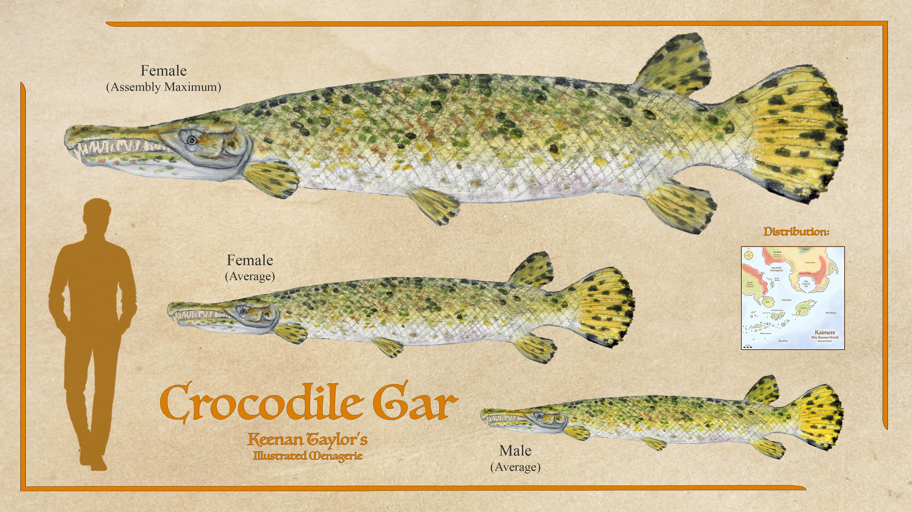
The ability to swallow large fish whole becomes particularly valuable with arapaima because prolonged dismemberment increases the probability that the carcass will be stolen. Crocodile gar are also routinely consumed. They are generally much smaller than the largest arapaima, and individuals exceeding approximately 50 lb fall well within the ordinary prey range of adult ba'khar. Their heavy scales and powerful jaws make them less convenient than softer-bodied fish, but their abundance and predictable behavior make them worthwhile prey.
Prey with defensive structures, such as hybodont sharks, are not swallowed whole; ba'khar first remove the spines, stabilizing the fish with a foot between the dorsal and anal fins, and then dismember the carcass. River stingrays are treated similarly, with the stinger removed before consumption of the tail and remaining tissues.

The Seridic lungfish becomes especially important during the dry season. As water levels decline, lungfish enter aestivation within the substrate. Ba'khar can locate these buried animals using olfactory cues, detecting the characteristic mucus and respiratory cavities associated with their underground chambers. The predator excavates the substrate using its hindlimbs and forelimbs before extracting the lungfish with its jaws. This is an unusual terrestrial feeding behavior for a predominantly aquatic predator and can provide a critical source of protein when surface fish become scarce.
Smaller fish are disproportionately important to juveniles. Chicks may begin with fish only a few centimeters long before progressing through progressively larger prey. By three years of age, a juvenile can regularly handle fish weighing several kilograms, while five- to seven-year-old subadults begin taking prey that overlaps with the diet of smaller adults.

One of the most important prey are the abundant shoaan, or leatherfish, a diverse clade of catfishes comprising approximately forty formally recognized species and probably substantially more undescribed species. Young leatherfish provide prey throughout the ba'khar's life, while larger forms become increasingly important as the predator grows. The resplendent leatherfish, which exceeds three meters and may occasionally approach five meters according to unverified reports, is particularly valuable to large adults. Leatherfish are explicitly recognized as an important food resource for ba'khar from juvenile stages through the largest species.
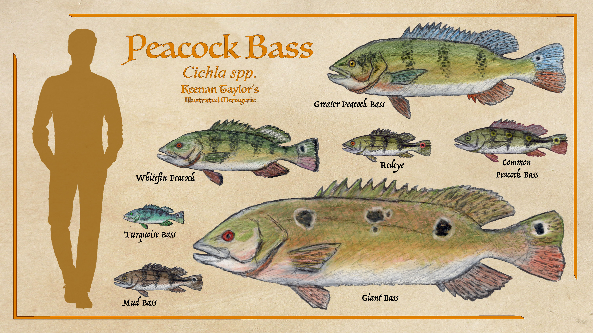
Peacock bass constitute another major component. At least a dozen species occur in the Seridic wetlands, and their aggressive predatory behavior, abundance, and tendency to occupy accessible channels make them particularly dependable prey. They are specifically identified as a key resource for ba'khar.

Large ba'khar also regularly take wujani, the heavily armored Seridic catfish. Although wujani are protected by reinforced armor and can reach substantial size, they are sufficiently abundant that ba'khar have developed techniques for killing and processing them.
Other important fish prey include Seridic trout and bluetail brycon, particularly juveniles and subadults. These fishes become increasingly herbivorous with age, meaning that the largest adults are less useful prey than their younger counterparts. Juvenile Seridic trout consume insects, fruits, seeds, crustaceans, and fish, making them common small-to-medium prey for immature ba'khar. The same principle applies to other members of the Brycon radiation. Bronze trout, gilded trout, emerald trout, red rooflouse, and silverflank trout are all potentially consumed, with the more carnivorous forms such as the red rooflouse providing particularly attractive prey. Smaller fishes are generally swallowed whole, while large individuals are processed progressively with the jaws and forelimbs.
Seridic giant squamantarx, sun bicuda, vigil piranhas, giant apistogramma, electric eels, and numerous smaller native and introduced fishes.
Crocodile gar are normally taken below approximately 50 kilograms, whereas the enormous arapaima and squamantarx become prey only for the largest ba'khar and under favorable circumstances. The largest fish are energetically exceptional. A single large squamantarx or arapaima can potentially provide the equivalent of several days of caloric intake. Consequently, adult ba'khar do not necessarily maximize the number of fish captured. Instead, they maximize energy acquired per successful strike. A 2 — 3 meter fish that can be swallowed whole is an ideal prey item, whereas a massive fish requiring prolonged processing may be worthwhile only when its energetic return substantially exceeds the risk and effort involved.
Crocodilians constitute the most important non-fish component of the adult diet. They may account for approximately 5 — 10% of annual biomass intake, although the proportion can rise substantially in territories where crocodilian densities are high and fish populations fluctuate strongly. Small crocodilians are swallowed or torn apart with relatively little difficulty. Larger individuals are attacked through the head and neck, where the ba'khar's jaws and forelimbs can immobilize them. The predator's robust manual claws are particularly useful in preventing the crocodilian from twisting away. Crocodilian predation is nevertheless dangerous. Even a ba'khar several times the mass of its prey can suffer serious injuries from a tail strike or bite. Consequently, adults favor individuals that can be subdued quickly, particularly juveniles and subadults. This explains why crocodilians are an important dietary component without becoming dominant in the diet.

Turtles generally contribute 2 — 5% of annual biomass, although their importance increases when fish become difficult to locate. Ba'khar do not usually attempt to swallow heavily armored turtles intact. Instead, they seize the animal and use their forelimbs and jaws to manipulate it. Smaller turtles may be swallowed whole. Larger individuals are attacked around the limbs, neck, and exposed soft tissues. The Crescent snapping turtle is particularly vulnerable when young. Adults are considerably more difficult prey because males can approach 40 kilograms or more and possess powerful jaws and thick shells. A ba'khar generally attacks such turtles only when the energetic reward is sufficient or when other prey are scarce.
Other aquatic reptiles are similarly opportunistically consumed, including large lizards and snakes. The species' powerful gastric chemistry allows it to exploit much of the carcass, although heavily mineralized armor and exceptionally resistant skeletal material may occasionally be regurgitated.

Amphibians are disproportionately important to chicks and small juveniles but become minor components of the adult diet. The greater cypress worm (Caecilia sp.), at approximately 40 — 70 centimeters, represents an ideal juvenile prey item. It is abundant in exactly the environments where young ba'khar forage—blackwater swamps, root tangles, leaf litter, and soft-bottom channels. Its cylindrical body can be swallowed whole with little processing. The red-backed spur frog is similarly available throughout the wetlands. Although its skin toxins discourage predation, the toxins are not sufficiently potent to prevent consumption by a growing ba'khar. Experienced individuals generally learn to avoid repeated consumption of these frogs unless prey is scarce. The common glass frog is a much smaller prey item, typically only 2.5 — 4 centimters, and is principally relevant to chicks. A juvenile moving through low vegetation can consume numerous small frogs during a single foraging period.

Teratobatrachids represent a much more substantial prey category. The zi shun can reach approximately 90 kilograms in males and potentially 200 kilograms in females, making it a meaningful prey item for a subadult or adult ba'khar. Their aquatic habits and tendency to remain concealed in swamp environments bring them into direct contact with ba'khar. However, their ability to launch explosively and their capacity to bury portions of large kills make them dangerous and unpredictable prey. Ba'khar generally target smaller individuals or attack from positions where the animal cannot execute a full escape launch.
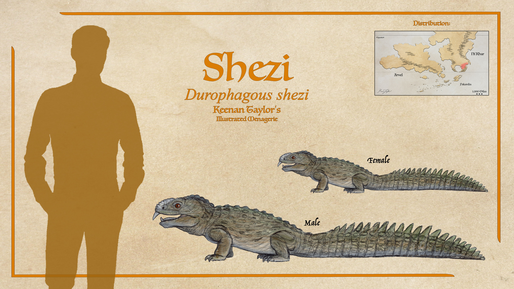
The mahogany gecko represents an almost exclusively juvenile food item. At only 15 — 22 centimeters, it is too small to contribute meaningful biomass to an adult but is readily taken by chicks exploring vegetation. The shezi is much more significant. Adult males reach approximately 1.5 meters, while females average around 1 meters. Its hard-prey specialization means that it occupies a somewhat unusual nutritional niche. Juvenile ba'khar may consume smaller shezi whole, while adults can exploit larger individuals by seizing them around the torso and breaking or tearing the body before swallowing. Large tegus, including the giant golden-tail tegu, and Ni'Khari swamp monitors can also be consumed. The larger monitors are generally dangerous prey and are more often taken opportunistically than actively sought. The smaller and more versatile pibald water monitor is more frequently encountered and can constitute a regular minor prey item, particularly for juveniles.
Birds constitute approximately 1 — 5% of annual adult dietary biomass but may become considerably more important for young ba'khar. Aquatic birds are preferred because they can be intercepted in the same environments where ba'khar already forage. Birds nesting low over water are particularly vulnerable. Ba'khar may use the long forelimbs to pull down vegetation containing nests, while ground-feeding birds can be ambushed from cover. Small birds are swallowed whole. Larger birds are restrained with the jaws and forelimbs before being dismembered. Nestlings and eggs are particularly valuable to juveniles because they provide concentrated nutrition with little risk.
Mammals are generally secondary prey, accounting for approximately 2 — 7% of annual adult dietary biomass, but this figure can increase during severe aquatic-resource shortages. Small mammals are readily taken by juveniles. Rodents, multituberculates, and mustelids are particularly vulnerable because they occupy dense wetland vegetation and river margins. Adults occasionally hunt larger mammals, including deer, sloths, bovids, and hippos. Such predation is uncommon because terrestrial mammals are generally more difficult to approach than fish and can injure the predator. Nevertheless, a ba'khar will exploit vulnerable individuals, especially young, injured, trapped, or water-associated prey. Young hippopotamuses are occasionally attacked at the margins of waterways, although an adult hippopotamus is generally too dangerous to justify active pursuit. The same principle applies to larger sloths and bovids. The ba'khar therefore functions as a significant predator of aquatic and semi-aquatic mammals without becoming a principal mammalian megafauna hunter. The much larger kurajaku occupies the specialized niche of taking very large aquatic mammals, reducing direct dietary competition between the two predators. The ba'khar's emphasis on fish further separates the two species ecologically.
Other dinosaurs form a small but important portion of the dietary spectrum. Small thescelosaurs, elasmarians, young shield drakes, and other wetland dinosaurs can be taken opportunistically. Juveniles may consume prey only slightly larger than themselves when circumstances permit, while adults generally select vulnerable individuals rather than healthy adults. Eggs and hatchlings are particularly valuable because they provide high nutritional return for comparatively little danger. Predation upon large adult dinosaurs is unusual but not impossible. An adult ba'khar can kill prey several times its own mass under favorable conditions, but such events are energetically expensive and carry significant injury risk.
Fluid Intake
Ba'khar obtain most of their water directly from prey and therefore do not need to drink frequently despite their enormous body size. Fresh fish are approximately 65 — 80% water by mass, meaning that a large meal can supply many liters of metabolically useful water. An adult consuming 50 — 100 kilograms of fresh prey may obtain approximately 35 — 75 liters of water from the meal alone. During periods of high feeding intensity, this can satisfy much or all of the individual's daily water requirements. Direct drinking nevertheless occurs regularly.
Ba'khar typically drink from shallow pools by lowering the head and drawing water into the mouth, often taking several liters at a time. A large adult may consume approximately 10 — 30 liters of free water per day during normal conditions, although intake can increase substantially during the hottest portions of the dry season. Hens incubating eggs are particularly dependent upon efficient hydration. Because they cannot leave the nest for prolonged periods, they preferentially select territories containing permanent or semi-permanent water close to the nesting site. The species' aquatic habitat also permits passive hydration through immersion. Standing in shallow water does not replace drinking but reduces evaporative stress, especially during the hottest hours of the dry season.
Ontogenetic Differences
Diet changes radically throughout ba'khar development. Chicks below 6 months are predominantly small-prey predators. Their diet consists heavily of small fish, frogs, caecilians, crustaceans, aquatic insects, small lizards, geckos, young snakes, and small birds. Invertebrates and amphibians may together constitute 20 — 40% of prey items, although they represent less than 10% of biomass. Maternal provisioning supplements this diet and allows chicks to consume larger pieces of meat than they could acquire independently.

At approximately six months and 12 kilograms, chicks begin taking increasingly substantial fish and small vertebrates. Their hunting behavior becomes more sophisticated, and their prey size expands rapidly. By one year, fish usually account for approximately 50 — 70% of dietary biomass, with amphibians, reptiles, birds, and small mammals making up the remainder.
At three years and approximately 50 kilograms, juveniles are already functioning as competent predators. Fish generally account for 60 — 75% of dietary biomass, while terrestrial vertebrates become increasingly important. They can consume frogs, caecilians, turtles, snakes, lizards, birds, rodents, multituberculates, and small dinosaurs. Their high growth rate means that they may consume 10 — 20% of body mass in food per day, equivalent to approximately 5 — 10 kilograms for a 50-kg juvenile under periods of intensive growth.
At five years, when individuals exceed 350 kilograms, dietary composition begins approaching that of adults. Fish account for approximately 70 — 80% of annual biomass, while larger reptiles, birds, mammals, and dinosaurs provide most of the remainder. Daily intake can reach 30 — 40 kilograms of meat, especially during rapid growth.
Between six and eight years, prey size increases dramatically. Individuals approaching 500 — 700 kilograms begin taking large fish, young crocodilians, substantial turtles, and medium-sized terrestrial vertebrates. At this stage, dietary specialization becomes increasingly individual-specific.
After sexual maturity at approximately 8 — 9 years, the adult diet becomes strongly territory-dependent. A mature hen occupying a productive fishery may derive 85 — 90% of her annual biomass from fish. A hen occupying a poorer marsh may obtain only 55 — 70% from fish and compensate through crocodilians, turtles, amphibians, mammals, birds, and scavenging. Drakes are generally more flexible because their larger ranges allow them to follow fish concentrations. Consequently, their annual diet can remain more strongly fish-dominated despite seasonal depletion.
Mineral Supplementation and Incidental Intake
The high proportion of vertebrate prey provides ba'khar with substantial calcium, phosphorus, sodium, and other minerals. Bone is extensively digested rather than simply discarded. Powerful gastric acids permit the digestion of much of the skeletal material consumed with whole prey. Nevertheless, ba'khar occasionally ingest additional mineral material deliberately or incidentally. Small quantities of sediment may be consumed while excavating lungfish, extracting buried prey, or manipulating carcasses. Soft mineral-rich mud along wetland margins may therefore contribute trace quantities of calcium, sodium, and other elements.
Egg-producing hens have the greatest mineral requirements. During the weeks preceding ovulation and egg laying, dietary calcium demand increases substantially. A gravid hen therefore shifts toward whole fish and other vertebrates that can be consumed with their skeletons intact rather than selectively consuming only muscle tissue. Eggshell production represents a particularly significant mineral investment. A clutch of 9 eggs, for example, requires the deposition of a considerable quantity of calcium carbonate and associated minerals. A large clutch approaching 10 — 20 eggs imposes an even greater demand. Hens consequently enter reproduction with substantial mineral reserves accumulated during the wet-season feeding period.

The consumption of armored prey also provides an incidental mineral source. Turtles, heavily scaled fish, crocodilians, and other hard-bodied prey supply considerable calcium and phosphorus, although ba'khar do not appear to seek them specifically for mineral content. Indigestible material such as exceptionally dense armor plates may eventually be regurgitated. These regurgitated pellets can contain scales, keratin, shell fragments, and other resistant tissues and are an important by-product of feeding rather than evidence that the animal cannot digest bone.
Seasonal Dietary Dynamics
The Seridic wetlands and Sheklat riverlands are not nutritionally stable throughout the year. Their annual hydrological cycle fundamentally structures ba'khar feeding ecology.
During the wet season, expanding rivers, oxbow lakes, marshes, and flooded forests produce enormous fish biomass. Fish may constitute 85 — 95% of dietary biomass during this period. Ba'khar concentrate along newly flooded channels and shallow margins where fish disperse into newly available habitat. This is also the period of greatest energetic accumulation. Hens approaching reproduction exploit the seasonal abundance to build substantial fat reserves before nesting. Drakes similarly exploit the abundance to maximize body condition before the breeding season. As water levels begin falling, fish become progressively concentrated. This initially benefits ba'khar because prey density increases in shrinking pools. The predator can obtain enormous energetic returns while expending relatively little energy searching. Eventually, however, the process reverses. Isolated pools become depleted, large fish disappear, and the remaining water bodies become increasingly competitive environments.
During this early dry-season transition, fish may still provide approximately 70 — 80% of biomass, but the composition shifts toward smaller and more concentrated prey. At the peak of the dry season, dietary flexibility becomes essential. Fish may fall to 45 — 65% of biomass in particularly severe years. Lungfish become increasingly important because they aestivate underground. Crocodilians and turtles become more accessible around shrinking pools, while frogs, caecilians, lizards, birds, mammals, and terrestrial dinosaurs become increasingly profitable. Scavenging also increases. Dead fish concentrated along shrinking waterways, animals killed by drought, carcasses deposited by floods, and kills abandoned by other predators all become valuable resources. During severe droughts, scavenged material may constitute 10 — 20% of food intake for some individuals. The dry season is also when ba'khar most strongly alter their movement patterns. Drakes may travel 20 — 50 kilometers or more between persistent feeding sites, while hens generally remain within their territories and compensate by broadening their prey spectrum. A territory containing a permanent deep pool therefore possesses enormous reproductive value.
The return of rainfall produces an immediate dietary reversal. Newly flooded channels reconnect isolated pools, fish redistribute throughout the wetland, and prey abundance rises rapidly. Ba'khar respond quickly, returning to highly specialized fishing and reducing their dependence on terrestrial prey.
This seasonal flexibility explains the persistence of the species in the Seridic wetlands despite its enormous body size. The ba'khar is dependent upon fish in the same way that a specialist is dependent upon its principal resource, but it is not helpless when that resource temporarily disappears. Its capacity to switch from fish to lungfish, crocodilians, turtles, amphibians, birds, mammals, dinosaurs, and carrion prevents seasonal fish collapse from becoming an immediate energetic catastrophe.
08 · ECOLOGY
Niche
The ba'khar occupies one of the most specialized high-trophic niches within the freshwater ecosystems of the Crescent. Although superficially comparable to large wading birds such as herons, storks, or jabirus, its ecological position is more accurately understood as that of a giant terrestrial-contact piscivore operating at the interface between shallow water and land. It is neither a fully aquatic predator nor a conventional terrestrial carnivore that merely exploits wetlands opportunistically. Rather, the species is adapted to exploit exceptionally productive shallow-water environments in which abundant fish biomass occurs within reach of a large, predominantly terrestrial predator. This distinction is fundamental to understanding the ecological persistence of the species.
The Seridic wetlands constitute an enormous hydrological mosaic of permanent marshes, shallow lakes, floodplain forests, oxbow basins, distributary channels, wet grasslands, and seasonally inundated woodland. Their unusual combination of persistent standing water, mountain-derived nutrient inputs, seasonal flooding, and extremely low topographic relief creates aquatic habitats capable of sustaining extraordinary fish biomass. The ba'khar is consequently not simply a large predator that happens to live in wetlands. Its morphology, sensory biology, territorial organization, reproductive system, and seasonal movements are all expressions of this particular ecological setting.
Trophic Position
The ba'khar occupies the highest trophic position within the aquatic component of the Seridic wetlands and represents one of the most specialized examples of an apex predator in the Crescent. Its ecological position is nevertheless more complex than that of a conventional piscivore, because although fish constitute the overwhelming majority of its prey biomass and provide the principal energetic foundation of adult survival, the ba'khar is not physiologically or behaviorally restricted to aquatic vertebrates. Rather, it is a large-bodied, terrestrial-contact macro-predator whose feeding ecology is centered upon the exploitation of exceptionally productive shallow-water environments. Its position within the food web is consequently determined not simply by what it eats, but by the unusual manner in which it connects aquatic and terrestrial trophic pathways. The ba'khar regularly removes biomass from the water and transfers it onto land through consumption, digestion, carcass deposition, and waste, while simultaneously exerting top-down pressure upon animals that themselves occupy elevated trophic positions. It therefore functions as both an apex piscivore and a predator capable of penetrating several adjacent trophic compartments.
The principal energetic foundation of the ba'khar is the extraordinary fish biomass generated by the Seridic wetlands. The basin's extensive permanent waterways, shallow lakes, oxbows, floodplain pools, marshes, and seasonally inundated forests provide an unusually large area of productive aquatic habitat. Seasonal flooding repeatedly transports nutrients across the landscape, while retreating waters concentrate aquatic organisms into progressively smaller bodies of water. These processes produce pronounced pulses of fish abundance upon which the largest piscivores depend. The ba'khar is particularly well adapted to exploit these concentrations because its enormous body size permits it to process prey that would be inaccessible or energetically inefficient for smaller fish specialists. Its feeding strategy is therefore based upon the conversion of concentrated aquatic vertebrate biomass into the metabolic and reproductive requirements of one of the largest terrestrial-contact predators in the wetland community.
Fish, however, should not be regarded as an undifferentiated dietary category. Adult ba'khar exhibit pronounced selectivity in the species, size, condition, and accessibility of fish they capture. The enormous energetic requirements associated with maintaining their bodies favor prey that provide a high energetic return relative to the effort required for capture and handling. Consequently, adults disproportionately target large-bodied fish whenever these are sufficiently abundant and accessible. Smaller fish are not ignored, particularly when they occur in exceptionally dense aggregations, but a mature ba'khar generally obtains greater energetic efficiency by concentrating upon fewer large prey than by repeatedly capturing numerous small individuals. This creates a trophic relationship fundamentally different from that of smaller aerial piscivores, which can sustain themselves through the continuous capture of small and medium-sized fish.
The importance of large fish in the ba'khar diet gives the species a particularly strong influence upon the upper size structure of the aquatic vertebrate community. It does not merely reduce total fish abundance. Instead, predation is disproportionately directed toward individuals that have survived long enough to attain substantial body size and accumulate significant biomass. The resulting pressure may therefore alter the demographic composition of fish populations, particularly within isolated lakes and productive oxbows where individual ba'khar establish permanent territories. Large fish that would otherwise become dominant predators or major competitors within the aquatic community are repeatedly exposed to the hunting activities of territorial adults. Through this mechanism, the ba'khar exerts a form of size-selective top-down regulation that differs from the more generalized predation imposed by smaller piscivores.
This predatory pressure extends beyond fish. Crocodilians constitute the second most important prey category, an unusual dietary characteristic for a fish-specialized theropod and one that substantially elevates the species' trophic position. Juvenile and medium-sized crocodilians are particularly vulnerable when they occupy shallow channels, vegetated margins, and productive fishing grounds. Their inclusion in the ba'khar diet means that the predator is not simply feeding upon primary or secondary consumers but periodically consuming animals that themselves function as apex or near-apex predators. The trophic relationship is therefore partially intraguild in nature. By killing crocodilians, the ba'khar removes competitors for fish and simultaneously consumes a predator capable of exerting substantial pressure upon the same aquatic prey base.
Turtles form another recurrent component of the diet, particularly large aquatic species encountered in shallow water. Their relatively slow movements make them vulnerable when encountered in open shallows, although the energetic value of an individual turtle depends upon the ability of the ba'khar to penetrate or crush its defenses. Aquatic and terrestrial birds likewise become important supplementary prey, especially during periods when seasonal flooding concentrates waterfowl, waders, and other birds around productive feeding sites. Mammals and smaller dinosaurs are taken less frequently than fish but become increasingly important when terrestrial animals enter the immediate vicinity of established fishing territories. Reptiles, amphibians, and other vertebrates contribute additional dietary diversity, particularly for younger individuals and adults exploiting temporary concentrations of prey.
This broad prey spectrum should not be interpreted as evidence of ecological generalism. The ba'khar remains a specialized piscivore because the morphology, sensory system, hunting behavior, and territorial organization of mature individuals are overwhelmingly structured around locating and capturing aquatic prey. The consumption of terrestrial animals is best understood as opportunistic trophic expansion around a strongly aquatic ecological core. A mature ba'khar does not abandon fishing when it captures a bird or mammal; rather, it exploits an additional energetic opportunity whenever terrestrial prey becomes unusually accessible within the boundaries of its aquatic territory.
Seasonality is therefore fundamental to the species' trophic ecology. During periods of falling water levels, fish become increasingly concentrated within permanent channels, oxbows, and deeper pools. This concentration substantially increases the profitability of piscivory and allows adults to obtain large quantities of food while minimizing movement. At other times, particularly during periods of extensive inundation, fish disperse across newly flooded forests and grasslands. Their abundance remains high, but their distribution becomes spatially diffuse. Simultaneously, terrestrial animals gain access to newly inundated vegetation and are themselves concentrated along the boundaries between dry and flooded habitats. The ba'khar responds to this changing distribution by altering the relative contribution of different prey categories rather than abandoning its territories altogether. This seasonal flexibility gives the ba'khar an unusually broad trophic amplitude. It can function primarily as a piscivore during low-water periods, shift toward mixed aquatic predation during intermediate conditions, and substantially increase its exploitation of terrestrial vertebrates when flooding creates dense prey concentrations along shallow margins. Such flexibility buffers the species against short-term fluctuations in any single prey population. More importantly, it prevents the ba'khar from becoming dependent upon a single fish species or a single hydrological state. The species is consequently specialized at the level of habitat and feeding strategy, rather than specialized upon one particular prey taxon.
The sensory adaptations of the ba'khar are central to this trophic position. Its olfactory system is among the most sophisticated known in terrestrial dinosaurs, permitting mature individuals to discriminate between the chemical signatures of hundreds of fish species. Chemical information carried across the surface of the water allows adults to identify productive feeding areas even when visual conditions are severely degraded by suspended sediment, aquatic vegetation, darkness, or the complex optical environment of shallow wetlands. This capacity is especially important in the Seridic basin, where annual flooding repeatedly alters water clarity and redistributes aquatic organisms across an enormous network of interconnected habitats. The ba'khar can therefore locate prey without requiring direct visual confirmation of individual fish. The ecological significance of this sensory system extends beyond simple prey detection. Chemical information allows the ba'khar to construct a spatially distributed understanding of the wetland's trophic landscape. An experienced adult can distinguish the characteristic chemical signatures associated with different fish assemblages and can use these differences to determine which portions of its territory are presently productive. Persistent or repeated scent profiles can consequently function as indicators of prey density, species composition, and recent activity. Although the extent to which adults can quantitatively assess prey abundance remains uncertain, behavioral observations strongly indicate that experienced individuals recognize differences between highly profitable and comparatively poor fishing grounds. This creates an important distinction between the ba'khar and visually oriented aerial piscivores. Herons, storks, pterosaurs, and other aerial predators can survey large areas rapidly from above and identify prey through direct visual observation. Their hunting efficiency is therefore strongly dependent upon visibility and the accessibility of prey from the air. The ba'khar possesses neither the same aerial perspective nor the ability to relocate instantaneously between distant feeding sites. Instead, it compensates through olfactory sensitivity and an extensive memory of the wetland environment. The adult effectively carries a chemical and spatial map of its territory, allowing it to exploit productive locations even when direct visual detection is impossible.
The development of this sensory specialization is closely associated with ontogenetic learning. Juveniles do not emerge possessing the complete ecological knowledge characteristic of adults. Their early trophic niche is considerably broader and less selective, encompassing small fish, amphibians, aquatic invertebrates, reptiles, and other easily captured prey. As they increase in size, juveniles encounter progressively larger prey and begin to associate particular odors, water conditions, vegetation structures, and seasonal patterns with successful feeding opportunities. Through repeated exposure they acquire an increasingly refined catalogue of prey species and habitats. Adult trophic specialization is therefore partly anatomical and partly experiential. This learned component is especially important because the Seridic Wetlands are temporally dynamic. A location that is highly productive during one portion of the hydrological cycle may become comparatively unproductive later in the year. Fish assemblages shift in response to water depth, temperature, oxygen concentration, vegetation, and flood connectivity. Consequently, a fixed behavioral rule such as "fish are always abundant in this location" would be inadequate. Adult ba'khar instead appear capable of modifying their use of the landscape according to changing conditions, revisiting productive areas when chemical and environmental cues indicate that prey have returned.
The species' trophic position is consequently best understood as the product of large body size, high prey-processing capacity, sensory specialization, dietary flexibility, and extensive spatial memory. These characteristics allow it to exploit prey populations at sizes and trophic levels unavailable to most competing piscivores while maintaining sufficient flexibility to respond to seasonal changes in the wetland food web. The ba'khar's position above smaller piscivores also creates strong intraguild interactions. Fish-eating crocodilians, leisters, hybodonts, large turtles, aquatic birds, and other predators all exploit portions of the same aquatic productivity. The ba'khar does not necessarily eliminate these competitors because the wetland contains sufficient resources to support multiple piscivorous guilds, but its presence changes the distribution of larger predators around productive territories. Smaller piscivores can exploit shallow margins and smaller prey that are energetically insignificant to adults, whereas large predators capable of competing directly for substantial fish encounter territorial exclusion or increased predation risk.
The resulting food web is therefore vertically stratified. Small piscivores exploit small fish and aquatic invertebrates; medium predators exploit progressively larger fish and amphibious vertebrates; specialized crocodilians and large aquatic predators occupy upper aquatic trophic levels; and the ba'khar occupies the terrestrial-contact apex, periodically feeding upon members of these same upper trophic levels. Its role is consequently not equivalent to that of a single apex predator ruling the entire wetland. Instead, it is the dominant predator of a particular intersection between aquatic and terrestrial trophic systems. This distinction becomes particularly evident where the ba'khar encounters other apex predators. Large aquatic predators remain dominant in deep water, where swimming ability and underwater maneuverability become decisive. Terrestrial ambush predators dominate forest interiors, while cursorial predators exploit open floodplains and migrating herbivores. The ba'khar occupies the intermediate ecological space between these systems: shallow water, submerged margins, flooded woodland, marsh edges, and the terrestrial substrate immediately surrounding productive aquatic habitats. Its trophic dominance is therefore strongest precisely where aquatic and terrestrial environments meet. The consequences of this position extend beyond direct predation. Because the ba'khar consumes large aquatic vertebrates but spends substantial portions of its time on land, it acts as a conduit through which aquatic productivity is transferred into terrestrial ecosystems. Fish biomass captured in water is processed on terrestrial resting grounds, territorial sites, and nesting areas. Waste products and discarded prey remains become available to terrestrial scavengers and decomposers, while ba'khar carcasses eventually provide enormous pulses of organic matter to both aquatic and terrestrial communities. The species thus participates in a bidirectional exchange between the two major trophic systems of the wetland.
Its trophic influence is further magnified by territoriality. A female defending a highly productive fishing territory effectively monopolizes access to a concentrated portion of the aquatic food web. Her ecological impact therefore extends beyond the quantity of prey she personally consumes. Competitors are displaced, prey distributions are altered by repeated predation, and scavengers become associated with predictable feeding sites. A mature female can consequently function as a persistent organizing force within the local predator assemblage. Despite occupying the highest trophic tier, the ba'khar is not ecologically independent of lower trophic levels. Its abundance ultimately remains constrained by primary productivity within the wetland, the seasonal availability of fish, and the hydrological processes that concentrate aquatic biomass. Its enormous body size imposes correspondingly high energetic requirements, making it particularly dependent upon environments capable of sustaining large-bodied prey year-round. The species can tolerate temporary reductions in fish availability by increasing its consumption of terrestrial prey, but prolonged reductions in aquatic productivity would eventually undermine its reproductive output and territorial stability.
For this reason, the ba'khar can be regarded as a biological expression of the exceptional productivity of the Seridic Wetlands. Its persistence indicates not simply the presence of fish, but the existence of a sufficiently productive and structurally complex aquatic system capable of supporting large fish populations, large secondary consumers, and finally an enormous apex predator specialized in exploiting them. The species is thus situated at the culmination of a long trophic sequence extending from wetland primary production through aquatic invertebrates and herbivorous fishes to large predatory fish, crocodilians, turtles, and other vertebrates, before terminating in the enormous body mass of the ba'khar.
Habitat Partitioning and Spatial Role
The habitat of the ba'khar is best understood not simply as a wetland association, but as a highly specialized spatial niche centered upon the ecotone between shallow water and stable terrestrial substrate. Despite its enormous size and predominantly aquatic diet, the species is not an aquatic animal in the strict ecological sense. It remains fundamentally terrestrial in locomotion, resting behavior, territorial defense, and reproduction, while obtaining the overwhelming majority of its biomass from aquatic environments. Its distribution is therefore governed by the simultaneous availability of two environmental resources that are often spatially separated in other wetland systems: sufficiently productive shallow water for feeding and sufficiently stable elevated ground for resting, territorial occupation, and nesting.
The most favorable habitat occurs where these conditions overlap over large spatial scales, particularly around permanent or semi-permanent lakes, broad oxbows, sluggish distributaries, marsh margins, and seasonally inundated flood basins bordered by forest, levees, or slightly elevated floodplain terraces. This dependence upon the land-water interface explains the extraordinary importance of the Seridic wetlands to the species. The basin possesses an unusual combination of extremely low topographic relief, abundant mountain-fed rivers, extensive permanent wetlands, and a persistent flood regime. Rather than rapidly transporting water toward the sea, the lowlands allow rivers to dissipate their energy across broad floodplains, producing a complex succession of channels, lakes, marshes, distributaries, and seasonally flooded forests. The resulting environment provides an exceptionally large area of shallow water in which a predator of ba'khar dimensions can remain firmly supported by the substrate while reaching into sufficiently deep water to encounter large fish.
This is a critical distinction. A ba'khar cannot exploit deep aquatic environments with the same efficiency as a genuinely aquatic predator, yet neither can it derive sufficient energy from very shallow ephemeral pools. Its optimal habitat consequently occupies an intermediate hydrological zone in which water is deep enough to sustain substantial prey but shallow enough that the animal can maintain terrestrial footing. Water depth consequently represents one of the principal axes along which the large predator community of the Seridic basin is partitioned. The ba'khar is concentrated primarily in shallow to moderately deep water, particularly where submerged vegetation, sediment shelves, gently sloping margins, and firm bottoms allow adults to stand or walk while fishing. It may enter deeper channels when pursuing prey or moving between territories, but prolonged occupation of such environments becomes progressively less advantageous as swimming becomes necessary.
Its enormous mass, while advantageous for overpowering large prey, represents an energetic liability in deep water. The species therefore avoids making swimming the fundamental component of its hunting strategy. Instead, its characteristic feeding posture places the body on solid substrate while the neck and head extend into the water column, allowing it to exploit aquatic prey without surrendering the mechanical advantages of a terrestrial body plan. This produces a remarkably narrow bathymetric niche when compared with the apparent breadth of the species' geographic distribution.
Two wetlands of equal area may therefore differ enormously in their suitability for ba'khar. A deep lake with steep banks and little shallow littoral habitat may support large fish but provide relatively little usable habitat for the species. Conversely, an immense shallow marsh may offer abundant fishing opportunities but lack sufficient large fish to meet the energetic requirements of an adult. The highest-quality territories occur where shallow littoral shelves descend gradually into deeper pools, allowing large fish to approach within striking distance of a terrestrial predator while retaining access to deeper refuge. Such environments are particularly common around abandoned channels, oxbow lakes, floodplain depressions, and the margins of permanent marshes. The configuration of the shoreline is therefore nearly as important as water depth itself. Ba'khar favor irregular margins containing alternating open water, emergent vegetation, exposed mud, woody debris, and elevated islands or levees.
Submerged roots and fallen trees are particularly valuable because they concentrate smaller fish and create predictable movement corridors for larger individuals. Nevertheless, the species avoids vegetation so dense that its enormous head and neck cannot be deployed effectively. Its optimal feeding grounds consequently resemble a mosaic of open fishing lanes embedded within structurally complex wetland margins rather than either completely open water or impenetrable swamp.
Vegetation surrounding feeding waters further influences habitat quality. Mature gallery forests provide shaded resting sites, concealment from competing predators, and elevated locations from which territorial boundaries can be advertised through scent. Dense woodland also produces numerous fallen branches and submerged roots that modify fish movement. Open marshes, by contrast, provide excellent visibility and unobstructed access to the water surface, allowing ba'khar to remain stationary while monitoring broad areas of productive water.
The highest-quality territories therefore frequently occur at the transition between these conditions, where forest provides terrestrial infrastructure while adjacent marsh or lake provides extensive fishing habitat. This explains why the species is disproportionately associated with forested lake margins, wooded oxbows, marsh islands, and riverine clearings rather than either deep forest or open water alone. Elevated ground is particularly important during periods of high water. Seasonal flooding transforms large portions of the Seridic basin, temporarily converting terrestrial habitat into shallow aquatic environments. Ba'khar can exploit these conditions extensively, but cannot simply follow the floodwater indefinitely because reproduction and resting require secure substrate above the flood level. Natural levees, river terraces, raised islands, abandoned channel margins, and elevated forest patches therefore function as critical refugia. These features become spatial anchors around which territories are organized. A productive female territory is consequently not merely a section of water containing sufficient fish, but a composite landscape incorporating feeding grounds, terrestrial resting areas, nesting sites, sheltered routes between water bodies, and elevated refuges capable of remaining usable during seasonal inundation. The resulting territories are likely to be highly irregular in shape. Their boundaries are determined less by arbitrary distances than by the distribution of productive fishing waters and usable terrestrial infrastructure. A female occupying a large oxbow may defend the entire water body if prey densities and nesting substrate permit, whereas an individual inhabiting a fragmented marsh may maintain several interconnected feeding patches linked by shallow channels.
Scent marking is particularly effective under these conditions because the boundaries of a territory may follow convoluted shorelines, forest corridors, or hydrological features that are difficult to defend through direct visual displays alone. The specialized scent glands of the wrists and throat therefore permit females to establish an olfactory map of their territories, communicating occupancy even when individuals cannot maintain continuous visual contact.
The spatial structure of the Seridic basin also generates substantial seasonal changes in territory quality. During periods of rising water, fish and other aquatic organisms disperse across newly inundated forests and grasslands. Ba'khar can temporarily exploit these expanded habitats, but prey becomes spatially diffuse. As floodwaters recede, aquatic organisms become progressively concentrated within permanent channels, oxbows, and deeper pools. At this stage, territories surrounding permanent water bodies become exceptionally valuable. Consequently, the dry season represents the period of greatest territorial competition, even though total wetland area is smaller. A female controlling a permanent pool or productive oxbow possesses reliable access to concentrated prey while individuals without established territories must travel among increasingly isolated feeding sites. This seasonal contraction also explains why ba'khar territories are not necessarily equivalent in value. The species occupies a pronounced hierarchy of habitat quality, ranging from marginal territories that provide adequate food only during periods of high productivity to exceptionally rich territories capable of supporting an adult female throughout the year. The latter are likely to be defended most vigorously and may be retained across many breeding cycles. In regions where particularly productive waters are spatially limited, related females may tolerate one another or cooperate in territorial defense, effectively creating multi-female feeding territories. Such cooperation is especially plausible where the energetic benefits of retaining a productive fishing ground outweigh the costs of sharing its resources.
The Sheklat riverlands demonstrate how this habitat specialization changes across the species' broader range. Although ba'khar regularly disperse into the Sheklat, the riverlands differ fundamentally from the Seridic wetlands in their hydrological architecture. They are dominated by flowing rivers, tributaries, floodplains, oxbows, estuaries, and seasonally inundated meadows rather than immense expanses of persistent standing water. This favors a somewhat different aquatic predator assemblage, including large fish specialists and predators adapted to current-bearing channels. Ba'khar consequently concentrate within the portions of the Sheklat that locally reproduce the structural conditions of the Seridic basin: quiet oxbows, floodplain lakes, marshy tributaries, sheltered backwaters, and slow marginal channels. They are comparatively uncommon within the principal river channels, where water velocity, depth, and prey distribution reduce the efficiency of their characteristic terrestrial-contact hunting strategy.
The contrast is ecologically important because it demonstrates that the ba'khar's range is not determined by the presence of fish alone. The Sheklat contains exceptionally productive rivers and supports a highly diverse fish community, yet much of this productivity occurs in flowing water. Large fish specialists such as the crescent leister are consequently better adapted to these habitats, with powerful forelimbs and elongated jaws allowing them to exploit fish within channels and along muddy banks. The ba'khar instead follows the spatial distribution of still or slowly moving water in which its own mechanical adaptations retain their advantage.
This relationship produces a continuum rather than a rigid boundary between the Seridic and Sheklat populations. Individuals can move between river systems whenever flood pulses connect isolated wetlands, and the species is capable of exploiting temporary habitat created by seasonal inundation. Such movements are particularly important for males, whose vagabond behavior allows them to travel extensively between female territories and productive feeding grounds. The resulting dispersal network connects otherwise isolated populations and may facilitate gene flow across the Crescent. At the same time, males may exploit transient fish concentrations that are too ephemeral to justify establishment of a permanent female territory.
Sexual differences therefore constitute another major component of habitat partitioning. Adult females are spatially conservative because reproduction imposes a requirement for predictable access to food and secure nesting habitat. A female's territory must contain sufficient prey not merely to sustain herself, but to support the energetic costs of egg production, incubation, and subsequent parental investment. It must also contain nesting locations that remain above ordinary flood levels while remaining sufficiently close to productive fishing waters. Females consequently select territories according to an integrated suite of variables rather than prey abundance alone. A lake supporting enormous fish populations may remain unsuitable if its margins lack secure nesting substrate, while a smaller lake surrounded by elevated forest may support a stable breeding territory if its fish productivity is sufficiently reliable. Males experience a substantially different spatial ecology. Because they do not normally maintain permanent feeding territories, males can move between female territories, exploit temporary concentrations of prey, and occupy marginal habitats that would be unsuitable for long-term reproduction. Their movements also allow them to cross ecological boundaries more frequently than females. A male may move from a Seridic lake into a connected river system, follow a flood pulse into newly inundated forest, and subsequently return to established female territories as water levels decline. The male therefore functions as a mobile component of the regional population, whereas females provide the relatively stable territorial framework around which reproduction is organized. This sexual difference reduces competition between the sexes while simultaneously increasing the resilience of the species to spatially heterogeneous food supplies. Females maintain predictable access to high-quality breeding territories, while males retain the flexibility necessary to exploit temporary resources. The two strategies are complementary rather than antagonistic.
In years when flooding produces unusually extensive aquatic habitat, males can disperse widely and exploit newly productive areas without abandoning the reproductive network of established females. During drought, their mobility permits them to locate remaining concentrations of fish and potentially return with information about profitable feeding grounds. The spatial ecology of juveniles further reinforces this partitioning. Young ba'khar cannot exploit the largest fish or occupy the deepest portions of adult feeding territories, and consequently utilize shallow margins, small channels, flooded vegetation, and sheltered backwaters within or adjacent to maternal territories. As they grow, their usable habitat expands outward from these protected margins toward increasingly open water. Subadults therefore occupy an intermediate spatial niche, exploiting habitats that overlap adult territories but remain sufficiently marginal to reduce direct competition with territorial females. The development of adult body size thus produces not merely a change in prey size, but a progressive expansion of the animal's spatial niche. At the community level, the ba'khar's distribution can consequently be represented along several intersecting environmental gradients: water depth, current velocity, shoreline complexity, fish biomass, terrestrial elevation, vegetation density, flood frequency, and distance from permanent water. No single variable determines habitat suitability. Instead, optimal habitat emerges where several favorable conditions converge. The most productive territories are generally characterized by shallow permanent water, abundant large fish, complex shorelines, nearby elevated forest or levee habitat, and hydrological stability sufficient to preserve feeding opportunities across seasonal fluctuations.
Interspecific Interactions and Competition
The coexistence of the ba'khar with the exceptionally diverse predator assemblage of the Seridic wetlands is not adequately explained by simple differences in prey preference. The wetland carnivore guild is structured through simultaneous partitioning of water depth, substrate, prey size, prey identity, locomotor medium, hunting method, body size, temporal activity, and reproductive requirements. These dimensions overlap extensively, but rarely coincide completely. Consequently, several predators may exploit the same fish population, occupy the same general wetland, and even encounter one another regularly without being in continuous direct competition.
The ba'khar occupies one of the most specialized positions within this network: it is the dominant giant predator of shallow-water, terrestrial-contact habitats, but its dominance becomes progressively weaker as water deepens, prey becomes more aquatic, or feeding shifts away from large fish toward terrestrial megafauna. This ecological structure is particularly important because the Seridic wetlands support an unusually high biomass of large predators. The basin's exceptional productivity permits predator populations that would ordinarily be mutually exclusive, yet productivity alone does not prevent competition. Rather, it increases the number of possible niches by allowing predators to specialize on different portions of an exceptionally large resource base. The result is a guild in which the ba'khar, alar, kurajaku, crocodilians, leisters, hybodonts, pterosaurs, mammals, and large reptiles interact through a combination of direct competition, interference, predation, kleptoparasitism, and spatial avoidance.
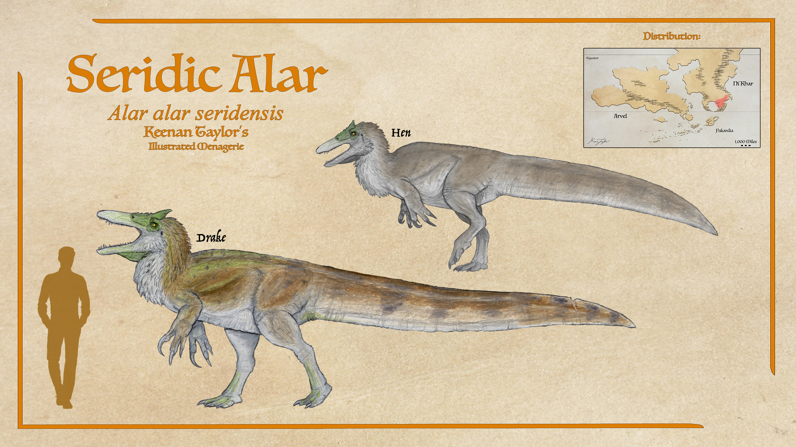
The closest ecological analogue of the ba'khar is the Seridic alar. The relationship between these two teratociconine megaraptorans is particularly instructive because they share ancestry, general body architecture, fish specialization, powerful forelimbs, enlarged sensory systems, and a strong association with shallow freshwater environments. Nevertheless, the two species occupy different portions of the available niche space. The ba'khar is substantially larger, more buoyant, less capable of sustained swimming, and more strongly specialized for stationary fishing from shallow water. The Seridic alar is smaller and substantially denser, with solid bones, thick skin, and reduced pneumaticity, while retaining markedly superior swimming ability. It can therefore move between shallow marshes and somewhat deeper channels and pursue fish in open water where a ba'khar would be comparatively inefficient. The alar thus occupies an intermediate position between the terrestrial-contact fishing niche of the ba'khar and the genuinely aquatic predatory niche of the kurajaku. This distinction is reinforced by differences in social organization. Female A. alar seridensis frequently occur in groups of two to five related individuals, particularly within open marshes where competition from larger predators is intense. Such groups can collectively defend territories that an individual alar could not maintain against a much larger competitor. Ba'khar females, by contrast, are capable of monopolizing the highest-quality territories individually, particularly around beaver-engineered lakes where fish are concentrated and nesting habitat is secure. The smaller alar therefore does not simply occupy inferior habitat; it converts social cooperation and reduced body size into an alternative competitive strategy. A group of nearly one-ton alar can contest open marsh habitat while remaining incapable of displacing a four-ton territorial ba'khar from a highly productive beaver lake. The competitive relationship between the two species is consequently asymmetric. Ba'khar exert stronger interference pressure upon alar than alar exert upon ba'khar in prime shallow-water territories. Yet this does not result in competitive exclusion because the traits that make ba'khar superior in the highest-quality shallow waters simultaneously restrict them elsewhere. Their large size, positive buoyancy, and limited swimming endurance prevent efficient exploitation of deeper channels, while the extensive energetic investment required by large females limits the number of suitable nesting territories they can occupy. Alar, being smaller and more flexible, can utilize marginal marshes, smaller islands, denser vegetation, and nesting sites unavailable to ba'khar. The two species therefore exhibit what may be termed hierarchical habitat partitioning, with ba'khar dominating the upper end of the shallow-water niche and alar retaining the broader and more structurally flexible niche surrounding it. The persistence of a large and stable Seridic alar population despite the return of ba'khar to ecological dominance demonstrates that this partitioning is effective.

The kurajaku represents the opposite end of this ecological spectrum. It is not merely a larger version of the ba'khar but a fundamentally different aquatic predator. Its extraordinary density, reduced pneumaticity, massive musculature, and negative buoyancy allow it to descend into deep water and move along the substrate, where the ba'khar is unable to operate efficiently. Adult males may exceed twenty meters and twenty tons, and their enormous size is sustained primarily by access to large aquatic and semiaquatic prey rather than by competition for the fish that constitute the foundation of ba'khar feeding. This difference in prey base is particularly important. Kurajaku are capable of killing large mammals, aquatic reptiles, and other large dinosaurs, whereas ba'khar remain strongly biased toward fish despite their ability to take terrestrial prey. The two predators therefore may encounter one another around productive waters without necessarily exploiting the same energetic resources. A large kurajaku moving through a deep channel is not simply a competitor for a ba'khar fishing site; it is occupying a different physical and trophic domain. Nevertheless, overlap becomes greater when kurajaku enter shallow waters or when large fish become unusually concentrated. At such times, interference rather than resource depletion becomes the principal mechanism of competition. The enormous size and density of a kurajaku give it considerable ability to displace other predators physically, and ba'khar generally avoid direct confrontation with healthy adult individuals. The distinction between male and female kurajaku further modifies this relationship. Females remain restricted by the need to establish terrestrial nesting territories and therefore occupy a considerably more terrestrial ecological position than the enormous wandering males. Males, in contrast, can reach extreme sizes because they do not face the same nesting constraints and can devote their growth to a largely aquatic existence. Their enormous bodies also facilitate long-distance travel between female territories. Thus, even within T. hydrofax, ecological partitioning is strongly sex-dependent. The largest males are principally transient aquatic megacarnivores, whereas females represent a smaller but more territorially constrained component of the guild. Their movements can intersect those of female ba'khar, particularly around shallow nesting areas, producing occasional direct competition over terrestrial access rather than merely food.
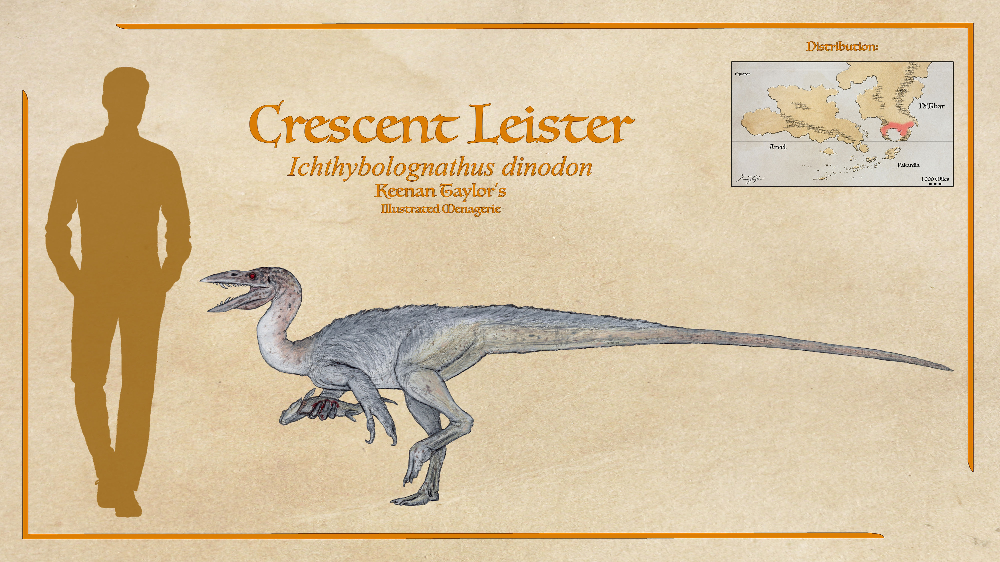
The leisters form another major component of the fish-predator guild. The Crescent leister is the largest of the leisters and among the most abundant non-avian theropods in the Seridic wetlands. Its long, posteriorly directed teeth and powerful hooked forelimbs make it an efficient fish-capturing predator, superficially convergent upon giant wading birds. Unlike the ba'khar, however, leisters rely much more heavily upon direct visual detection and rapid prey capture. Their relatively smaller body size permits considerably greater mobility through narrow channels and vegetation, while their forelimbs allow them to pin prey against banks or shallow substrates. The abundance of leisters prevents the ba'khar from functioning as the exclusive large piscivore of shallow waters. Yet competition between them is reduced by differences in prey size, hunting behavior, and spatial scale. A leister can exploit numerous small and medium-sized fish that provide insufficient energetic returns for a giant ba'khar. Conversely, a mature ba'khar can economically target fish whose size or handling requirements make them impractical for most leisters. The two predators therefore partition the fish community largely by prey size. Leisters also move more freely through narrow channels and vegetation, while ba'khar favor broad shallow waters in which their enormous bodies can be supported without excessive obstruction. Leisters are not exclusively piscivorous, and large individuals may take waterfowl, turtles, crocodilians, amphibians, mammals, and juvenile dinosaurs. This creates occasional dietary overlap with ba'khar, particularly during flood pulses when terrestrial animals become concentrated around the water's edge. Nevertheless, the smaller energetic scale of leister predation prevents them from becoming direct equivalents of the ba'khar. Their abundance instead provides an important lower and middle tier of predation within the same shallow-water system.
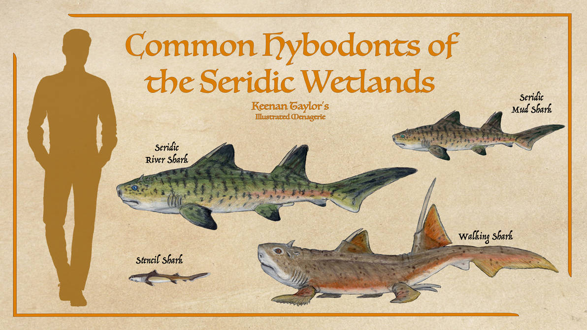
Hybodonts generate an even more strongly substrate-based form of partitioning. The Seridic river shark is a broad-spectrum aquatic predator that consumes fish, freshwater rays, turtles, waterfowl, carrion, and terrestrial animals entering the water. Its larger body and powerful swimming ability allow it to occupy deeper channels and open water than the ba'khar normally does. The Seridic mud shark, meanwhile, is adapted to the benthic environment, using electroreception to detect buried prey beneath soft sediments and specializing more heavily on mollusks, crustaceans, turtles, lungfish, and armored fish. The walking shark extends this partitioning still further by moving between disconnected waterways and temporarily exploiting terrestrial prey. These fishes are therefore not merely competitors with ba'khar; they divide aquatic resources according to depth and substrate. A ba'khar standing in knee-deep water and striking large fish occupies a fundamentally different feeding position from a mud shark hovering above sediment or a river shark pursuing fish through deeper channels. The walking shark introduces a further distinction based upon mobility between habitats. Its capacity to leave the water means that isolated pools can remain connected ecologically even when they are disconnected hydrologically, reducing the extent to which ba'khar can monopolize productive shallow-water refugia.
The large freshwater rays create another important dimension of competition. Reticulated rays and marble rays exploit benthic food resources, including fish, crustaceans, mollusks, worms, insects, and carrion. Large adult rays are generally too dangerous and too strongly defended for routine predation by anything except the largest aquatic predators. Their presence therefore contributes to a form of resource partitioning in which benthic productivity is converted into biomass independently of the ba'khar's principal hunting strategy. Juvenile rays, however, become increasingly vulnerable to large piscivores as they enter shallow waters, producing a predatory interaction that changes with ontogeny rather than remaining constant across the lifespan of the prey.

Crocodilians form the most important competing predatory assemblage for ba'khar because they occupy many of the same shallow-water habitats while also consuming large prey. The Seridic fisher crocodile is the most numerous crocodilian in the wetlands and is primarily a freshwater fish specialist. Its long, narrow jaws allow it to capture fish efficiently throughout rivers, lakes, and flood channels. The species therefore overlaps directly with juvenile and adult ba'khar in prey type, but not completely in hunting strategy. The fisher crocodile is capable of remaining submerged and exploiting channels inaccessible to a wading ba'khar, while the latter can reach prey from shallow water without exposing its body to the same degree. The competition between them is consequently strongest at intermediate depths and during dry-season contraction, when fish become concentrated into a reduced number of pools.

The Seridic crocodile presents a broader competitive overlap. Unlike the specialized fisher crocodile, it is a generalist predator capable of taking fish, birds, mammals, and other vertebrates and occupies both freshwater and brackish environments. It is also unusually aggressive, making its presence ecologically significant beyond its actual consumption of prey. Its willingness to attack or displace competitors means that ba'khar may avoid otherwise productive shorelines when large crocodiles become established. This is particularly important for juveniles, which are substantially more vulnerable than adult ba'khar. Conversely, large adult ba'khar are among the relatively few predators capable of treating medium-sized crocodilians as prey rather than merely competitors. The relationship is therefore bidirectional and strongly dependent upon size.
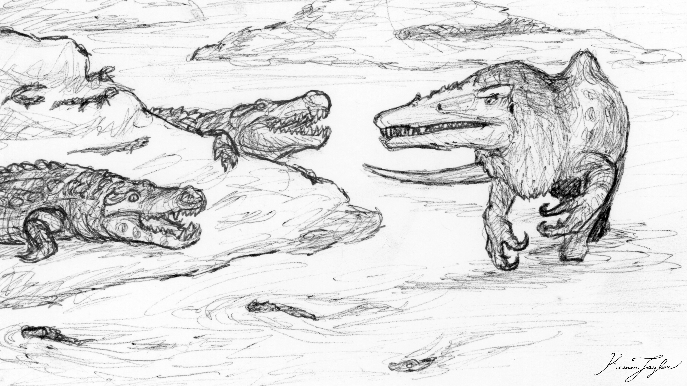
The hrugetaur represents the extreme large-bodied end of this guild. Its massive skull, dense body, and exceptionally strong bite permit it to attack prey approaching its own size. Its armored hide provides substantial protection against attacks from other apex predators, including kurajaku. Consequently, the hrugetaur is not simply another competitor for fish; it is a large-bodied predator capable of altering the behavior and distribution of other predators through interference competition. The ecological overlap between hrugetaur and ba'khar is nevertheless incomplete. Hrugetaur are much more strongly oriented toward large terrestrial and semiaquatic prey, while fish remain fundamental to ba'khar energetics. The overlap becomes greatest around large fish, turtles, crocodilians, and animals entering the water during floods. Here the two predators may compete directly, with the outcome determined by size, individual condition, water depth, and proximity to cover. A ba'khar's superior mobility on land and long reach may give it an advantage in shallow water, whereas the hrugetaur's armor and bite make close-range confrontation extraordinarily hazardous.
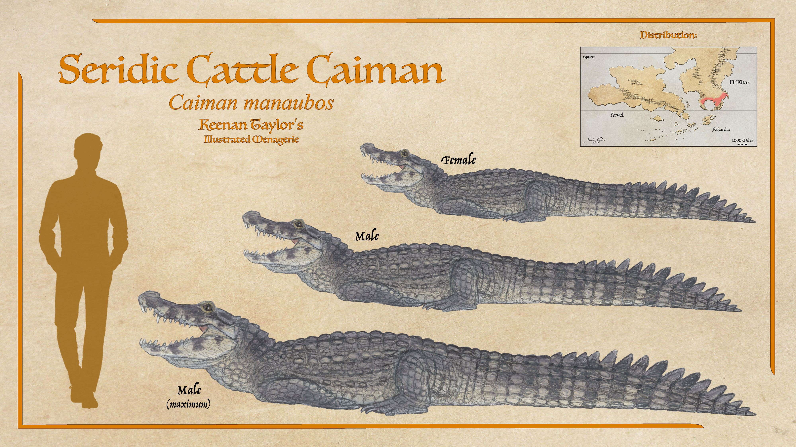
The smaller Seridic cattle caiman occupies a substantially lower trophic and energetic niche. Its typical size of approximately 2 — 4 meters and relatively docile disposition keep it largely outside direct competition with adult ba'khar. Nevertheless, cattle caiman may consume fish, amphibians, carrion, eggs, and small vertebrates that also constitute prey for juvenile ba'khar. More importantly, they can exploit food resources too small to justify energetic expenditure by adults. They therefore contribute to partitioning by body size: prey that would represent meaningful resources to a young ba'khar may be economically trivial to a mature individual.

The han zhu occupies a more aggressive and generalized position. It is smaller than the largest giant caimans but considerably more behaviorally confrontational. It competes with hrugetaur, other crocodilians, and kurajaku for large aquatic and terrestrial prey. Its arrival in the Seridic wetlands within the last million years added another substantial predator to an ecosystem already structured by longstanding competition. The introduction of Eborsuchus may have contributed to the rarity of giant caiman in portions of the wetlands, particularly because the latter were already recovering from the environmental disruptions surrounding the major faunal turnover. For ba'khar, the importance of these crocodilians is twofold. First, they are competitors for prey. Second, they are prey. Crocodilians are the second most important dietary category of adult ba'khar after fish, meaning that competitive and predator-prey relationships occur simultaneously. A ba'khar may therefore benefit from the presence of crocodilians at one ecological scale while competing with them at another. Removing a medium-sized crocodilian may reduce immediate competition for fish, while simultaneously increasing the energetic return to the ba'khar. Conversely, large crocodilians can displace ba'khar from shallow feeding sites or make particular channels too dangerous to exploit.
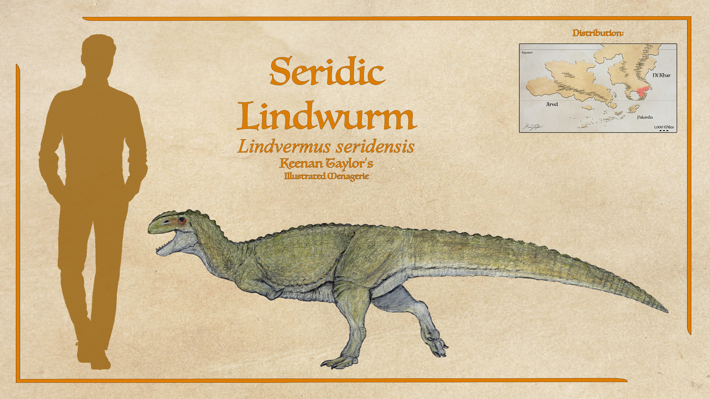
The relationship with the Seridic lindwurm is particularly complex because it is both competitor and potential prey. The lindwurm is a heavily armored, semiaquatic generalist predator and scavenger. Its armor makes it difficult for many midsized predators to displace it from kills, effectively allowing it to exploit carcasses after more vulnerable predators retreat. The Seridic red panther is one of the few predators capable of reliably penetrating its armor, producing reciprocal predation in which either species may kill the other. Ba'khar generally interacts with lindwurms at a different scale. An adult ba'khar possesses sufficient size to kill or displace a lindwurm, but the energetic value of doing so is usually negligible compared with the risks and effort involved. Lindwurms are therefore more likely to function as scavenging competitors around fish and terrestrial carcasses than as important direct competitors for live prey. Their ability to arrive at kills and tolerate confrontation with other midsized predators creates a scavenger-pressure layer beneath the larger apex predators.
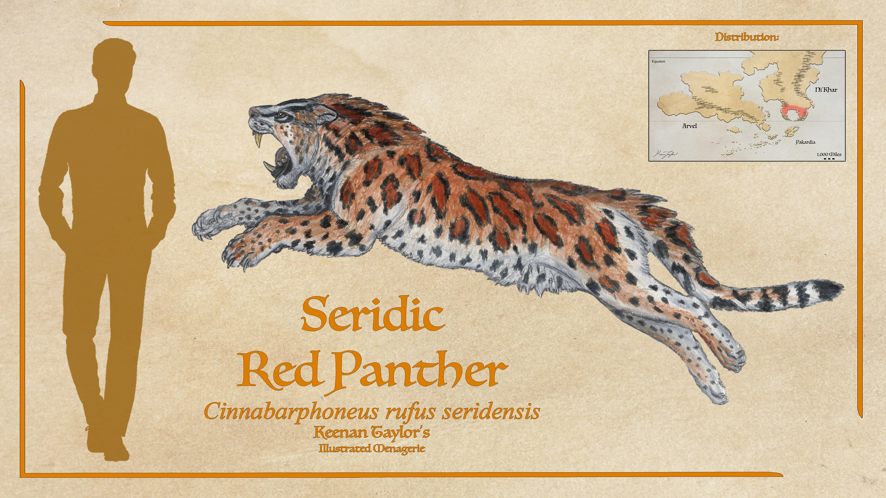
The Seridic red panther occupies a much more terrestrial niche. Its primary hunting grounds are forest, gallery woodland, and wetland margins, where it can ambush terrestrial prey and exploit arboreal or semi-arboreal resources. Its ability to kill armored lindwurms distinguishes it from many other midsized carnivores. Although it may occasionally take juvenile ba'khar or other large theropods, its principal interaction with ba'khar is indirect. Red panthers prey upon small and medium-sized terrestrial animals that occasionally enter the ba'khar's hunting territory, but they also remove some of the predators and scavengers that threaten ba'khar nests. Consequently, the relationship may fluctuate between competition, predation, and indirect facilitation depending upon the life stage of the animals involved.
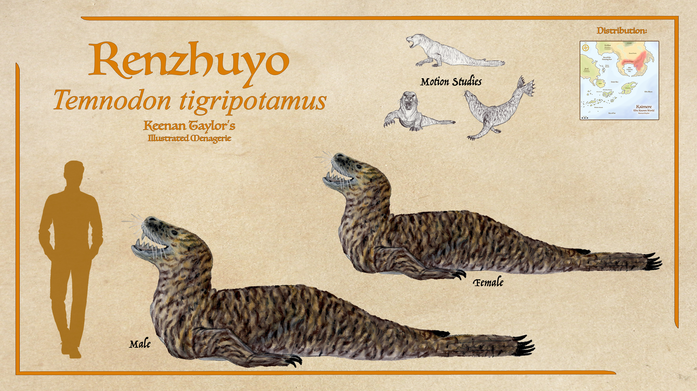
The most consequential mammalian competitor is the renzhuyo an aquatic hyaenodont whose seal-like morphology permits it to exploit the same general land-water interface upon which ba'khar territories are centered. Renzhuyo are among the most abundant predators of their size within the Seridic wetlands, surpassed in abundance principally by crocodilians, and their presence is specifically associated with the comparatively low abundance of large terrestrial cats elsewhere common in wetland environments. Females may attain approximately 3 meters and 500 kilograms, whereas males can approach 4 meters and approximately 1 ton. Their preferred prey are mammals, although large fish, crocodilians, and young dinosaurs are also taken. This distinction is fundamental to their coexistence with ba'khar. The two predators overlap spatially far more than they overlap trophically. A ba'khar entering shallow water is primarily interested in fish, whereas a renzhuyo entering the same water is often searching for a mammal approaching the shoreline, a young animal concealed in vegetation, or prey that can be attacked from beneath the surface.
The smaller terrestrial carnivore guild is similarly partitioned from ba'khar through prey size and habitat. Black pouch martens exploit eggs, hatchlings, rodents, small aquatic animals, arboreal prey, and other vulnerable resources that lie almost entirely below the adult ba'khar's preferred prey range. Their ecological importance is nevertheless considerable because they exert strong predation pressure upon the reproductive stages of larger animals. A ba'khar may therefore ignore an adult mammalian predator that poses no meaningful threat to it while responding aggressively to the same predator if it approaches a nest. The same principle applies to snakes, monitor lizards, and other smaller generalists. Mustelids occupy an even finer ecological layer. The Crescent polecat is particularly well adapted to floodplains, river valleys, and wetland forests. Its partially webbed feet allow it to cross flooded terrain, while its elongated body permits it to pursue prey through burrow networks and dense vegetation. Rabbits, marsh rodents, waterfowl, and amphibians form important components of its diet. Other mustelids, including the lashtet, exploit arboreal and terrestrial prey such as rodents and multituberculates. Their principal relationship with ba'khar is therefore one of prey mediation rather than direct competition. They consume the small mammals that occasionally become secondary prey for juvenile and subadult ba'khar, but their hunting grounds rarely overlap strongly with those of adults. Their abundance nevertheless contributes to the structure of the terrestrial prey community and therefore influences the number of small vertebrates available to young ba'khar.
The same principle applies to smaller carnivorans and coatis. Seridic coatis forage through leaf litter, rotting wood, shallow water, and shoreline vegetation, consuming invertebrates, eggs, small vertebrates, and carrion. Their social bands permit them to exploit resources too small or scattered to interest large predators, while their scavenging contributes to the rapid removal of carcass remnants. They therefore occupy a mesopredatory and scavenging position below the principal mammalian and theropod predators. Their principal competitive relationship with ba'khar is consequently indirect: coatis and other small scavengers rapidly remove edible fragments from carcasses, reducing the duration over which a kill remains available to larger predators. At the same time, their disturbance of carcasses can expose otherwise inaccessible tissues and thereby occasionally create feeding opportunities for larger animals.
The Seridic anaconda occupies aquatic and shoreline habitats and is capable of consuming substantial prey, but its principal interactions with ba'khar occur around nests and juveniles rather than through competition for adult fish. Pibald water monitors and Ni'Khari swamp monitors overlap extensively with juvenile and subadult ba'khar in shallow wetlands but remain much smaller. Their principal importance to adult ba'khar is therefore as potential nest predators and competitors for small prey rather than as direct competitors for the adult piscivorous niche.
Aerial predators generate perhaps the clearest example of sensory and locomotor partitioning. Fish-eating birds and pterosaurs can relocate rapidly between feeding sites because flight allows them to survey the wetland from above. Ba'khar lack this capacity and instead compensate through their exceptional olfactory system. The resulting difference is not merely behavioral but fundamentally changes the way the two groups respond to spatial variation in prey. A fish-eating bird can visually inspect several lakes in a single flight and abandon depleted habitat immediately. A territorial ba'khar instead relies upon chemical information and long-term knowledge of its territory. Its response to declining prey availability is consequently more conservative and spatially constrained.
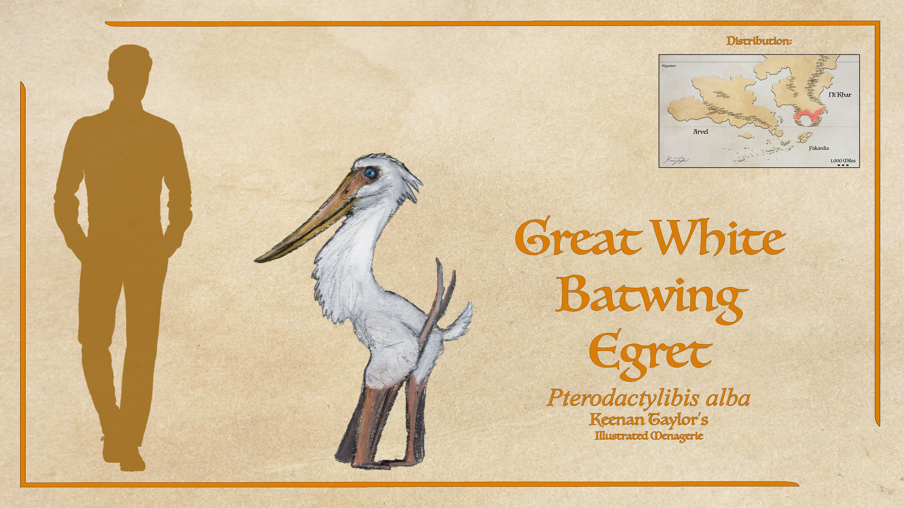
The great white batwing egret represents another aerial fishing strategy, while the grizzly xiphognath (Xiphognathus arctos) occupies a broader carnivorous niche that includes fish, mammals, reptiles, and arboreal prey. The latter is particularly significant because it sometimes attacks fish-eagle nests and may kill juvenile ba'khar and other megaraptorans. Nevertheless, its overall effect on ba'khar reproduction may be neutral or even beneficial because it also consumes snakes, mustelids, rodents, sparassodonts, and monitor lizards that pose more persistent threats to eggs and hatchlings. This is an example of intraguild indirect facilitation, in which one predator can reduce the abundance of another predator that otherwise suppresses the focal species.
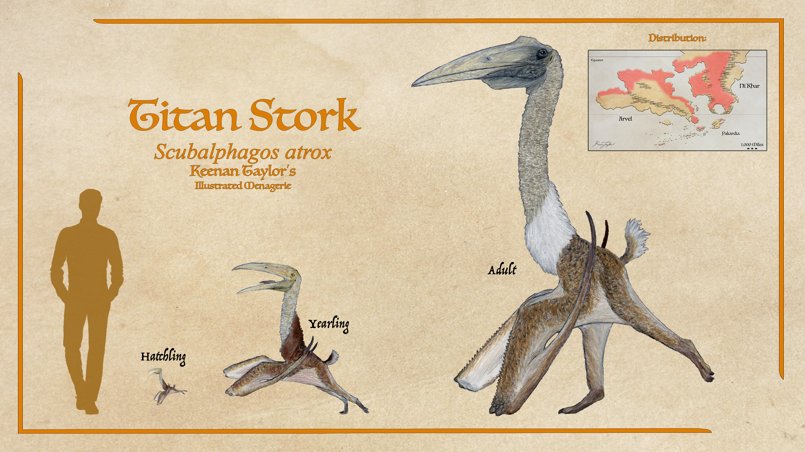
The titan stork occupies a particularly mobile scavenging and small-game niche. Its ability to move rapidly between the Seridic wetlands and the houze prairie allows it to track seasonal productivity rather than remain permanently associated with either environment. Although it consumes fish and can exploit carcasses, its much broader scavenging behavior means that direct competition with ba'khar is concentrated around carrion rather than live fish. A titan stork may arrive rapidly at a carcass that a ba'khar has killed, creating potential kleptoparasitic interactions. Conversely, ba'khar can displace titan storks from prey through sheer size. The presence of a large mobile scavenger nevertheless accelerates carcass removal and prevents dead animals from becoming monopolized by any single scavenger guild.
The mossback snipe represents an even more specialized relationship. Rather than competing with ba'khar, it maintains a mutualistic cleaning association with them. These large anurognathids land directly upon ba'khar and remove ticks, mites, parasitic insects, dead skin, and other ectoparasitic material. Ba'khar tolerate, and apparently sometimes solicit, this behavior. The interaction demonstrates that the position of a species within the carnivore guild cannot be understood solely through competition. Predators may simultaneously compete for food, suppress one another, and form mutually beneficial associations that improve health and reduce parasite loads.
Temporal partitioning further reduces competition. Some terrestrial predators become less active during the hottest portions of the day, whereas more efficient respiratory systems and lightweight skeletons permit certain megaraptorans to remain active. Conversely, nocturnal snakes, mammals, and smaller reptiles exploit prey during periods when ba'khar activity is reduced. Such temporal differentiation is especially important around nesting territories, where the presence of predators is determined not merely by whether they occupy the same habitat but by when they are likely to encounter one another.
The ecological importance of nest-space competition may ultimately exceed competition over food. The Seridic Wetlands possess enormous fish biomass, and multiple predator species can exploit it simultaneously. Secure nesting habitat is considerably less abundant. Elevated ground that remains above flood levels, possesses suitable substrate, provides concealment, and lies sufficiently close to productive feeding waters represents a finite resource. This limitation explains why territorial interactions among female ba'khar can be considerably more violent than ordinary feeding competition. The same constraint affects alar, kurajaku, and crocodilians, creating an unusual situation in which species with overlapping diets may compete most intensely over land rather than water. This also explains why the arrival of a new predator does not necessarily destabilize the guild through food competition. A new piscivore can be accommodated if sufficient fish remain available, whereas a new large-bodied terrestrial predator that occupies elevated nesting habitat may have disproportionate effects despite consuming little fish. Conversely, the small size of female alar allows them to utilize nesting locations inaccessible to ba'khar and kurajaku, reducing direct reproductive competition even where feeding territories overlap. The importance of nesting habitat thus produces a competitive hierarchy that differs from the trophic hierarchy.
Competition becomes most severe during seasonal hydrological contraction. During the wet season, rising water disperses fish, opens new channels, expands floodplain habitat, and increases the physical distance between predators. The abundance of alternative feeding sites permits even potentially antagonistic species to avoid one another. During the dry season, this structure collapses. Marshes shrink, isolated pools become disconnected, large fish retreat toward permanent water, and terrestrial animals concentrate around the remaining productive margins. Ba'khar, alar, leisters, crocodilians, hybodonts, rays, and other aquatic predators are consequently compressed into a much smaller number of refugia. Under these circumstances, territoriality becomes especially valuable. A resident female ba'khar already possesses knowledge of productive pools and established rights to the surrounding territory, whereas wandering males and dispersing subadults must search increasingly large areas to obtain sufficient food. Alar compensate through greater mobility and social cooperation. Crocodilians exploit ambush opportunities and may remain concealed within permanent pools. Hybodonts exploit deeper water or benthic prey. Leisters continue to exploit fish from shallow margins but face increasing interference from larger predators. Kurajaku can move through the deepest channels and exploit large aquatic prey unavailable to most competitors. The dry season therefore does not eliminate partitioning; it compresses the dimensions upon which partitioning operates and increases the frequency of encounters.
Ecological Interactions
The ecological interactions of the ba'khar extend considerably beyond direct predation and competition, encompassing ecosystem engineering, trophic cascades, nutrient transfer, commensalism, mutualism, social plasticity, and context-dependent interspecific tolerance. As the largest resident shallow-water predator of the Seridic wetlands, ba'khar occupies a position in which its activities are repeatedly mediated by organisms that alter the physical structure of the wetlands, while its own feeding and territorial behavior in turn modifies the abundance, distribution, and behavior of numerous other organisms. Its ecological significance therefore cannot be reduced to its role as a fish predator. Rather the ba'khar functions simultaneously as a consumer, competitor, nutrient vector, predator suppressor, beneficiary of ecosystem engineering, and occasional participant in interspecific associations. These relationships are particularly pronounced because the Seridic wetlands are characterized by extensive seasonal fluctuations in water level, enormous concentrations of aquatic biomass, and a spatially complex mosaic of permanent channels, marshes, flooded forests, beaver lakes, oxbows, riparian terraces, and periodically inundated grasslands.
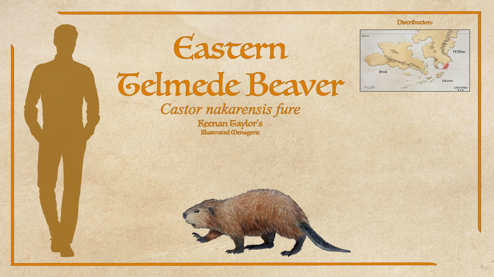
Among the most consequential indirect relationships is that between ba'khar and the Eastern Telmede beaver. The beaver is an ecosystem engineer whose influence extends well beyond the immediate area of its colonies. By constructing dams and associated impoundments, it slows the rapid runoff descending from the Telmede highlands, increases local water retention, modifies sediment deposition, and converts portions of formerly flowing systems into shallow, structurally complex lakes. These impoundments develop distinctive gradients of temperature, dissolved oxygen, sediment accumulation, aquatic vegetation, and organic matter. The resulting habitats are particularly productive for fish and aquatic invertebrates and therefore constitute some of the most profitable fishing environments available to ba'khar. The relationship is consequently best interpreted as an indirect facilitative interaction rather than mutualism. The beaver receives no demonstrable benefit from ba'khar and may occasionally suffer from the presence of a large predator capable of exploiting aquatic or terrestrial animals around its colonies. Ba'khar, however, can derive substantial benefits from the physical modifications created by beavers. A single dam may transform a rapidly flowing section of river into an extensive shallow feeding ground that can remain productive long after adjacent marshes have begun drying. Female ba'khar consequently show a strong tendency to establish territories around particularly productive permanent or semi-permanent water bodies, and beaver-engineered lakes can become focal points around which territorial systems develop. The enormous energetic requirements of an adult ba'khar make this relationship especially important: a predator capable of weighing several tonnes cannot simply exploit every small pool equally, and the concentration of prey generated by ecosystem engineering greatly improves the energetic profitability of stationary fishing. The effect extends beyond simple increases in fish abundance. Beaver impoundments create habitat heterogeneity. Shallow margins provide nursery habitat for juvenile fishes; deeper central pools retain larger individuals during periods of declining water levels; submerged branches and woody debris provide ambush structure; and emergent vegetation creates interfaces between aquatic and terrestrial prey communities. Ba'khar exploit this entire gradient rather than a single habitat type. Their extraordinary olfactory abilities allow them to detect concentrations of fish even when visual conditions are poor, meaning that they can exploit turbid, sediment-rich, or densely vegetated impoundments that would be less accessible to visually oriented predators. The animal therefore benefits not merely from greater prey biomass but from the creation of a predictable and spatially persistent prey landscape. This is consistent with the broader ecological importance of beaver-engineered environments documented throughout the Seridic system.

Its interactions with the Seridic alar are among the most behaviorally unusual in the ecosystem. Under ordinary circumstances the two species are competitors, particularly where shallow-water fishing and nesting habitat overlap. Yet their relationship is not invariably antagonistic. Rare short-term associations have been documented between familiar individuals, especially between adult male, or drake, alar and subadult ba'khar approximately five to eight years old. Such associations appear to arise primarily during the prolonged subadult period, when ba'khar have acquired much of their adult physical competence but have not yet developed the strongly territorial behavior characteristic of mature females. These relationships should not be interpreted as evidence that either species is normally social toward the other. Rather, they represent extreme expressions of behavioral plasticity. Subadult ba'khar experience a period of ecological independence in which they must learn the spatial structure of the wetlands, develop hunting proficiency, and avoid established adults. Alar, particularly males, are considerably more tolerant of heterospecifics than territorial females. A temporary convergence between a socially tolerant alar and a socially exploratory subadult ba'khar can therefore produce circumstances in which individuals repeatedly associate without immediate competitive consequences. Individual recognition appears to be important. Familiar individuals have reportedly responded to one another after prolonged separation with reduced aggression, parallel movement, mutual investigation, and behavior interpreted as play. Olfactory recognition is particularly plausible given the exceptional chemosensory capabilities of ba'khar, although the precise sensory mechanisms involved remain unresolved. The existence of persistent recognition would imply that the species is capable of retaining detailed information about individual conspecifics and heterospecifics over periods considerably longer than those required for ordinary territorial encounters. Such behavior may originate from developmental circumstances. Subadult ba'khar that lose clutchmates or siblings may exhibit prolonged affiliative behavior toward surviving kin or unusual heterospecific companions. The hypothesis is that early social deprivation alters the threshold for later tolerance, making some individuals unusually receptive to companionship. This remains a behavioral hypothesis rather than an established developmental mechanism, but it provides a plausible explanation for why these interactions are concentrated among particular individuals rather than being widespread throughout the population. Importantly, these associations generally weaken as ba'khar mature. Increasing territoriality, reproductive investment, and competition for productive waters eventually overwhelm the advantages of prolonged heterospecific association.

The relationship with the kurajaku is more antagonistic and is dominated by competition between nesting females. Ba'khar hens and kurajaku cows require elevated terrestrial substrates close enough to productive water to permit efficient access to food while remaining sufficiently high to survive seasonal flooding. Such sites are inherently scarce. Consequently, competition for nest space can become considerably more intense than competition for prey. This represents an important distinction in the ecology of the two taxa. Kurajaku bulls become increasingly aquatic as they mature and eventually experience severe physiological difficulty if stranded on land for prolonged periods. Females retain a substantially greater terrestrial component because reproduction requires nesting on land. Their bodies are nevertheless extremely large and dense, producing considerable disadvantages during terrestrial conflict. Ba'khar hens are lighter than the largest kurajaku cows but possess superior terrestrial locomotor competence. They can turn more rapidly, accelerate more effectively, and maintain balance on uneven or muddy substrates. The result is a striking reversal of conventional size-based dominance. A ba'khar weighing approximately 4.5 tons can successfully displace a kurajaku cow exceeding 12 tons because the latter cannot efficiently convert its greater mass into effective terrestrial force. The outcome is strongly dependent upon age and condition. Younger kurajaku females possess greater relative agility and can be considerably more dangerous opponents than very large adults, while old or gravid females may be comparatively reluctant to engage in prolonged terrestrial combat. Likewise, older ba'khar hens with extensive experience defending territories are likely to outperform inexperienced individuals despite similar body size. Consequently, the interaction is determined not simply by mass but by locomotor performance, terrain, motivation, reproductive condition, and familiarity with the contested site. Despite this antagonism, conditional coexistence between the two species occurs. One of the more unusual observations concerns injured, malnourished, or displaced ba'khar chicks entering territories occupied by kurajaku cows. Such associations are highly exceptional, but they can produce reciprocal benefits. A large kurajaku cow is itself an effective deterrent to many terrestrial predators, and its presence may indirectly reduce the risk faced by a vulnerable ba'khar chick. Conversely, a growing ba'khar chick is an active predator of smaller reptiles, mammals, and other nest raiders and may incidentally reduce predation pressure around a kurajaku nesting site. The interaction therefore resembles conditional commensalism during its initial stages but can approach reciprocal facilitation when both species experience benefits. Neither species appears to deliberately seek the other as a protector under normal conditions. Rather, the relationship emerges from unusual circumstances in which the costs of tolerance are low and the ecological benefits happen to align. The presence of an unusually tolerant individual can allow these associations to persist for surprisingly long periods. Rare adult associations have likewise been documented, including long-term affiliations between ba'khar hens and kurajaku bulls. These are considerably more unusual than subadult associations with alar and should not be treated as representative of the species' normal social organization. The ecological circumstances facilitating them remain poorly understood. Adult male kurajaku are substantially more tolerant of other large predators than territorial females when reproductive competition is absent, while adult ba'khar hens are normally strongly territorial. Consequently, the formation of a stable relationship probably depends upon unusual individual histories, repeated familiarity, and the absence of immediate reproductive conflict. Such relationships demonstrate that the behavioral barriers separating the two species are not absolute, even though their ecological relationship remains fundamentally competitive. The possibility of cooperative behavior during fishing further emphasizes this plasticity. Familiar individuals have occasionally been observed exploiting the same fish concentrations without displaying the aggression expected between unfamiliar adults. In some instances, they appear to coordinate movements sufficiently to suggest rudimentary cooperative exploitation, although it remains difficult to distinguish true cooperation from coincidental convergence upon exceptionally productive prey patches. Even if such events are genuinely cooperative, their rarity indicates that they have little demographic significance. Their importance lies instead in demonstrating that the behavioral repertoire of these enormous predators is more flexible than their strongly territorial adult ecology might imply.
The mossback snipe represents a fundamentally different interaction. Rather than competing with ba'khar for prey, these large anurognathids form a cleaning association with them. Individuals land upon the body of a ba'khar and remove ticks, mites, parasitic insects, dead skin, and other ectoparasitic material. The ba'khar generally tolerates the birds and may actively permit or solicit access to otherwise difficult-to-reach areas of the body. The relationship is therefore best characterized as mutualistic cleaning behavior. The benefits to the mossback snipe are straightforward: the bird gains a predictable source of ectoparasites and associated food resources. For ba'khar, the benefits are physiological rather than nutritional. Removal of ectoparasites reduces irritation, tissue damage, blood loss, and the possibility of pathogen transmission. This may be particularly important in a giant semiaquatic predator whose skin is repeatedly exposed to warm, humid environments conducive to parasite proliferation. The cleaning association also illustrates the importance of body size in structuring ecological interactions. A ba'khar is too large to efficiently groom many regions of its own body, while a small anurognathid can exploit precisely those areas that the host cannot reach. The association also carries a behavioral component. Tolerance of cleaning birds requires the ba'khar to distinguish between a harmless parasite-removing animal and a potential predator or nest raider. The repeated nature of the interaction may therefore reinforce learned recognition. Individuals that routinely permit mossback snipes to approach may gain greater parasite reduction, while snipes benefit from remaining close to tolerant hosts. This creates a stable behavioral feedback loop despite the enormous phylogenetic distance between the participants.
Ecological Functions and Ecosystem Engineering
The ba'khar is not an ecosystem engineer in the strict architectural sense. Unlike organisms whose principal ecological influence derives from the construction of persistent physical structures, it does not excavate extensive burrow complexes, construct dams, divert channels, or deliberately modify the hydrological architecture of the Seridic wetlands. Nevertheless, restricting ecosystem engineering to direct geomorphological modification substantially underestimates its ecological importance. The species functions as a biological ecosystem engineer, altering the distribution, accessibility, and movement of biomass, nutrients, competitors, scavengers, and subordinate predators through its feeding behavior, territoriality, nesting activity, carcass production, and suppression of other large aquatic predators. Its effects are consequently expressed less through the creation of new physical habitat than through the continual restructuring of existing ecological pathways. In a wetland system characterized by exceptionally high primary productivity, enormous aquatic biomass, seasonal hydrological fluctuations, and an unusually dense assemblage of large predators, the repeated activities of a territorial population of ba'khar can have consequences extending well beyond the individuals directly killed or consumed.
The most fundamental ecosystem function of the ba'khar is the transfer of aquatic biomass into terrestrial and littoral nutrient pathways. The species is primarily a piscivore, and mature individuals routinely remove substantial quantities of fish biomass from shallow waters, channels, marshes, and permanent wetlands. Yet the ecological consequence of this predation is not limited to mortality within the fish community. Ba'khar frequently consume their prey along shorelines, on exposed banks, on low islands, and within shallow emergent vegetation rather than returning all remains to the water. Their enormous feeding apparatus allows them to transport large fish onto land, where portions of the carcass may be consumed immediately while other tissues, scales, viscera, skeletal fragments, and discarded sections remain available to scavengers. The result is a recurrent cross-boundary subsidy between aquatic and terrestrial ecosystems. Nutrients that entered the fish through aquatic primary production, detrital processing, or consumption of smaller aquatic organisms are physically transported onto land by the predator and subsequently enter terrestrial decomposition pathways. This process is particularly important because fish are themselves major vectors of nutrient movement within the Seridic Wetlands. A large fish represents a concentrated package of nitrogen, phosphorus, lipids, proteins, and minerals that has accumulated through aquatic food webs. When that biomass is deposited along a terrestrial margin, its decomposition creates localized nutrient enrichment. Microbial communities, fungi, insects, scavenging reptiles, small mammals, birds, and other opportunistic organisms can exploit the remains. In this manner, a ba'khar kill may briefly create a localized detrital hotspot in an otherwise nutrient-limited portion of the floodplain.
Repeated use of the same territory can cause these subsidies to become spatially concentrated rather than randomly distributed. Productive ba'khar territories may consequently function as recurring nutrient-deposition zones, with the greatest enrichment occurring around favored resting, feeding, and nesting locations. The scale of this effect is amplified by the animal's enormous body size. A small piscivore can redistribute individual prey items, but an adult ba'khar can move prey weighing tens or hundreds of kilograms and process quantities of aquatic biomass that smaller predators cannot economically transport. Its kills therefore have a disproportionately large influence on the local detrital economy. Even prey that is almost entirely consumed can leave behind bones, scales, cartilage, feathers, shells, skin, and other resistant material. These remnants become resources for scavengers and decomposers, while the bones can persist for considerably longer periods and constitute localized sources of calcium and phosphorus. Consequently, the ba'khar acts not simply as a consumer but as a biomass processor, converting living aquatic production into a succession of carcass, detrital, microbial, and terrestrial trophic resources.
This function is complemented by the species' production of waste. Defecation and urination around feeding and resting sites transport dissolved and particulate nutrients from aquatic prey into surrounding sediments and vegetation. Because females maintain territories over long periods, these inputs are not distributed randomly across the wetland. Instead, repeated occupation creates localized zones of nutrient accumulation. The effect is analogous in principle to the nutrient concentration associated with colonies of piscivorous birds, although operating at a substantially larger individual scale. A territorial ba'khar therefore represents a persistent nutrient vector linking the aquatic food web with the floodplain vegetation and decomposer community.
The species' nesting behavior produces an additional form of localized nutrient concentration. Ba'khar females invest heavily in large, defensible nesting territories, and nest sites are repeatedly used when conditions permit. Nest construction, maintenance, trampling, feeding, defecation, eggshell deposition, and the decomposition of failed eggs and other organic material gradually alter the immediate environment. The nest itself may become a persistent concentration of organic matter and mineral material. Vegetation around heavily occupied nesting sites is also subject to repeated disturbance as adults move between water and nest, defend territories, and transport prey. Such activity can maintain small patches of relatively open ground within otherwise dense marsh vegetation. These openings need not be large enough to qualify as conventional physical engineering to have ecological consequences: they provide access points for smaller animals, exposed basking locations, and periodically disturbed substrates suitable for opportunistic plants. The reproductive territories of ba'khar are therefore ecological units in their own right. Because females defend them aggressively, territories are not merely areas in which food is consumed; they are spatially organized portions of the wetland within which predator access, prey behavior, carcass deposition, and nutrient movement are repeatedly altered. The presence of a resident female creates a predictable zone of elevated predation pressure around particularly productive waters. Fish populations may consequently experience sustained mortality at specific locations, while other predators are displaced toward neighboring habitats. Over long periods, this can produce a heterogeneous landscape of predator pressure rather than an even distribution of mortality throughout the wetland. This territorial effect constitutes one of the ba'khar's most important indirect ecosystem functions. A productive female territory is effectively a predator-exclusion zone. Other large piscivores cannot freely exploit the same water without risking aggression, displacement, or direct attack. Smaller predators may continue to use the margins, but larger competitors such as alar, leisters, and some crocodilians must modify their movements when an established ba'khar is present.
The consequences therefore extend beyond competition between individual predators. By forcing other species to redistribute themselves across the landscape, territorial ba'khar alter the spatial pattern of predation throughout the wetland. Areas occupied by ba'khar may experience unusually intense predation by the resident individual but reduced predation from competing species, whereas adjacent areas may receive increased activity from displaced predators. Such effects can generate a predator-mediated mosaic.
The wetland is not simply divided into occupied and unoccupied territory. Instead, predator communities vary according to the presence, density, and territorial stability of ba'khar females. In regions with numerous established females, alternative piscivores may become concentrated in channels, marginal marshes, deeper water, or less productive habitats. Where ba'khar territories are absent, transient predators can exploit resources more freely. Consequently, the spatial distribution of the ba'khar influences not only where fish are killed but also where other predators are allowed to hunt. Predation upon crocodilians further extends this influence into the aquatic vertebrate community. Although fish constitute the principal prey of A. bakar, crocodilians represent its second most important prey category, and individuals may develop strong preferences for particular crocodilian prey depending upon local availability. This creates an unusual relationship in which the ba'khar functions simultaneously as a predator of apex and mesopredatory reptiles and as a competitor with them. Medium-sized crocodilians occupying shallow water therefore experience an additional source of mortality in areas frequented by ba'khar. The species does not regulate crocodilian abundance throughout the entire basin, nor can it suppress the largest armored crocodilians consistently, but its presence adds substantial top-down pressure wherever its hunting territory overlaps theirs. The ecological consequences of this pressure may propagate through several trophic levels. Crocodilians consume fish, amphibians, turtles, birds, and smaller aquatic animals. If ba'khar disproportionately removes medium-sized crocodilians from shallow habitats, their prey may experience localized reductions in predation pressure. Such effects are likely to be highly spatially heterogeneous. A fish population within a ba'khar territory is subjected simultaneously to intense direct predation by the ba'khar and potentially reduced predation by competing crocodilians. The net outcome cannot therefore be inferred simply from the number of fish consumed by the ba'khar. Instead, the species modifies the composition of the predator assemblage and thereby changes the pattern of mortality imposed upon the prey community. This is particularly significant because the ba'khar occupies an intermediate position between specialist and generalist predation. Although fundamentally piscivorous, it can take turtles, birds, mammals, reptiles, crocodilians, and other dinosaurs. Its flexibility permits it to shift the composition of its predation according to local abundance.
During periods when fish are exceptionally abundant, individuals can specialize heavily upon aquatic prey. When fish become less accessible or seasonal conditions concentrate other animals near the water, the same individuals can exploit crocodilians, turtles, birds, or terrestrial vertebrates. This behavioral flexibility prevents the ba'khar from functioning as a rigid trophic conduit and instead makes it a dynamic regulator of prey communities. The effect becomes especially pronounced during seasonal contraction of the wetlands. During floods, aquatic habitat expands dramatically and fish disperse through newly inundated forests, channels, and floodplain pools. Predator densities consequently decrease locally because individuals can spread over a larger area. During drought, however, fish and other aquatic organisms retreat into permanent channels and deeper pools. The same reduction in available habitat simultaneously concentrates prey and predators. Ba'khar territories then become disproportionately valuable, and resident females can exert very high predation pressure upon the remaining concentrations of aquatic biomass. At the same time, their territorial defense prevents some competing predators from exploiting those same refugia. The species therefore becomes most influential precisely when the ecosystem is under the greatest degree of hydrological compression.
The interaction between ba'khar predation and fish behavior may also generate indirect habitat effects. Repeated predation at shallow feeding sites can alter the distribution and movement of large fish, potentially encouraging them to favor deeper channels, submerged vegetation, or less frequently patrolled margins. Because many large Seridic fishes are important consumers of aquatic vegetation, such behavioral displacement may indirectly alter grazing pressure on plants. The effect would not necessarily be a simple reduction in fish biomass; rather, the ba'khar could change where herbivorous fish feed. Through this mechanism, a top predator may influence aquatic vegetation without consuming the plants or physically modifying the habitat itself. The converse process occurs when ba'khar remove predators of herbivorous fish. Crocodilians and other piscivores contribute to the mortality of large plant-eating fishes, while ba'khar can suppress some of those predators. Thus, the ultimate effect of ba'khar predation upon vegetation could vary spatially and temporally depending upon which predators it removes and which prey it favors. The wetland should therefore not be conceptualized as a simple trophic cascade in which more ba'khar inevitably means more fish or less fish. Its ecological function is better understood as trophic reorganization: the species changes the relative strength of several predator-prey pathways simultaneously.
Carcass production represents another major ecosystem function. Not every prey item is consumed completely, and failed attacks can leave substantial carcasses behind. Even successful kills frequently produce leftovers because the largest prey contain structures that cannot be efficiently processed. These remains become available to scavenging fish, rays, crocodilians, leisters, birds, mammals, insects, and microbial decomposers. A ba'khar territory may therefore act as a recurrent feeding station for a secondary scavenger assemblage. The apparent dominance of the ba'khar over smaller predators does not eliminate their ecological role; instead, the ba'khar effectively creates feeding opportunities that sustain them. This produces a strong interaction between apex predation and scavenger diversity. A dead fish deposited on a shoreline may first be consumed by the ba'khar, followed by smaller theropods, crocodilians, birds, mammals, and reptiles, after which insects and microbes process the remaining tissues. The original aquatic biomass thus passes sequentially through several trophic pathways. Ba'khar predation increases the rate at which large aquatic organisms become available to terrestrial scavengers, while the scavengers themselves accelerate decomposition and nutrient return. The species consequently functions as an important facilitator of carcass-based trophic networks. The same principle applies to terrestrial prey. When a ba'khar kills a turtle, crocodilian, bird, mammal, or dinosaur near the water's edge, the carcass becomes an interface resource accessible to both aquatic and terrestrial scavengers. During flooding, portions of such carcasses may subsequently be washed back into the water, reversing the direction of the nutrient subsidy. Ba'khar activity therefore does not create a permanently one-directional transfer from water to land. Instead, it establishes a recurrent exchange between the two environments, with the predator serving as a mobile biological intermediary.
The species also contributes to physical disturbance on a smaller scale. A thirteen-meter, multi-ton predator repeatedly entering shallow water, crossing mudbanks, climbing onto low islands, dragging large prey, and defending nests inevitably disturbs sediment and vegetation. Such disturbance is localized and ephemeral compared with the engineering effects of beavers or elephants, but repeated use can create trails, trampled margins, open approaches to water, and compacted nesting surfaces. These features can become useful to smaller animals that lack the ability to cross dense marsh vegetation themselves. The ecological significance lies not in any individual footprint or trail but in the cumulative repetition of these disturbances over decades or centuries of territorial occupation. The ba'khar may therefore be considered a low-intensity, high-frequency engineer. Its physical modifications are modest at any individual moment, but its enormous lifespan, territorial fidelity, and repeated use of the same productive areas allow small disturbances to accumulate. This is especially relevant in a Kaimeran context, where long-lived organisms can maintain ecological relationships over timescales far exceeding those of comparable Earth predators. A female that retains the same territory for many decades can repeatedly concentrate nutrients, disturb vegetation, suppress competitors, create carcass sites, and redistribute prey biomass. The cumulative ecological signature of such an individual may therefore be considerably greater than that suggested by observations of short-term behavior.
Importantly, the ba'khar's ecosystem-engineering effects are not independent of its social system. Females are the principal territorial animals, whereas males are predominantly vagabond and move among female territories. Consequently, the most persistent ecological effects are generated by females. A resident female represents a stable ecological center around which prey, competitors, scavengers, and nesting organisms organize their movements. Males instead provide a more mobile form of predation and biomass transport, linking otherwise separate territories. Their movements can therefore function as a mechanism of nutrient and predator redistribution across the broader wetland. The distinction between territorial females and wandering males also means that ba'khar populations produce different spatial scales of ecological influence. Female territories create localized zones of sustained top-down control, nutrient accumulation, and predator exclusion. Males connect these zones, exploiting temporary prey concentrations and moving between territories. The species as a whole therefore combines the ecological effects of a sedentary apex predator with those of a mobile predator. This dual structure is one reason the ba'khar can exert such a large influence without maintaining uniformly high densities throughout the wetland.
Ultimately, the ecological importance of Ardeanax bakar lies less in any single behavior than in the integration of many relatively ordinary predator functions at an enormous scale. It removes aquatic biomass, transports fish onto land, produces concentrated nutrient inputs, creates carcass resources, suppresses competing predators, modifies prey behavior, excludes other piscivores from productive waters, disturbs shoreline vegetation, and repeatedly concentrates biological activity around long-lived territorial centers. Its presence consequently alters the movement of energy and matter between aquatic, terrestrial, and detrital compartments of the Seridic ecosystem.
Ontogenetic Niche Shifts
The ba'khar undergoes one of the most pronounced ontogenetic reorganizations of ecological niche among the large piscivorous theropods of the Seridic wetlands. Its development is not adequately described as a simple progression from small prey to large prey accompanying an increase in body size. Rather, maturation involves a sequential restructuring of trophic position, habitat use, locomotor behavior, sensory competence, predator-prey relationships, spatial range, and ultimately reproductive strategy. Each developmental stage occupies a partially distinct ecological niche, with juveniles functioning primarily as small-bodied generalist predators within the territories of adults, subadults becoming increasingly important mesopredators, and mature individuals assuming the highly specialized role of territorial giant piscivores. Consequently, ontogeny effectively allows a single species to utilize a succession of ecological opportunities that would otherwise be occupied by several differently sized predator species.
Hatchlings emerge as unusually precocial animals. Although they possess the basic anatomical equipment characteristic of the adult, including powerful forelimbs, a strongly developed grasping apparatus, an elongated neck, and a sensory system already substantially more sophisticated than that of most similarly sized theropods, their absolute dimensions impose severe ecological constraints. They are incapable of efficiently exploiting the large fish and substantial vertebrates that form the foundation of the adult diet and are themselves vulnerable to a remarkably broad range of predators. Their initial trophic position is consequently concentrated upon insects, aquatic arthropods, small crustaceans, worms, amphibians, tiny fish, aquatic larvae, and other small-bodied organisms encountered within the vegetation surrounding the nest. Small vertebrates become increasingly important as coordination and strength improve, but prey selection remains strongly constrained by handling time and the danger of injury.
This early diet places hatchlings beneath virtually every major predator tier of the wetland food web. They do not compete meaningfully with adult ba'khar because their prey are generally too small to justify the energetic expenditure of a giant adult. Instead, they occupy a subordinate predatory stratum within the territorial space of their parents. This is ecologically significant because the same territory that provides an adult with access to large fish and aquatic reptiles contains an enormous quantity of smaller prey distributed among roots, mudbanks, floating vegetation, shallow pools, and forest margins. The hatchling therefore does not require a separate habitat to survive; it exploits the fine-grained resources embedded within the adult territory.
The protection afforded by the maternal territory is consequently more than merely defensive. It provides the juvenile with access to a pre-existing ecological mosaic in which productive feeding locations have already been identified by the adult. Nevertheless, hatchlings cannot simply follow the adult's feeding behavior. The enormous fish that constitute the principal adult resource are unsuitable for them, and the chemical information that allows adults to locate such prey is initially of limited practical value because the juvenile lacks the physical capacity to exploit what it detects. Ontogeny therefore involves the progressive coupling of sensory information with increasing mechanical capacity. The juvenile first learns to recognize environmental information and only later becomes capable of converting that information into the adult hunting strategy.
During the first several months, feeding is consequently characterized by opportunism and high encounter rates rather than specialization. Juveniles investigate shallow water, saturated leaf litter, exposed mud, floating vegetation, and the margins of temporary pools. Their relatively small bodies permit them to enter dense vegetation and extremely shallow water that would be inaccessible to adults. This produces an important form of ontogenetic habitat partitioning. A family group may therefore exploit the same general territory while different members occupy different microhabitats and target prey of radically different sizes.
The adult female can remain motionless beside a productive channel waiting for large fish, while her offspring forage among roots and marginal vegetation for small fish, crustaceans, amphibians, and insects. The risk environment is correspondingly different. For an adult ba'khar, many small predators are negligible and even some large predators can be confronted directly. For a hatchling, however, almost any carnivore larger than itself represents a potential threat. Fish, crocodilians, large leisters, snakes, monitors, mammals, other theropods, and even some piscivorous birds can potentially prey upon young ba'khar.
The juvenile therefore develops within an environment in which predator avoidance is as important as prey capture. Much of its early behavioral repertoire is consequently devoted to recognizing alarm cues, identifying dangerous silhouettes and movements, remaining close to cover, and retreating rapidly toward protected areas. This intense predation pressure produces a developmental contrast with adults, whose enormous size largely reverses the balance between predator and prey. Ontogenetic development can therefore be understood as a transition from an animal whose principal ecological problem is avoiding being eaten to one whose principal ecological problem is acquiring sufficient prey and defending access to it. The behavioral consequences of this transition are profound. Hatchlings are comparatively secretive and strongly associated with vegetation and shallow refuge, whereas adults become conspicuous territorial predators that may remain motionless in exposed water margins for prolonged periods.
By approximately one year of age, the juvenile has undergone sufficient growth to expand its prey spectrum considerably. Small fish become increasingly important, particularly species inhabiting shallow channels and flooded vegetation. Larger crustaceans, amphibians, small turtles, young waterfowl, lizards, and other reptiles are incorporated with increasing frequency. The juvenile's improving forelimb strength also allows it to manipulate prey that would previously have been too difficult to restrain. Importantly, this expansion does not occur solely because larger prey become physically possible. The juvenile also becomes increasingly capable of judging the relative profitability and danger of different prey types.
The period between approximately one and three years of age is therefore particularly important for behavioral development. Ba'khar are not born possessing the complete ecological knowledge required of an adult territorial predator. Their exceptionally developed olfactory system provides access to an enormous quantity of environmental information, but interpreting that information requires experience. Juveniles progressively learn the chemical signatures associated with different fish species, recognize the scent of productive waters, distinguish prey odors from those of potential predators, and develop expectations concerning the locations and seasonal timing of prey concentrations.
The adult sensory repertoire is therefore partly inherited as anatomical capacity and partly constructed through prolonged environmental experience. This distinction is critical to the mature ecological niche. The ba'khar's olfactory specialization does not simply allow it to smell fish more effectively than other predators; it permits an experienced individual to build a spatially and temporally structured understanding of the wetland. Particular scents become associated with particular channels, pools, flooded forests, spawning migrations, seasonal water levels, and prey concentrations. Juveniles gradually acquire this information through repeated exploration. An adult female consequently possesses not merely a territory but a detailed sensory map of that territory, while a young animal possesses the anatomical ability to construct such a map but has yet to accumulate the necessary experience.
At roughly three years, juveniles begin to expand their movements substantially. They may range several kilometers from the territorial core, particularly when food is abundant or when the immediate vicinity of the nest no longer provides sufficient prey. This expansion marks the beginning of a transition from the protected juvenile niche toward the mesopredator niche. Young ba'khar can now pursue prey across a much larger proportion of the wetland and increasingly exploit small mammals, larger fish, turtles, birds, juvenile crocodilians, lizards, and small dinosaurs.
Their ecological role begins to overlap with that of other midsized predators, but they retain an important advantage: they remain capable of using extremely shallow, vegetated, and structurally complex environments that are unsuitable for adults. The resulting subadult niche is therefore paradoxical. As body size increases, competition with other mesopredators increases, but competition with adult ba'khar remains relatively limited. A subadult may consume prey that an adult could physically capture but would generally not consider energetically worthwhile. It can also enter narrow channels, flooded forest, reed beds, and shallow marginal habitats in which an adult's large body would reduce maneuverability. The species consequently avoids direct intraspecific competition through its own ontogeny. The juvenile and adult are not simply smaller and larger versions of the same ecological strategy; they exploit different portions of the habitat and food web.
Subadults also become increasingly important predators of other vertebrates. Their growing jaws and forelimbs allow them to subdue prey that would have been dangerous during early life, while their increasing mass reduces the number of predators capable of attacking them. At the same time, they remain vulnerable to the largest predators of the wetlands. Large crocodilians, adult kurajaku, adult ba'khar, and other giant predators may still represent significant threats. The subadult therefore occupies an intermediate position in the predator hierarchy: too large to be treated as ordinary prey by most mesocarnivores but not yet sufficiently large to operate with the near-impunity characteristic of an adult.
This intermediate condition also changes its behavioral relationship with adult conspecifics. Subadults approaching reproductive maturity are increasingly tolerated at the margins of established territories but are progressively excluded from the most productive cores. Territorial females represent the strongest source of interference competition. A mature female's territory is not merely a feeding area but a reproductive investment, and allowing another large ba'khar to establish itself within the same area would reduce access to prey and potentially increase the risk to offspring. Consequently, subadult dispersal becomes an important mechanism preventing excessive intraspecific competition.
The onset of sexual maturity represents the most dramatic ecological transition in the species' life history. Growth, which previously expanded the range of possible prey and habitats, now becomes increasingly coupled to reproductive competition. Females enter the territorial phase of the life cycle, while males generally adopt a vagabond existence. This produces pronounced sexual differences in ecological niche despite the absence of fundamentally different feeding anatomies. A mature female becomes spatially anchored to a productive territory containing both reliable feeding grounds and suitable nesting habitat. A mature male, by contrast, may travel extensively among territories and across large portions of the wetland system. The female's niche therefore becomes narrower spatially but broader in terms of energetic requirements. She must secure enough food not merely to maintain her own exceptionally large body but also to produce eggs and defend the nesting territory. This makes high-quality feeding territories disproportionately valuable. The ontogenetic transition from juvenile mobility to adult territoriality consequently represents a shift from exploiting abundance wherever it occurs to defending a particular location in which abundance is predictable.
Female territoriality also changes the nature of competition. A subadult can avoid conflict by moving into marginal habitat; an adult female cannot always do so without sacrificing reproductive success. The most productive wetlands may contain relatively few locations that combine abundant fish, suitable nesting substrate, adequate elevation, and defensible boundaries. Consequently, mature females increasingly encounter one another as competitors rather than merely as members of the same broad predator guild. In some circumstances, closely related females may maintain shared territories, indicating that even territoriality can be modified by ontogenetic and demographic circumstances. Such cooperation is particularly advantageous where reproductive habitat is scarce but food remains abundant.
Males undergo a contrasting transition. Rather than establishing permanent territories, mature drakes become increasingly mobile, moving between female territories and productive feeding grounds. Their movements effectively connect otherwise separated portions of the wetland predator community. A male can exploit temporary fish concentrations, follow seasonal movements of prey, and travel between populations of females. The mature male thus functions as an ecological link between territories that may be spatially isolated from one another. This mobility also reduces direct competition with territorial females because males do not need to monopolize the same nesting resources. The vagabond male strategy produces an additional ontogenetic shift in habitat use. Young males initially remain associated with the natal territory and gradually expand their movements as they approach maturity. Once fully mature, their movements may encompass several territorial systems. They therefore transition from localized juvenile predators to highly mobile adult predators whose ecological influence extends across much greater geographic scales. Their movement can redistribute predation pressure among fish populations and create transient overlap with alar, leisters, crocodilians, and kurajaku.
Dietary specialization also reaches its maximum expression in mature adults, although individual variation remains substantial. Fish constitute the fundamental prey resource, but adults retain the capacity to exploit turtles, birds, mammals, reptiles, crocodilians, and other dinosaurs. This flexibility is particularly important because the Seridic Wetlands are highly seasonal. A territory that is exceptionally productive for fish during one period may become less productive later, while turtles, waterfowl, juvenile crocodilians, or terrestrial animals entering the water may become temporarily abundant. Adult ba'khar therefore exhibit specialization at the level of broad prey category while retaining considerable flexibility at the level of individual prey species.
Ontogenetic development consequently produces a progressive shift from generalist opportunism toward specialized versatility. Hatchlings are generalists because they must exploit whatever small prey they can safely capture. Juveniles become increasingly selective as their hunting ability expands. Subadults acquire a broad mesopredatory spectrum and begin to exploit larger vertebrates. Adults become highly specialized fish predators while retaining the capacity to exploit alternative prey whenever local conditions make them profitable. Specialization therefore increases with age without eliminating behavioral flexibility. The sensory dimension of this transition is equally important. Young ba'khar possess the anatomical foundation for the extraordinary olfactory abilities of adults, but sensory specialization becomes ecologically meaningful only as experience accumulates. Over decades of life, mature individuals may acquire an enormous catalogue of chemical associations connecting prey odors with places, seasons, water conditions, and behavioral states. The adult niche is therefore partly an emergent property of longevity. A very old territorial female is not simply a larger version of a young adult; she is an individual possessing decades of accumulated knowledge about the wetland. This prolonged accumulation of ecological information also means that the effective niche of a ba'khar expands in one dimension while contracting in another. Its physical capacity to exploit prey becomes increasingly broad with age, but its reproductive role eventually ties females more strongly to particular territories. The result is a characteristic division between behavioral mobility and ecological specialization. Juveniles are physically constrained but behaviorally exploratory. Subadults are physically capable and increasingly mobile. Adult females are physically dominant but territorially constrained. Adult males are both physically capable and geographically mobile. Old age produces a final, less dramatic ontogenetic shift. As individuals accumulate wear and gradually lose peak locomotor performance, they may become less capable of pursuing rapidly moving prey or undertaking prolonged movements. Older ba'khar can compensate by relying more heavily upon established territories, predictable fish concentrations, scavenging opportunities, and prey that can be captured through ambush rather than pursuit. Their enormous size continues to protect them from most predators, allowing them to remain ecologically important even after a decline in athletic performance. In females, extensive familiarity with the territory may partially compensate for reduced mobility because productive feeding sites and seasonal prey movements are already known.
Keystone Impact
The ba'khar is best regarded as a regional keystone predator, rather than as an obligate ecosystem engineer. Its influence upon the Seridic wetlands arises not from the deliberate physical construction or modification of habitat, but from the disproportionate ecological consequences of its predation, territoriality, spatial fidelity, and position near the apex of the aquatic-terrestrial food web. Its numerical abundance is modest when compared with fish, herbivorous megafauna, smaller predators, and invertebrates, yet the ecological influence of an adult individual is considerably greater than its abundance would suggest. This disparity between numerical representation and ecological effect is the principal characteristic of its keystone status.
The magnitude of this effect is largely a consequence of body size. Adult ba'khar can attain approximately 13 meters in length and masses approaching 6 tonnes, making even a single mature individual capable of consuming quantities of animal biomass that would require many smaller predators to process. Their enormous size is accompanied by exceptionally high energetic requirements, but these costs are offset by the extraordinary productivity of the Seridic Wetlands. Fish constitute the principal component of the species' diet, although crocodilians are the second most important prey category, followed by turtles, birds, mammals, reptiles, and other dinosaurs. Consequently, a resident ba'khar does not interact with a single trophic compartment. Its feeding connects several portions of the wetland food web, and changes in its abundance can propagate simultaneously through aquatic prey populations, competing predators, scavengers, and terrestrial animals associated with the water's edge.
The keystone effect is strongest where a large female establishes a permanent territory around a particularly productive body of water. Ba'khar territoriality means that ecological influence is not distributed evenly across the species' geographic range. A wandering male moving through a broad river may exert a substantial predatory effect for a few days or weeks, but his influence is transient and spatially diffuse. A resident female, by contrast, may occupy the same productive lake, marsh complex, or riverine territory for many years. Her presence produces a persistent ecological boundary around the resources she controls. Because females defend these territories aggressively, the territory is not simply a feeding range but a socially maintained portion of the wetland in which the distribution of other large predators is altered by the presence of the ba'khar itself. This makes the species an important source of predator-mediated spatial heterogeneity. A productive lake occupied by a mature female does not contain the same predator community that an otherwise comparable unoccupied lake would support. Smaller piscivores may avoid its immediate hunting grounds, other ba'khar females are excluded, and alar are displaced toward less favorable marsh environments. Crocodilians may alter their basking, nesting, or foraging locations in response to the presence of the giant theropod, while scavengers and smaller predators learn to exploit the margins of its territory rather than its core. Even species that are not routinely preyed upon can therefore experience changes in habitat use merely because a ba'khar is present.
The species' influence upon fish populations is correspondingly more complicated than simple numerical reduction. Ba'khar remove substantial numbers of large fish, but their hunting is not equivalent to indiscriminate depletion. Individual predators develop preferences for particular prey types according to local availability, and the enormous energetic demands of the species favor prey that provide substantial caloric returns. Consequently, the ba'khar can disproportionately remove large, conspicuous, or energetically profitable individuals from fish populations. This may produce a predator-mediated shift in fish size structure, potentially increasing the relative abundance of smaller individuals while reducing the concentration of exceptionally large fish within heavily hunted territories. At the same time, this effect is constrained by the enormous productivity of the wetlands. The Seridic system possesses such extensive fish biomass that food availability is generally not the principal factor limiting the population of large piscivores. Nesting habitat is considerably more restrictive. The existence of abundant food therefore allows ba'khar to exert substantial predatory pressure without necessarily driving their principal prey to basin-wide scarcity. Instead, predation becomes spatially concentrated around individual territories. The result is a mosaic of heavily hunted and comparatively lightly hunted aquatic habitats, rather than uniform suppression of fish populations across the entire wetland.
This spatial structure is one of the most important aspects of the ba'khar's keystone function. A territory occupied by a dominant female effectively becomes a zone of elevated predation pressure. Fish entering such an area experience greater mortality, while competing predators experience greater interference. Adjacent waters may consequently function as partial refugia for fish and smaller predators. During floods, when the wetland expands dramatically, animals can disperse into these alternative habitats. During seasonal contraction, however, the distinction between occupied and unoccupied waters becomes increasingly consequential as predators and prey are forced into a smaller number of permanent channels and pools.
The effect upon crocodilians is especially pronounced because crocodilians occupy both the same habitat and portions of the same trophic space as ba'khar. Fish-eating crocodilians may be displaced from particularly productive shallows, while larger species become potential prey themselves. The ba'khar's preference for crocodilians as its second-most important prey category establishes an unusual relationship in which crocodilians function simultaneously as competitors and prey. A female ba'khar therefore does not merely reduce the number of crocodilians through predation; she may alter where surviving crocodilians can safely forage and nest. Large armored forms capable of resisting predation may become concentrated in habitats where ba'khar interference is less severe, while smaller individuals and species are forced into marginal environments. The consequences are potentially strongest for medium-sized crocodilians. These animals occupy an intermediate position: large enough to provide a meaningful energetic return to a ba'khar but small enough to be vulnerable to capture. Their removal can produce a trophic release among the fish and smaller aquatic animals that those crocodilians would otherwise consume. Thus the effect of ba'khar predation upon crocodilians can propagate indirectly through several trophic levels. A female that repeatedly captures crocodilians may reduce one predatory pathway while simultaneously increasing pressure through another by maintaining its own abundance and activity. This interaction is particularly important because the crocodilian guild is itself highly structured. The hrugetaur, han zhu, and other crocodilians partition the wetland through differences in body size, prey preference, temperament, and habitat use. Competition among these crocodilians intensifies as water levels fall, with smaller species retreating from larger ones and nesting sites becoming increasingly contested. A territorial ba'khar adds another layer to this hierarchy by selectively excluding or consuming individuals that would otherwise occupy productive shallow-water habitats.
The effect upon competing piscivorous dinosaurs is similarly disproportionate. The Seridic alar represents the most important example. Alar populations remain large and stable despite the presence of ba'khar because their smaller size allows females to exploit nesting sites that the larger species cannot use. Their social organization also permits groups of related females to defend territories collectively. Nevertheless, the continued presence of ba'khar prevents alar from occupying the highest-quality portions of the shallow-water niche. The alar therefore persists partly because the ba'khar's dominance creates a spatial hierarchy in which lower-quality habitat remains available rather than because the two species are ecologically equivalent. The ba'khar consequently exerts a form of competitive suppression that may be at least as important as its direct predation. A predator need not kill a competitor to influence its population. Avoidance, displacement, reduced access to prey, altered nesting behavior, and increased energetic expenditure can all reduce the ecological performance of subordinate species. The presence of a territorial female can therefore force alar, leisters, crocodilians, and other predators to occupy peripheral waters, change their activity patterns, or increase their reliance upon alternative prey. The energetic consequences of this displacement accumulate even when direct encounters are relatively infrequent. This is particularly apparent in the relationship between ba'khar and leisters. The Crescent leister, Ichthybolognathus dinodon, is among the most abundant non-avian theropods in the wetlands and is an important fish specialist. Its long posteriorly directed teeth and powerful forelimbs allow it to exploit shallow water efficiently, producing substantial dietary overlap with ba'khar. Yet its smaller size and greater maneuverability allow it to occupy narrow channels and marginal habitats that are inefficient for the giant theropod. The ba'khar thus suppresses leisters most strongly within high-quality broad shallows while having considerably less influence over narrow, vegetated channels. The result is a spatial redistribution of fish-predator biomass rather than wholesale exclusion of the smaller predator.
The keystone effect also extends beyond living prey through carcass production. A predator of ba'khar size inevitably generates large quantities of biological material in the form of partially consumed prey, discarded tissues, feces, regurgitated material, and prey remains. These resources become available to scavenging crocodilians, mammals, birds, smaller theropods, fish, and invertebrates. A large fish or crocodilian killed by a ba'khar may therefore support an entire secondary community after the predator has consumed the most energetically valuable tissues. The species consequently acts as a major biomass transfer mechanism, moving aquatic production into terrestrial-contact food webs and redistributing that material through scavenging pathways. This effect is amplified by the ba'khar's hunting method. Its feeding is not restricted to rapid pursuit. Its enormous nuchal ligament permits it to suspend its head for prolonged periods while waiting above shallow water before rapidly striking at prey. This makes it capable of remaining within a productive territory for extended periods and exploiting prey as they enter its range. The same territorial fidelity that increases its influence over local prey populations also ensures that prey remains are repeatedly deposited within predictable areas. Ba'khar territories may therefore function as predictable resource centers for scavengers. Smaller predators learn to remain near, but not within, the core of an adult's territory, exploiting discarded remains once the dominant predator has departed. This produces a spatially structured scavenger community in which the ba'khar acts as the primary provider of large carrion while simultaneously excluding many potential scavengers from the immediate kill site. Once the predator has finished feeding, however, its prey remains become available to a much wider range of organisms. In this sense, the species simultaneously suppresses and subsidizes other predators.
The influence of ba'khar is also strongly dependent upon season. During high-water periods, its keystone effect is diluted spatially because the wetland expands and prey become distributed across a larger area. Alternative feeding sites become abundant, and subordinate predators can avoid occupied territories. Flood conditions therefore reduce interference competition even while increasing the total quantity of aquatic habitat available to the guild. During drought and seasonal water recession, the opposite occurs. Fish retreat into permanent channels and deep pools, crocodilians concentrate around remaining water, and terrestrial herbivores become increasingly dependent upon the same limited wetland refugia. Under these conditions, a resident ba'khar becomes disproportionately influential because its territory encompasses a greater fraction of the remaining productive habitat. The keystone effect consequently follows a nonlinear relationship with water availability. When water is abundant, the removal of one ba'khar may have relatively modest consequences because alternative habitats are plentiful. As the system contracts, however, the ecological value of the remaining territories increases dramatically. A single dominant female occupying a permanent lake can therefore exert a much larger effect during drought than during flood, even though her own behavior and population size have not changed proportionally. Her territory represents not merely a feeding site but one of a diminishing number of places where aquatic productivity remains concentrated.
The same principle applies to reproductive habitat. The ba'khar's most important limiting resource is not necessarily food but suitable nesting territory. Females are therefore under intense selection to retain productive areas containing elevated ground, appropriate nesting substrate, and reliable access to prey. Territorial females may even form alliances with related females where nesting habitat is particularly scarce. Such behavior demonstrates that the keystone function of the species is inseparable from its reproductive ecology. A female does not defend a territory simply because it contains food; she defends a spatially integrated reproductive and energetic resource. This creates a strong distinction between the ecological consequences of removing males and females. The loss of a wandering male primarily reduces reproductive output and may have relatively limited immediate consequences for local predator distributions. The removal of an established female can release an entire territory from exclusion. Competitors may rapidly enter the vacant area, prey may experience a sudden reduction in mortality, and scavengers may lose a predictable source of carrion. Consequently, the ecological impact of ba'khar mortality is strongly sex- and territory-dependent. This also means that population estimates based solely on abundance are likely to underestimate the species' ecological importance. Ten wandering subadult or male ba'khar distributed across a large area may produce less local ecological restructuring than a single mature female controlling a productive permanent lake. The relevant ecological unit is therefore not simply the individual or population but the occupied territorial patch. A regional assessment of keystone effects must account for the number, size, quality, and spatial arrangement of female territories rather than merely the number of animals present.
The species' historical status further increases its ecological significance. The ba'khar is the final surviving member of a lineage that was once substantially more diverse. During the major faunal turnover approximately 1.5 million years ago, most related ba'khar were replaced by the more flexible alar radiation. The Seridic Wetlands nevertheless retained sufficient aquatic productivity to sustain the enormous specialist, allowing Ardeanax bakar to persist after its relatives disappeared elsewhere. Its modern ecological importance is therefore partly a historical artifact: the species survives in a refuge whose environmental conditions preserved the energetic foundation required by an otherwise highly vulnerable body plan. The ba'khar should consequently not be interpreted as a generalized apex predator that could maintain its ecological role in any wetland. Its keystone function is conditional upon the persistence of the particular environmental combination that permits its survival. It requires exceptionally productive aquatic habitats, large prey populations, shallow-water access, suitable nesting sites, and sufficient territorial space. The same specialization that makes it ecologically powerful within the Seridic Wetlands makes it vulnerable to large-scale environmental alteration. Its absence from otherwise productive regions elsewhere demonstrates that high productivity alone is insufficient; the physical and reproductive architecture of the habitat must also be compatible with the species. This makes the ba'khar an important indicator of wetland structural integrity. A decline in the species would not necessarily indicate that fish biomass had already collapsed. Instead, it could signal deterioration of the particular combination of permanent shallow water, large prey, elevated nesting habitat, and spatial continuity required by breeding females. Conversely, a healthy population of territorial females indicates that the wetland retains sufficient high-quality habitat to support one of its most energetically demanding predators.
The disappearance of ba'khar would therefore produce effects disproportionate to the number of animals lost. The immediate consequence would be the release of high-quality shallow-water territories from territorial exclusion. Alar, leisters, crocodilians, and other piscivores would expand into these areas. The resulting increase in predator access could initially produce intensified competition among subordinate species, while the reduction in ba'khar predation would simultaneously increase survival among large fish and crocodilians. Over longer periods, the altered predator community could restructure fish size distributions, crocodilian abundance, scavenger activity, and the spatial distribution of other wetland predators. Repeated removal of breeding females would be particularly consequential. Because females maintain the territorial framework through which the species exerts much of its ecological influence, their loss would create a progressively fragmented network of occupied territories. As territories disappeared, subordinate piscivores would expand into the vacant areas, potentially increasing the abundance of species that are presently suppressed. This release could produce cascading changes even before ba'khar itself became locally extinct. The ecosystem would therefore begin changing during the process of population decline rather than only after the species disappeared completely. The magnitude of such a cascade would vary geographically. Removal of a female from a marginal marsh would probably have modest consequences because prey densities are lower and alternative predators already occupy the area. Removal from a highly productive permanent lake would be substantially more significant because the female's territory would represent a disproportionately valuable ecological patch. The greatest impacts would occur if several adjacent breeding territories were simultaneously lost, effectively converting a substantial portion of the wetland from ba'khar-controlled habitat into open competitive space.
The keystone effect of the ba'khar is thus best understood as a combination of top-down predation, interference competition, territorial exclusion, prey redistribution, carcass subsidy, and spatial restructuring of the predator guild. None of these mechanisms alone necessarily makes the species indispensable to the entire Seridic ecosystem. Other predators can consume fish, crocodilians, and other large prey, and the wetland would not cease functioning in its absence. What would change is the organization of ecological interactions. The ba'khar determines which predators can occupy certain waters, which prey experience sustained mortality, where carcasses become available, and how the highest-quality shallow-water habitats are distributed among competing species. Its keystone role is therefore fundamentally regional and spatially heterogeneous. The species is not the architect of the Seridic wetlands, nor is the entire ecosystem dependent upon its continued existence. Rather, it is one of the predators that gives the mature wetland its characteristic ecological structure. Where a dominant female is established, the surrounding community is organized partly in response to her presence. Where she is absent, the same physical habitat supports a different assemblage of fish, crocodilians, piscivorous dinosaurs, scavengers, and smaller predators. The ba'khar consequently functions less as a universal regulator of the basin than as a powerful ecological organizer of the territories it occupies. In this respect, the species exemplifies the distinction between abundance and ecological importance. Its rarity does not diminish its significance; indeed, rarity combined with enormous individual biomass and territorial dominance is precisely what produces its keystone effect. The Seridic wetlands can support immense populations of smaller predators because productivity is high, but only a handful of animals possess the physical capacity to restructure an entire shallow-water predator community through direct occupation of territory. The ba'khar is one of those animals. Its survival preserves a distinctive ecological configuration inherited from an older wetland fauna, while its disappearance would open the highest-quality portions of the system to competitors and initiate a redistribution of predatory pressure throughout the shallow-water food web.
09 · CULTURAL HISTORY
Human and Sophont Interaction
The relationship between ba'khar and the peoples of the Crescent is fundamentally one of coexistence with a large, dangerous, and economically significant component of the native fauna rather than one of domestication, systematic exploitation, or habitual human predation. The ba'khar is among the most imposing animals regularly encountered by the inhabitants of the Seridic Wetlands, yet its enormous size does not make it inherently hostile toward Kaimerans. For most of its range, the species has little reason to regard humans as prey. Its normal diet consists overwhelmingly of fish and other wetland vertebrates, and its behavioral ecology strongly favors avoidance of unnecessary risks.
Human beings represent an unusual and generally unrewarding object of attention compared with the abundant aquatic prey available within the species' territory. Consequently, most encounters are characterized by spatial avoidance, mutual recognition, and carefully maintained boundaries rather than direct conflict. This relationship is particularly sophisticated among the Serid, whose civilization has developed within the ba'khar's principal habitat for many generations. The Seridic wetlands are not an environment in which human beings can simply eliminate dangerous megafauna and expand into its former territories without consequence. The wetlands remain ecologically productive but physically unstable, and their rivers, channels, marshes, and forests are occupied by numerous predators. The Serid consequently developed a practical natural history in which knowledge of animal behavior is treated as a fundamental survival skill. The ba'khar occupies a prominent position within this body of knowledge because its behavior is sufficiently predictable to permit avoidance, yet sufficiently dangerous that ignorance can be fatal.
Recognition and Avoidance
Among adult the ba'khar, the predominant behavioral response to the presence of Kaimerans is withdrawal rather than approach or aggression. This response constitutes one of the principal mechanisms permitting the long-term coexistence of the species with human populations throughout the Seridic Wetlands. Despite their enormous body size, high trophic position, and capacity for inflicting severe injury, adult ba'khar do not ordinarily regard humans as prey, nor do they display generalized territorial aggression toward human beings encountered outside the immediate vicinity of reproductive sites. Instead, the species exhibits a well-developed system of learned avoidance in which human presence is incorporated into the animal's broader spatial assessment of environmental risk. The avoidance response is particularly consistent when Kaimerans remain within established travel corridors, fishing grounds, or watercraft and do not approach a known ba'khar nesting territory. Individuals occupying shallow lakes, distributary channels, marsh margins, and forested wetlands commonly detect human activity before visual contact occurs and modify their movements accordingly. Depending upon the circumstances, an adult may retreat into deeper vegetation, move toward an alternative section of its territory, increase the distance between itself and a vessel, submerge partially, or simply remain motionless until the disturbance has passed. Such responses are generally graduated rather than abrupt. A ba'khar that detects a distant boat may merely orient its head toward the source, whereas an individual confronted at progressively shorter distances may abandon a feeding station entirely.
This behavioral plasticity is closely associated with the species' unusually sophisticated sensory capabilities. Ba'khar possess acute olfactory discrimination, highly developed visual perception, and sufficient auditory sensitivity to distinguish recurring environmental sounds. Human settlements and watercraft therefore possess a characteristic sensory signature. The smell of people, smoke, fish-processing activity, woven materials, livestock, and cultivated plants can collectively provide information about human occupation, while paddles, poles, voices, splashing, boat construction, and other recurring sounds establish an auditory component to the same environmental association. The ba'khar does not need to recognize an individual human in a manner analogous to visual person-recognition to respond appropriately. Rather, it can learn that a particular combination of sensory cues predicts disturbance, competition, or potential danger. This distinction is important because the species' avoidance behavior is not entirely innate. A generalized aversion to unfamiliar large terrestrial organisms may provide an initial behavioral predisposition, but the highly specific avoidance of Kaimeran activity appears to develop through individual experience. Juveniles repeatedly exposed to harmless human activity gradually modify their responses, becoming less investigative and more likely to withdraw before approaching closely. The resulting behavior can persist for many years. A ba'khar that has learned that fishing boats are consistently associated with human disturbance may subsequently avoid such vessels even when no immediate threat is apparent. The capacity for such learning is particularly significant given the prolonged developmental period of the species. Ba'khar juveniles remain within or near their maternal territories for several years, during which they acquire extensive information about prey, predators, territorial boundaries, water levels, seasonal movements, and the behavior of other large animals. This period of prolonged ecological learning also provides the opportunity for individuals to acquire information concerning Kaimerans. A juvenile therefore does not simply inherit a complete behavioral map of its environment. It progressively constructs one through observation, experimentation, and repeated exposure.
Young ba'khar are consequently much more likely than adults to investigate human activity. Curiosity is an important component of juvenile development because young individuals must learn which potential prey can be safely attacked, which animals should be avoided, which aquatic environments contain productive fisheries, and which novel objects represent genuine opportunities or hazards. An unfamiliar boat floating within a natal wetland may initially be treated as an object worthy of investigation rather than as an inherently dangerous structure. A juvenile may approach slowly, circle the vessel, observe fishermen from vegetation, investigate discarded material, or follow a boat for a short distance. Such investigative behavior is normally harmless while the juvenile remains small. It becomes increasingly problematic as body size increases. A several-month-old ba'khar investigating a canoe can be driven away relatively easily, whereas a two- or three-year-old animal weighing tens of kilograms already possesses sufficient strength to damage fishing equipment and cause serious injury unintentionally. The Seridic behavioral tradition of conditioning young ba'khar away from human activity therefore has an important preventative function. It establishes avoidance before curiosity develops into dangerous habituation.

Among the Sishewa, one of the best documented forms of this conditioning involves controlled nonlethal harassment. Fishermen encountering juvenile ba'khar that approach too closely may throw mud, wet vegetation, sticks, reeds, or other readily available debris toward the animal. The purpose is not to strike the juvenile with sufficient force to cause injury, nor is it intended as an attempt to dominate or physically control the animal. Rather, the disturbance is designed to make close approach unrewarding and mildly aversive. The juvenile learns that boats and their occupants are associated with an unpleasant response and subsequently increases its distance from them. This practice represents a form of culturally transmitted wildlife management based upon behavioral conditioning rather than physical exclusion. It is particularly effective because it exploits a developmental characteristic of the ba'khar itself. Juveniles are highly receptive to information about novel environmental stimuli, and repeated associations established during this period can become incorporated into adult behavioral patterns. A young animal that repeatedly approaches boats and receives no meaningful consequence may eventually become habituated to their presence. A young animal that repeatedly approaches boats and is consistently driven away is more likely to classify them as an undesirable component of its environment. The consistency of the response is essential. Sporadic harassment produces less predictable learning than repeated associations between a specific stimulus and a specific consequence. Serid fishermen therefore do not generally attempt to chase juveniles over long distances. Instead, the immediate objective is to establish a simple behavioral rule: approach the boat and disturbance follows; remain at a distance and the disturbance ceases. Once this relationship is learned, continued physical intervention becomes unnecessary. The animal increasingly withdraws of its own accord.
The process is nevertheless not equivalent to domestication. Domestication implies a multigenerational evolutionary process involving selection for altered behavior in association with humans, whereas the Seridic treatment of ba'khar is an individual-level behavioral conditioning process. No attempt is made to alter reproduction, select particular temperaments, control breeding, provide food, or integrate the species into human society. The animals remain entirely autonomous, and their territorial, reproductive, and foraging behavior remains governed by their own ecological requirements. Nor should the resulting avoidance be interpreted as evidence that ba'khar are inherently docile. An adult that normally avoids humans remains capable of responding violently when a sufficiently strong stimulus overrides its avoidance behavior. The learned rule is context-dependent. A ba'khar may retreat from a fishing boat in one circumstance yet attack a person who unexpectedly approaches a nest, corners the animal in dense vegetation, interferes with a feeding opportunity, or encounters it at extremely close range. Avoidance therefore represents a behavioral preference, not an absolute prohibition against aggression. The distinction is particularly evident among territorial females. A hen may tolerate boats passing along the outer portion of her territory while simultaneously responding aggressively to an individual who lands upon the elevated ground surrounding her nest. In such cases the human stimulus is identical in a broad sense but differs dramatically in ecological context. The animal's response is consequently determined by the interaction between learned human avoidance and the immediate motivational state of the individual. Nest defense, for example, can override a previously established tendency to withdraw.
Human presence is therefore best understood as one component of the ba'khar's broader decision-making system. An adult evaluates human activity alongside water depth, prey availability, territorial boundaries, reproductive condition, the presence of other predators, and escape opportunities. If a productive fishing site is temporarily occupied by humans, the energetic cost of relocating may be sufficiently low that the ba'khar simply abandons the site. If the same site contains an unusually concentrated food source during the dry season, however, the incentive to remain may increase. Likewise, a nesting female cannot simply abandon a territory whenever humans approach, because the reproductive value of the site may exceed the cost of confronting the disturbance. This energetic component explains why human-ba'khar conflict is not distributed uniformly across the year. During periods of abundant water, fish are dispersed across extensive marshes, channels, and shallow lakes, providing individuals with numerous alternatives. A ba'khar disturbed by fishermen can therefore relocate with comparatively little energetic penalty. During severe dry seasons, by contrast, fish become concentrated in increasingly few permanent pools and channels. These remaining feeding sites acquire disproportionate value, and the cost of abandoning one may become substantial. Human fishing activity at such locations can consequently produce greater behavioral tension, particularly when both predators and people are exploiting the same concentrated resource.
The reproductive cycle introduces an additional and even stronger modifier. Outside the nesting period, a female can ordinarily respond to human disturbance by moving away from the immediate area. Once eggs or newly hatched young are present, however, retreat becomes less advantageous. The nest itself represents a fixed reproductive investment, and abandoning it can expose eggs or chicks to predators, flooding, or thermal stress. Consequently, the distance at which a female transitions from withdrawal to threat display becomes substantially greater around the nesting site. Humans who interpret ordinary avoidance behavior as evidence that the animal will always retreat may therefore underestimate the danger associated with reproductive territories. Seridic ecological knowledge has consequently developed around behavioral thresholds rather than simple species-level rules. Experienced fishermen do not merely learn that ba'khar are "dangerous" or "harmless." They learn to distinguish between feeding animals, traveling animals, territorial females, courting individuals, and nesting hens. The same animal may behave very differently depending upon which of these behavioral states it occupies. Such distinctions are central to safe navigation of the wetlands and are transmitted through practical instruction, family experience, and repeated observation.
The long-term result is a reciprocal process of behavioral accommodation. Kaimerans modify their movements and practices to avoid provoking ba'khar, while ba'khar modify their own movements in response to predictable human activity. Neither species possesses complete control over the other, but both have acquired sufficient information to reduce unnecessary encounters. The stability of this relationship depends heavily upon predictability. Humans generally do not pursue animals that withdraw, and ba'khar generally do not approach people who maintain established distances and do not interfere with their feeding or reproductive activities. Individual variation remains substantial. Some ba'khar are exceptionally wary and withdraw at distances far greater than those observed in neighboring individuals. Others are comparatively tolerant, particularly where they have been exposed to regular human activity without negative consequences. This variation is likely influenced by age, developmental experience, territorial history, and local human density. A female inhabiting a remote wetland with little human traffic may possess a considerably larger flight distance than one living near a frequently traveled fishing route. Conversely, an individual repeatedly rewarded by access to fish discarded by fishermen may exhibit reduced avoidance and increased approach behavior. Such variation explains why the Seridic practice of juvenile harassment is considered preventative rather than merely reactive. Once an adult ba'khar becomes strongly habituated to human food sources, altering its behavior becomes considerably more difficult. An adult weighing several tons cannot be safely driven away by the same methods used against a juvenile. Moreover, an animal accustomed to obtaining food from fishing activity may be sufficiently motivated by the resource to tolerate considerable disturbance. Preventing this behavioral pathway during development is therefore considerably safer than attempting to correct it after maturity. The ba'khar's avoidance of humans consequently represents an important ecological adaptation superimposed upon an already sophisticated behavioral repertoire. Its enormous body size does not prevent coexistence with Kaimerans because size is only one component of the interaction. High intelligence, strong associative learning, acute sensory perception, prolonged juvenile development, and a behavioral preference for minimizing unnecessary physical conflict collectively allow the ba'khar to distinguish between humans that constitute a meaningful threat and those that merely occupy part of its environment.
Seridic Fishing and Competition
The greatest frequency of direct interaction between the ba'khar and Kaimerans occurs in association with fishing, reflecting a fundamental ecological overlap between two highly efficient predators exploiting the same exceptionally productive aquatic environment. This overlap is particularly pronounced within the Seridic wetlands, where shallow permanent lakes, distributary channels, oxbows, flooded forests, marsh margins, and seasonally inundated depressions simultaneously constitute the principal fishing grounds of Serid communities and the optimal feeding habitat of adult ba'khar. The resulting relationship is unusual among human — megafaunal interactions because neither species occupies a marginal or artificial environment. Rather, humans operate directly within the natural feeding landscape of a resident apex predator, while the ba'khar routinely encounters human activity within areas that have formed part of its ancestral foraging range for thousands of generations.
The spatial coincidence between human fisheries and ba'khar feeding territories is nevertheless not equivalent to continuous competition. The two predators differ substantially in their methods of resource acquisition, temporal patterns of exploitation, and prey-selection criteria. Serid fishermen employ nets, spears, harpoons, traps, hook systems, and trained yellow-breasted cormorants, with the relative importance of each technique varying according to water depth, season, fish size, and local tradition. Ba'khar, by contrast, is primarily an ambush predator whose characteristic feeding posture involves standing or slowly wading through shallow water while maintaining its enormous head and neck in a suspended position. It detects prey through a combination of olfaction and underwater visual discrimination before executing a rapid strike.
Human fishermen consequently extract fish through technological means, whereas ba'khar relies upon the spatial concentration of naturally vulnerable prey. The distinction is ecologically important because humans can exploit fish populations in locations that a ba'khar may rarely visit, while the theropod can exploit prey hidden within vegetation, submerged structures, or isolated shallows that are difficult for fishermen to capture efficiently.
The ba'khar's exceptional olfactory system further reduces the degree to which its movements are tied to visible human activity. Adult individuals can identify the chemical signatures associated with numerous fish species and can apparently distinguish broad differences in prey condition, abundance, and size. Consequently, a productive fishing ground may attract a ba'khar even when the animal has no direct visual contact with fishermen. The odor of concentrated fish, damaged prey, blood, discarded viscera, and disturbed aquatic vegetation can form a persistent chemical signal within the wetland. This is particularly important because the species cannot use aerial reconnaissance to relocate productive waters in the manner of large fishing birds. Its ability to follow chemical information therefore provides an alternative sensory mechanism by which an individual can detect resource concentrations from the ground.

Under ordinary circumstances, human fishing does not produce an immediate aggressive response. Adult ba'khar generally recognize boats, paddling, human voices, splashing, and other recurrent disturbances as features of the environment and will often alter their course or temporarily withdraw. This avoidance is particularly strong in individuals that experienced repeated exposure to Serid communities during their juvenile development. Such animals learn that boats and human activity are neither prey nor sources of reliable food and consequently maintain a substantial avoidance distance. The persistence of this learned response is one of the principal mechanisms allowing large territorial females and heavily used fishing grounds to coexist within the same wetland.
The situation changes when human activity produces an unusually concentrated and predictable food resource. A fishing net containing dozens or hundreds of fish differs fundamentally from naturally dispersed prey. To a ba'khar, the net effectively transforms a large volume of aquatic biomass into a stationary, highly accessible feeding opportunity. The animal need not search for individual fish, expend energy pursuing them, or remain motionless while waiting for a suitable target to enter striking range. If it learns that fishermen routinely retrieve fish from the same location, the boats themselves can become associated with predictable nutritional opportunities. This phenomenon is best described as resource-directed habituation rather than deliberate aggression. The ba'khar is not necessarily interested in the fishermen themselves. Instead, it has learned that the activities surrounding them reliably predict the presence of edible biomass. The distinction is behaviorally significant. An individual approaching a fishing boat because it has learned that nets contain fish is responding to an acquired association between a human activity and food. An individual defending a nest or striking a person who approaches at close range is responding to an entirely different motivational system. Failure to distinguish these contexts can lead to substantial misunderstanding of ba'khar behavior and inappropriate human responses. Resource-directed habituation is most commonly observed in subadults and younger adults. This distribution is consistent with the species' ontogenetic ecology. Young ba'khar possess a strong exploratory drive and must acquire an extensive behavioral catalogue of prey, predators, habitats, and hazards before becoming independent. During this period, they are particularly willing to investigate novel objects and unusual concentrations of food.
A juvenile that encounters a fishing boat while fishermen are handling a large catch may initially approach simply out of curiosity. If it subsequently obtains a fish without experiencing a significant negative consequence, the interaction can become incorporated into its developing behavioral repertoire. Repeated reinforcement can produce progressively closer approaches. An individual may initially remain tens of meters away while observing fishermen. It may then begin following boats along a channel, waiting near commonly used nets, or positioning itself downstream of a fishing operation. If fish are discarded, escape from damaged nets, or are otherwise left accessible, the animal receives further reinforcement. Eventually, it may approach the boat itself and attempt to obtain fish directly from human equipment. At this point, a formerly harmless coexistence can transition into a persistent wildlife-management problem.
The removal of fish directly from nets represents the most serious form of fishing-associated habituation. Adult ba'khar possess sufficient strength to seize substantial quantities of fish with a single movement and can tear or displace fishing equipment that would be impossible for ordinary terrestrial animals to manipulate. Their long jaws and powerful cervical musculature permit them to lift large fish rapidly from the water, while their massive forelimbs and hand claws can assist in manipulating tangled nets or prey. The resulting interaction is dangerous not because the animal necessarily intends to attack a person, but because the physical scale of the animal makes close-range competition inherently hazardous. For the fisherman standing or kneeling within a small reed or wooden boat, there is effectively no safe distinction between a ba'khar attempting to steal fish and one attempting to attack the boat. A several-ton animal reaching over the side can overturn a lightweight craft, destroy fishing equipment, or inflict catastrophic injury through an accidental movement of the jaws, forelimbs, or head. A sudden defensive reaction by either party can therefore escalate an otherwise food-motivated encounter into lethal violence within seconds.
The problem is intensified by the ba'khar's sensory specialization. Once an individual has learned the chemical association between fishing activity and concentrated prey, the smell of fish, blood, or disturbed water may cause it to investigate even when the fishermen themselves attempt to remain quiet. The animal may therefore appear to "know" where a fishing operation is occurring despite having no direct visual access to the boat.
Serid fishermen consequently regard certain behavioral changes—repeated circling, prolonged stationary observation, unusual upstream positioning, or persistent movement toward the scent of a catch—as warning signs that an animal has begun associating human activity with food. Human responses have historically emphasized prevention rather than confrontation. Experienced fishermen generally retrieve nets as soon as a ba'khar begins approaching, rather than allowing the animal to obtain fish from the equipment. The objective is to prevent successful feeding from becoming reinforced. Fish are likewise not intentionally discarded near known ba'khar territories, and fishermen avoid leaving carcasses, offal, or damaged catches in shallow water where they can be readily discovered by a territorial adult. These practices function as a form of behavioral management even though they are not necessarily conceptualized in formal ecological terminology by the communities practicing them.
The treatment of juveniles is somewhat different. Because young ba'khar are naturally exploratory, Serid fishermen may deliberately discourage them from approaching boats before the behavior becomes established. Mud, water, sticks, reeds, or other harmless projectiles may be thrown toward an inquisitive juvenile. The intention is to create an association between human activity and mild negative consequences without causing serious injury. Such interactions are particularly valuable during the first several years of life, when individuals are constructing the behavioral catalogue that will determine how they respond to humans as adults. The effectiveness of this traditional conditioning is likely enhanced by the species' prolonged developmental period. Ba'khar juveniles remain within their mother's territory for approximately three years and continue learning ecological information through observation and experimentation throughout this period. A juvenile repeatedly exposed to maternal avoidance of boats may therefore receive social reinforcement for the same behavior produced through direct experience. Conversely, an orphaned or unusually exploratory individual that repeatedly obtains food around fishing activity may develop a behavioral pattern not characteristic of the species as a whole.
This distinction explains why local Serid communities often describe individual ba'khar differently. A resident female may be considered exceptionally tolerant of boats because she has encountered them throughout her life without experiencing food rewards or direct threats. Another individual may be regarded as dangerous because it repeatedly approaches fishermen, steals fish, or refuses to retreat when disturbed. Such differences are not necessarily evidence of separate behavioral types or subspecies. They are often the consequence of individual experience superimposed upon the species' broader behavioral tendencies. Territorial females present a further complication because the most productive fishing grounds frequently overlap the most valuable ba'khar territories. A permanent shallow lake bordered by elevated ground is simultaneously an excellent location for a human fishing settlement and an ideal ba'khar territory because it provides abundant fish, secure terrestrial substrate, and suitable nesting habitat. The most productive human and ba'khar landscapes therefore tend to overlap disproportionately. This produces an ecological paradox: the areas with the greatest economic value to Serid fishermen can also be the areas in which the presence of a territorial female is most predictable.
The Serid have consequently developed detailed local knowledge of individual territories. Fishermen recognize frequently used scent posts, dung accumulations, scraped vegetation, habitual fishing positions, tracks, and other signs of occupation. Such knowledge allows them to distinguish between a productive but unoccupied stretch of water and one belonging to a resident female. Because territorial boundaries are generally more stable than daily feeding movements, a fisherman may learn that a particular bay, island, or lakeshore should be avoided even when the ba'khar itself is not visible. This territorial knowledge becomes particularly important during the dry season. As water levels decline, fish become concentrated into permanent channels, lakes, and isolated pools. Ba'khar movements consequently become increasingly tied to the same refugia that become most important to human fisheries. The spatial overlap between the two species therefore increases precisely when aquatic resources are most valuable. A fishing ground that is relatively unimportant during the wet season may become one of the principal remaining concentrations of fish several months later, simultaneously increasing its attractiveness to fishermen and predators. Under these conditions, established territorial females possess a substantial advantage because they already control access to known productive waters. Human fishermen, however, may also possess detailed knowledge of the same refugia and return to them precisely because fish densities are high. This creates a temporary intensification of interspecific competition.
Nevertheless, the relationship generally remains stable because humans can alter their location while a territorial female cannot easily abandon the nesting core of her territory. Fishermen may therefore shift to another channel, while the ba'khar remains within the defended territory and adjusts its foraging behavior to the changing distribution of prey. Human fishing can also influence ba'khar indirectly through changes in prey-size structure. Because the species preferentially exploits large and energetically profitable fish when such prey are available, intensive fisheries targeting the same size classes may reduce the availability of the most profitable natural prey. This effect is likely to be strongest in heavily exploited channels where large fish are selectively removed. In less intensively fished waters, the enormous productivity of the Seridic system can compensate for substantial predation by both humans and other piscivores. Consequently, ba'khar persistence is not necessarily threatened by fishing itself, but by sustained alteration of the prey-size distribution and reduction of large fish below the energetic threshold required to support resident females. The relationship is therefore best understood as a dynamic equilibrium rather than a simple predator-versus-human conflict. Humans exploit the same aquatic biomass that sustains A. bakar, but their technological flexibility allows them to partition their activities spatially and temporally. Ba'khar, meanwhile, possesses sufficient behavioral plasticity to distinguish between ordinary human activity and unusually profitable opportunities created by fishing. Most individuals learn that humans are best avoided, while a minority of inexperienced or food-conditioned individuals may cross this behavioral boundary.
Territorial Knowledge and Human Geography
Seridic society possesses an unusually sophisticated oral and practical geography of Ardeanax bakar territories, developed through generations of continuous occupation of the Seridic Wetlands and sustained interaction with resident individuals. This knowledge constitutes a specialized component of traditional Seridic ecological knowledge and is sufficiently precise that experienced fishermen can often identify the approximate territory of an individual female without directly observing the animal itself. Because mature hens commonly maintain territories for many years, and in some cases for much of their reproductive lives, particular stretches of river, lakeshore, marsh, floodplain forest, and shallow-water habitat become culturally associated with individual ba'khar. The resulting geographical associations may persist across multiple human generations, particularly where a productive territory is repeatedly occupied by successive females descended from the same local population. To Seridic fishermen, therefore, the wetland is not merely a mosaic of impersonal physical features. It is a landscape of animal jurisdictions in which particular waters, islands, forest margins, and channels possess histories of occupation.
This system is made possible by the unusual territorial stability of female ba'khar. Males are comparatively vagile and may traverse extensive portions of the wetlands during dispersal, seasonal movements, and mate searching. Adult females, in contrast, are strongly constrained by the availability of suitable nesting ground and therefore tend to establish long-term territories around productive shallow-water environments that contain both reliable prey and elevated locations suitable for reproduction. Once a female has successfully established such a territory, she may return repeatedly to the same feeding grounds, resting sites, scent posts, nesting areas, and courtship clearings. The resulting spatial fidelity creates a predictable association between animal and landscape. A particular lakeshore may consequently be known to several generations of fishermen as the territory of a particular hen, even if the individual itself is eventually replaced.
Seridic recognition of ba'khar territories depends upon the integration of numerous environmental indicators rather than upon any single diagnostic sign. Scraped vegetation is among the most conspicuous. Ba'khar regularly employ their elongated hand claws when investigating, maintaining, and marking portions of their territories, and repeated use can leave characteristic disturbances in exposed soil, mud, leaf litter, or low vegetation. Such scrapes are particularly informative when they occur along elevated banks or forest margins where females establish territorial boundaries. The age of the disturbance can sometimes be estimated from the condition of displaced vegetation and the degree to which rain, sediment deposition, and animal movement have obscured the mark.
Scent marking provides a considerably more persistent and biologically meaningful indication of occupation. Female ba'khar possess highly developed carpal and gular scent glands, and territorial boundaries may contain repeatedly used scent posts that are refreshed at intervals. Serid fishermen with extensive wetland experience are capable of recognizing these locations and, within limits, distinguishing recently maintained markers from abandoned ones. The presence of strong odor alone does not necessarily indicate the precise position of the animal, because chemical signals can persist after the ba'khar has moved elsewhere. It does, however, establish that the location forms part of a recently occupied behavioral landscape. This is especially valuable in dense vegetation, where visual detection of a several-ton predator may be difficult despite its proximity.
Dung deposits provide a second category of persistent territorial evidence. Although fecal marking is less spatially precise than the deliberate use of scent posts, repeated accumulations along favored routes, elevated banks, or territorial margins may reinforce the boundaries established through glandular secretions. Their persistence makes them particularly useful during periods when scent dispersal is rapid or vegetation obscures other signs.
Tracks, resting depressions, repeatedly used approaches to water, and characteristic disturbances around fishing stations provide additional evidence. Experienced observers rarely rely upon any one feature in isolation. Rather, confidence that a territory is occupied increases when several independent indicators occur together.
Courtship clearings are especially significant because they reveal not merely territorial occupation but the reproductive importance of a particular location. Females periodically maintain patches of relatively open ground where courtship displays can occur. These areas are generally situated close to productive water but on sufficiently firm substrate to permit the elaborate terrestrial components of mating behavior. A cleared patch surrounded by ba'khar scent markers is consequently treated by experienced Serid as a particularly sensitive portion of the territory. During the breeding season, the likelihood that a female will defend such an area aggressively is considerably greater than that associated with an ordinary feeding site.
The practical consequence of this knowledge is a form of traditional wildlife zoning that exists without formal surveying, cadastral boundaries, or centralized administration. Serid communities do not ordinarily require a written map to determine which waters are occupied. Knowledge is embedded in place names, oral histories, fishing routes, family instruction, and the accumulated experience of individual boatmen. A fisherman may know that a particular channel belongs to a resident hen, that another channel is routinely crossed by males, that a particular island contains an active nesting site, and that a third stretch of shoreline is safe during the wet season but should be avoided once water levels fall. This system produces a highly localized geography that can be difficult for outsiders to perceive. Two adjacent wetlands may possess almost identical vegetation, water depth, fish communities, and geomorphology when examined from a purely physical perspective. Ecologically, however, they may have radically different implications for human use because one contains an established female territory while the other does not. The first may be referred to informally as "the hen's water" and effectively removed from ordinary fishing activity, whereas the second remains an important communal fishing ground. The distinction is not necessarily permanent, but it is sufficiently meaningful to influence daily travel decisions.
The term "the hen's water" is therefore not merely descriptive. It represents a culturally recognized spatial category. Such waters are not necessarily regarded as sacred or permanently forbidden, nor does their status imply that humans never enter them. Rather, the designation communicates that the ecological costs and risks of entering the area are unusually high relative to its usefulness. A fisherman may pass through a territorial waterway when necessary, particularly during emergencies or when no alternative route exists, but ordinary activities such as setting nets, landing boats, collecting reeds, or establishing temporary camps are preferentially relocated elsewhere. This effectively reduces the frequency with which human activity intrudes into the ba'khar's core territory.
Territorial knowledge also extends beyond the boundaries of individual females. Serid fishermen recognize broader patterns in the distribution of ba'khar habitat and can distinguish between permanent territories, peripheral feeding areas, seasonal concentrations, and transient routes used by wandering males. This distinction is particularly important because the mere presence of a ba'khar does not necessarily indicate that the surrounding area represents a defended territory. A male traveling through a channel may remain for only a few hours or days, whereas a female occupying a productive lake may defend the same area for decades. Human responses therefore depend not only upon the presence of the animal but upon its behavioral status. The distinction between resident and wandering individuals can often be inferred from behavior. A ba'khar that repeatedly returns to the same shoreline, uses established scent posts, and reacts strongly to approaching boats is likely to be a territorial female. An individual that moves continuously between wetlands without maintaining obvious marking sites is more likely to be a male or dispersing subadult. This distinction is of practical significance because the probability of a sustained territorial confrontation is considerably greater around resident females.
The geography is further complicated by seasonal changes in hydrology. Ba'khar territories are not fixed polygons in the modern cartographic sense. Their effective boundaries shift according to the distribution of water, fish, vegetation, nesting sites, and accessible substrate. During the wet season, rainfall and mountain runoff expand the network of shallow channels and flooded forests. Fish become distributed across a larger area, and the energetic value of any individual feeding location declines because prey are less concentrated. Under these conditions, resident females may tolerate broader movements by themselves and by neighboring animals. Their core nesting areas remain defended, but peripheral portions of a territory may become comparatively open. During the dry season, this relationship changes substantially. As water retreats from shallow marshes, fish become concentrated within permanent channels, lakes, and isolated pools. A landscape that previously contained numerous feeding opportunities may contract into a small number of highly productive aquatic refugia. The value of these remaining waters therefore increases sharply. Territorial defense becomes more frequent and more intense, particularly around permanent pools that contain large fish.
For human observers, this creates a seasonal shift in the geography of risk. A channel that is routinely used for fishing or transportation during the wet season may become substantially more dangerous during the dry season because its ecological value to the resident ba'khar has increased. Conversely, some shallow peripheral marshes that are avoided during periods of nesting activity may become temporarily less important once they dry sufficiently to remove the fish concentrations upon which the predator depends.
This seasonal flexibility requires Seridic fishermen to possess what can be termed temporal territorial knowledge. Knowledge of a ba'khar territory is not simply knowing where the animal lives, but understanding how its use of space changes with water level, prey concentration, reproductive condition, and season. Experienced fishermen may therefore alter routes throughout the year even when the physical appearance of the landscape changes only gradually. The same individual female may effectively possess a broad feeding landscape during the wet season but defend a much smaller and more intensely guarded aquatic refuge during the dry season.
The relationship between territorial geography and nesting is particularly important. A female's territory is ultimately constrained by her reproductive requirements rather than by fish abundance alone. The Seridic Wetlands contain enormous quantities of fish, but suitable elevated ground capable of supporting a large nest while remaining accessible to productive shallow water is comparatively limited. Consequently, the most valuable ba'khar territories tend to be those in which permanent or semi-permanent aquatic habitat occurs immediately adjacent to elevated woodland, levees, islands, or other flood-resistant terrain. These locations are also often attractive to humans because they provide convenient landing sites, dry ground, and access to fish. Territorial overlap between the two species is therefore structurally predictable rather than accidental.
The most experienced Serid communities consequently distinguish between feeding waters and nesting waters, even where the two occur within the same territory. Feeding areas may sometimes be entered at considerable distance from the animal, whereas the immediate vicinity of a nest is treated with substantially greater caution. A fisherman who understands the spatial organization of a resident female's territory can therefore use the wetland without necessarily provoking conflict. He may fish along the outer portion of a lake while avoiding the elevated island where the hen nests, or travel through a territorial channel while remaining outside the female's preferred shoreline.
This knowledge is transmitted primarily through repeated observation and oral instruction. Children learn to interpret tracks, scent markers, disturbed vegetation, vocalizations, and changes in the behavior of fish and other animals long before they become independent fishermen. Elders may identify particular territories through stories associated with previous residents, describing where a female historically nested, where a confrontation occurred, or which channel remained safe during a severe drought. Such narratives preserve practical ecological information while simultaneously embedding individual animals into the cultural history of a locality.
The resulting system can persist even when individual ba'khar die. Because territorial occupation is more persistent than the identity of any particular animal, a wetland may retain a recognized "hen's water" even after its previous occupant disappears. The territory may subsequently be occupied by another female, especially if its combination of nesting substrate and aquatic productivity remains favorable. Human communities therefore distinguish between the identity of an individual animal and the continuity of the territory itself.
In some cases, a succession of females may effectively inherit the same ecological space, producing a continuity of territorial identity that outlasts individual lifespans. This phenomenon is particularly significant in regions where ba'khar populations have persisted for centuries or millennia. The same lakes, levees, channels, and forest margins can remain important to successive generations of predators and humans alike. A fishing family may therefore possess knowledge about a particular ba'khar territory that predates the lifetime of any living member of the family. The information is not necessarily preserved as a formal scientific record; it survives through place names, customary routes, prohibitions, stories, and practical instruction.
The traditional geography of ba'khar territories consequently represents an important example of how Seridic society has adapted to the persistence of megafaunal predators. Rather than attempting to divide the landscape into purely human and purely animal zones, Serid communities recognize overlapping jurisdictions whose boundaries change according to ecological conditions. Human geography is therefore partially superimposed upon ba'khar geography, while both remain subordinate to the seasonal hydrology of the wetlands. In practical terms, this system substantially reduces conflict. Most dangerous encounters are not caused by ba'khar randomly entering human space, but by humans entering locations in which the animal has a strong incentive to defend itself, its offspring, or a concentrated food resource. By learning where those locations are and how their importance changes through the year, Serid fishermen can avoid a large proportion of potentially hazardous encounters without requiring the removal of the predator.
Seridic Cultural Perception
The ba'khar occupies a distinctive position within Seridic cultural ecology because its significance extends substantially beyond that of an ordinary dangerous animal. It functions simultaneously as a practical hazard, a biological indicator, a repository of ecological knowledge, and a symbolic representation of the wetlands themselves. Unlike the Zhere Kun and other supernatural entities of Seridic folklore, the ba'khar is not generally conceptualized as an intrinsically supernatural creature. Its extraordinary size and predatory capabilities are nevertheless sufficient to give it a prominent place within oral traditions, instructional narratives, local histories, and the environmental vocabulary through which Seridic communities understand their landscape. The species is consequently embedded within Seridic culture not because it is regarded as otherworldly, but precisely because it is recognized as a real and enduring component of the natural environment.
The cultural conception of the ba'khar is strongly conditioned by the species' unusual combination of formidable physical capacity and behavioral predictability. An adult weighing several tonnes and exceeding ten meters in total length would, in many other human societies, be conceptualized primarily as a monstrous animal whose presence itself constitutes an immediate threat. Seridic interpretations are considerably more nuanced. The ba'khar is understood as an intelligent territorial predator whose actions follow recognizable ecological and behavioral rules. It possesses preferred feeding grounds, territorial boundaries, nesting localities, seasonal movements, courtship areas, and characteristic responses to disturbance. These regularities allow experienced people to anticipate its behavior and thereby substantially reduce the probability of conflict.
This distinction is central to Seridic environmental philosophy. The ba'khar is dangerous, but it is not regarded as arbitrary. A person is not ordinarily attacked merely because a ba'khar encounters them. Rather, aggression is interpreted as the predictable consequence of a particular ecological circumstance: intrusion into a defended territory, approach toward a nest, interference with prey, sudden close-range disturbance, or habituation associated with human food resources. The practical implication is that behavioral knowledge is valued above simple physical force. A fisherman who understands the warning signs of a resident female can pass through a wetland occupied by a six-ton predator without incident, whereas an inexperienced traveler who enters the same territory without recognizing its signs may provoke an attack within minutes.
Consequently, Seridic knowledge of the ba'khar is principally observational and cumulative. Individuals learn to recognize the species' tracks, characteristic feeding sites, scent marks, dung deposits, scraped vegetation, and frequently used resting locations. Experienced fishermen can often identify a resident female without directly observing her, based upon the distribution and freshness of territorial markers. The scent of a ba'khar is particularly significant because the species relies heavily upon chemical communication. Females regularly refresh scent posts along territorial boundaries, while open marsh territories may possess more centralized marking sites. These deposits therefore become ecological information for human observers as well as communication between ba'khar themselves.
The interpretation of such signs forms part of the practical education of Serid children. Young people are taught not merely to recognize that a ba'khar has been present, but to determine what the evidence indicates about its recent behavior. Freshly disturbed vegetation near a waterway may indicate a recently occupied feeding site; a strong scent deposit may identify an actively defended boundary; repeated tracks leading between elevated ground and shallow water may indicate a regular movement corridor. The ability to distinguish old evidence from recent evidence is particularly important because the presence of a ba'khar somewhere within a wetland does not necessarily mean that an individual is nearby at the moment. Such distinctions transform apparently chaotic wilderness into a landscape of interpretable biological signals.
The species' territoriality has consequently become incorporated into the conceptual geography of Seridic communities. Certain lakes, channels, islands, forest margins, and elevated banks become associated with particular ba'khar individuals or family lineages. The association may persist for decades if a dominant female maintains the same territory throughout her reproductive life. Although Seridic people do not necessarily assign formal personal names to every individual, a particularly familiar animal may acquire a descriptive designation based upon its appearance, territory, behavior, scars, age, or unusual history. Such designations function less as conventional personal names than as mnemonic devices within local ecological knowledge.
A long-lived female may therefore become an environmental landmark in much the same way that a large tree, distinctive island, or persistent river channel becomes a geographical reference point. A fisherman may describe a route as passing beyond a particular female's lake, or elders may identify a fishing ground by reference to the territory historically occupied by an especially large or aggressive hen. If the same territory remains occupied by successive generations, the biological feature becomes integrated into the oral geography of the community even though the occupying animals themselves change. In this manner, animal territories can acquire historical continuity independent of individual animals.
The ba'khar is particularly valuable as an indicator of wetland productivity. Because its enormous body size, prolonged growth, and high energetic requirements impose substantial nutritional demands, a mature territorial female cannot persist indefinitely in an impoverished wetland. The presence of a healthy, reproductively active adult therefore provides indirect evidence that local fish populations and associated aquatic resources remain sufficiently productive to support a giant piscivorous predator. Serid hunters and fishermen consequently regard established ba'khar territories as evidence of a healthy wetland system rather than simply as dangerous locations.
This interpretation produces an important cultural paradox. The most productive fishing grounds may simultaneously be the most valuable places for humans and the most valuable territories for ba'khar. The presence of the predator therefore communicates abundance while also imposing restrictions upon access to that abundance. A lake occupied by a large resident hen may contain exceptional quantities of fish, but the animal's territorial presence makes certain portions of the lake hazardous to exploit. The ba'khar consequently becomes an indirect regulator of human exploitation, limiting access to some of the most productive areas through behavioral exclusion rather than through deliberate human management.
Serid communities have historically responded to this circumstance through spatial accommodation rather than systematic extermination. Fishing grounds are distributed among multiple waterways, and experienced communities recognize that no single productive location should be treated as permanently available regardless of ecological conditions. During the wet season, when water expands across the basin and fish disperse, humans can often exploit peripheral waters with relatively little interaction with resident ba'khar. During the dry season, when fish become concentrated in permanent pools and channels, human and ba'khar resource requirements overlap more strongly. Traditional knowledge therefore emphasizes seasonal adjustment of fishing locations and travel routes.
This seasonal understanding is particularly important because ba'khar behavior itself changes with hydrological conditions. During periods of abundant water, a female may spend substantial time within her established territorial core while exploiting numerous surrounding feeding sites. During severe dry periods, however, fish become concentrated into fewer permanent waters and the energetic value of established territories increases. Territorial defense consequently becomes more important, and human intrusion into productive pools carries greater risk. Seridic environmental knowledge therefore treats the calendar of ba'khar behavior as inseparable from the broader seasonal calendar of the wetlands.
The animal's age is also incorporated into Seridic interpretations. Juveniles are regarded differently from mature adults because their behavioral predictability and territorial status differ substantially. Young ba'khar are naturally inquisitive and may investigate boats, fishing equipment, unfamiliar objects, or human activity. Such curiosity is not necessarily interpreted as aggression. Indeed, experienced fishermen understand that a juvenile approaching a boat may simply be investigating a novel object. This distinction is important because inappropriate responses can condition the animal either toward avoidance or toward food-associated habituation.
The cultural interpretation of aggression follows the same principle of behavioral causality. When a ba'khar attacks a person, Serid explanations generally emphasize the circumstances that precipitated the event rather than describing the animal as inherently malicious. A nesting hen approaching a fisherman near an active nest is understood differently from an adult attempting to take fish from a net. Likewise, a sudden defensive strike following an accidental close-range encounter is distinguished from an individual that has repeatedly approached boats because it has learned to associate them with food. This distinction has practical consequences for how individual animals are remembered. A ba'khar that kills a person is not necessarily interpreted as a supernatural killer or as evidence that all ba'khar are dangerous. Instead, the event becomes part of the animal's behavioral history. If an individual repeatedly approaches fishing boats, becomes unusually tolerant of human presence, or begins taking fish from nets, it may acquire a reputation that persists throughout the surrounding region. Conversely, a large female that has occupied a territory for decades without attacking people may become known as predictable or tolerant despite her enormous physical capabilities. The result is a remarkably individualized understanding of the species. Serid ecological knowledge does not treat "the ba'khar" as a single behavioral category. It recognizes differences among age classes, sexes, territories, seasons, reproductive states, and individual histories. A nesting female is not equivalent to a wandering male; a juvenile is not equivalent to an established adult; a familiar territorial hen is not equivalent to a food-habituated subadult. This differentiation substantially reduces unnecessary fear while simultaneously encouraging appropriate caution.
The cultural significance of the ba'khar also derives from its antiquity within the Seridic landscape. The species has occupied the Seridic wetlands since at least the Anchored Period, while the alar and kurajaku entered the system comparatively recently. The ba'khar is therefore understood, in ecological terms, as one of the ancient inhabitants of the basin. Its persistence through major faunal restructuring has contributed to an implicit perception of the species as belonging intrinsically to the wetlands. It is not an invader that arrived after the formation of Seridic society; rather, human communities developed within a landscape already structured partly by its presence. This historical continuity is particularly important in oral tradition. Stories concerning unusually old ba'khar territories may extend across multiple human generations, with elders describing the animals known to their grandparents and linking them to contemporary individuals occupying the same waters. Such accounts need not preserve precise zoological information to retain ecological value. Even when individual identities become confused through time, the persistence of a territorial association communicates that the particular lake or channel has long served as suitable habitat for the species. The ba'khar consequently participates in Seridic historical memory in a manner comparable to rivers and forests. Its territories are not merely places where dangerous animals occur; they are places with histories. The occupation of a particular lake by generations of ba'khar may become part of the identity of the surrounding community, particularly where the animals' presence has influenced fishing practices, travel routes, or seasonal settlement.
At the symbolic level, the species frequently appears in narratives concerning patience and restraint. Its characteristic hunting strategy provides an obvious cultural analogy. A ba'khar may remain motionless for extended periods, apparently inactive, before making a rapid and decisive strike. Seridic storytellers therefore use the animal as an exemplar of the principle that apparent inactivity does not necessarily represent weakness or ignorance. Patience, observation, and timing are treated as forms of strength. The metaphor is particularly appropriate within a culture whose survival depends upon reading subtle environmental changes rather than acting immediately upon every apparent opportunity. The ba'khar also serves as a recurrent symbol of territorial respect. Stories concerning inexperienced travelers often emphasize that the marsh itself provides warnings before danger becomes immediate. A scent marker, disturbed vegetation, track, or unusual absence of smaller animals may indicate the presence of a large predator. Failure to interpret these signs is therefore represented not simply as bad luck but as a failure of ecological literacy. Such narratives reinforce the cultural principle that humans are responsible for learning the rules of the landscape into which they enter. This differs fundamentally from traditions in which dangerous wildlife is framed primarily as an adversary to be conquered. Seridic stories more commonly present the ba'khar as an autonomous participant in a shared environment. Humans possess intelligence, tools, boats, and collective organization; the ba'khar possesses physical strength, sensory specialization, and intimate knowledge of the wetland. Neither possesses absolute control. Survival depends upon recognizing the capabilities and boundaries of the other. The animal's enormous size further reinforces this conceptual relationship. A six-ton ba'khar cannot be ignored, but neither can it be realistically treated as an animal that must always be killed whenever encountered. Its ecological importance, the difficulty of removing it, and the dangers associated with provoking it all favor accommodation. Serid culture has consequently developed a practical ethic in which respect does not necessarily imply affection and fear does not necessarily imply hatred.
This ethic extends to the treatment of carcasses. A naturally deceased ba'khar is regarded as an unusual event because of the rarity of adult mortality and the ecological significance of such a large body. Carcasses can attract numerous scavengers and may remain important biological resources for considerable periods. Human communities therefore approach them cautiously, recognizing that the presence of a dead animal does not necessarily mean that the surrounding area is safe. Scavengers, crocodilians, and other predators may converge upon the carcass, while an apparently dead individual must be treated with caution until its death is certain. When recovered, feathers, teeth, claws, or other remains may acquire commemorative or practical value, but deliberate killing solely for such materials has historically remained distinct from ordinary subsistence hunting.
The ba'khar's place in Seridic culture thus derives from a convergence of ecological reality and accumulated human experience. It is dangerous enough to demand respect, predictable enough to permit coexistence, intelligent enough to learn from human behavior, specialized enough to indicate wetland productivity, and long-lived enough for individual territories to become incorporated into human memory. These characteristics have prevented the species from becoming either a mundane background animal or a purely monstrous figure. Instead, Ardeanax bakar occupies an intermediate cultural category: a powerful nonhuman neighbor whose behavior must be understood, whose territories must be respected, and whose continued presence is itself evidence that the Seridic wetlands remain ecologically intact.
Zardic and Cha'Khati Interactions
Interactions between the ba'khar and Kaimeran communities differ substantially across the Crescent according to settlement density, economic organization, and prevailing conceptions of the relationship between civilization and wilderness. Nowhere is this contrast more apparent than between the Seridic wetlands and the urbanized riverlands surrounding Zardin. Whereas Seridic society developed within a landscape in which waterways, marshes, and large predators constitute the fundamental environmental framework of daily life, Zardic civilization is organized around the city, its agricultural hinterland, and the infrastructure that separates settled territory from the surrounding megafaunal wilderness. Consequently, Zardic interactions with ba'khar are generally less intimate, less individually familiar, and more strongly mediated by institutional mechanisms. The species is not absent from the wider Zardic landscape, but its presence is generally interpreted as a wildlife-management concern rather than as an ordinary component of household and village geography.
The distinction is fundamentally ecological as well as cultural. Zardin occupies a heavily modified riverine landscape in which canals, irrigation works, cultivated fields, roads, reservoirs, walls, and permanent settlements have substantially altered the original distribution of wetland habitat. Ba'khar can exploit portions of this artificial hydrological network when it retains sufficient water depth, fish biomass, and vegetative cover, but such habitats rarely provide the complete combination of permanent shallow water, undisturbed nesting ground, and structurally complex shoreline required for the establishment of a high-quality territorial female. Consequently, most ba'khar encountered within the Zardic sphere are transient individuals, dispersing subadults, wandering males, or adults temporarily exploiting unusually productive waterways rather than females maintaining the densely defended territories characteristic of the Seridic core. This distinction is especially pronounced along irrigation canals and flood-control channels. Artificial waterways can become attractive to ba'khar because they concentrate fish and create predictable linear travel routes through otherwise modified landscapes. During periods of high water, fish may become trapped within canal margins, sluice basins, reservoirs, and secondary channels, creating localized feeding opportunities. The predator may therefore enter landscapes that would otherwise be considered marginal habitat. Its presence, however, is usually regarded by Zardic authorities as evidence that the animal has crossed from its expected ecological domain into an area of human infrastructure. The response to such incursions is generally determined by the degree of habituation exhibited by the individual. A ba'khar merely passing through a canal is unlikely to provoke a major response. Local inhabitants may temporarily avoid the waterway, alert fishermen, and permit the animal to move onward. An individual that repeatedly returns to the same canal, reservoir, fishery, or artificial pond represents a fundamentally different problem. Repeated occupation suggests that the animal has discovered a persistent concentration of prey and may gradually lose its normal avoidance of human activity. Such individuals can become increasingly bold, particularly if fishing operations provide an additional source of concentrated food. Zardic authorities therefore distinguish between the presence of a ba'khar and the establishment of a problem animal. This distinction parallels the broader Zardic preference for categorization, documentation, and administrative response. A single sighting may remain a local matter. Repeated sightings, attacks upon livestock, interference with fishing, damage to nets, or persistent occupation of a canal may instead result in formal reporting. The animal's approximate location, physical characteristics, behavior, direction of travel, and frequency of appearance can be recorded by local officials, guards, agricultural administrators, fishermen, and hunters. Such records permit authorities to determine whether the animal represents a temporary ecological event or an emerging conflict. This administrative approach differs markedly from the predominantly oral and communal system of the Serid. Serid fishermen may know a resident female individually through decades of observation, recognizing her scent posts, preferred fishing locations, scars, seasonal movements, and reproductive history. Zardic officials are less likely to possess such continuous familiarity with individual animals. Their knowledge is instead translated into reports, patrol instructions, maps, hunting authorizations, and local regulations. The ba'khar consequently becomes legible to the Zardic state through administrative categories: territorial predator, wandering animal, agricultural nuisance, fisheries competitor, or dangerous wildlife.
This does not mean that Zardic society possesses less ecological knowledge. Rather, ecological knowledge is institutionalized differently. Experienced Zardic hunters, canal workers, fishermen, agriculturalists, and natural philosophers may possess extremely detailed knowledge of ba'khar behavior. They understand the significance of scent marks, tracks, feeding stations, water depth, seasonal fish movements, and nesting activity. The principal difference is that this knowledge exists alongside a sophisticated bureaucratic structure capable of recording and transmitting it beyond the immediate community. Experienced hunters are consequently held in considerable esteem along the outer agricultural frontier. Their importance is greatest in regions where cultivated landscapes terminate abruptly in wetlands, river forests, or uncultivated floodplains. Such individuals may be responsible for determining whether a newly observed ba'khar is merely passing through or has begun establishing a persistent feeding pattern. They may also advise authorities concerning the safest periods for canal maintenance, fishing, livestock movement, or travel through particular stretches of floodplain.
The practical value of this expertise is particularly evident where human infrastructure inadvertently increases ba'khar habitat quality. Canals and reservoirs can produce highly productive aquatic environments by slowing water movement, retaining nutrients, and concentrating fish. Artificial structures may therefore create feeding grounds that did not exist in the same form before human modification. The resulting interaction represents a paradox of landscape engineering: the same infrastructure designed to make the wetlands more useful to humans can occasionally make them more attractive to one of their largest native predators. Reservoir margins are especially important in this regard. A permanent artificial water body with shallow vegetated margins may provide fish, drinking water, submerged cover, and sufficiently firm terrestrial ground for temporary occupation. If an isolated reservoir is connected to surrounding waterways, it may become particularly attractive during the dry season, when natural pools contract and fish become concentrated. A ba'khar discovering such a location may repeatedly return to it, effectively transforming an agricultural water-management structure into a secondary hunting territory.
The Zardic response to these circumstances reflects a broader cultural preference for maintaining clear spatial distinctions between human settlement and dangerous wildlife. Walls, canals, cultivated fields, roads, and organized hunting do not merely serve practical functions; they represent the material expression of Zardic civic order. The city of Zardin is understood as an ordered human environment surrounded by a wilderness whose dangers remain real but should not ordinarily intrude upon civic life. A ba'khar standing in a city reservoir therefore represents more than a dangerous animal. It constitutes a temporary failure of the expected boundary between cultivated civilization and the unmanaged ecological landscape. This differs fundamentally from Seridic conceptions. To the Serid, the wetland itself constitutes the structure within which human life occurs. The presence of a ba'khar along a fishing route is therefore not inherently anomalous. The question is how humans should behave in relation to the individual animal. Zardic society instead tends to ask how the animal came to cross into an administered landscape and what measures can restore the intended separation. Neither approach necessarily produces greater hostility toward the animal. Indeed, Zardic administration can provide a mechanism for limiting unnecessary killing. Once a dangerous animal is recognized as a predictable ecological component rather than an indiscriminate threat, authorities can distinguish between animals requiring removal and those that can simply be monitored. A wandering ba'khar that does not interfere with human activity may be left undisturbed, whereas an individual repeatedly entering settlements or attacking domestic animals may be subject to organized intervention. The distinction becomes particularly important because the ba'khar's ecological value is increasingly recognized by Zardic naturalists. Its presence provides indirect information about the condition of the surrounding aquatic system. A mature individual capable of maintaining itself within a canal or reservoir must have access to substantial quantities of prey. Continued occupation therefore suggests that fish biomass remains high enough to sustain a predator whose energetic requirements are exceptionally large.
Conversely, disappearance from a historically occupied waterway may indicate that prey populations have declined, water permanence has been reduced, nesting habitat has disappeared, or human disturbance has exceeded the animal's tolerance. This relationship has encouraged a gradual shift in the scientific interpretation of the species. The ba'khar is no longer understood solely as a dangerous animal occupying wilderness beyond the agricultural frontier. It can also function as an ecological indicator. Its presence signals the persistence of productive wetland conditions, while its absence from previously suitable habitat may indicate ecological degradation even when fish remain sufficiently abundant to support human fisheries. The species' requirements are considerably more demanding than those of most human-utilized aquatic resources, meaning that maintaining ba'khar habitat generally requires maintaining a broad and complex wetland community rather than merely preserving commercially desirable fish. This is particularly relevant to the management of irrigation systems. A canal supporting a resident ba'khar may possess more ecological complexity than a heavily simplified agricultural channel. Vegetated banks, slow-flowing reaches, permanent pools, fish refugia, and connected floodplain habitats increase the probability that large predators can persist. Zardic naturalists may therefore regard some apparently inefficient or "wild" sections of waterways as biologically valuable precisely because their structural complexity permits the survival of large native predators. The species' presence can consequently influence debates concerning flood-control infrastructure. From an engineering perspective, rapid drainage is often desirable because it reduces flood duration and expands land suitable for cultivation. From an ecological perspective, however, rapid drainage eliminates the shallow permanent waters upon which the ba'khar and many of its prey depend. A levee may protect one agricultural district while simultaneously preventing seasonal inundation elsewhere, reducing fish recruitment and eliminating the network of temporary pools that supports the broader wetland food web. Because A. bakar requires exceptionally productive aquatic habitat, it can reveal these changes at a particularly conspicuous trophic level. The same principle applies to canalization. Straightening a river may improve transportation and simplify maintenance while reducing backwaters, oxbows, shallow margins, and vegetated channels. Such modifications can increase the proportion of habitat occupied by faster-flowing water while reducing precisely those low-energy environments preferred by ba'khar. The animal may consequently disappear even when the river itself remains apparently healthy. Its disappearance would therefore represent not simply a loss of one predator but a change in the physical structure of the riverine ecosystem.
The Cha'Khati consolidation of the Crescent introduced these questions into a much larger political framework. Imperial administration operates across an enormous range of ecological conditions, and its philosophy places considerable emphasis upon infrastructure, transportation, agricultural productivity, trade, written administration, and public order. These priorities make the Empire unusually capable of transforming wetlands at large spatial scales. Roads can connect previously isolated settlements, canals can redistribute water, levees can alter flood regimes, and agricultural expansion can progressively convert wetland margins into cultivated land. None of these developments is inherently incompatible with ba'khar persistence. The species is sufficiently flexible to exploit modified waters under certain conditions, and some artificial waterways may temporarily increase local fish productivity. The critical issue is therefore not whether humans modify the landscape but whether modification eliminates the ecological mosaic required by the predator. A canal that retains permanent shallow pools, vegetated margins, fish refugia, and connections to natural wetlands may remain usable. A canal converted into a uniform, rapidly flowing trench with little structural complexity is unlikely to do so. Likewise, a reservoir surrounded by undisturbed wetland and elevated woodland may provide valuable secondary habitat, whereas one bordered entirely by cultivated fields and heavily trafficked roads may be unsuitable for long-term occupation. The Serid are particularly important intermediaries in these debates because their accumulated ecological knowledge provides an empirical counterweight to purely engineering-based assessments. Serid communities understand that the apparent irregularity of the wetlands—the maze of channels, seasonal pools, flooded forests, shallow lakes, reed beds, and natural levees—is precisely what sustains their extraordinary productivity. From their perspective, excessive simplification does not merely remove inconvenient habitat for ba'khar. It removes the ecological complexity that supports fish, waterfowl, aquatic mammals, crocodilians, and the human fisheries upon which the region depends. Consequently, the ba'khar can serve as a culturally visible symbol of this broader ecological relationship. Its requirements are so substantial that maintaining a viable population requires the preservation of extensive productive wetland. The survival of the species therefore provides an unusually conspicuous demonstration that the surrounding hydrological system remains intact.
A landscape capable of supporting thousands of mature ba'khar must necessarily support an enormous underlying biomass of fish and other aquatic organisms. The demographic concentration of the species further enhances this significance. The overwhelming majority of the modern population occurs within the Seridic Wetlands, where approximately 10,000 — 25,000 mature individuals are estimated to persist. Such a population cannot be sustained by isolated artificial ponds or narrow canals. It requires an interconnected landscape containing permanent water, seasonal inundation, abundant fish, nesting sites, terrestrial refuge, and sufficient spatial separation for territorial females. Consequently, the persistence of the species within the Seridic system provides strong evidence for the continued ecological integrity of that basin. The converse is equally important. If ba'khar populations were to decline progressively along the Zardic frontier, the initial interpretation might be that the animals had simply been displaced by human expansion. A more detailed ecological analysis would instead examine water permanence, fish biomass, nesting substrate, flood frequency, vegetation structure, and connectivity among wetlands. Because the species responds to several environmental variables simultaneously, its disappearance can function as an integrated signal of cumulative ecological alteration.
The Cha'Khati Empire therefore occupies an ambiguous position in the species' modern ecology. Imperial infrastructure can fragment habitat and intensify human-wildlife conflict, but Imperial administration also possesses the institutional capacity to recognize, document, and regulate those conflicts. The same bureaucracy capable of authorizing drainage or agricultural expansion can establish protected wetlands, regulate hunting, record breeding territories, and restrict development around ecologically significant waters. Whether the Empire ultimately benefits or harms the ba'khar depends less upon its existence as an imperial state than upon which of these administrative priorities is applied to the wetlands. For this reason, ba'khar management within the Crescent increasingly represents a convergence between natural history and public administration. The species' territorial behavior makes individual animals relatively easy to monitor; its dependence upon predictable shallow-water habitat makes its environmental requirements unusually legible; and its conspicuous size makes population changes difficult to ignore. An animal weighing several tons and standing in a canal is an obvious administrative problem, but the same animal also provides an equally obvious demonstration that the canal belongs to a functioning ecological system.
The resulting Zardic and Cha'Khati relationship with Ardeanax bakar is therefore neither one of simple persecution nor uncomplicated conservation. It is a continuing negotiation between agricultural expansion, hydraulic engineering, public safety, fisheries, scientific interest, and the ecological requirements of a giant endemic predator. In Zardin and the surrounding settled countryside, the ba'khar represents the point at which the artificial landscape encounters the original wetland ecosystem. Its occasional appearance in canals, reservoirs, and floodplains reminds Zardic society that the wilderness surrounding the city has not disappeared merely because roads, walls, fields, and administrative boundaries have been constructed across it.
The species consequently occupies a peculiar position within the Cha'Khati conception of ordered civilization. The Empire seeks to transform dangerous landscapes into productive and governable ones, yet the continued presence of A. bakar demonstrates that complete ecological control is neither practical nor necessarily desirable. A functioning wetland must retain some degree of complexity, unpredictability, and biological autonomy. The ba'khar, as one of its largest and most demanding inhabitants, makes that principle unusually visible. Within Zardic and Imperial natural philosophy, the animal therefore increasingly represents more than a predator to be avoided. It is a biological measure of the wetland itself: an indicator of persistent water, abundant fish, intact riparian vegetation, functional flood regimes, and sufficient undisturbed habitat to support a giant territorial piscivore. Its continued presence indicates that the boundary between civilization and wilderness remains permeable but ecologically functional. Its disappearance, particularly from formerly occupied waters, may signal that this balance has been pushed beyond the limits compatible with the species.
Human Exploitation and Historical Use
Despite its exceptional body size the ba'khar has never been incorporated into Kaimeran animal husbandry in any sustained or economically meaningful sense. The species possesses several characteristics that collectively make domestication impractical. Most immediately, its enormous energetic requirements impose a severe nutritional burden. A mature individual requires access to exceptionally productive wetland habitat capable of supplying large quantities of fish and other animal protein, making the maintenance of even a single adult in captivity considerably more expensive than that of conventional livestock. Unlike domesticated herbivores, which can convert abundant terrestrial plant biomass into usable animal products, ba'khar occupies a high trophic position and therefore requires food that has already passed through several levels of the wetland food web. Maintaining such an animal would consequently require either an extensive fishery or the deliberate production of large quantities of animal feed, neither of which offers an economically favorable conversion ratio.
The species' reproductive biology presents a second and more fundamental obstacle. Ba'khar mature relatively rapidly in comparison with their eventual lifespan but remain reproductively dependent upon complex ecological conditions. Females do not simply require sufficient food to produce eggs; successful reproduction depends upon the acquisition and defense of a suitable territory containing permanent shallow water, abundant prey, elevated nesting ground, and adequate space for subsequent juvenile development. Territorial females are therefore not interchangeable reproductive units. A captive population would require extensive enclosures capable of reproducing the spatial complexity of the Seridic wetland, while simultaneously preventing territorial conflicts between mature hens. The fact that females may become intensely aggressive over suitable nesting sites makes high-density maintenance particularly problematic.
The species' sexual system further reduces its suitability for controlled breeding. Adult males are largely vagabond and normally range between female territories, while females maintain long-term territorial occupancy. Courtship is highly selective and incorporates physical condition, body size, plumage quality, scent, coordination, hunting performance, and the apparent capacity of the female's territory to support offspring. Reproduction therefore depends upon a behavioral sequence that cannot easily be reduced to the artificial pairing systems commonly employed in domesticated animals. A male introduced into an unsuitable female's enclosure would not necessarily be accepted and could instead be attacked, while an unsuitable female may likewise reject a male despite his reproductive availability. The species' elaborate courtship consequently represents not merely a behavioral curiosity but an important reproductive barrier to domestication. The prolonged investment of females in reproduction creates an additional limitation. During egg production and incubation, hens must allocate substantial energetic resources toward reproduction while simultaneously maintaining territorial defense. Their metabolism may be significantly reduced during portions of incubation, and some individuals enter brief periods approaching torpor during the most severe portion of the dry season.
Such physiological flexibility is adaptive in the wild because it allows females to remain associated with their nests when food availability is temporarily depressed. In captivity, however, it would complicate the predictable production schedule required for agricultural exploitation. A domesticated animal whose reproductive output varies strongly with body condition, territory quality, seasonal hydrology, and behavioral stability would provide few of the advantages that justify domestication in the first place. The ba'khar's slow accumulation of adult body mass also limits its value as a meat-producing animal. Although juveniles grow rapidly during adolescence, the enormous adult phenotype represents a prolonged investment in skeletal, muscular, respiratory, and sensory systems. Much of the animal's mature body mass consists of tissues required to support a highly specialized predatory lifestyle rather than tissues optimized for human consumption. The energetic cost of producing several tons of apex-predator biomass from fish would be extraordinarily high. A Kaimeran community interested primarily in meat would obtain considerably greater returns by consuming the fish directly or raising herbivorous livestock capable of converting vegetation into animal tissue at lower trophic cost.
Transport represents an even less plausible application. Although ba'khar possess immense muscular strength and powerful hindlimbs, their morphology is specialized for stationary and semi-stationary fishing rather than sustained terrestrial locomotion under load. Their highly developed cervical apparatus supports prolonged suspension and rapid elevation of the head, while their positive buoyancy and wetland specialization make shallow water and firm marsh substrates preferable to roads or open terrestrial environments. Their territorial behavior would also make teams of working animals difficult to maintain. A draft animal must tolerate close and repetitive human control, whereas an adult ba'khar is behaviorally organized around autonomy, territorial defense, and avoidance of unnecessary disturbance.
Military utilization is similarly implausible despite the obvious intimidation value of a six-ton theropod. The animal's size would not compensate for its lack of reliable obedience, its specialized habitat requirements, or the enormous logistical burden of transporting and feeding it. A ba'khar cannot simply be marched with cavalry, supplied with forage, or housed within a conventional military compound. Moreover, an agitated individual would represent as much danger to its handlers and allies as to an opposing force. The Cha'Khati military tradition, which places considerable value upon organization, logistics, and coordinated action, provides little practical niche for a predator whose behavior cannot be reliably subordinated to human command.
Consequently, direct human utilization of ba'khar has historically been restricted primarily to naturally obtained biological materials. Shed feathers constitute the most accessible of these resources. The species' extensive plumage, particularly the long feathers associated with the mane, dorsal structures, and other display regions, provides material that can be collected without killing the animal. Such feathers may be incorporated into ceremonial objects, ornaments, headdresses, hunting regalia, and other forms of decorative material culture. Their value is enhanced by the geographic and individual variation in ba'khar coloration. Red, blue, white-spotted, green, and brown feather patterns may occur among different populations or individuals, while the iridescent surfaces of the male crests and dorsal structures can be particularly prized. The collection of naturally shed feathers therefore represents a fundamentally different relationship from deliberate hunting. A live ba'khar can contribute material without experiencing direct injury, and the opportunity to collect feathers is often associated with areas where animals regularly rest, preen, or move through dense vegetation. Among Seridic communities, such collection can be integrated into ordinary wetland activities. Nevertheless, the possession of ba'khar feathers may carry symbolic significance precisely because the animal is dangerous and difficult to approach. A feather obtained from a living individual, particularly one collected without disturbing the animal, may be regarded as more prestigious than one recovered from a carcass.
Naturally deceased animals provide a second source of material. Teeth, claws, bones, scales, and portions of the integument may remain usable long after death. Large claws in particular are sufficiently distinctive to become valued curiosities or objects of ceremonial significance. Teeth can similarly be retained as ornaments or tokens associated with strength and the dangerous animals of the wetlands. Bone may be carved or employed for tools where appropriate, while preserved hide and scales may occasionally enter specialized crafts. Such exploitation is necessarily opportunistic. Mature ba'khar are difficult and dangerous animals to kill, and deliberate hunting carries considerable ecological and social cost. A successful hunt removes a reproductively valuable adult from a population in which mature territorial females are particularly important. Consequently, even where a carcass provides substantial quantities of usable material, the acquisition of such material does not normally justify intentionally killing a healthy adult. Natural mortality therefore represents the principal historical source of the largest ba'khar remains.
Eggs occupy a more complicated position. From a purely nutritional perspective, a ba'khar clutch represents a concentrated package of animal protein and fat, and the species' large eggs would theoretically constitute a valuable food resource. Ecologically, however, removing eggs has consequences far beyond the immediate loss of food. A single clutch may represent an entire year's reproductive investment by a territorial female, and destruction of the nest can eliminate a substantial proportion of local recruitment. Furthermore, approaching an active nest exposes the collector to one of the most dangerous forms of ba'khar defensive behavior. For these reasons, systematic egg collection has generally not developed within traditional Seridic society. The danger of provoking a nesting female is reinforced by the cultural recognition that active nests should be left undisturbed. This practice functions simultaneously as a safety measure and a form of conservation. A community that avoids collecting ba'khar eggs reduces the probability of fatal encounters while preserving the reproductive output of a predator whose presence is considered an established component of the wetland ecosystem.
The relationship between humans and ba'khar is consequently dominated by indirect exploitation of the resources surrounding the animal rather than exploitation of the animal itself. The most important example is fisheries. Seridic communities derive a substantial proportion of their subsistence and commercial wealth from the same aquatic productivity that supports ba'khar populations. Human fishermen and ba'khar therefore participate in the same trophic system, although they approach it from fundamentally different positions. Humans harvest fish directly, while ba'khar acquire fish through predation. This creates a form of diffuse competition. Intensive fishing can reduce local fish abundance, alter the size structure of prey populations, and potentially diminish the carrying capacity of shallow-water territories.
The consequences are especially pronounced during the dry season, when fish become concentrated in permanent pools and channels. At such times human fisheries and ba'khar predation can converge upon the same limited resource base. A heavily exploited pool may no longer support the prey densities required by a resident female, while a productive pool may attract both fishermen and predators in unusually high numbers.
Nevertheless, competition is not inherently destructive because the two predators operate at different scales. Human fisheries generally target specific species, size classes, or concentrations of fish according to local economic value. Ba'khar, by contrast, select prey according to accessibility, energetic profitability, species recognition, and individual preference. Their predation may disproportionately remove large or weakened fish, crocodilians, and other vertebrates that are not necessarily the principal targets of human fisheries. The two consumers therefore overlap strongly in habitat without necessarily removing identical fractions of the prey community. Human fishing may also alter ba'khar behavior without substantially reducing prey abundance. A population of fish can remain numerically abundant while becoming spatially inaccessible to the predator because of repeated disturbance from boats, nets, and human activity. Conversely, fishing structures can sometimes concentrate prey and unintentionally increase the attractiveness of particular locations to ba'khar. The ecological consequence therefore depends not merely upon the quantity of fish removed but upon how human activity changes the spatial and temporal distribution of prey.
This relationship is especially important in the Seridic wetlands because the ba'khar's sensory ecology makes it capable of detecting changes in fish populations that may be imperceptible to humans. An adult can distinguish numerous fish species through chemical information and can associate particular odors with prey condition, abundance, and approximate size. A territory may consequently remain physically intact while becoming behaviorally unsuitable if its fish community is substantially altered. Human fisheries can therefore influence ba'khar distribution even without occupying or modifying the animal's territory directly. Conversely, the presence of ba'khar may influence human fishing practices. Fishermen can use the species itself as an indirect indicator of aquatic productivity. A resident adult, particularly a large territorial female, implies the presence of sufficient prey to support one of the most energetically demanding predators in the Seridic ecosystem.
Areas repeatedly occupied by ba'khar are consequently likely to contain substantial fish biomass, although their practical value to fishermen may be reduced by the risks of operating within a predator's territory. Thus, the same ecological productivity that attracts humans to a particular fishing ground may simultaneously make that ground more valuable to ba'khar. This produces a characteristic paradox in Seridic resource geography. The most productive waters are frequently those in which human exploitation and ba'khar occupancy are most likely to overlap, yet they are also the areas in which traditional ecological knowledge is most developed. Fishermen recognize the distinction between a productive waterway and a productive waterway occupied by a territorial hen. The former represents an economic opportunity; the latter represents an opportunity that must be approached according to the behavioral rules of the resident predator.
The long-term persistence of this relationship suggests that traditional Seridic fisheries have historically operated below the threshold at which exploitation substantially destabilizes ba'khar populations. This does not imply that human fishing has no ecological consequences. Rather, it indicates that the species and the fisheries have historically been capable of coexistence because the Seridic basin possesses exceptionally high primary and secondary productivity, extensive permanent water, seasonal replenishment, and a spatially heterogeneous network of habitats. Fish populations are not dependent upon a single pool or channel, and ba'khar territories similarly incorporate multiple feeding environments. The greatest vulnerability occurs when human exploitation is combined with hydrological modification. Fishing alone removes prey, but drainage, levee construction, channelization, and wetland conversion can simultaneously reduce the area of shallow permanent water, eliminate nesting substrates, and disrupt the ecological processes responsible for replenishing fish populations. Under such circumstances, the ba'khar loses not merely prey but the structural components of its niche. Consequently, the species is more sensitive to cumulative landscape modification than to moderate levels of traditional fishing. This distinction has become increasingly important under Cha'Khati administration, where the expansion of canals, agricultural infrastructure, settlements, and commercial fisheries can produce ecological changes at a scale considerably greater than those generated by traditional Seridic exploitation.
Imperial authorities may regard individual fisheries or drainage projects as economically beneficial while failing to recognize that their combined effects can reduce the number of territories capable of supporting giant piscivores. The ba'khar therefore serves as an unusually conspicuous indicator of the difference between sustainable extraction from a productive wetland and structural transformation of the wetland itself. In this respect, human exploitation of Ardeanax bakar cannot be separated from exploitation of its ecosystem. The species is rarely harvested directly because its body is difficult to acquire and expensive to produce, but humans continually harvest the fish biomass upon which it depends. The ba'khar is consequently an example of a megafaunal predator whose relationship with human economies is mediated overwhelmingly through trophic competition. Its continued presence depends less upon protection from hunting than upon preservation of the productive, shallow-water systems that support both its own populations and the fisheries upon which Seridic civilization depends.
Conflict, Habituation, and Problem Individuals
Persistent conflict between the ba'khar and Kaimerans is uncommon at the population level, but localized conflict can emerge when individual animals learn to associate human activity with predictable concentrations of food. Such interactions represent a distinct behavioral phenomenon from ordinary defensive aggression and should more properly be regarded as anthropogenic food habituation or foraging habituation. The distinction is ecologically important because the ba'khar does not ordinarily perceive humans as prey. Its normal hunting strategy is directed toward aquatic vertebrates encountered within shallow wetlands, and human beings possess little nutritional value relative to the fish, crocodilians, turtles, and other prey that dominate its diet. Conflict therefore tends to arise not because the species becomes inherently aggressive toward humans, but because human activity inadvertently modifies the energetic economics of a particular territory.
The developmental stage of the animal strongly influences the probability that such behavior will emerge. Subadults are disproportionately represented among individuals that approach fishing vessels, investigate nets, or repeatedly follow human activity. This corresponds with the broader ontogenetic ecology of the species. Juvenile and subadult ba'khar possess considerable exploratory drive and acquire much of their adult ecological competence through prolonged interaction with their environment. During this period, individuals are effectively constructing an internal catalogue of prey species, habitats, odors, seasonal conditions, and dangerous objects. The same curiosity that allows a young ba'khar to learn the chemical signatures of hundreds of fish species can therefore lead it to investigate an unfamiliar object such as a boat, net, fish basket, harpoon, or human settlement.
An initial approach does not necessarily constitute a behavioral problem. A juvenile may investigate a fishing boat briefly, circle it at a distance, smell discarded fish, or observe fishermen handling their catch before departing. Such encounters are normally part of exploratory behavior and may contribute to the animal's eventual recognition that human activity is associated with disturbance rather than prey. The critical transition occurs when investigation produces a successful feeding event. A young ba'khar that obtains a large fish from a net with little energetic expenditure has encountered a resource radically different from those normally available in the wild. The energetic profitability of such an opportunity is exceptionally high. Rather than standing motionless in shallow water for prolonged periods, locating prey through olfaction, waiting for an appropriate target, and executing a physically demanding strike, the animal can acquire an already concentrated food source with comparatively little effort. Repeated success can consequently establish a learned association between fishing activity and food availability. The ba'khar may begin to recognize the odor of freshly caught fish, the sounds produced by boats and fishermen, the visual presence of nets, or even particular locations where fishing activity is concentrated. Because its olfactory system is exceptionally sophisticated, chemical cues are likely to be particularly important. Fish slime, blood, scales, disturbed water, human handling of fish, and decaying organic material may together create a highly distinctive sensory signature that can be detected well beyond the immediate fishing site. An experienced individual may therefore begin approaching a fishing ground before the fishermen themselves are aware of its presence.
This process produces a behavioral threshold between ordinary human avoidance and anthropogenic food exploitation. A ba'khar that observes fishermen from a distance and subsequently withdraws remains behaviorally compatible with human activity. An individual that repeatedly approaches boats, waits near active nets, follows fishermen between fishing locations, or attempts to seize captured fish has crossed into a qualitatively different behavioral state. Such animals are classified locally as problem individuals because their behavior creates an increased probability of direct confrontation even when neither species actively seeks to attack the other. The progression is generally gradual. Initial food acquisition may involve scavenging discarded fish or feeding upon damaged individuals that escape from nets. More experienced animals may begin taking fish from the edge of a net after fishermen have left it unattended. The most problematic individuals eventually approach while the net is being hauled and attempt to seize fish directly from the catch. Because the ba'khar's enormous jaws and forelimbs are capable of removing substantial quantities of fish in a single movement, even successful theft can rapidly reinforce the behavior. If fishermen retreat whenever the animal approaches, the ba'khar may additionally learn that its presence causes humans to relinquish the resource. This creates an especially undesirable behavioral feedback: the animal is not merely rewarded with food but learns that approaching humans produces food with little energetic cost.
For this reason, Seridic responses traditionally emphasize early deterrence rather than confrontation with adults. Juveniles are generally regarded as the appropriate stage at which to establish avoidance. If a young ba'khar repeatedly approaches boats, fishermen may throw mud, sticks, vegetation, or other debris toward it. The purpose is not to injure the animal but to introduce an immediate negative consequence associated with human proximity. The juvenile consequently learns that boats and fishermen are sources of unpredictable disturbance rather than convenient feeding stations. This behavioral conditioning complements the species' natural tendency toward avoidance and is substantially safer than attempting to repel an adult animal after food habituation has already become established. The effectiveness of early deterrence is enhanced by the ba'khar's prolonged developmental period. Individuals remain behaviorally immature for several years after hatching and continue acquiring ecological information well into the juvenile and adolescent stages. A learned response established during this period can therefore become incorporated into the animal's permanent behavioral repertoire. The same developmental plasticity that makes young ba'khar vulnerable to maladaptive associations also provides a considerable opportunity for communities to prevent them from developing.

Once food habituation becomes established in a large subadult or adult, however, reversal becomes progressively more difficult. Adult ba'khar possess substantially greater energetic requirements than juveniles and are consequently strongly motivated to exploit highly profitable food sources. An individual several tons in mass does not need to obtain every available fish to remain healthy, but it benefits enormously from opportunities that reduce the energetic cost of feeding. A fishing net containing dozens or hundreds of kilograms of concentrated prey represents precisely the kind of resource that selection should favor an opportunistic predator exploiting. The physical consequences of such interactions are amplified by the extreme morphology of the species. The ba'khar does not need to intend an attack to inflict fatal injury upon a human being. A fisherman attempting to retrieve a net while a several-ton predator attempts to seize the catch may be struck by the jaws, forelimbs, or tail without ever becoming the intended target. The long manual claws are particularly dangerous at close range, while the powerful cervical musculature developed for lifting large fish gives the animal exceptional strength during sudden downward or upward movements of the head. A human standing within the effective working radius of the animal is consequently exposed to enormous mechanical forces.

The danger is greatest when people attempt to physically contest possession of a food resource. From the human perspective, surrendering a valuable fishing net or a large catch may be economically frustrating. From the ba'khar's perspective, however, resistance may be interpreted as interference with a resource it has already learned to regard as food. An individual accustomed to taking fish from nets may therefore respond to attempts at retrieval with threat displays, jaw snapping, forward movement, or physical contact. Such interactions can escalate extremely rapidly because the disparity in body mass is so extreme that even a defensive movement by the ba'khar may cause catastrophic injury. Documented human fatalities remain rare relative to the enormous number of annual encounters occurring throughout the Seridic wetlands. Their rarity reflects the effectiveness of avoidance behavior and the relatively predictable circumstances under which aggression occurs. Fatal encounters are disproportionately associated with four conditions: intrusion into an active nesting territory, surprise at extremely close range, persistent food-habituated adults, and attempts by humans to physically defend fish, nets, boats, or other resources. The pattern therefore supports the interpretation that human-directed aggression is primarily contextual rather than constitutive of the species' normal temperament.
Breeding females constitute a particularly important exception to the otherwise strong avoidance tendency. A hen defending eggs possesses a substantially elevated motivation to confront intruders because the reproductive value of the nest is extremely high. Her territory may also contain a limited number of elevated nesting sites that cannot easily be replaced once the breeding season is underway. A person approaching such a site may therefore be treated not as an ordinary traveler but as a potential nest predator. The warning sequence may involve erect posture, gular and carpal gland display, jaw opening, vocalization, and forward movement. Failure of the intruder to retreat can result in a direct charge or strike.
Dry-season conditions can further increase the probability of conflict. As peripheral marshes contract, fish become concentrated within permanent pools and channels. Ba'khar already occupying productive territories possess a substantial advantage, but wandering males and displaced subadults must travel farther in search of sufficient food. At the same time, Seridic fishermen concentrate their own activity around precisely the same remaining productive waters. The spatial overlap between humans and ba'khar therefore increases as aquatic resources become compressed. An individual that might normally encounter boats only occasionally may encounter them repeatedly during a severe dry season. The energetic consequences of drought are particularly significant for males. Because adult males are predominantly vagabond and lack the permanent access to a defended feeding territory enjoyed by females, they must continuously relocate among productive waters. A fishing settlement situated beside a permanent pool may consequently become an attractive target for an otherwise nonproblematic male. If he learns that fishermen consistently produce concentrated fish biomass, his normal wandering behavior can become increasingly synchronized with human activity.

The outcome of these encounters is frequently unfavorable to the ba'khar. Serid fishermen are not defenseless against large aquatic predators. Harpoons and other heavy hunting implements are routinely carried because the wetlands contain numerous large animals capable of damaging boats or threatening people. A ba'khar is exceptionally difficult to kill because of its enormous size, robust musculoskeletal construction, and substantial physiological reserves, but its respiratory anatomy and internal organs remain vulnerable to deep penetrating wounds. Punctures entering major air sacs, lungs, large blood vessels, or abdominal organs can rapidly become fatal. A confrontation that begins as an attempt by the animal to steal fish may therefore end in the death of the predator. This mortality produces a strong behavioral and cultural feedback. Individuals that maintain an appropriate avoidance distance from humans receive few negative consequences. Individuals that associate human activity with concentrated food may repeatedly expose themselves to boats, harpoons, and aggressive deterrence. Consequently, the ecological profitability of exploiting human fisheries is offset by an elevated probability of injury or death. The selective advantage therefore remains with animals that recognize humans as a disturbance source rather than a food source.
The relationship is consequently best understood as a behavioral conflict mediated by learning, rather than as an intrinsic predator-human antagonism. Neither humans nor ba'khar require direct competition. Both species can exploit the extraordinary productivity of the Seridic Wetlands while maintaining substantial spatial separation. Conflict emerges when individual learning disrupts that separation by causing a ba'khar to reinterpret human activity as a predictable feeding opportunity.
Seridic deterrence traditions, avoidance of active territories, seasonal knowledge, and the carrying of defensive weapons together function to restore the behavioral boundary. At the population level, this system produces a form of negative feedback that may help prevent widespread conflict. Food-habituated individuals are disproportionately exposed to human retaliation, while individuals that retain strong avoidance behaviors experience substantially lower mortality. Human communities consequently exert an inadvertent selective pressure against persistent approach behavior. Cultural transmission among the Serid performs a complementary function: children learn to discourage juvenile approach before it develops into adult habituation, while experienced fishermen recognize the difference between a passing animal and one that has begun deliberately following fishing activity.
Concept of Coexistence
The long-term relationship between ba'khar and the Seridic peoples is most appropriately characterized as a stable form of interspecific coexistence mediated by culturally transmitted ecological knowledge. It is neither domestication nor simple tolerance, and it cannot adequately be described as a conventional predator — human relationship in which one species consistently excludes or suppresses the other. Rather, the interaction constitutes a negotiated ecological boundary in which both organisms recognize, respond to, and modify one another's spatial behavior. The Serid have developed an extensive practical understanding of ba'khar territoriality, reproductive behavior, sensory capabilities, and seasonal movements, while ba'khar themselves appear capable of learning persistent associations between human settlements, boats, fishing activity, and particular forms of disturbance. The resulting relationship is behavioral rather than institutional from the perspective of the animal: no formal agreement exists between species, but repeated interactions have produced relatively stable spatial and behavioral conventions that reduce the frequency of dangerous encounters.
This relationship is particularly significant because the Seridic peoples do not inhabit the periphery of the ba'khar's range. The Seridic Wetlands constitute the principal modern stronghold of the species and contain its highest density of reproductive territories. Human settlements, fishing grounds, transportation routes, seasonal camps, and ba'khar territories consequently occur within the same hydrological landscape. The species cannot therefore be regarded as an occasional wilderness animal encountered only during expeditions beyond settled territory. A mature ba'khar may occupy a permanent lake within practical traveling distance of a Serid village for decades, while fishermen may repeatedly pass through portions of its territory throughout the year. Such spatial overlap would ordinarily be expected to produce substantial conflict between a human population and a several-ton apex predator. Instead, conflict remains comparatively infrequent because both parties exhibit predictable avoidance behavior.
The primary mechanism underlying this coexistence is spatial recognition. Serid communities recognize that ba'khar territories are not distributed randomly throughout the wetlands. Mature females, in particular, maintain persistent territories centered upon productive shallow-water habitats and suitable nesting ground. These territories are marked by characteristic scent deposits, scraped vegetation, dung accumulations, repeatedly used paths, feeding stations, and other environmental traces. Although the chemical component of territorial marking is largely imperceptible to humans, the associated physical disturbances provide sufficient indirect evidence for experienced observers. A fisherman familiar with a particular wetland may therefore recognize that a ba'khar is present without directly seeing the animal itself.
This knowledge has become embedded within local geographic practice. Certain lakes, channels, forest margins, islands, and elevated patches acquire reputations as ba'khar territories, and these designations can remain meaningful across generations. A location may be avoided during particular seasons, approached only from one direction, or used for transit but not fishing. The distinction between safe and dangerous water is consequently not simply a matter of physical depth or navigability. A shallow channel containing an established nesting female may be more hazardous than a deeper waterway occupied only intermittently by a wandering individual. Seridic ecological geography therefore incorporates both the physical properties of wetlands and the behavioral territories of their largest predators.
The reproductive cycle of A. bakar is especially important in determining the intensity of this boundary. Outside the breeding season, a ba'khar encountered by fishermen generally possesses considerable incentive to avoid unnecessary proximity. During nesting, however, the behavioral priorities of a territorial female change substantially. The nest represents an enormous reproductive investment, and the female's willingness to tolerate potential intruders decreases as incubation progresses. A human who unknowingly enters such a territory may therefore encounter an animal whose response is dramatically different from that of the same individual during ordinary feeding activity.
Serid communities consequently maintain detailed seasonal rules concerning travel through productive wetland areas. Children are taught to recognize not merely the physical appearance of a ba'khar but the environmental indicators associated with its presence. Scent-marking posts, disturbed vegetation, tracks, dung deposits, repeated calls, feeding remains, and unusual clearings near elevated ground can all indicate that an area is occupied. Particular attention is given to elevated patches surrounded by shallow water because these locations combine several requirements of a breeding female: secure ground, access to fishing habitat, visibility, and protection from terrestrial disturbance.
The transmission of this knowledge begins during childhood. Serid children are introduced to wetland ecology through direct participation in fishing, boating, gathering, and seasonal travel, gradually learning to distinguish harmless animal signs from indications of territorial occupation. Knowledge of the ba'khar therefore forms part of the same practical education as learning water currents, identifying safe plants, recognizing crocodilian trails, predicting flooding, or determining whether a channel remains navigable during the dry season. The animal is not treated as an exceptional subject of zoological study but as part of the ordinary environmental literacy required for survival.
This process is particularly important because juvenile ba'khar differ behaviorally from adults. Young animals are strongly exploratory and must acquire through experience a detailed catalogue of prey, habitats, dangers, and social signals. Their curiosity makes them substantially more likely to investigate unfamiliar objects, including boats, nets, fishing gear, and human activity along the shoreline. Juvenile interaction with Serid communities therefore represents one of the most important periods in the development of human — ba'khar behavioral boundaries.
The traditional Sishewa practice of throwing mud, vegetation, or other debris at young ba'khar is consequently best interpreted as aversive conditioning rather than aggression. The objective is to establish a predictable association between human proximity and unpleasant disturbance before the juvenile reaches a body size at which close interactions become dangerous. Such behavior is analogous to other forms of traditional wildlife deterrence in which humans manipulate an animal's learned behavior without attempting to capture, kill, or domesticate it. The procedure is deliberately nonlethal. The juvenile is not pursued or injured; it is simply made to understand that approaching people or boats produces an undesirable response.
Repeated conditioning can have substantial long-term consequences because ba'khar possess excellent learning abilities and retain information about the distribution of resources and hazards. A juvenile that repeatedly experiences disturbance around fishing boats is likely to develop an avoidance response that persists into adulthood. Conversely, an individual that successfully obtains fish from nets may develop the opposite association, learning that human activity represents an unusually concentrated and accessible food source. The cultural distinction between a "wild" ba'khar and a "problem" ba'khar is therefore not necessarily based upon genetic or morphological differences. It is often the product of developmental experience.
This creates a feedback relationship between human behavior and ba'khar behavior. Serid fishermen who consistently discourage juveniles from approaching boats reduce the probability that those individuals will become habitual fish thieves as adults. In turn, adult ba'khar that maintain appropriate avoidance distances impose relatively little cost upon fishermen, reinforcing human willingness to tolerate their presence. Where this behavioral equilibrium is maintained across generations, the species and the human community effectively occupy overlapping portions of the same ecosystem without requiring complete spatial segregation.
The converse is also true. Individuals that become habituated to fishing activity can destabilize this relationship. A subadult that repeatedly approaches nets may eventually learn that human fishermen are incapable of preventing access to concentrated fish. As the animal becomes larger, its ability to appropriate these resources increases. What began as exploratory behavior can therefore become a persistent feeding strategy. Such animals represent disproportionately dangerous individuals because their behavior is directed toward human-associated resources rather than toward humans themselves. The resulting encounters are nonetheless hazardous because the physical distinction between stealing fish and attacking a fisherman becomes extremely small when several tons of animal are operating around a narrow boat.
The Serid response to such animals has historically emphasized prevention rather than escalation. Fishing activity is modified, nets are retrieved, fish are not intentionally left accessible, and young individuals are discouraged from lingering near boats. This represents a form of traditional wildlife management based principally upon behavioral feedback. The objective is to prevent the development of undesirable learned behavior rather than to remove the entire species from human landscapes.
This approach differs substantially from the relationship between the ba'khar and more centralized Imperial institutions. Cha'Khati administrators tend to conceptualize dangerous wildlife through systems of classification, regulation, infrastructure, and public order. The Serid, by contrast, possess a decentralized ecological knowledge system in which individual animals and territories are recognized through experience. Both systems can produce effective management, but they operate at different scales. Imperial administration is particularly capable of regulating fisheries, settlement expansion, and large infrastructure projects, whereas Serid communities possess detailed knowledge of the behavior of individual animals and the fine-scale geography of particular wetlands.
The distinction is especially important because the ecological requirements of A. bakar are closely linked to the physical complexity of the Seridic basin. The species depends upon a mosaic of permanent shallow water, productive fish populations, elevated nesting ground, wetland forest, and seasonally connected habitats. Human modifications that simplify this mosaic can therefore affect ba'khar populations even when they do not directly kill the animals. Drainage, channelization, levee construction, removal of forested nesting ground, intensive fisheries, and conversion of shallow wetlands to agriculture can collectively reduce the availability of territories.
From the Serid perspective, this provides another reason why the preservation of ba'khar habitat is inseparable from the preservation of the wetland itself. A thriving ba'khar population indicates that the basin retains sufficient fish biomass, shallow permanent water, secure nesting locations, and ecological connectivity to support one of the most energetically demanding predators in the region. Its disappearance from a previously occupied wetland would therefore represent more than the loss of a culturally familiar animal. It could indicate a broader deterioration in the ecological processes upon which Serid subsistence depends.
The ba'khar consequently occupies a peculiar position within Serid environmental thought. It is dangerous enough to require respect but predictable enough to permit coexistence. It is economically irrelevant as a domesticated resource but ecologically important as a component of the wetland predator guild. It is not worshipped as a supernatural being, yet its presence has contributed to a worldview in which human beings cannot assume unrestricted authority over the landscape. The species embodies the practical limitations imposed by a genuinely wild ecosystem.
The ba'khar consequently occupies a peculiar position within Serid environmental thought. It is dangerous enough to require respect but predictable enough to permit coexistence. It is economically irrelevant as a domesticated resource but ecologically important as a component of the wetland predator guild. It is not worshipped as a supernatural being, yet its presence has contributed to a worldview in which human beings cannot assume unrestricted authority over the landscape. The species embodies the practical limitations imposed by a genuinely wild ecosystem.
The ba'khar provides perhaps the clearest example because its ecological requirements place it in frequent proximity to human activity. A fisherman may work in the same shallow lake occupied by a territorial female, yet neither party necessarily regards the other as an existential threat. The fisherman recognizes the boundaries of the animal's territory and modifies his behavior accordingly. The ba'khar recognizes the recurring presence of humans and generally learns that they are not prey and are best avoided. The relationship thus becomes stable precisely because neither species attempts to maximize its use of the shared environment without regard for the other.
The concept of a negotiated ecological boundary is therefore particularly appropriate. The boundary is not physically fixed. It shifts with water levels, prey concentrations, reproductive state, human activity, and individual experience. During the wet season, when aquatic habitat expands and prey become widely distributed, ba'khar and humans can occupy a relatively broad landscape with little interference. During the dry season, both become concentrated around remaining permanent waters, increasing the probability of interaction. During nesting, female territories become especially restrictive, while during juvenile dispersal young animals may temporarily explore areas normally avoided by adults. Human use of the landscape must consequently remain flexible.
The result is not an absence of conflict but a remarkably high ratio of avoidance to confrontation. Most interactions end before physical contact occurs. A fisherman recognizes a territorial marker and changes course. A ba'khar detects a boat and retreats into vegetation. A juvenile approaches too closely and receives a barrage of mud or sticks before learning to keep its distance. A nesting female becomes alert to approaching humans, while the humans recognize the behavioral warning and withdraw. These repeated low-intensity interactions maintain the larger ecological relationship without requiring lethal intervention.
Such coexistence also depends upon the continuity of cultural memory. Because individual ba'khar can occupy territories for many years, knowledge concerning their behavior can persist across multiple human generations. A particular fishing family may inherit knowledge of a particular lake, its channels, its seasonal fish movements, and the location of a resident female's nesting ground. Ecological information thus becomes incorporated into family history and local identity. The animal is simultaneously an individual predator and a persistent geographic feature.
This is especially consequential for Serid communities because their landscape itself is unstable. Rivers migrate, marshes expand and contract, floodwaters alter channels, and seasonal grasslands replace shallow wetlands as water levels fall. Physical landmarks can therefore change substantially over comparatively short periods. A long-lived territorial ba'khar may provide a surprisingly stable biological reference point within this changing environment. The continued presence of the same female, or of her descendants occupying the same productive basin, can become part of the community's understanding of the landscape.
Human — ba'khar coexistence therefore represents an emergent ecological institution generated through repeated interaction rather than imposed through centralized law. Its persistence depends upon several mutually reinforcing processes: human recognition of territorial boundaries, cultural transmission of predator knowledge, juvenile conditioning, ba'khar avoidance of established human activity, seasonal adjustment of human movement, and the continued availability of sufficiently extensive wetland habitat to permit both species to occupy the landscape.
The system is nevertheless vulnerable. Rapid expansion of fisheries, settlement, canal construction, wetland drainage, or intensive exploitation of shallow-water resources could compress humans and ba'khar into the same remaining habitats and increase encounter rates. Conversely, systematic persecution of ba'khar would remove an important component of the predator guild and could alter fish and crocodilian populations. The historical stability of the relationship therefore depends upon maintaining not merely tolerance of the species but sufficient ecological space for it to behave naturally.
The persistence of Ardeanax bakar within the Seridic wetlands is consequently inseparable from the persistence of a particular human ecological tradition. The Serid do not coexist with the ba'khar because the predator is harmless, nor because humans lack the capacity to kill it. They coexist because the costs of indiscriminate conflict are greater than the costs of accommodation, while generations of observation have demonstrated that accommodation is practical.
The ba'khar remains a dangerous apex predator, but its danger is rendered manageable through knowledge of its behavior. In this respect, the continued presence of the ba'khar constitutes an important indicator of the Seridic cultural relationship with wilderness. The wetlands have not been transformed into an entirely human-controlled landscape. Instead, human settlement remains embedded within a functioning ecological system whose largest predators continue to occupy territories immediately adjacent to communities, fisheries, and transportation routes. The Serid response is consequently not to abolish wilderness but to establish rules—mostly customary, behavioral, and spatial—by which human activity can occur within it.
10 · SYSTEMATICS
Taxonomy and Phylogeny
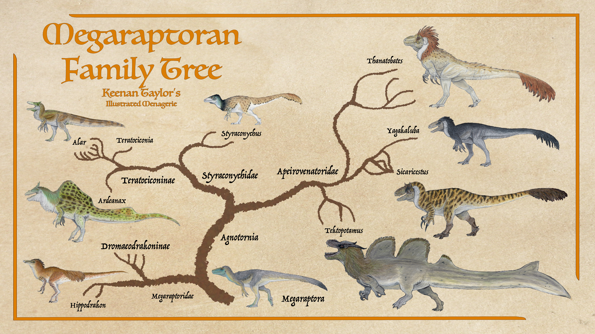
The evolutionary history of Ardeanax bakar is inseparable from the unusually complex history of megaraptoran evolution on Kaimere. The species represents neither a primitive survivor nor a simple offshoot of the Earth-derived megaraptorids, but rather the highly specialized terminal expression of one of two major Kaimeran megaraptoran radiations. The present consensus recognizes two geographically and evolutionarily distinct megaraptoran histories on Kaimere: one associated with more derived members of the Earth family Megaraptoridae and another, generally placed within the endemic clade Agnostornia, descended from much more basal megaraptoran stock introduced during the earlier Mesozoic dynasties. Because the fossil record of both Earth and Kaimere is exceptionally incomplete, the exact position of these animals remains uncertain; nevertheless, the available evidence strongly supports the distinction between these two radiations.
The deepest ancestry of the Kaimeran agnostornian lineage appears to extend into the Age of Tremor and Travel, approximately 110 — 85 million years ago. These early animals were relatively small, agile predators that persisted as generalized members of Mesozoic ecosystems. Their precise relationship to true megaraptorids remains debated. Some interpretations place them within Megaraptora proper, probably close to a Fukuiraptor-like ancestral condition, whereas others regard them as a sister lineage or as an early branch within basal tyrannosauroids. The uncertainty is compounded by the harvest history of Kaimere, which repeatedly introduced anatomically similar theropods from geographically and phylogenetically distinct source faunas. Consequently, superficial resemblance among Kaimeran megaraptorans cannot automatically be interpreted as evidence of close relationship.
A second, more derived megaraptoran lineage entered Kaimere during the Red Spring Dynasty, approximately 85 — 70 million years ago. These animals belonged more securely to the Earth-derived Megaraptoridae and initially occupied subordinate predator roles beneath the enormous carcharodontosaurs of the period. Their descendants subsequently produced the endemic dromaeodrakonine lineage of Kairul, including Dromaeodrakon and Hippodrakon. This radiation is therefore phylogenetically separate from the lineage that ultimately produced Ardeanax. The distinction is critical because the two groups subsequently converged upon many of the same ecological roles: large-bodied terrestrial predation, cursorial hunting, powerful forelimb weaponry, and, in some cases, apex-predator status.
The lineage leading to A. bakar instead belongs to the endemic Kaimeran radiation now generally called Agnostornia, within which Styraconychidae and Apeirovenatoridae constitute the two principal modern branches. These clades diverged from a common Arvelith ancestry while their representatives remained comparatively small. The extinction of much of the pre-existing megafaunal community at the conclusion of the Tyrant Dynasty radically altered this situation. The loss of established large predators and herbivores created an extensive ecological vacuum, allowing the previously subordinate megaraptorans to undergo an adaptive expansion unparalleled in their earlier history. By the beginning of the Warring Clades Period, both major agnostornian branches had begun independently exploiting large-predator niches. The two branches subsequently followed conspicuously different evolutionary trajectories. Apeirovenatoridae, the "robust monarchs" or agnotorns, evolved toward a highly reinforced body plan, more expansive bodies, specialized manus development, more developed air-sac system, and increasingly prolonged social development. Styraconychidae, by contrast, retained a narrower skull, more elongate jaws, comparatively more compressed bodies, less prominent pneumatization and air-sac system, and a manus configuration more similar to derived megaraptorans. The latter condition produces a superficial resemblance to the more derived Earth megaraptorids, but this resemblance is best interpreted as a mixture of shared ancestry and functional convergence. Styraconychids were not simply "primitive agnotorns"; they represented a separate adaptive experiment that repeatedly produced apex predators in environments poorly suited to the heavier monarchs. This distinction is reflected throughout their anatomy. The generalized styraconychid skull is long anteroposteriorly and substantially narrower than that of apeirovenatorids, while remaining deeper and more strongly constructed than the extremely gracile skull of Hippodrakon uktaro. The teeth are relatively broad, strongly recurved, and coarsely serrated, reflecting an emphasis on secure prey restraint and tissue disruption. The forelimbs retain three unctional digits and substantial grasping claws, while the hindlimbs remain powerful enough for cursorial locomotion. Their long, muscular tails provide both counterbalance and substantial caudofemoral power. These features establish the basic morphological framework from which both the terrestrial and aquatic specializations of Styraconychidae could evolve.
The ecological history of Styraconychidae provides an important prelude to the origin of the ba'khar lineage. During the first part of the modern era, styraconychids were major predators throughout Arvel and Ni'Khar, exploiting forests, highlands, open country, and wetlands. They included both terrestrial generalists and increasingly specialized aquatic-associated forms. Their initial success was subsequently challenged by the arrival and expansion of other megaraptoran lineages. As Kaimere entered an increasingly arid phase immediately preceding the Anchored Period, low sea levels permitted Apeirovenatoridae to cross from Arvel into Ni'Khar. With the climatic reversal that initiated the Anchored Period, forests expanded dramatically, and the robust monarchs increased in size and abundance. Their increasingly powerful and socially coordinated predatory strategies displaced many large terrestrial styraconychids. The situation was especially severe in Ni'Khar, where the arrival of Hippodrakon introduced another competitor. Unlike the endemic agnostornian styraconychids, Hippodrakon belonged to the Earth-derived megaraptoran radiation. Its populations had originally remained subordinate predators in northern Ni'Khar, but climatic disruption enabled them to become apex predators and subsequently expand southward. Their comparatively social organization and coordinated hunting may have given them an advantage over more solitary styraconychids. Large terrestrial styraconychids survived the Anchored Period as rare heavyweights, but these giants ultimately disappeared, leaving only the darun of the Arvelith highlands and the western megalosaur of western Arvel as the recognized terrestrial representatives of the clade.
The persistence of Styraconychidae therefore became increasingly concentrated within their aquatic branch, the Teratociconinae, or "monstrous storks." This subfamily represents one of the most important evolutionary specializations within the entire styrachonychid radiation. The ancestral teratociconine inherited the long, narrow styraconychid skull and forelimbs but began reorganizing these structures around fish capture. The rostrum became elongated and dorsoventrally shallow, while the posterior skull became progressively more reinforced. The jaws acquired a distinctive capacity for posterior bowing, allowing exceptionally large fish and other prey to be swallowed whole. The forelimbs retained powerful grasping claws, but their primary function increasingly shifted toward stabilizing and holding aquatic prey rather than delivering rapid terrestrial killing strikes. The most important innovation of the teratociconine lineage was the development of the specialized suspension-neck apparatus. A powerful nuchal ligament and associated musculature linked the skull to enlarged posterior axial processes, allowing the animal to support its head in an extended, lowered position for long periods with comparatively little muscular expenditure. This is fundamentally different from the familiar function of the nuchal ligament in cursorial mammals, where the structure assists in supporting the head during locomotion. In teratociconines, the system became a feeding adaptation: the predator could stand or slowly wade through shallow water with its head held forward, wait for prey, and rapidly elevate the head after seizing a fish. The structure is sufficiently distinctive to constitute one of the principal anatomical indicators of Teratociconinae. The origin of this specialization probably preceded the extraordinary body size of A. bakar. The ancestral teratociconine was not necessarily enormous. Indeed, the later history of Alar indicates that relatively small, generalized fishing predators persisted for millions of years. What evolved first was therefore not gigantism but an increasingly efficient method of exploiting fish-rich shallow water. The massive ba'khar condition represents a later escalation of that strategy. As prey availability permitted larger body size, the supporting neck musculature, dorsal axial structures, forelimbs, and weight-bearing hindlimbs were progressively reinforced. The result was a predator capable of holding a massive head over the water for prolonged periods and of lifting exceptionally large prey without requiring the extensive lateral neck mobility characteristic of more active aquatic hunters.
Teratociconinae subsequently divided into three principal lineages approximately 6 — 10 million years ago. One remained principally associated with Arvel and became the lineage of Alar and Teratociconia respectively. The other expanded northward into Ni'Khar and eventually produced the ba'khar radiation. This split should not be regarded as a simple geographic subdivision within an otherwise uniform lineage. The branches subsequently diverged substantially in ecological strategy. The Arvel lineage remained comparatively generalized. Through the Anchored Period, its ancestors were approximately half-ton riverine, estuarine, and coastal predators. Their body plan retained the basic teratociconine fishing apparatus without undergoing the extreme gigantism seen in the ba'khar lineage. The modern genus Alar is consequently characterized by considerable ecological versatility. Its representatives may wade in shallow water, swim after fish, dive for aquatic prey, scavenge marine animals, and move considerable distances across land. The Trakaiam Alar, for example, is strongly associated with the inland sea but still hunts primarily from shore, while other species are primarily freshwater predators. However Teratociconia only has a single representative, and occupies the Khalin Islands and most of southern Arvel.
This versatility became crucial approximately 1.5 million years ago. The faunal turnover marking the end of the Anchored Period profoundly disrupted established predator communities. Many large, specialized ba'khar relatives disappeared, while Alar underwent a rapid geographic and taxonomic expansion. The genus spread throughout the Known World and beyond, reaching northern Ni'Khar and western Kairul. Its success was probably facilitated by its comparatively small body size, greater ecological flexibility, higher saltwater tolerance, and reduced dependence upon specialized wetland nesting environments. In effect, the evolutionary attributes that had seemed relatively unspectacular during the Anchored Period became exceptionally advantageous when environmental instability temporarily favored flexibility over specialization. The northern branch followed the opposite trajectory. Rather than retaining a generalized fishing morphology, it increasingly specialized in the shallow-water niche. Its descendants became progressively larger, more buoyant, and more dependent upon abundant wetland prey. The ba'khar condition represents the extreme endpoint of this process. Its enormous body is supported by a lightweight, highly pneumatic skeleton; its hindlimbs are robust rather than cursorially elongated; and its forelimbs retain substantial grasping ability. The animal remains fundamentally terrestrial in anatomical organization, but its locomotor and feeding ecology are organized around wading and shallow-water predation.
This distinction explains why Ardeanax bakar should not be grouped ecologically with the enormous apeirovenatorid kurajaku merely because both are giant aquatic-associated megaraptorans. Kurajaku belongs to the robust monarch radiation and represents a radically different evolutionary solution. Its lineage originated in Arvel and was already a substantial swamp and estuarine predator during the Anchored Period, but following the 1.5-million-year faunal turnover it encountered an enormous new resource base in the expanding Trakaiam Sea. Its descendants became extraordinarily dense, reduced their pneumaticity, shortened their limbs, and evolved specialized bottom-running locomotion. Males ultimately reached gigantic sizes, with extreme specimens exceeding twenty meters and several tens of tonnes. The contrast between kurajaku and ba'khar is therefore phylogenetically fundamental. Kurajaku became an aquatic specialist by increasing density and reducing reliance upon terrestrial locomotion. Ba'khar became a shallow-water specialist while retaining the lightweight skeletal architecture and terrestrial locomotor ancestry of Styraconychidae. Kurajaku can descend into deep channels and run along their bottoms; ba'khar is too buoyant for such a lifestyle. Conversely, the great density of kurajaku makes it cumbersome on land and comparatively poorly suited to the terrestrial margins that ba'khar can exploit. The two animals consequently partition aquatic environments despite belonging to entirely different megaraptoran branches.
Alar occupies the intermediate ecological position between them. It is denser than ba'khar but less dense than kurajaku and is a substantially better swimmer than either. It can pursue fish into more open water while retaining competence in shallow habitats. The Seridic form is particularly instructive because its reduced body size appears to have been shaped partly by coexistence with the much larger ba'khar. Rather than competing directly for the largest nesting territories, these smaller Alar exploit marshier habitats where their size permits nesting in locations inaccessible to larger predators. The modern Seridic community consequently preserves the three principal evolutionary solutions to aquatic megaraptoran predation. Ba'khar represents the large, lightly built, shallow-water wader; Alar the smaller, denser, highly flexible amphibious predator; and kurajaku the enormous, densely built benthic specialist. Their coexistence is not evidence of a single lineage progressing toward increasingly aquatic forms. Instead, it demonstrates convergent exploitation of the same extraordinarily productive wetland environment by separate branches of Agnostornia.
The history of A. bakar after the faunal turnover was consequently one of contraction rather than expansion. Elsewhere, Alar replaced the larger teratociconines that had formerly occupied similar niches. The ba'khar lineage disappeared from most of its former range, leaving the Seridic Wetlands as its final refuge. The persistence of this population was almost certainly enabled by the extraordinary productivity of the basin. Fish abundance remained sufficiently high to support a predator whose enormous body and specialized reproductive requirements would have been unsustainable under poorer conditions. The survival of ba'khar was therefore not simply a matter of competitive superiority; it was a consequence of environmental exceptionalism. Indeed, the modern relationship between ba'khar and alar is unusual because the competitive outcome is not fixed. During the period of environmental instability, Alar temporarily dominated the niche. Once the Known World returned to a more productive state, the larger ba'khar recovered and regained dominance over the shallow-water fishing niche within the Seridic basin. Yet the alar did not disappear. The abundance of fish means that food is not necessarily the limiting resource; nesting habitat is more important. Smaller female Alar can occupy nesting locations inaccessible to ba'khar and kurajaku, allowing them to persist alongside their much larger relative. This ecological history helps explain the apparently paradoxical evolutionary status of the modern species. A. bakar is highly successful within the Seridic Wetlands but evolutionarily unsuccessful on the broader continental scale. It is a dominant predator within its remaining habitat, yet it is the sole survivor of a once-diverse northern lineage. Its evolutionary history therefore illustrates the difference between local ecological dominance and long-term evolutionary expansion. A species may remain extraordinarily effective within its preferred environment while simultaneously becoming increasingly vulnerable at the geographic scale. The reproductive biology of ba'khar is consistent with this specialized history. Females establish and defend territories centered on suitable nesting habitat, while males are predominantly vagabond. Large body size improves both male mobility and female territorial defense, but reproductive investment limits female growth more strongly than male growth. Females may form temporary associations with sisters when suitable territories are scarce, but the fundamental social organization remains territorial rather than pack-based. This contrasts strongly with the robust monarchs, in which prolonged parental association and complex multigenerational social structures became increasingly important.
The difference reflects a deeper phylogenetic division between the two agnostornian radiations. Styraconychids generally disperse their offspring relatively early, whereas apeirovenatorids have greatly extended juvenile dependence. Both lineages retain a form of multigenerational family organization, but the emphasis differs substantially. The robust monarch strategy places greater evolutionary investment in prolonged learning and social coordination, while the styraconychid strategy favors earlier independence and faster acquisition of an adult ecological role. Ba'khar retains this latter condition despite its enormous body size, with juveniles becoming increasingly independent during their first three years and reaching sexual maturity by approximately eight to nine years. This relatively rapid development is especially significant when considered against the background of megaraptoran evolution. The ba'khar does not achieve its enormous size through the prolonged developmental trajectory characteristic of the robust monarchs. Instead, it undergoes rapid juvenile growth followed by a prolonged period of adolescent size increase. The resulting life history is therefore more consistent with the ancestral styraconychid strategy than with the derived apeirovenatorid one. Its gigantism represents an anatomical specialization superimposed upon a fundamentally styraconychid developmental framework. The same principle applies to its sensory systems. Styraconychids generally possess excellent vision and ultraviolet sensitivity, but ba'khar has carried olfactory specialization much further than the terrestrial members of the clade. The exceptional development of scent glands and olfactory discrimination allows adults to identify numerous fish species and infer information concerning their abundance, condition, and size from chemical traces associated with the water. This is a derived ecological specialization rather than a primitive retention. It reflects the fact that ba'khar lacks the aerial perspective available to flying fish predators and instead requires a different method of locating productive feeding grounds. Its sensory biology therefore represents another consequence of the Teratociconinae's increasingly specialized relationship with wetlands.
The evolutionary trajectory of the ba'khar lineage can consequently be summarized as a sequence of increasingly restrictive ecological commitments. Its distant ancestors were small generalist megaraptorans. Agnostornian ancestors became large predators following the collapse of the Tyrant Dynasty. Styraconychids retained a slender, grasping morphology while diversifying across terrestrial and aquatic habitats. Teratociconines then specialized toward fish-rich wetlands. The northern teratociconine branch entered Ni'Khar and increasingly emphasized shallow-water wading, suspension feeding, and gigantism. Its descendants subsequently underwent substantial extinction during the 1.5-million-year faunal turnover, while the more generalized Alar lineage expanded explosively. Finally, the Seridic Wetlands preserved a remnant population from which modern Ardeanax bakar survived. The species is therefore best interpreted as a phylogenetic relict but an anatomical extreme. It is relictual because it is the only confirmed surviving member of its northern teratociconine lineage in the Known World. It is not primitive because virtually every conspicuous feature of the animal reflects derived specialization: its extraordinary suspension neck, shallow rostrum, distensible mandible, lightweight giant body, shallow-water locomotion, extreme olfaction, polarized visual adaptations, and territorial reproductive ecology. The animal is the surviving endpoint of an evolutionary experiment, not a living representative of the ancestral condition from which that experiment began.
In this respect, Ardeanax bakar occupies a particularly revealing position within Kaimeran megaraptoran evolution. It stands phylogenetically between the generalized terrestrial heritage of Styraconychidae and the highly specialized aquatic world of the Teratociconinae; ecologically between the flexible alar and the profoundly aquatic kurajaku; and historically between the lost diversity of the Anchored Period and the comparatively simplified predator communities of the modern Crescent. Its anatomy records the accumulation of adaptations rather than a single dramatic evolutionary innovation. The great "monstrous stork" is consequently the final expression of a lineage that began with small, agile predators and ultimately produced one of the largest and most specialized members of Styraconychidae. Its six-ton body, thirteen-meter length, powerful suspension neck, lightweight skeleton, grasping forelimbs, specialized sensory systems, and territorial life history are the cumulative products of this phylogenetic history. The Seridic wetlands did not merely provide refuge for A. bakar after its relatives disappeared. They preserved the environmental conditions under which the entire teratociconine experiment remained viable.
For more information, see the megaraptoran article .
Social Behavior and Organization
Adult ba'khar are predominantly solitary, but their social organization is more accurately characterized as facultative, kin-structured, and strongly dependent upon age, sex, reproductive condition, and resource distribution than as simple social isolation. Permanent mixed-sex groups, cooperative packs, and stable breeding colonies are absent. Nevertheless, individuals maintain prolonged relationships with mothers, siblings, temporary mates, and, in some cases, familiar adult male relatives. Social associations are therefore concentrated within particular stages of the life cycle rather than being maintained uniformly throughout adulthood. The resulting system combines long-term maternal associations, temporary sibling groups, loose male associations, seasonal aggregations around exceptionally productive waters, and strongly exclusive female territories.
The most stable social unit is the maternal family, centered upon an adult hen and the offspring occupying her territory. A typical family association contains the mother and 2 — 10 dependent juveniles, corresponding to one or occasionally several overlapping reproductive cohorts. Because ba'khar females may retain offspring for several years, a highly productive territory can temporarily contain hatchlings alongside juveniles two or three years older. In unusual circumstances, older daughters may remain within the maternal range after reaching physical maturity, producing temporary multigenerational associations. These groups should not be interpreted as cooperative breeding societies. The adult hen remains the central social individual, and the continued presence of older offspring depends upon her tolerance and the availability of sufficient resources.
During the first months after hatching, social cohesion is extremely high. Chicks generally remain within 5 — 20 meters of the hen while traveling and may cluster within only a few meters of her during resting and feeding. Their constant proximity has obvious protective value, but it also facilitates communication and learning. The hen provides the brood with information about safe routes, productive fishing locations, dangerous animals, and appropriate responses to unfamiliar disturbances. Acoustic signals allow her to maintain contact with chicks even when dense reeds, flooded forest, or shallow water obstruct direct vision.
As juveniles grow, the spatial structure of the family gradually loosens. By approximately 6 months, young ba'khar may routinely travel 50 — 200 meters from the mother while foraging, returning when food is discovered or when danger is detected. Between 1 and 2 years, exploratory movements of several hundred meters become normal, and older juveniles may spend portions of the day more than 1 kilometers from the nest or principal maternal resting areas. Nevertheless, these movements occur within a recognizable maternal landscape. The juvenile continues to use established routes, feeding sites, shallow channels, and shelter areas learned from the mother. Sibling relationships are particularly important during this period. Young ba'khar frequently rest together, groom one another, investigate unfamiliar objects collectively, and engage in physical play. Jaw sparring, pushing, mock lunging, wrestling with the forelimbs, and short pursuit bouts occur regularly among juveniles. These behaviors provide opportunities to develop bite inhibition, locomotor coordination, balance, and an understanding of social boundaries. Because adult ba'khar possess extremely powerful jaws and claws, learning how much force can be applied during physical contact is particularly important.
Juvenile social relationships are not completely egalitarian. Size and age strongly influence access to food, favorable resting locations, and maternal attention. Older individuals generally displace younger siblings from preferred positions, particularly when the mother returns with a large food item. Such interactions normally involve pushing, posturing, jaw opening, and displacement rather than sustained violence. Serious injury among siblings appears uncommon. The resulting hierarchy is therefore relatively flexible and functions primarily to regulate access to resources rather than establish permanent dominance. Older juveniles may also begin participating in limited defensive behavior. Individuals approaching approximately 2 — 3 years of age are substantially more confident than hatchlings and may investigate unfamiliar predators, scavengers, or conspecifics approaching the family territory. They may position themselves between smaller siblings and a perceived threat, issue warning calls, or make short charges. Such behavior is probably partly innate but becomes increasingly refined through experience. The juvenile learns which threats require immediate intervention and which are better avoided.
Occasional cooperative foraging also occurs within these family groups. Two or more siblings may simultaneously enter shallow water and inadvertently drive small fish toward one another, or they may surround small terrestrial prey in dense vegetation. Such events can improve capture success, but they do not constitute coordinated hunting in the strict sense. Each animal remains primarily responsible for its own capture attempts, and cooperation breaks down rapidly when prey becomes scarce or when a particularly valuable food item is obtained. The species therefore lacks the behavioral specialization and stable role differentiation characteristic of genuinely cooperative predators.
The family structure changes substantially as juveniles approach independence. By approximately 3 years, many offspring have become capable of obtaining most of their own food. Maternal provisioning becomes increasingly infrequent, and the social relationship shifts from direct dependence toward ecological apprenticeship. Juveniles may continue following their mother to productive fishing sites, but they increasingly forage independently. The mother also becomes less tolerant of persistent close association, particularly when preparing for another breeding attempt. The presence of a new nest is often the decisive factor causing family fragmentation. A hen preparing to reproduce becomes increasingly protective of the nesting core, and older offspring may be excluded from areas they previously occupied freely. The behavioral transition can be gradual. Initially, the mother may simply use warning postures and vocalizations to move juveniles away. As eggs are laid, however, tolerance can decline sharply. Older offspring approaching within approximately 50 — 100 meters of an active nest may be challenged, and individuals that fail to withdraw can be physically driven away. This creates a progressive outward displacement of older juveniles and ultimately promotes dispersal.
Female offspring experience a particularly complex relationship with maternal territories. Young hens may remain near their natal region after independence because suitable wetlands are limited, but they generally cannot occupy the maternal nesting core. A mature mother may tolerate an adult daughter along the peripheral portion of her range provided that the daughter does not compete directly for nesting habitat. In exceptionally productive wetlands, mother-daughter associations involving two adult females may therefore persist temporarily. These relationships represent spatial tolerance rather than permanent cooperative groups. Once resources become constrained, the older female normally retains priority.
Adult female-female relationships are consequently the least socially tolerant in the species. Neighboring hens may recognize one another individually through scent and vocalizations and may maintain stable boundary relationships for many years without frequent physical contact. This familiarity does not necessarily imply affiliation. Instead, it allows individuals to avoid unnecessary confrontations by maintaining predictable spatial separation. A hen that regularly encounters the scent of a neighboring female may alter her movements accordingly, while both individuals can exploit peripheral resources without repeatedly testing the boundary.
Adult drakes display considerably greater social flexibility. Because males do not maintain permanent reproductive territories, they can tolerate other males within the same broad home range. Several adult drakes may utilize the same productive wetland simultaneously, particularly when fish are abundant. Temporary concentrations of 3 — 10 males are plausible around exceptionally productive pools, seasonal fish concentrations, or persistent dry-season refugia. Larger aggregations of 10 — 20 individuals may occur during exceptional prey events, although these are ecological concentrations rather than stable social groups. Male associations are particularly important among relatives and familiar individuals. Brothers may remain together for extended periods following dispersal, sometimes traveling, resting, and feeding in proximity for several months or even most of a year. Such associations are not permanent and do not possess rigid membership. Individuals may separate during the breeding season when access to females becomes important and subsequently reunite after reproductive activity declines. The persistence of these relationships suggests that individual recognition and social memory are well developed. Mutual grooming is one of the most conspicuous affiliative behaviors among associated males. Individuals may clean the feathers and scales around the head, neck, crest, and anterior body of a companion. Grooming may continue for several minutes at a time and can be repeated multiple times during a resting period. It likely has both hygienic and social functions. Because feather condition influences visual signaling and reproductive attractiveness, maintaining the plumage of a familiar associate may also indirectly reinforce social bonds. Coordinated travel is another characteristic of male associations. Two or more males may move through the same channel at intervals of only 10 — 50 meters, periodically stopping to fish or rest before continuing together. This behavior does not involve coordinated pursuit or prey capture. Rather, the animals appear to benefit from shared movement through familiar habitat. Young or inexperienced males may also gain information by following older individuals, particularly during movements between seasonal fishing grounds. These associations become less stable when reproductive competition intensifies. A familiar male may tolerate a brother during ordinary travel yet become aggressive if both encounter a receptive hen simultaneously. Breeding therefore represents one of the principal forces disrupting male social relationships. Displays generally precede physical aggression. Individuals may elevate the head, expose the pale throat, expand the mane, present the crest, open the jaws, and move laterally relative to one another. If neither animal withdraws, the interaction may escalate into pushing, jaw contact, and brief grappling.
Temporary mixed-sex associations are largely restricted to reproduction. A drake and hen may remain together for approximately 3 — 4 weeks following mating, corresponding closely to the period of gravidity. During this interval they rest together, groom one another, exchange scents, and frequently travel short distances together. The association is strongest immediately after successful courtship and gradually weakens as the hen approaches oviposition. After the eggs are deposited, most drakes depart within several days, and the female resumes her predominantly solitary existence.
The largest social gatherings occur during unusual concentrations of resources. When seasonal flooding connects multiple wetlands or fish become concentrated in a productive refuge, numerous ba'khar may temporarily occupy the same general area. Aggregations of 10 — 30 individuals are possible in exceptionally productive systems, although spacing remains substantial. Individuals do not form a coherent mass. Instead, each maintains a personal zone around itself, periodically moving between feeding positions and resting areas. Large males are generally more tolerant of such concentrations than females, whose territorial behavior becomes increasingly restrictive around nesting areas. These aggregations are important because they demonstrate that ba'khar are not intrinsically asocial. The species possesses the behavioral flexibility necessary to recognize, tolerate, and interact with numerous conspecifics when ecological circumstances favor proximity. What is absent is persistent group cohesion. Once the resource concentration declines, the aggregation dissolves and individuals return to their normal spatial arrangements.